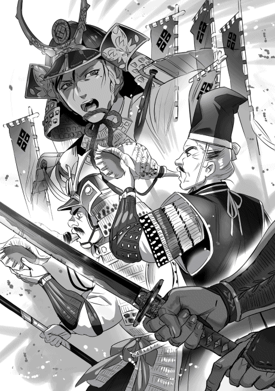
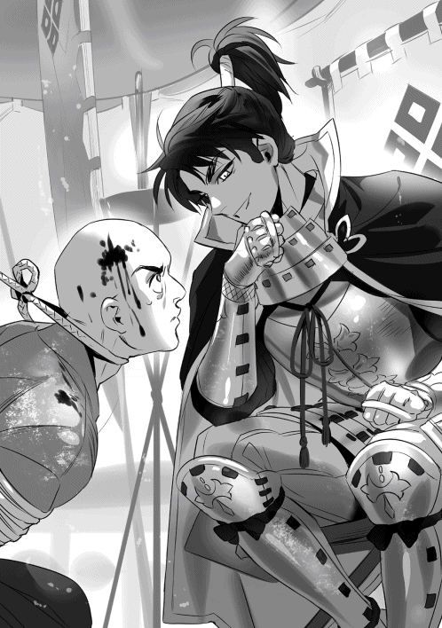

| 淡海乃海 水面が揺れる時～三英傑に嫌われた不運な男、朽木基綱の逆襲～参【電子書籍限定書き下ろしSS付き】 | |
| イスラーフィール | |
| TOブックス (2018) | |
一五六七年。破竹の進撃を続け、遂に近江の主要勢力になった朽木とその当主・基綱。勢いそのままに、いよいよ近江統一へ向けて、巨大勢力・三好家の打倒へ動いていた。だが、北に一向一揆、南に六角、西に三好、東に一色──朽木の増長に歯止めをかけるべく、大家連合による「朽木包囲網」が画策されていた！


ILLUST．碧風羽
DESIGN．AFTERGLOW
朽木包囲網
永禄十年（一五六七年） 二月上旬 甲斐国山梨郡古府中 躑躅ヶ崎館 馬場信春
「永らく御世話になり申した。これまでの御交誼、心から御礼申す。御屋形様には良しなに御伝え頂きたい」
「分かり申した。......もう会う事もござるまい。御身御大切にされよ」
「忝のうござる。美濃守殿にも御身御大切に。......では」
一礼すると市河孫三郎信房が席を立った。そして部屋の外でもう一度頭を下げてから去って行った。律儀な男だ。
また一人居なくなった。これで何人目か......。そう考えていると跡部大炊助が部屋に入って来て目の前に座った。
「美濃守殿、今そこで市河孫三郎殿に会いましたが？」
「最後の挨拶に来た」
「そうですか、......已むを得ぬ事では有りますが何とも遣り切れぬものですな」
跡部が沈んだ声を出した。
跡部の言う通り已むを得ぬ事では有る。武田に付いた北信濃の国人衆は皆が領地を追われた。上杉に付こうとした者も居ただろうが上杉方の北信濃の国人衆がそれを許さなかった。領地を追われ越後に逃げた惨めさがその心を頑なにした。上杉も何時武田に寝返るか分からない人間よりも武田と戦い上杉に忠誠を示した国人衆を優遇した。
武田に余裕が有れば替えの領地を与える事が出来ただろう。だが今の武田は三十万石に満たぬ領地しかない。そして村上氏を始めとする北信濃の国人衆の攻撃を防ぐのがやっとの有様だ。とてもではないが他者の領地を切り取る事など出来そうにない。何と言っても村上達の後ろには上杉が居る。今は関東に目が行っているが信濃の事を忘れる筈が無いのだ。
領地を取り戻せる目途も立たず替えの領地を得る事も出来ぬ。武田は面目を失った。北信濃の国人衆が武田に見切りを付け離れるのは仕方の無い事だろう。そして武田はその事を腹立たしく思い情けなく思いつつも何処かでホッとしている。彼らが武田を離れればその分だけ費えが減る。御家の台所事情が少しは良くなるのだ。
「何処へ行くか、お訊きになられましたか？」
「上方に行くと言っていた」
「では朽木？」
「おそらく」
はっきりとは言わぬ。そしてこちらも問わぬ。先代の御屋形様の最後を考えれば朽木へ行く事など許せる事ではない。だが信濃衆を養えぬ以上口には出来ぬ。彼らも生きていかねばならぬのだ。跡部が軽く息を吐いた。そして困った様な笑みを浮かべた。
「やれやれ、皆朽木に行きますな」
「朽木は不思議な程に北信濃の国人衆を厚遇するからな。行き易いのであろう」
「兵五百に鉄砲五十丁、最前線の城一つでしたな」
「それは室賀と芦田であろう。真田は兵千五百を預けられている」
兵千五百と言えば五万石相当の軍役に等しい。新参の他国者に対する扱いではない。譜代の重臣並みの扱いだ。羨ましい程に厚遇されている。
「朽木は元が小身の国人領主、譜代の家臣が少ないのでしょうが随分と思い切った事を致しますな」
「他国から人を集めるという意味も有ろう。実際武田からは次から次へと人が出て行く。弱みを強みに変えたわ」
そして朽木は百万石近い身代を持ち京にも近い。人が集まり易い利点に恵まれている。
「朽木大膳大夫、気性の激しい男と聞いていますが？」
「うむ、幼少の頃から胆太く周囲が持て余す程に利かん気だったと聞いている。元服前にも拘わらず亡くなられた義輝公を守って三好に一歩も譲らなかった」
「寝返れば若狭一国、敵対するなら三千の兵で滅ぼすと脅され三万でも退かぬと笑い飛ばしたのは有名な話ですな」
跡部の口調には感嘆が有った。
「皆が三好を畏れる中で大膳大夫一人だけが三好を畏れなかった。義輝公は大膳大夫の忠義に涙を流して感謝したらしい」
当時の朽木は一万石に満たぬ存在だった事を考えれば異様では有る。だがその朽木が今では近隣を圧する存在になっている。やはり大を成す者は凡人とは違うという事か......。
「六角承禎入道殿は大膳大夫を只者ならずと見て娘婿にしましたが......」
「随分と自慢の婿だったようだが肝心の六角家が傾いてしまった。六角家にかつての勢いは無い」
「乱世とは言え厳しいものですな」
跡部が嘆息した。
確かに厳しい。かつて勢いを誇った朝倉は滅び六角は近江半国を維持するのがやっとの事。いずれは朽木に滅ぼされるか、臣従して領地を保つしかあるまい。そして口惜しいが武田、北条、今川にもかつての勢いは無い。三好も二つに割れ争う有様。そんな中で朽木と上杉が勢いを強めている。特に朽木は比叡山を焼き討ちし日吉大社も焼いた。敵対する者は何者であろうと許さぬという苛烈さが有る。それを思えば簡単には敵に回せぬ。周囲は朽木を畏れている......。
「しかし武に優れた男、気性の激しい男というのは政は不得手な事が多いですが大膳大夫は違いますな」
「朽木仮名目録か、あれは今川の真似であろう」
「そうですが良いとなれば積極的に取り入れております。それは評価出来ましょう」
「まあ、確かにそうだが......」
何処かで朽木大膳大夫を認めたくないという想いがある。朽木が余計な助言をしなければ武田は北信濃を制圧し上州を目指した筈。その後は弱体化した駿河を目指しただろう。亡き御屋形様の目は南に注がれていた。三国同盟は崩れるが上杉という敵が有る限り、北条は武田を敵には出来ぬ。関東に覇を唱える北条にとっては関東管領など邪魔でしかないのだ。そして単独で上杉の相手をするのは容易では有るまい。北条は必ず武田の手を握る。
だが現実には武田、北条、今川はそれぞれに弱体化し協力し合わねば国を保てぬのが実情。苦しみながら領土を拡大してきた事が全てが無に帰した。亡き御屋形様が始められた竜王之堤の普請も資金不足で思う様に進められぬ。信頼様は何とか武田の勢いを昔のようにしたいとお考えだが......。溜息が出そうになって慌てて堪えた。
「羨ましい事よ」
「は？」
跡部が訝しげな表情をしている。
「天下第一の富強だからな。税が安く領内には商人が溢れていると聞く」
「明と交易し蝦夷地にも船を出しているようですな。上杉も朽木との交易を積極的に進めております。それだけ利が有るのでござろう」
海か、甲斐は山国、船を使った交易など出来ぬ。馬と船では積み荷の量が違う。朽木の金が武田にも有れば......。
永禄十年（一五六七年） 三月上旬 山城国葛野・愛宕郡 平安京内裏 目々典侍
「いらせられませ、お父様」
「うむ、皇子様、皇女様は如何御過ごしかな？」
「はい、何事も無く健やかに過ごしておいでです」
「そうか、それは重畳」
父、准大臣飛鳥井雅綱が満足そうに頷いた。
「一昨日、一条権大納言殿の所に行って参った。仲良く暮らしておいでであったぞ」
「そうですか。お父様、御足労をおかけしました。有難うございます」
「なに、大した事はしておらぬよ」
父が朗らかに笑い声を上げた。上機嫌だ。どうやら一条家に嫁いだ娘は幸せに暮らしているらしい。
「昔に比べると大分良くなった」
父が部屋を見回しながら呟いた。部屋には調度品が美しい装いを見せている。
「朽木より援助が有りますから。でもそれは飛鳥井の屋敷も同じでございましょう」
「うむ。昔は正月を迎えるのも苦労したが今では正月が楽しみになった」
「まあ」
二人で声を合わせて笑った。
大膳大夫が朽木家の当主になってから暮れになると様々な物が贈られてくるようになった。昔は干し椎茸、澄み酒、石鹸等。今では敦賀、若狭を得た事で塩、俵物、昆布、砂糖、越後上布。明との交易で得た陶器、絹。時に南蛮の珍陀酒。朝廷には朽木をかつての平氏になぞらえる人もいる。
「典侍。六角、一色が上洛戦に協力するそうだ。関白殿下の元に義秋様より文が届いた」
「では大和の義秋様が？」
「うむ、いよいよ上洛するだろう」
父の声が弾んでいる。上洛戦の主力は朽木軍になる筈。また一つ、朽木の存在に重みが増す。それは飛鳥井家にも関わってくる。
父の密かな願いは孫の永仁皇子の親王宣下と元服、そして東宮宣下......。口に出す事は無いけれど私には分かる。兄も気付いている。最初は淡いものだった。でも朽木家が大きくなるにつれ父の想いが色濃くなっていく。永仁皇子には三歳年上の兄、誠仁皇子が居る。しかし永仁皇子には朽木大膳大夫が付いている。近江、越前で百万石を有する大膳大夫を無視する事は出来ない。朽木家と朝廷の緊密な関係を無視出来る者は居ない。
「典侍、知っているかな。今年は秋に大津で花火を行うらしい」
「まあ、本当ですの？」
「本当だ。敦賀では遠いが大津なら京の直ぐ傍だ。見物に行こうかと思っている」
「大丈夫ですの？」
私が問うと父が声を上げて笑った。
「心配は要らぬ。秋には戦も終わっていよう」
「それなら良いのですけれども」
また父が笑い声を上げた。
「先日、尭慧が訪ねて来た」
「御兄様が？」
「うむ、尭慧の娘を飛鳥井家の養女に、権中納言の娘にしてはどうかと言ってきた。権中納言と尭慧は既に話し合っていたようだな」
「......」
尭慧御兄様の娘を雅春御兄様の養女に？ 父が顎髭を弄っている。何か考えている時の癖、どういう事？
「飛鳥井家と朽木家の絆を今少し強めたい、権中納言も尭慧もそう思っている様だ」
「......では大膳大夫様の側室に？」
父がゆるゆると首を横に振った。
「大膳大夫程の分限なら正室が二人居てもおかしくは有るまい」
「......」
「朽木と本願寺はもはや相容れぬ仲よ。尭慧としては朽木と結んで本願寺と対抗したい、そう考えているようじゃ。だが朽木は仏教に厳しい。叡山を見れば、越前でのやり方を見れば分かる。そこでの、搦め手からというわけよ」
「お考えは分かりますが上手く行きましょうか？」
「それは分からぬ」
父がぐっと身を寄せてきた。
「それにの、皇子様には頼りになる後ろ盾が必要であろう、違うかな？」
「それは、そうですが......。御姉様には？」
気が付けば二人とも小声になっていた。
「未だ伝えておらぬ。先ずは上洛戦の行方を見る、上手く行くとは限らぬからの。だが折を見て話をするつもりだ。飛鳥井と朽木の絆を強めておきたい。一度切れかかったからの、しっかりと結び直さねば」
「......」
「何事も皇子様の御為じゃ」
永禄十年（一五六七年） 五月中旬 近江国伊香郡塩津浜 塩津浜城 朽木基綱
越前攻めは無事終結した。抵抗らしい抵抗は無いままに吉田郡、大野郡は朽木の支配する地となった。朽木は越前一国を支配下に置いたのだから出兵は大成功と言って良い。しかし手放しで喜べない部分も有る。下間筑後守頼照、杉浦壱岐守玄任は加賀に逃げた。どうやら冬の間に加賀に逃げたらしい。雪の中の逃避行だ、かなり危険だった筈だが春になって雪が溶ければ朽木が攻めてくるし越前の一揆勢も動き出す。春では逃げ切れないと思ったのだろう。自然は怖いって言うが人間も怖いね。
越前征服が終わった事で五郎衛門を始めとして何人かを城代として越前に配置した。加賀の門徒共の所為でかなり越前は疲弊している。百姓を兵に使わないとはいえ二年は休息を入れなければならないだろう。税を安くし関を廃し産業を振興させる。越前の北には三国湊が有る、交易もどんどん進めよう。それと九頭竜川の治水だな、それをやれば越前の百姓も朽木を信じ安心して暮らせるようになる筈だ。
朝倉家で九頭竜川の治水を検討した事が有るのか確認してみよう。何処かに良い人材は居ないかな？ 治水、新田開発のプロが。居れば直ぐにも取り掛からせる。問題は居ない場合だ。治水と言えば武田だが武田の技術者を引っこ抜く事が可能だろうか？ 真田に訊いてみよう。場合によっては武田から数年契約でレンタルする事を考えても良い。当然だが武田にレンタル料を払う。上杉が嫌がるかな？ 嫌がるよな、武田からのレンタルは止めた方が良いか......。
越前が完全に朽木領になった事で色んな所から文が来た。上杉輝虎、足利義秋、三好重存、松永久秀、織田信長、徳川家康......。家康は松平元康から改姓、改名したんだけれど状況は決して良くない。このまま行くと織田の属国になりそうな感じだ。折角今川から独立したのにちょっと可哀想だ。だが自分の足で立てなければ誰かに寄り掛かるしかない。
義秋から来た文は手放しで大喜びの内容だった。越前制圧よりも上洛戦の事ばかり書いてあった。〝ひとえに頼み入り申し候〟なんて書いてきている。悪いけど信用はしないよ。足利ってのは力のある大名を直ぐに抑えようとするからな。信用はしない。そのうち〝御父〟なんて書いてくるかもしれない。その時は直ぐに焼き捨てよう。
上杉、織田、徳川は越前制圧の御祝いと反本願寺の内容だったから素直に受け取れた。上杉からの文には加賀に攻め込む時は連絡が欲しいと書いてあった。越中攻めを考えているらしい。北陸から一向宗を一掃しようと言うのだろう。二年は内政に充てる、加賀に攻め込む時は連絡するから一緒に一向宗をやっつけようと返事をしておいた。末尾に南蛮船が来るようになったので珍陀酒とギヤマンの杯を送ると書いた。喜んでくれるかな？
ちょっと変わったところでは後藤、進藤、目賀田から文が来た。調略の効果有りだな。こいつらもう半分以上六角を見限っている。それぞれ返事をしたが後藤には亡くなられた但馬守殿には大変世話になったと書いた。驚いた事に蒲生からも文が来た。蒲生からは代替わりしましたので以後は昵懇にと書いてあった。自分は父親とは違います、宜しくね、そんなところだな。俺からは蒲生家は俵藤太の血を引く武門の名家、こちらこそ宜しくと返事をしておいた。蒲生は青地、馬淵等の有力者とも近い。関係改善は望むところだ。......ん、重蔵が来たな、厄介事かな？
永禄十年（一五六七年） 五月中旬 近江国伊香郡塩津浜 塩津浜城 黒野影久
「如何した、重蔵」
「はっ、少々気になる事が」
殿が声を上げてお笑いになった。
「悪い報せは良い報せだ。事が起きてから驚くよりも事が起こる前に知っておいた方が良い。それで、何が有った」
有難い事だ、こちらが話し易くして下さる。
「一色、六角の間で密かに使者が行き来しております」
「......」
「使者として動いているのは一色、六角の家臣では有りませぬ。僧のようです」
「何者だ、その坊主。叡山の坊主か？」
「分かりませぬ、今それを調べておりますがどうも違うのではないかと思われまする。或いは本願寺という事も有り得ましょう」
殿が〝ふむ〟と唸ると脇息を膝の前に引き寄せ両腕を乗せた。
「六角左京大夫、裏切ったか。朽木と松永の両方を一度に敵に回す事は有るまいと思ったが甘かったようだな。......重蔵、一色と六角だけか？ 左馬頭義栄様、三好豊前守、安宅摂津守は絡んでおらぬか？」
「今しばらく時を頂きたく」
「分かった。だが急げよ、軍を起こすまで時が無い」
「はっ」
「加賀の坊主共の動きからも目を離すな」
「はっ」
殿が大きく息を吐いた。
「囲まれたな、重蔵。北に加賀の一向一揆、南に六角、西に三好、東に一色。顕如め、余程に朽木が憎いと見える。絵図を描いたのは奴であろう」
殿は本願寺が裏に居ると考えておられる。
「織田様には御報せ致しますか？」
「そうだな、御用心されたしとでも送ろう」
「大和には？」
「......霜台殿には報せよう。だが義秋様には報せぬ」
驚いた、良いのか、それで。殿が笑い声を上げられた。余程に俺は驚いた顔をしていたのだろう。
「報せたところで義秋様は騒ぐだけであろう、何の役にも立たぬ。ならば報せずにおいた方が良い。こちらが何も気付いておらぬと相手に思わせたい」
「はっ」
なるほど、敵を欺くには先ず味方からか。
「重蔵」
「はっ」
「どうやら近江を統一する時が来たようだ」
「では」
「うむ、これを機に六角を滅ぼす。御爺も喜ぶであろう。軍略方を呼ぶとするか」
「はっ」
殿が軽やかに笑い声を上げた。
永禄十年（一五六七年） 六月上旬 尾張国春日井郡小牧村 小牧山城 織田信広
主、織田上総介信長が文を読んでいる。朽木からの文。読み終えると少し考えるような素振りを見せた。殿が儂を見た。
「知っておるか？」
知っている？ 文の内容だろうか？ 〝文の内容は知りませぬ〟と答えると殿が頷いた。間違っていなかったらしい。
「朽木の使者は？」
「我が屋敷に留めておりまする」
微かに頷かれた。朽木の使者は直接殿を訪ねる事をしなかった。先ず儂を訪ね、文を殿に渡して欲しいと頼んできた。どうやら周囲には知られたくない内容の使者らしい。
「返事を書く。持って行け」
「はっ」
「一色が裏切った、六角もだ」
「何と！」
気が付けば声が高くなっていた。殿は冷ややかな笑みを浮かべている。慌てて〝申し訳ありませぬ〟と謝罪した。殿が微かに頷かれた。
「では御上洛は中止でございますか？」
恐る恐る問い掛けると殿が首を横に振った。
「使者はその方を訪ねた」
儂を訪ねた？......そうか、朽木の使者は隠密裏に儂を訪ねて来た。つまり一色、六角の裏切りを知っても公にはしたくないのだ。その理由は......。
「罠に掛かったと見せて一色を叩くのでございますな？」
「うむ、良い機会よ」
殿が満足そうに頷かれた。なるほど、これを機に織田、朽木で一色、六角を叩くか。上手く行けば美濃、近江の情勢は大きく変わろう。
「一色、六角の裏切りですが些か訝しゅうございます。三好の調略によるものでございましょうか？」
「文には坊主が動いたと書かれてあった」
坊主？ では比叡山、或いは本願寺か。殿は不愉快そうになさっている。
「本願寺でございますか？」
「うむ」
本願寺か。となると......。
「一向一揆勢も動きましょう。油断は出来ませぬ」
「小木江の彦七郎に文を書く。兵も増強しよう」
殿がホウっと息を吐かれた。小木江城の彦七郎信興には苦労ばかりさせてしまう。殿だけに任せず儂からも文を書こう。兄二人が気遣っていると思ってくれれば彦七郎も心に張りを持てよう。
「三河の徳川には？」
「......」
言葉が無い、不機嫌そうな表情だ。報せるには及ばぬという事か。或いは儂から報せろという事か。いや、公には出来ぬのだ。殿からの使者は拙かろう。儂が徳川の家臣に使者を送ろう。酒井か、石川だな。
〝某から使者を出しましょう〟と言うと殿が頷かれた。不機嫌そうな表情は変わらない。殿は德川に強い不満を持っておられる。東の楯にと考えておられたが当てが外れた。役に立たぬと御思いだ。
「上洛は出来ぬが一色を叩けば東三河の国人衆も簡単には今川に靡くまい」
「確かに。......今川も今回の件に絡んでおりましょうか？」
「坊主が絡んでおる」
そうだな、知らぬ筈が無いか。おそらく今川の狙いは織田の上洛を潰す事で面子を潰し東三河に勢力を伸ばす事。だが一色を叩けば美濃では織田が圧倒的に優位に立つ。東三河の国人衆は美濃の次は三河と見るだろう。簡単には今川には付けまい。虚々実々、虚実を計って敵の虚を撃つか。一色との戦は負けられぬ一戦になるだろう。
北陸戦線異状有り
永禄十年（一五六七年） 六月下旬 近江国滋賀郡坂本村 坂本城 朽木基綱
「そろそろ織田と一色がぶつかる頃ですな」
「織田は一色に勝てますかな？ 尾張兵は弱兵と聞いていますが」
「織田上総介様は勇猛果敢な御方、滅多に遅れはとるまい」
「それならば良いが」
坂本城の大広間には朽木家の侍大将、国人衆達が鎧を着けて集っていた。琵琶湖を制する朽木水軍、堅田水軍も居る。総大将である俺の傍には軍略方、兵糧方、八門も居るから現代風に言えば総司令部の幕僚、実戦部隊の指揮官が集まったと言えるだろう。しかし雰囲気は必ずしも良くない。不安そうな声と表情が多かった。
「勝って貰わなければ困る。一色がこちらに来るようでは全てが狂いかねん」
井口越前守が太い声を出した。眉間に皺が寄っている。結構心配性らしい。
「案ずるな、越前守。織田殿には一色が裏切ったと伝えてある。織田殿の狙いは織田軍を襲おうとする一色軍を撃破する事。十分な備えはしてあるだろう」
「はっ、しかし」
井口越前守が更に言い募ろうとした。
「分かっている、戦だからな、何が起きるかは分からん。だが例え一色が勝っても一方的な勝ちにはならん。近江にまで出張る余裕は有るまい。それで十分よ」
「はっ」
井口越前守が頭を下げた。周囲も頷いている。少しは安心したか。
新たに出来上がった坂本城に朽木軍二万二千の兵が集結している。この他に越前に八千、今浜に三千の兵が展開している。総兵力三万三千、大したものだと思うが越前に八千も取られるのは痛い。しかし越前に配した五郎衛門達だけでは五千程の兵しかない。加賀の一揆勢が押し寄せた時に不安が有る。急遽田沢又兵衛に三千の兵を与えて越前に送った。
この状況で一色が近江に来れば更に手持ちの兵力は減る、確実に二万を切る事になるだろう。その兵力で六角、三好を相手にする事になる。井口越前守を始め皆が憂えるのは当然と言って良い。俺も正直頭が痛いが総大将自ら不安そうな様子を見せては士気はガタ落ちだろう。虚勢を張ってでも皆を落ち着かせなくてはならない。信長君、頑張ってくれよ、と祈るだけだ。でも信長って時々とんでもないポカやるからな。高性能なんだけれど今一つ信頼性に欠けるところが有る。頼むからスペック通りの性能を出してくれよ。
「山科に居る三好の兵力は如何程？」
「一万五千程と聞いている」
「一万五千か、二つに分かれながらも一万五千。大和、紀伊でも戦っている事を考えれば流石と言うべきだな」
全く同感だ。三好長慶に後五年寿命が有ったらと思うと寒気がする。......やっぱり上洛は信長が美濃を獲ってからにするべきだったかな。どうにも嫌な感じがする。
朽木、織田、一色、六角の上洛作戦は崩れた。いや崩れつつあると言うところか。一色と六角は足利義秋側から義栄側に寝返った。六角に居た幕臣達も一緒に寝返った様だ。後藤、進藤、目賀田、蒲生からの報せでは左京大夫は最近御機嫌らしい、俺に一泡吹かせられるとでも思っているのだろう。
一色と六角を寝返らせたのは本願寺顕如だ。あいつ、余程に俺が嫌いらしい。ルイス・フロイスに布教を許した事も気に入らないようだ。
〝この日ノ本に穢らわしい異人を入れ邪教の布教を許すとは何事、これまさに天魔の所業、許すべからず〟
なんと朝廷にまで俺を訴えて〝仏敵〟どころか〝天魔〟扱いしやがった。
腹が立ったから俺も朝廷を始め主だった大名、公家に反論の文を送ってやった。俺は口より先に手が出る信長とは違う。口も手も金も出す朽木だ。
〝元々仏教も日本古来の宗教ではなく外から受け入れたものです。受け入れた当初は邪教として排斥される事も有りました。しかし日ノ本の民は徐々にそれを受け入れ発展させていきました。今では神道と共に日ノ本の民に受け入れられています〟
〝外から入って来る物を頭から否定するのは正しい事ではありません。この国は外からの物を受け入れ改良する事で国を繁栄させてきたのです。一例を上げれば漢字です。漢字を受け入れた事で仮名が誕生しました。仮名を使えなくなったらどれだけ不便な事か。私には想像も出来ません〟
〝受け入れるべき物は受け入れ不要な物は捨てる、そして受け入れた物をより発展させる。この国の民はそれが出来るのです。それこそがこの国の民の大いなる力だと私は思います。今、本願寺の坊主が私の行いを天魔の所業と非難していますが筋違いも甚だしいものです。天魔の所業とは僧に有りながら人を救わず、人を殺して国を奪うような行為をこそ言うものだと思います〟
〝朽木の馬鹿野郎！ いつかぶち殺してやる！ 舐めてんじゃねえぞ！〟
本願寺の顕如はまた物を投げて癇癪を起したらしい。坊主が癇癪起こして物に当たるって良いのか？ 一番坊主に相応しくない人間が坊主をやっている様な気がする。むしろ手八丁口八丁で俺の方が坊主向きだろう。嫌だな、顕如の相手するの。なんと言っても信長とガチンコ十年戦争した奴だからな、何処か普通じゃない。
朝廷、公家からは大きな反響は無かったな。まあ京を挟んで朽木と本願寺が睨みあっている様なものだ。息を凝らして見守っている、そんなところだろう。それに京を押さえているのは足利義栄の支持勢力、つまり反朽木だからな。武家は織田、上杉、松永、徳川が返事をくれた。皆熱烈な文だったな。なんか何時の間にか俺は反仏教、反本願寺勢力のアイドルになったみたいだ。
織田、上杉、松永は良いんだが徳川は大丈夫かな？ 今川が体力を回復してきている。武田が南進出来なくなった事、徳川が一向一揆で動けなくなった事でじっくりと体制固めが出来たようだ。凶作に足を取られたりしたが、ここにきて少しずつだが東三河に手を伸ばしつつあると、八門から報告が有った。今川氏真、どうやらお馬鹿な蹴鞠大好き大名じゃないらしい。史実で今川を潰したのは時間を得られなかった所為かもしれん。信長が上洛戦に積極的だったのも今川の動きが関係している可能性が有る。
織田が尾張で五十万石、今川が駿河、遠江で五十万石には届かないが四十万石は超える筈だ。東三河は桶狭間以降自立の動きを見せていたがこれが今川に付くと勢力は拮抗するな。信長が美濃を獲らないと徳川は揺れるだろう。これから先どうなるのか......。面白くなってきた、と思うのは不謹慎だな。
信長は自分も南蛮人に会いたい、輝虎にばかりプレゼントは狡い、自分も珍陀酒とギヤマンの杯が欲しいなんて書いて来た。何時の間にか輝虎と仲良しになっているらしい。もしかすると織田と上杉で今川、武田の攻略を考えているのかもしれない。或いは今川、北条の攻略か。輝虎からも珍陀酒をもっと頂戴と言ってきている。取り合えず二人に送ったけどワイン造りを始めようか？
葡萄そのものは甲州に有るんだから栽培は可能だしワイン造りはポルトガル人に確認すれば問題は無い筈だ。教えてくれるよな？ 何と言っても俺はお得意様の筈だ。カルバリン砲、セーカー砲をそれぞれ三門ずつ買った、玉も込みでだ。これからも良い大砲が有れば買うと言ってある。カルバリン砲とセーカー砲はそれぞれ一門は鉄砲鍛冶達の研究用として塩津浜に置いてある。残りはこの坂本城に持ってきた。
「重蔵、六角家の動きは如何か？」
「観音寺城に兵八千と共に在ります」
「そうか」
兵八千、六角は大和北部を松永に奪われ伊勢北部の国人領主への統制力も失った。それでも南近江で四十万石程は有る筈だ。総兵力は一万を超える筈だが観音寺城に集まったのは八千。かつて二万を超える軍勢を動かした事を考えれば昔日の感が有る。それに八千の中には朽木に寝返る予定の兵も居るのだ。
重蔵が大広間の一角を見ている。若い男が居た。何か手で伝えようとしている。合図かな？
「重蔵、あれは八門か？」
「はっ、何か報せが届いたようにございまする」
「ならば此処へ通せ」
「はっ」
重蔵が〝小兵衛〟と名前を呼んだ。皆が注目する中、男が此方に近付いて来た。二十代半ばだろう、筋骨逞しい男だ。俺の前に来ると片膝を着いた。
「小兵衛と申すか？」
「はっ、黒野小兵衛影昌にございまする」
黒野小兵衛影昌？ 重蔵の息子か？ 重蔵の顔を見ると〝倅にございまする〟とちょっと面映ゆそうに言った。照れるなよ、重蔵。多分自慢の息子なんだろうな。
「して小兵衛、何が有った？ 殿にお答えせよ」
「はっ、越中にて動きが。一揆勢が兵を集め加賀に加勢しようとしております。さらに飛騨からも加勢の動きが」
広間がざわめいた。〝馬鹿な〟、〝なんと〟と声が聞こえる。煩いから〝静まれ！〟と言って黙らせた。拙いわ、皆顔が強張っている。イケメン十兵衛、御坊ちゃまの半兵衛も蒼白だ。俺も頬の辺りが引き攣る様な気がする。
「加賀の一揆勢に越中、飛騨の一揆勢が加勢するとなれば兵力は最低でも約二万、そんなところだな」
誰も何も言わない。反対しないんだから同意見、そういう事だよな。
「如何に五郎衛門が戦上手でも八千では勝てんな、防ぐのも難しかろう。顕如めにしてやられたか、糞坊主め！」
嫌な予感が当たったよ。石山に動きが無いから油断した。顕如の狙いは俺を後ろから牽制する事、そして越前の奪回か。幕臣達が義秋を見限った筈だよ。連中は俺が潰れると見たのだ。俺が潰れれば義秋は終わりだからな。もっと顕如に注意を払うべきだった。奴が一色と六角を寝返らせた事を重視すべきだったんだ。そうすれば越中、加賀、飛騨の動きに気付いたかもしれない。それにしても顕如の奴、他人が嫌がる事ばかりする。絶対地獄に落ちるだろう、間違っても極楽に行く事は無い。いや、俺が地獄に叩き落してやる！
「殿、如何なさいます？」
新次郎が問い掛けてきた。そうだな、愚痴っていても仕方が無い。何か手を考えないと......。十兵衛、半兵衛、上野ノ助に視線を向けたが三人とも難しい顔をしている。朽木の侍大将、国人領主も同様だ。参考意見無し、俺が答えを出さなければならん。大名も楽じゃない。
「越前の朽木勢を木の芽峠にまで退かせる。あそこなら八千でも二万の兵を防げよう」
広間がざわめいた。そりゃ驚くよな、領地を捨てるようなものだ。
「こちらを片付けた後は早急に軍を北上させ一揆勢を越前から叩き出す。良い機会よ、こちらが攻め込むまでも無い、向こうから来てくれた。精々もてなしてやろう、越前を坊主共の死体で埋め尽くしてやるわ」
誰も反対しないって事は良いんだよな。十兵衛、半兵衛、上野之助も考えながら頷いている。うん、問題は無い。越前を直轄領にしておいて良かった。内戦で荒れたからしばらくは朽木の直轄領で体力回復させる、領地を与えるのはその後にしようと考えたのが幸いした。誰かに領地を与えていたら簡単には放棄出来ん。ツキが有る、そう思おう。
「小兵衛、越前の朽木勢は北ノ庄に集まっているのか？」
「はっ」
「ならば五郎衛門に木の芽峠まで退くように伝えよ。間に合うか？」
「間に合いまする」
小兵衛が立ち去ろうとするので〝待て〟と言って留めた。
「五郎衛門は素直に下がらぬかもしれん。その時はこう伝えよ、朽木は人が足りぬ、城を枕に討死にだの野戦にて華々しく討死に等という贅沢は許さぬ。老い耄れて足腰立たなくなるまで扱使ってやるゆえ木の芽峠にて俺を待てとな。それと出来るだけゆるゆると後退し一揆勢を木の芽峠に引き付けよと伝えるのだ」
「はっ」
年寄りは直ぐに格好を付けたがるからな。気を付けないと。何だ？ 皆が変な目で俺を見ている。
「この後は如何する？ 三好か、それとも六角か？」
皆が顔を見合わせた。三好、六角の兵を合わせれば二万三千、朽木とほぼ同数だ。越前で一向一揆が攻勢を強めていると知れば内応を約束している連中もどう動くか......。
「六角は観音寺城に居るが我らが三好に向かえば必ず背後を突こうとするだろう」
「だがそれは六角に向かっても同じだろう。三好が背後を突く。軍を別けるか？」
「それを行えばこちらが六角を疑っていると知られるぞ」
「良いではないか、不意を突かれるよりはましだ」
彼方此方から声が上がった。必ず背後を突こうとする、不意を突かれるよりはましか......。
「全軍で三好に向かうぞ」
〝殿！〟と言う声が彼方此方から上がった。反対かな？ だよな、普通は抑えの兵を置く。
「まあ聞け。朽木、三好、六角、この中で一番兵力が少ないのが六角だ。そして纏まりが無いのも六角だろう。つまり一番弱い、最初に叩くなら六角だ」
「......」
不承不承といった感じで頷く姿が幾つか見えた。
「だが六角は観音寺城に居る。これを破るのは容易ではない。だから隙を見せて観音寺城から引き摺り出す」
「......」
「こちらが三好に向かえば左京大夫は城を出て朽木の背後を突こうとする筈だ。そこを一隊を別けて討つのだ。......如何かな？ 上手く行くと思うか？」
皆が顔を見合わせるのが見えた。やっぱり駄目？
永禄十年（一五六七年） 六月下旬 摂津国東成郡生玉荘大坂 石山本願寺 顕如
静かに刻が過ぎてゆく。茶室の中、湯の滾る音だけが響く。
「そろそろであろうか？」
「そうですな」
「そろそろかと」
〝そうですな〟と答えたのが下間刑部卿頼廉、〝そろそろかと〟と答えたのが願得寺住持を務める顕悟。刑部卿は坊官として私を支え顕悟は本願寺一族として私を支える者だ。
「美味しく頂戴いたしました」
「有難うございました」
「もう一服如何かな？」
二人が顔を見合わせ頷いた。そして刑部卿が〝十分に頂戴致しましたのでどうぞ御仕舞を〟と答えた。ふむ、少々物足りぬな。次はもう少し客を増やすか。道具を仕舞いながらそう思った。
「あの小僧は気付いているかな？」
問い掛けると二人が顔に笑みを浮かべた。
「六角、一色が裏切った事には気付いておりましょう。八門という忍びがおりますからな。ですが気付いても問題は有りませぬ」
「左様、刑部卿の申す通りにございます。本命は越前。朽木勢は八千、こちらは二万を越えまする。一飲みにございましょう」
「そうよな」
同意すると二人が頷いた。
織田を一色が撃つ。まあ上手くはいくまい。朽木から織田に報せが届いておらぬとも思えぬ。だが三河と長島の門徒が居る。織田は上洛は出来まい、尾張に戻る筈だ。つまり朽木は単独で上洛戦を行う事になる。六角は当てには出来ぬ。だが多少は朽木の兵を引き寄せてはくれよう。それで十分。本命は加賀、越中の門徒達だ。あの小僧が三好と戦っている最中に背後から越前を襲う。越前を獲れば若狭、近江。堅田の恨みを晴らさねばならぬ。
「楽しみよな。あの小僧の慌てふためく様が見られるとは」
「左様でございますな。御仏を軽んずる者には罰を与えねば」
「叡山があの有様にございます。それが出来るのは御上人様だけでございます」
「そうよな、顕悟。私だけだ」
あの小僧を叩く。さすれば他宗の者達も我らに一目も二目も置かざるを得ぬ。朝廷もあの小僧を頼りにしている様だが態度を変えよう。飛鳥井も青くなろうな。そして高田派の者達は意気消沈しよう。あの者共は必ず潰さねばならぬ。親鸞様の祖廟を引き継ぐのは我ら本願寺の者なのだ。
永禄十年（一五六七年） 六月下旬 山城国宇治郡山科 三好長逸
「朽木が坂本を出たらしい、こちらに向かっていると報せが有った」
三好豊前守実休の言葉に皆が顔を見合わせた。急な軍議を開いたのはそれが理由だったか。
「如何いうつもりかな？」
「向かってくるのだ、我らと戦うつもりであろう」
松山新介が疑問を口にすると今村紀伊守がそれに答えた。
「となると朽木大膳大夫は六角の動きに気付いておらぬという事になるな。そのような事、有り得ようか？」
儂が指摘すると皆が口を閉じた。一色、六角が此方の味方に付いた。一色はともかく六角の動きに朽木が気付かぬという事が有るか？ 朽木と六角の関係は極めて険悪と言って良い。朽木は六角の動向を常に注視している筈、六角の裏切りを見逃す？ 有り得ぬ事だ。皆が口を閉じ沈黙するのもそれが有り得ぬ事だからだろう。
大和の義秋が織田、一色を和解させ織田、朽木、六角の三者連合による上洛を策した。元々は大膳大夫の案らしい。織田が美濃攻略後になら上洛戦は可能だと言ったとか。相変わらず怖い事を考える男よ。だが義秋は待てなかったようだ。織田と一色を和解させ上洛軍を起こそうとした。愚かな、織田と一色の関係はそのような調停など受け入れさせるものではないわ。朽木大膳大夫が美濃攻略後と言ったのはその辺りを考慮しての事であろう。義秋は何も分かっておらぬ。義輝も同様だった。流石に兄弟よ、良く似ておるわ。己の都合だけで動く。
「日向守殿、途中大津辺りで軍を別けるのでは有りませぬか？」
「六角へは抑えの兵を置き我らと決戦すると？」
「如何にも。兵力は拮抗しております。不可能ではありますまい。朽木は越前での事も気にかかりましょう、出来るだけ早い決着を望んでいる筈」
小笠原長門守の言う事は道理ではある。本願寺顕如が此方に味方した事は大きい。加賀、越中の一揆勢が越前を目指す。たとえ此処で我らが負けても朽木は京へ踏み込む事は出来ぬ。北に行くしかない。
負ける要素は無い。一色が織田を食い止めれば朽木一人では三好、六角の両者を相手にする事になる。そして北に一向一揆。時が経てば経つ程こちらが有利になる......。
「豊前守殿、六角に使者は出されたか？」
「出しましたぞ、大叔父上。朽木を背後から襲えと。遅くとも明日にはここへ来る筈」
皆が満足そうに頷いた。六角が動けば朽木の動きを相当に牽制出来る。ますます負ける要素が無くなった。その筈だが......。
「では豊前守殿、陣を下げられては如何かな？」
「陣を下げる。......なるほど、朽木をより深く引き摺り込もうという事でござるな。良き案にござる、六角が背後を突き易くなる」
豊前守が声を上げて笑うと皆も笑い声を上げた。羨ましい事だ、儂には笑う事が出来ぬ。陣を下げるのは少しでも戦う時を遅らせようとしての事......。
六角は当てに出来ぬ。家臣達の間には左京大夫に見切りを付ける動きが有るとも聞いている。事実何人かの有力家臣が朽木に寝返った。当てにならぬ者は当てにすべきではない。我らが当てにすべきは本願寺であろう。六角は捨て駒で良い。北陸から一揆勢の報せが届けば朽木を慌てさせる事が出来る。その時こそ、勝機が生まれよう。その時まで時を稼ぐ......。
軍議が終わり陣幕から出ると倅の久介長虎が興奮した面持ちで話しかけてきた。
「父上、ようやく見る事が出来るのですな。朽木の九字の旗を」
「そうなるな」
九字の旗か......。臨む兵、闘う者、皆陣列べて前に在り。この旗を掲げ朽木は北近江、越前、若狭を負ける事無く制圧してきた。僅か一万石に満たぬ国人領主が今では百万石を超える勢力になっている。あれから十四年か......、只者ならずとは思ったが今では三好にとって最も恐るべき存在になった。
「如何に朽木大膳大夫が武勇を誇ろうと此度は勝てますまい。大膳大夫が旗を捲いて逃げる姿を見たいもの」
「そうなれば良いがな」
「父上」
久介が不満そうな表情を見せた。
「久介、大膳大夫は甘くないぞ。これまでの敵とは違うと心得よ」
「父上は朽木贔屓ですからな」
久介が笑い声を上げた。三好家では儂は朽木贔屓と評されている。儂が大膳大夫を三好に引き込めなかった事を悔やんでいる事からきたらしい。悔やむ気持ちは年々強くなっていく......。
「六角を当てにするな」
「父上？......六角が我らを裏切ると？」
久介が訝しそうな表情をした。
「そうではない。朽木は戦も上手いが調略も上手い。六角の中は既に虫食いになっているやもしれん。本当に出撃出来るのかどうか、当てには出来ん」
久介の顔がようやく引き締まった。
「しかし左京大夫は我らに必ず合力すると」
「そうなれば重畳、だがそうならぬ可能性も有る。それ故逸るなと申しておるのだ。朽木大膳大夫基綱、逸って勝てる相手ではない」
「はっ」
勝てずとも良い、負けなければ上々吉よ。思わず溜息が出た。
近江統一
永禄十年（一五六七年） 六月下旬 山城国宇治郡山科 朽木基綱
朽木勢二万の兵が初めて山城の国に足を踏み入れた。うん、少しも興奮は無い。俺は落ち着いている。興奮しているのは近習のガキ共だ。今回は例の連中は近習としては連れて来ていない、多分父親、或いは親族と一緒に居るだろう。あいつらは奉行衆の配下に置いたからな。先ずは内政家として鍛えなければならん。
代わりに近習として連れてきたのは鯰江左近定春。俺の伯父、鯰江為定の孫だ。つまり俺は叔従父に当たる。げんなりする現実だ。他には磯野藤二郎政長、こいつは磯野員昌の二男。そして秋葉九兵衛重康、千住嘉兵衛義之、葛西千四郎裕嗣、町田小十郎真隆。いずれも家中では小身の家の息子だが出来は良いと言われている小僧共だ。年は十五歳から二十歳の間。今回が初陣の奴も何人かいる。大丈夫かな？
大体十町、現代だと約一キロ程先に三好軍一万五千が陣を布いている。こちらの姿を見ても落ち着いている。普通なら使番が陣を行き来するんだがそれが無い。戦慣れしているのだと思った。分かっていた事だがこちらを待ち受けていたようだ。これまでの敵とは違うと思った。
「六角の動きは？ 報せは無いか？」
「未だ有りませぬ」
重蔵の答は望んだものでは無かった。
「そんな顔をするな、重蔵。幸い三好は逸ってはいない。このまま六角が動くのを待とう」
幸い今は日が長い。今日中に決着が着けば上等だな。
「三好は動かぬな。本当ならこの時点で戦に持ち込むべきだと思うが」
「不安なのでしょう。朽木と三好だけなら朽木の方が優位ですからな。六角が必ず来るという確信が持てずにいる」
新次郎と弾正が話している。おそらくは二人の言う通りだろう、軍略方の三人も頷いている。朽木も三好も六角左京大夫に振り回されている。
元々三好と六角は仲が悪い。それに左京大夫の父親、細川晴元は三好にとっては不倶戴天の仇、そう簡単には信じられないのだろう。朽木と三好に潰し合いをさせておいて残った方を叩く、そんな事を考える可能性も有る。三好にとっては心許せる味方じゃない。
六角が動いたという報せが届いたのはそれから一刻程経ってからだった。丁度昼食を食べ終え湯を沸かして飲んでいる時だ。
「重蔵、動いたか？」
「はっ、報せによれば六角の兵力は七千を超え既に野洲に入ったとか。かなり急いでおりまする」
七千以上か。城の守りは殆ど無いに等しいな。急いでいる、俺の首が欲しいらしい。
「では新次郎、栗太郡に行ってくれるか」
「はっ」
〝はっ〟と言ったが新次郎は不安そうな表情をしている。〝大丈夫だ〟と言って栗太郡に向かわせた。なんだかなあ、立ち去る前に新次郎と弾正が顔を見合わせて互いに頷いていた。〝頼むぞ〟、〝分かった〟、そんな感じだ。俺ってそんなに頼りないの？
新次郎は八千の兵を率いて栗太郡に向かう。六角への抑え、そして攻略部隊だ。左京大夫が城を出たら新次郎の部隊は栗太郡に入り駒井、平井と共に左京大夫を牽制する。そして朽木の水軍が二千の兵を蒲生郡に運ぶ。左京大夫は前後に敵を持つ事になる。水軍を使おうと言ったのは半兵衛だった。今回で六角を滅ぼす、逃がさないという事だ。流石だな、半兵衛。御坊ちゃまは怒ると怖いのだ。
そして俺は朽木の本隊一万二千で三好軍一万五千と向かい合う事になる。副将は真田弾正幸隆、真田の軍勢は倅共が指揮している。おそらく新次郎が栗太郡に向かえば三好は戦いを仕掛けてくる。直ぐではない、新次郎が去ってからある程度の時間を置く筈だ。早ければ一刻後、遅くとも二刻後には始まる。
「弾正、大筒、鉄砲の準備は出来ているか？」
「はっ、ご安心を。長門守様からは何時でも始められると」
「そうか」
近習のガキ共がそわそわしている。困った奴らだ。
「左近、小便をして来い」
「そ、某は」
左近が顔を真っ赤にしている。
「良いからして来い。戦が始まれば小便をする暇は無いぞ。垂れ流すか？ 他の者も遠慮せずに用を足してこい」
ガキ共は顔を見合わせてもじもじしていたけど弾正が笑いながら〝早く行って参れ〟と言うとコソコソと用を足しに出て行った。
「弾正、勝てると思うか？」
「十の内八までは勝てまする」
「残りは？」
「さあ、分かりませぬな。勝てるか、負けるか、或いは引き分けか」
「なるほど、戦とはそういう物か」
俺が素直に感心すると弾正が笑い出した。弾正だけじゃない、十兵衛、半兵衛、上野之助も笑っている。
「殿は勝敗が分からぬ時は迷いませぬが、勝てそうな時は迷われますな」
「そうかな」
皆が弾正の言葉に頷いている。
「はい。不思議な事でござるがそれでも殿は勝つ。それもまた不思議にござる」
「そうか」
どうやら俺は皆から見ると不思議ちゃんらしい。だがな、負けそうな時の方が楽なんだよ、開き直って手を打てるからな。
不安は有る。兵力は劣勢、しかも平地での決戦になる。馬防柵も無いし正面からのぶつかり合いになる。一応手立ては考えた。中央は鉄砲隊による火力で、両翼は白兵戦。鉄砲隊で敵の中央を崩しそこから兵を入れて敵の両翼の側面を突く。そんな事を考えているとガキ共が戻って来た。可笑しかった。皆すっきりした顔をしている。
三好軍に動きが出たのは一刻程経った頃だった。使番が陣の周辺を回り始めた。始めるつもりらしい、おそらくは陣立てでも触れているのだろう。
「始めるぞ、弾正。大筒には敵陣にどんどん撃ち込めと命じよ。鉄砲隊は敵が二町まで近付いたら順次攻撃。両翼は鉄砲隊の攻撃と共に敵に掛かれ」
「はっ」
弾正が使番を呼んで命令を出すと使番が陣を回り始めた。昔は俺が命じればそれで終わりだったんだけどな。でかくなると面倒だわ。伝達が一番面倒なのは大筒だな、あの四門は持ち運びが大変なのと敵に見せないために後方に置いてある。
少ししてドンという音が響いた。重なり合う様に四発、全部外れた。
「敵陣より遠くへ飛びましたな」
十兵衛が呆れた様な声を出した。カルバリン砲の有効射程距離は千六百メートル、最大射程距離は六千メートルを超える。この時代では化け物だろう。
「手前に落ちるよりは良い。敵は大筒の射程内に居る。その事を理解した筈だ。急いで攻めて来るぞ、そこを鉄砲で叩く」
この時代の弾は爆発はしない。ただの金属の塊だ。だがぶつかれば当然だが死ぬか大怪我をする。つまり恐怖心を煽る事は出来る。三好の尻に火をつける事は出来る筈だ。
「なるほど。しかし城攻めに使った方が効果的では有りますな」
「数を揃えれば野戦でも使えるぞ、半兵衛。大筒を五百も用意すればな」
「五百......」
「まあそこまで数が揃えられるのは朽木と織田ぐらいのものだろう。他は金が無い」
「はあ」
半兵衛が変な顔をしている。まあこの時代は火力はそれほど重視されていないからな。やっぱり俺は不思議ちゃんか。
またドンと音がした。今度は二つ、そして直ぐにまた二つの音がした。敵陣が乱れた。味方から歓声が上がる。うん、士気を上げる効果も有るか。
「今度は敵陣に撃ち込みましたな、二発」
十兵衛の声が弾んだ。
「ああ当たったのなら良いが」
「来ましたぞ！」
上野之助が声を張り上げた。
三好軍が喊声を上げて突撃してきた。普通は一キロ先ならゆっくり歩いて徐々にスピードを上げてくる。怖いのだ、距離を詰めたがっている。もう一撃与える事が出来るか？ 甲冑を着けているから突撃の速度は早くない、もう一撃。ドンと音がした、今度は四つ。また二つが敵陣に撃ち込まれた。陣が乱れた。やはり大砲が五百も有れば一瞬で敵を壊乱状態に追い込めるな。
距離が二町になった。中央に置いた鉄砲隊二千五百丁が攻撃を始めた。五百丁ずつ五段、今回は馬防柵は無い。連射速度を上げるために五段にした。轟音が響く。三好勢が音に驚く中、朽木の両翼が喊声を上げて突撃を始めた。そしてまた轟音、三好勢がバラバラと倒れる。うん、良い感じだ。今の所敵の中央は鉄砲隊に近付けずにいる。一方的だな、近習のガキ共も目を輝かせている。大筒は味方が突撃を始めた時点で攻撃を中止だ。味方殺しは拙い。
「殿、三好の両翼は勢いが有りませんな」
「中央が一方的に鉄砲で叩かれているからな、気になるのだろう」
「中央は何時まで持ちましょうか」
上野之助が小首を傾げた。
「さて......」
鉄砲隊は一回りした、つまり二千五百発は撃ったわけだ。もう一撃、連中の心を折る何かが必要だな。
「弾正、大筒に敵の部隊を攻撃させよう」
「殿、一つ間違えば味方を撃ちかねませんぞ！」
弾正が声を荒げた。気持ちは分かる、命中精度は低いからな。俺達は大丈夫だろうが踏み込んで戦っている両翼は危ない。
「落ち着け、当てる必要は無いのだ。少し外して後ろに撃ち込めばよい。気もそぞろになるだろう。戦など出来まい」
「なるほど、敵を怯えさせようと言うのですな」
「そうだ、その直後に中央にも兵をぶつけ、突破を図る」
「良き御思案、直ちに」
弾正が使番に命令を出すと使番が走り始めた。
越前の事が有る、急がねばならん。戦況は朽木が優勢だ。中央は鉄砲隊の連続射撃の前に三好軍は為すすべもなく戦死者を出している。両翼も朽木が優勢に押している。しかし煩い戦だな。間断なく五百丁の鉄砲が攻撃しているからな、轟音が凄い。そして一際大きな音が戦場に響いた。
「当たりましたぞ！」
弾正が咎めるような声を出した。気持ちは分かる。当てろなんて命令は出していない。だが一発が中央の部隊に当たった。味方が居なかったのが幸いだ。命令が上手く届かなかったのか、命中精度が低いのか、後で確認する必要が有るな。だが結果は悪くない。
「殿！ 敵が！」
十兵衛が声を上げた。中央が崩れた！ 正面から鉄砲、上から大筒。流石に怯えたようだ。
「鉄砲隊を下げよ、全軍、打って出よ！」
十兵衛が〝貝吹け！〟と言うとブォーと法螺貝笛の音が鳴り響いた。一つじゃない、二つ、三つと鳴り響いた。突撃の合図だ。味方が喊声を上げ動き始めた。

永禄十年（一五六七年） 六月下旬 近江国栗太郡 宮川頼忠
「三好軍は敗走、御味方大勝利にございまする」
八門からの報せに周囲から興奮した声が上がった。
「殿は？」
「陣を大津に移され今しばらくは三好の動きを確かめるとの事にございまする。三好に動きなければ越前に。六角の事は宮川様にお任せすると」
「分かった。御苦労であったな」
「はっ」
八門が下がると皆が先を争う様に話し始めた。
「三好に勝ちましたな」
「惜しい。六角が、本願寺が余計な事をしなければ京を制圧出来たものを」
「真に。しかしこれで六角左京大夫も蒼褪めておろう」
「宮川殿、一気に六角を攻めましょうぞ」
阿閉淡路守貞征、磯野丹波守員昌、中島備中守貞清、宮部善祥坊継潤が口々に喜びの声を上げた。殿の勝利で逸っているようだ。
「慌てる事はござらぬ。既に水軍を使って井口殿、古厩殿、丸山殿が蒲生郡に進出しており申す。六角左京大夫は前後に敵を抱えた。我らの勝利は間違いござらぬ」
皆が頷いた。こちらに心を寄せている進藤、目賀田、後藤、蒲生も寝返るは必定。彼らが寝返れば他も左京大夫を見放す。左京大夫にはもう行く場所は無い。
「気になるのは日没。日が長くなったとはいえもう夕刻、これから先は夜間の進軍となる。しかし六角左京大夫を追い詰めるにはやらねばならぬ。我らが立ち止まれば井口殿達が孤立しかねぬ」
皆に油断するなと注意してから進軍を命じた。前方、後方に物見を放ちつつ進む。ゆっくり、確実に。大事なのは躓かぬ事、勝つ事だ。殿の近江統一はこの一戦にかかっておる。詰めを誤ってはならぬ。
進むにつれて南近江の国人衆が六角を見限りこちらに加わった。青地駿河守茂綱、池田伊予守景雄、九里備前守信隆......。六角左京大夫の陣を抜けてこちらに来ている。どうやら左京大夫は軍を維持出来なくなっていると見た。その事が味方の士気をさらに上げた。松明を掲げつつ進軍すると夜半に井口殿達と合流した。左京大夫は井口殿達の手で捕虜になっていた。
永禄十年（一五六七年） 七月上旬 越前国南仲条郡 木の芽峠 室賀満正
「五郎衛門殿、殿より報せがあっただにぃ？」
「いかにも、殿は既に軍を返し海津にまで戻られたそうにござる」
四郎左衛門殿が問われると五郎衛門殿が力強く答えた。それにしても四郎左衛門殿、相変わらず信濃訛りが抜けぬな。儂も抜けぬが四郎左衛門殿程ではない。だが二人で話をすると段々訛りが酷くなる。困ったものよ。
「海津なら休息を一日入れてもあと数日でござろう」
「いや、荷駄の問題も有る。海津で二日は掛かろう」
「殿が参られれば坊主共など恐れるに足らん。三好を討ち破り六角を滅ぼしたのだからの」
「その通りよ」
近江で朽木は完勝した。その事で味方の士気は高い。それに越前で押し込まれているとはいえ負けたわけでは無かった。敵は二万五千の大軍とは言え我らを攻めあぐね味方は余裕を持って一揆勢を防いでいる。今も敵は損害の多さに耐え兼ね攻撃を中断しているのだ。高野瀬備前守、新庄刑部左衛門、大野木土佐守、月ヶ瀬若狭守、田沢又兵衛、芦田四郎左衛門、皆表情に笑みが有った。
「残念だが殿の来援はもう少し時がかかろう」
「五郎衛門殿、それは？」
儂が問うと五郎衛門殿が笑い声を上げた。
「案じられるな、甚七郎殿。殿は敦賀より船で河野浦、大良浦に向かうおつもりだ。その後は......」
五郎衛門殿が我らの顔を見回した。
「背後から一揆勢を襲うと？」
「その通りよ、若狭守殿。これを機に木の芽峠で一揆勢を挟み撃ちに致す。ただで加賀に帰しはせぬ。首を置いて行って貰うと殿は仰せだ」
皆から笑い声が上がった。
「なんとも楽しみな事でござる。殿が参られるのが待ち遠しい」
刑部左衛門殿が声を上げると皆が口々に同意した。
「それだけではござらぬぞ。殿は戦果次第では加賀に踏み込むおつもりだ。追い打ちはきついものとなろう。皆々覚悟しておかれよ」
皆が苦笑いを浮かべた。
「人使いが荒いのは殿の悪い御癖でござる。五郎衛門殿も足腰立たなくなるまで扱使われますぞ」
土佐守殿の冷やかしに五郎衛門殿が苦笑いを浮かべ皆が声を上げて笑った。
永禄十年（一五六七年） 七月上旬 越前国南仲条郡 河野浦 鯰江定春
「殿、朽木勢一万二千、全て上陸を終えましてございます」
私が報告すると殿が〝うむ〟と頷かれた。
「未明の上陸だ。皆に難儀を掛けてしまった」
殿が遣る瀬無さそうに吐かれた。
「已むを得ませぬ。一揆勢にこちらの動きを悟らせぬためには夜間の移動、上陸が必要にござる」
真田弾正殿の言葉に殿が〝分かっている〟と答えた。
「木の芽峠に行くぞ。重蔵、八門の者に案内させよ」
「はっ」
重蔵殿が畏まると直ぐに走り去った。
「殿、馬は？」
「徒歩だ、左近」
徒歩？ 驚いている私を見て殿が御笑いになった。
「馬を探している暇は無い、急ぐ！ 重蔵の話ではここからだと海沿いに南下して途中で山中峠を越えて木の芽峠を目指す事になる。ざっと四里はあろう。気張れよ、左近。弾正、老人には辛かろうが堪えてくれよ」
「なんの、きつい戦は慣れており申す」
「頼もしい事よ」
殿と弾正殿が楽しそうに話している。何で笑えるんだろう。徒歩？ 四里？ 鎧を着けているのに？ 間違いなく二刻は掛かる。木の芽峠に着くのは巳の刻になるだろう。途中で歩けなくなったらどうなるんだろう？ 置いてかれるのかな？ 溜息が出そうだ。磯野藤二郎殿、秋葉九兵衛殿、千住嘉兵衛殿、葛西千四郎殿、町田小十郎殿も不安そうな表情をしている。藤二郎殿は初陣だよな、大丈夫かな。
出発の命が下って木の芽峠を目指して歩き出した。松明は先頭の案内役の八門が掲げるだけだ。ガチャガチャ、ガチャガチャ、私語は許されていないから鎧の音だけがする。走る事はしない、木の芽峠に着いたら直ぐに戦になる可能性もある。だから必要以上に疲れさせないために走らない。でも徒歩の速度は結構速い。多分私語をさせないためだろう。
直ぐに明るくなってきた。ガチャガチャ、ガチャガチャ。段々何も考えられなくなった。ただ前を歩く者の後を追う。時々水筒の水を飲む。どのくらい歩いただろう。徐々に道が細く、上り坂になって険しくなった。山中峠だろうか？ だとすれば残りは僅かの筈だ。身体に力が漲る感じがした。身体が熱い、もう少しだ。もう少しで木の芽峠に着く、そうなれば敵を奇襲出来る！ 隣りを歩いている九兵衛殿も足取りが力強くなっていた。
小半刻の休息が許された。腰を下ろして糒と水を口に含みゆっくりと噛み解す。少しずつ堅かった糒が柔らかくなっていく。それを飲み込む。美味しいとは言えない、でも身体に力が蘇る様な感じがした。何度も何度も繰り返した。糒を食し終ると脹脛を揉んだ。堅い！ 可笑しい位カチカチだ。痛みを堪えながらゆっくりと揉む。少しずつ解れて行く。糒と同じだ。周りでも皆が同じ事をしていた。これも可笑しかった。笑い出しそうになって慌てて堪えた。休息が終わると直ぐに行軍を命じられた。
もう少し、もう少し、自分を励ましながら歩く。下り坂になった、終わりか？ また上り坂だ。がっかりする自分を励ましながら歩く。下り坂になった、今度は続く。坂を登り切ったのだ。足が軽くなった。歩く速度が上がる、自分だけじゃない、皆の歩く速度が速くなっていた。
平地に出た！ 歓声が上がりそうになって慌てて堪えた。全軍に停止命令が出され隊列を整え直した。先鋒は長沼新三郎殿、守山弥兵衛殿。隊列を整え直した後は急ぎ足で歩き出した。走り出す寸前だ。どのくらい歩いただろう。前方に山が見える。多分木の芽峠だ。更に歩き続けると〝敵だ〟と声が上がった。確かに、遠くに兵が見える。一揆勢だろう。
「藤二郎、長門の叔父御に鉄砲隊を前に出せと命じよ。前進して一揆勢に一撃を食らわせるのだ！」
「はっ」
「その後は後ろに下がれと命じよ！」
「はっ」
藤二郎殿が走り出した。
「九兵衛！ 長沼新三郎、守山弥兵衛に鉄砲隊の一撃後、混乱した敵に突撃せよと命じよ！ 声は出させるな！」
「はっ」
九兵衛殿が走り出した。
鉄砲隊が走り出す、その後を長沼新三郎殿、守山弥兵衛殿の隊が走り出した。そして全軍に突撃を殿が命じられた。走る、走る。
「敵が気付きましたぞ！」
真田弾正殿が声を上げた。後五町は有る！
「声を上げよ！ 敵を威嚇するのだ！ 叫べ！」
殿の命に喊声を上げた。直ぐに皆に広まった。声を上げながら敵を目指した。
「敵は混乱しております！ 殿！ 一隊がこちらへ！」
「時間稼ぎか！ 小癪な！」
確かに一揆勢から一隊がこちらに向かって来ている。大丈夫だ、鉄砲隊が排除してくれる筈だ。敵が近付く、ダダーンと鉄砲の音がした！ 敵が崩れる！ 鉄砲隊が下がると長沼隊、守山隊が突っ込んだ、と思う間もなく蹴散らして先に進んだ。
先鋒隊が敵の本隊に突っ込んだ！
「木の芽峠に押し詰め一人も残さず、一人も逃がさず、一人も許さず一揆勢を討ち果たせ！」
殿の命に〝おう〟と声が上がる。
「槍衾を作って敵を叩け！ 怯んだところを突け！ 掛かれ！」
味方が喊声を上げながら先を争って敵に掛かって行った。
永禄十年（一五六七年） 九月中旬 近江国伊香郡塩津浜 塩津浜城 真田幸隆
塩津浜城の大広間に朽木家の主だった家臣、国人領主達が集まった。進藤、後藤、目賀田等の旧六角家臣も集まっている。今回の戦で朽木家は六角氏を滅ぼし六角家臣はその殆どが朽木家に臣従した。唯一臣従しなかったのは甲賀郡の国人衆、彼らは大和の松永家に服属した。朽木に八門が有る以上自分達が優遇される事は無いと判断したのであろう。
美濃では織田と一色の戦いが有り織田が大勝利を収めた。濃尾の形勢は一気に織田に傾くだろう。だが織田には伊勢長島の一向一揆という敵が居る。今回も蠢動し織田を牽制したようだ。油断は出来ない。そして畿内の名門、六角氏が滅びた。畿内、東海に大きな変動が起きた。
だが多くの人々は北陸での戦に気を取られている。越前に攻め込んだ加賀、越中の一向一揆勢は木の芽峠でほぼ全滅と言って良い程の損害を受けた。木の芽峠に攻め込んでいた一揆勢を殿は背後より急襲、五郎衛門殿と力を合わせ前後から挟み撃ちにした。戦いは未の刻から始まり戌の刻まで続いた。
凄惨な戦いだった。あの場に居たから分かる、一揆勢は殿が後方から来るとは思っていなかったのだろう。不意を突かれただひたすらに混乱した。そして殿が命を下した。
〝木の芽峠に押し詰め一人も残さず、一人も逃がさず、一人も許さず一揆勢を討ち果たせ〟
その言葉通り日が暮れ夜になっても戦は続いた。
僅かな星明り、月明りを頼りに敵を殺す。暗闇で足元は見えない。死体を踏み躙りながら味方は一揆勢に打ち掛かって行く。長槍で叩き伏せ、槍衾を作って突く。一揆勢は前後から叩かれ押し詰められ身動きも出来ぬ状態で為す術も無く殺された。降伏も許されずに殺された。戦場から逃れた者は五百に届くまい。それ程迄に一方的な戦いだった。
木の芽峠の根切り。今では皆がそう呼んでいる。主だった者では下間筑後守頼照、杉浦壱岐守玄任、窪田大炊充経忠、笠間兵衛家次、奥近江守政堯、徳田志摩守重清、内ヶ島兵庫頭氏理が討死した。いや、あれは討死なのか？ 杉浦壱岐守玄任、奥近江守政堯は首の骨が折れていた。混戦の最中に転び、踏み潰されたのだろう。
だがそれで終わりでは無かった。殿は軍を整えると一万七千の兵を率いて加賀に侵攻した。抵抗したのは僅かだった。木の芽峠の根切りで兵を失った事、逃げ戻った一揆勢が朽木の恐ろしさ、容赦の無さを伝えていた事が彼らの戦意を討ち砕いた。殆どの一揆勢が我先にと越中に逃げた。尾山御坊も廃棄された。加賀は攻め取ったと言うよりも接収したと言った方が妥当であろう。余りの呆気なさに皆が首を傾げた程だ。
近江、越前、若狭、加賀。朽木家は四カ国を領し石高は百五十万石を越え二百万石に近い。日置五郎衛門、高野瀬備前守、新庄刑部左衛門、大野木土佐守、月ヶ瀬若狭守、芦田四郎左衛門、室賀甚七郎が越前で所領を得た。五郎衛門殿が五万石、他は一律三万石。そして近江で宮川新次郎殿が五万石。本来越前での加増は来年の予定だったようだ。だが加賀が朽木領になった事で前倒ししたらしい。加賀で敵を防ぎつつ越前で民を慰撫し兵を養う。
多くの者が高野瀬備前守、芦田四郎左衛門、室賀甚七郎の三名が所領を得た事に驚いている。高野瀬備前守殿は六角を裏切り没落した者、芦田四郎左衛門殿、室賀甚七郎殿は信濃からの流れ者。他家なら有り得ぬ事だ。だが殿にとっては過去などどうでも良い事なのだ。朽木のために働き朽木のために役に立つなら禄を与え領地を与えるという事なのだろう。それは新たに加わった六角家の旧臣に対する呼び掛けでもある。過去は問わぬ、朽木のために働け！
新たに加賀に井口越前守、阿閉淡路守、市河孫三郎、渋田見伊勢守、丸山肥後守が城代として配された。加賀での旗頭は井口殿になる。二年後には加賀で所領を得るだろう。皆羨んでいる。最前線での城代、決して楽では無い。門徒共が押し寄せる事も有り得る。だが城代になれば三百貫の手当てが出る。たとえ領地を得られずともそれなりの旨味は有るのだ。真田家は所領を得る事は出来なかった。儂が殿の副将である以上已むを得ぬ事では有る。代わりに禄は二万石。嫡男の源太郎には別に五千石を得ている。
そして今回次男の徳次郎、三男の源五郎が別に家を立てる事が許された。それぞれ五千石と二千石、真田家は全て合わせれば三万石を超える禄を頂く事になった。朽木家に仕えて三年、真田は朽木家でしっかりとした根を張り枝葉を広げつつある。朽木家を主家と選んだ事は間違ってはいなかった。共に朽木に仕えた芦田四郎左衛門殿、室賀甚七郎殿も同じ想いだろう。
殿が大広間に姿を現した。皆が頭を下げた。これから六角左京大夫輝頼の処遇が決まる......。
当主とは......
永禄十年（一五六七年） 九月中旬 近江国伊香郡塩津浜 塩津浜城 朽木基綱
大広間に入ると左右に並んだ皆が一斉に平伏した。これ、あんまり好きじゃないんだよな。なんて言うか現代人の俺には違和感が有る。如何も慣れない。急いで席に座って頭を上げるようにと言った。もしかするとこれでせっかちとか言われるのかな。ぞろぞろと皆が顔を上げる。南近江の新参の国人衆の顔には多少の緊張が有った。やはり北近江に出仕というのは違和感が有るのかもしれない。或いはこれから六角左京大夫の処分を決める所為か......。
「六角左京大夫様をお連れしました」
近習の町田小十郎が声を張り上げた。こいつの声は結構良く通るな、良い大将になるかもしれない。良い大将の条件の一つは声が遠くまで届く事だ。左京大夫が姿を見せた。大柄で筋骨逞しい男だ。歳は十六か十七、二十歳にはまだ間が有る筈だがとてもそうは見えない。身体だけ見れば土方作業で鍛え上げた壮年の親父、そんな感じだ。俺よりもずっと逞しい身体をしている。
のしのしと広間に入って来ると俺から五メートルくらいのところでドスンと音を立てて坐った。顔が長い、馬面だった。承禎入道にも細川晴元にも似ていない。従兄弟の右衛門督にも全然似ていなかった。もしかすると祖父の六角定頼に似ているのかな。後で舅殿に訊いてみようか？......止めておこう、この馬鹿と六角家の名君が似ているかなんて訊いたら舅殿だけじゃない、六角の旧臣達が気を悪くするに違いない。
馬面君が周囲を睨みつけた。
「裏切者共が！」
吐き捨てた。気持ちは分かる。七千の軍で朽木の背後を突こうとしたが前方に新次郎の八千、後方に越前守の二千に挟まれた。城に戻れなくなったと分かった瞬間から脱落者が続出した。越前守に捕まった時は百人に満たない小勢にまで減っていたらしい。越前守も左京大夫が居るとは思わなかったと言っていた。余程に吃驚したようだ。
「うぬ等俺の顔が見られるか、裏切者共が！」
六角家の旧臣達が迷惑そうな顔をしている。好きで裏切ったんじゃないよ、お前が馬鹿だから見捨てたんだ。ここは俺の出番だな、白馬の王子様、颯爽と登場だ。好感度アップで連中の心を掴むんだ。敢えて笑い声を上げた。先ずは雰囲気を変える所から始めよう。
「裏切ったのではない、見限ったのだ。左京大夫殿」
左京大夫が俺を睨んだ。嫌な眼をしている。粘着質な眼だ。何処か右衛門督に似ていると思った。
「同じ事だろうが！ 大膳大夫！」
喚くな、小僧。その違いが分からないから今のお前が有るのだ。その違いを教えてやる。違いの分からない小僧から違いの分かる大人にしてやるぞ、左京大夫。少しは成長するだろう。
「違うな。見限るというのはな、左京大夫殿。お主に六角家当主としての資格無し、自分達の主に相応しからず。そう思ったから離れたという事よ。裏切るというのはその資格があるにも拘らず己の利のために離れる事を言うのだ。似てはいるが全然違う」
何人かが頷いた。そうだろう、似てはいるが物は違う。糞と味噌ぐらいの違いは有る。
「俺に六角家当主の資格が無いと言うか、大膳大夫！ 俺は承禎入道の甥、管領代を務めた定頼公の孫だぞ！」
左京大夫がまた喚いた。馬鹿な奴。今が戦国乱世、下剋上の世の中だと分かっていないらしい。
「何をした？」
「何？」
「六角家の当主として何をしたかと訊いているのだ」
「......」
眼が泳いでいる。意味が分からないらしい。
「お主の祖父六角定頼殿は管領代を務められ六角家の全盛期を作られた方だ。管領代殿が動けば京の政が変わると迄言われた。それ程の御方であった。後を継いだ承禎入道殿も六角家の当主として良く努め決して侮られる事が無かった。ここには管領代殿、承禎入道殿を支え、その命に従い六角家を守り繁栄させてきた者達が居る。六角家の栄光を自らの栄光だと感じる事が出来た男達だ」
「俺にはその御二人と同じ血が流れている」
誇らしげだな、だが流れているだけだ。それでは意味が無い......。そして俺は国人衆の事を話しているのにお前が口にするのは自分の身体に流れる血の事だけだ。
「彼らが自ら望んで朽木に下ったと思うか？ お主を見離したと思うか」
「......」
「今でこそ大領を得ているが六角家が輝いた頃、朽木は一万石にも満たぬ小領主でしかなかった。六角家からすれば取るに足りぬ、歯牙にもかけぬ存在よ。蔑んだかも知れぬ。将軍家の直臣と言えば聞こえは良いが内実は三百人程の兵を率いる国人でしかなかった。六角の栄光を支えてきた男達がそのような朽木に好んで頭を下げたと思うか？」
「......」
「この場で一番惨めな想いをしているのはお主ではないぞ、彼らよ。六角家が健在であればこのような場所に居ずとも良いのだ。俺に頭を下げずとも良いのだ。生きるため、家を保つために已むを得ず此処で俺に頭を下げている。決して好んでの事ではない。良く彼らを見よ！」
左京大夫が進藤達を見た。進藤達はまともに視線を合わせない、露骨に避ける者もいる。皆、能面のように無表情だ。
「分かったか？ 悔しさも悲しさも面に出さぬ。お主に対して詫びも同情も示さぬ。そのようなものを俺に見られれば未だに六角に心を寄せるか、朽木に不満を持つのかと疑われかねぬからだ。どれほど恩知らずと罵られようと耐えなければならぬ。誰が彼らをそのような惨めな立場に追いやった？ 俺ではないぞ」
「俺の所為だと言うのか！」
馬鹿が喚いた。
「他に誰が居る？ 今一度訊こう。お主は六角家の当主として領民達の為に何かしたか？ 国人衆達の為に何かしたか？」
「......」
「お主が六角家の当主に決まった時、六角家の家臣達は皆喜んだ。新しい当主を盛り立てもう一度六角家を輝かせようと。だがお主は彼らを信じず幕臣共の言いなりになった。その事がどれだけ彼らを悲しませたか......」
「俺を六角家の当主にとしてくれたのは義輝様ぞ。幼かった俺の後見として幕臣達を付けてくれたのだ。その意向を重んじるのは当然であろう」
左京大夫が声高に言い放った。幕府が強大であればそれでも良かったのだがな。
「何も分かっておらぬな、左京大夫。義輝様が幕臣共を付けたのはお主の為では無いわ、六角家の為でもない。お主を操って六角家を幕府の為に都合良く使うためよ。何故こうなったか、未だ分からぬか」
「......俺は騙されたのか」
左京大夫が呆然としている。今頃分かったか。身体は一人前でも未だ子供なのだと思った。おまけにずっと三好の人質だった。ちょっと優しくされて義輝を信じてしまったのだろう。
「俺は承禎入道殿の甥でもなければ管領代殿の孫でもない。だが彼らはお主ではなく俺を主君に選んだ。理由は一つだ。朽木大膳大夫なら自分達の事を考えてくれる。朽木大膳大夫の下でなら家を保ち繁栄させる事が出来る、そう思ったからだ。もう一度訊こう、左京大夫、六角家の当主としてお主は何をした？」
「......」
「分かったか？ 裏切ったのは彼らではない、お主よ。お主こそが六角家を、六角家を頼った国人衆達を裏切ったわ。お主に彼らを口汚く罵る資格が有るか？ そんな物は無い。恥を知れ！ 小僧！」
「......」
「俺は良い当主になる。彼らを守り彼らを繁栄させる。そうする事で彼らは俺を選んだ事が正しかったのだと自らを納得させる事が出来るからだ、後悔せずに済むからだ。分かるか？ 小僧。当主の資格とは血ではない、領民のために、国人衆のためにどれだけ働けるかだ」
「......俺を如何するつもりだ？ 殺すのか？」
押し殺した声だった。このままでは死にたくない、そんな響きが有った。
「殺す？ 家柄しか取り柄の無いお主を殺す必要が何処に有る？ 命は奪わぬ故何処へなりとも行くが良かろう。但し朽木領内に留まる事、今後足を踏み入れる事は許さぬ」
「......後悔するぞ」
煩い奴だな、歯軋りするなよ。
「それが出来れば管領代殿、承禎入道殿も泉下で喜ばれよう、頑張るのだな。町田小十郎、左京大夫を連れて行け。船にて大津まで送る様に手配するのだ。大津まで送った後は本人の自由にさせよ」
「はっ」
小十郎を含め近習が数人、左京大夫を囲んで大広間から立ち去った。左京大夫が何度も振り返って俺を見た。〝いつか思い知らせてやる〟等と言って俺を睨んでいる。嫌な眼だ、右衛門督に似ていると又思った。
「今回新たに朽木家に仕える事となった者達に伝えておく。俺の印章は君臣豊楽、上は主から下は庶民に至るまで豊かな生活を楽しむと言う意味だ。俺一人では叶える事は出来ぬ。皆も力を貸せ」
進藤山城守、目賀田次郎左衛門尉、蒲生左兵衛大夫等を始め六角家の旧臣達が軽く頭を下げた。表情にホッとした様な安堵の色が有る。やはり殺さなかったのは正解だ。こいつらは左京大夫を見捨てはしても殺される事までは望んでいない。あいつが馬鹿で助かった。馬鹿だから殺すまでも無いと周囲には言える。
「既に知っていようが朽木家は年貢は四公六民である。領内に関所を設ける事は許さぬ。また兵は百姓を徴する事は許さぬ。銭にて兵を整えよ。銭を得る手段として石鹸の作り方、更に綿花の種を与える。石鹸は日ノ本だけでなく海の向こうの明でも必要とされている。綿糸も様々な用途に使えるため飛ぶ様に売れる。銭を作る事は難しくない」
皆が頷いた。
「向こう一年間、南近江の国人衆は軍役を免ずる。これには大津、駒井、平井も含める。一年間領内の仕置に専念せよ。それと兵の募集は焦らずに行え。一年後、今の半分の兵が整っていれば良い」
南近江の国人衆は驚いているが北近江の国人衆はあまり驚いていない。北近江の連中も最初は使わなかったからな。
「朽木家の領内統治は朽木仮名目録を使う、良く読んで置け。ここまでで分からぬ事は有るか？」
皆顔を見合わせているが発言しようとはしない。疑問は無いのか、或いは遠慮しているのか......。
「進藤山城守、目賀田次郎左衛門尉を評定衆に任ずる。以後評定に参加せよ」
「はっ」
進藤山城守、目賀田次郎左衛門尉が目を白黒させていた。いきなりかよ！ そんな感じだな。だがこれで国人衆達も山城守、次郎左衛門尉に相談すれば俺に話が行くと安心した筈だ。そして新参の自分達が差別による不利益を被る事も無いと理解しただろう。
「蒲生左兵衛大夫」
「はっ」
「下野守は元気か？」
「はっ」
困惑しているな。俺と父親の下野守は敵対していた。その事で何か咎めが有るのかと思っているのだろう。
「未だ隠居には早かろう、俺の所に出仕させよ」
「は？」
そんな驚くなよ。アレ？ 左兵衛大夫だけじゃないな、皆驚いている。何で？
「俺の相談相手にする。ただ働きはさせんぞ、禄高は一万石を与える」
「は、はっ。必ずや」
左兵衛大夫が慌てて平伏した。
下野守みたいな奴は無理に隠居なんてさせると悪巧みしかねん。表に出して使った方が安全なんだ、監視も出来るからな。本人も喜ぶだろうし周囲も俺って寛大なんだと安心するだろう。あいつを俺の為に、朽木の為に擦り切れるまで扱使ってやる。それが俺の仕返しだ。本人は重用されてるって幸せな誤解をしたまま死ねるだろう。ザマーミロだ。
永禄十年（一五六七年） 九月中旬 近江国伊香郡塩津浜 塩津浜城 進藤賢盛
大広間での会議が終ると評定の間において大評定を行うと命が下った。評定の間と言われても分からぬ、次郎左衛門尉殿とまごついていると宮川新次郎殿が〝こちらじゃ、付いて来られよ〟と言って案内してくれた。評定の間はそれなりに広い部屋ではあったが大広間ほどではない。特別な物は何も無い部屋だった。既に何人か座っていたが閑散としている。
「当然では有るが上段の間には殿が座られる。我ら評定衆は殿の左下座に座る、右下座は奉行衆。次の間には奉行衆の部下が控える。通常の評定はこれだけでござる」
「本日は大評定と聞きましたが？」
次郎左衛門尉殿が訊ねると新次郎殿が〝如何にも〟と頷いた。
「大評定には軍略方、兵糧方、それに殿の副将たる真田弾正殿が加わる。彼らは殿の正面、評定衆と奉行衆の間に座る」
次郎左衛門尉殿と顔を見合わせた。軍略方と兵糧方、名称からすると軍師と荷駄奉行のようなものか。となるとこれから行われる大評定は軍議の様なものだろうか。確認しようと思ったがぞろぞろと人が入って来る。その中に大膳大夫様の姿も有った、慌てて次郎左衛門尉殿と共に席に着いた。大膳大夫様が上座に座った。皆を見渡す。眉を顰めた、足りぬのか？ そう思っていると評定の間に慌てた様子で一人入って来た。大膳大夫様が頷く、揃ったようだ。後から入って来た男は奉行衆の席に座った。
「揃ったようだな。山城守と次郎左衛門尉は初めてだ。皆、名前と役職を言え。評定衆からだ」
一人ずつ名を告げて行く。その度に頭を下げた。分かった事は奉行衆は朽木家の譜代が務めていたが他は様々だったという事だ。評定衆は親族、譜代、旧浅井の家臣。軍略方、兵糧方には若狭、美濃出身の者も居た。驚いた事に八門の頭領も評定衆の一人だった。八門は外様の筈、しかも忍び。それを評定衆に？ 六角では有り得ぬ事だ。三雲殿が六人衆の一人では有ったが三雲家は外様では無かった。
「今回の戦で朽木は加賀、南近江を得た。だが必ずしも満足出来る状況には無い。重蔵、北陸の状況を皆に説明せよ」
〝はっ〟と一礼して八門の頭領が話し始めた。
「現在加賀は朽木家の領するところとなっております。しかしあの地は元々一向宗の影響力の強い所、越中から門徒が押し寄せた時、百姓達がそれに呼応する可能性は非常に高いと言えましょう。油断は出来ませぬ」
皆、表情が渋い。
「越前ですがこちらも一向宗の影響が強い。幸い本願寺の門徒には強い不満、不信を持っております。彼らの動きに同調するとは思えませぬが油断は出来ませぬ。独自の考えで一揆をおこす可能性は有りまする」
誰かが溜息を吐いた。
「有難くて涙が出そうな状況だな。重蔵、南近江の状況を頼む」
「はっ」
重蔵殿がこちらを一瞬見た。
「南近江の状況も良くありませぬ。国人衆は朽木に付きましたがそれは六角左京大夫を見限っただけの事、決して朽木を慕っての事では有りませぬ。この後、朽木に敵対する勢力は必ず南近江に手を伸ばしてきましょう。その時どうなるかは分かりませぬ」
周囲の視線を感じざるを得ぬ。重蔵殿が口を開く前にこちらを見たのはこの所為か。
「要するに南近江は朽木の柔らかな下腹というわけだ。突つき甲斐が有るな。山城守、次郎左衛門尉、如何思うか？」
身体が引き締まった。試されている。好い加減な答えをすれば信を失うだろう。言葉を飾らず真実だけを言わねばならん。次郎左衛門尉殿も身体が強張っているようだ。
「確かに南近江の国人衆には心ならずも朽木家に臣従した者もおりましょう。ですが皆、大膳大夫様がどのような御気持ちで国人衆に接しておられるかは分かっております。自ら積極的に動き反旗を翻す者が居るとは思えませぬ。問題は他家からの誘いが有った場合にございます」
大膳大夫様が〝続けよ〟と命じられた。
「朽木を敵に回し調略を仕掛けてくる者となりますと三好、本願寺が考えられますが先日の戦にて大膳大夫様はそのどちらにも勝利を得ておられます。そうそう簡単に靡くとは思えませぬ」
「なるほどな、次郎左衛門尉は如何思うか？」
次郎左衛門尉殿が軽く頭を下げた。
「某も山城守殿と意見を同じくします。不満は有りましょうが反旗を翻すとは思えませぬ。それに時が経ち領地が富めば徐々にその不満も消えましょう」
彼方此方で頷く姿が有った。だが大膳大夫様は頷かぬ。
「皆は如何思うか？ 山城守、次郎左衛門尉と同じか？ 二人の前だからと言って遠慮は無用ぞ」
異見を述べる者は居なかった。それを見て大膳大夫様が頷く。ホッとした時だった。〝俺はそうは思わぬな〟と大膳大夫様が仰せになった。慌てて大膳大夫様を見直した、良く見れば何処となく不快げな表情をしている。
「大和の義秋様を忘れてはならん。今は当家を頼りにしているが上洛し将軍職に就けば最初にやる事は朽木を抑える事であろう。足利とはそういう家だ、自らの周りに大きな勢力が有る事を好まぬし許さぬ。その為なら戦を起こす事も辞さぬ」
足利義秋様か。そうかもしれぬが......。
「その時義秋様の意を汲んで動くのが大和の松永弾正、甲賀の三雲対馬守だとすれば如何なる。南近江は揺れぬと言えるか？ 弾正は手強いぞ、そして三雲対馬守は南近江の国人衆の事は良く知っておろう」
大膳大夫様が儂と次郎左衛門尉殿を見ていた。答えねばならぬ。
「その怖れ、無いとは申しませぬ。見逃しておりました、お許しを願いまする」
「某も同様にございまする。面目ございませぬ」
次郎左衛門尉殿と共に頭を下げた。
「まあ良いわ。足利が朽木を抑えにかかるとはなかなか思えまい。だが良く覚えておけ、これは山城守、次郎左衛門尉だけではないぞ。皆に言っておく。俺は足利を信用しておらぬし気も許しておらぬ。朽木大膳大夫は足利の忠臣等と世評では言われているようだがな。そして足利の為にただ働きをするつもりもない」
皆が頭を下げたので慌ててそれに倣った。
驚く事ばかりよ、大膳大夫様の心の底には足利への強い不信が有る。幼少時に足利義輝公に親しく接していたと聞く。その時に不信を覚えるような事が有ったのかもしれぬ。だとすると三好家と将軍家の和睦を成したのも単純に忠義からとは言えまい。将軍家を朽木から追い払ったのかもしれぬ。大膳大夫様が脇息を身体の前に置き幾分前屈みになって両腕を乗せた。
「その義秋様から文が来ている。越前の事など放置して何故京に攻め込まなんだと大分御腹立ちのようだ。そしていつ京へ攻め込み三好を追い払うのかと書いてある」
「......」
「馬鹿馬鹿しい、俺には上洛などより五郎衛門達の方が大事よ。それが分からぬようでは碌な将軍にはなるまい」
他人事の様な口調だった。大膳大夫様は上洛に左程関心を持っておられない。いや、評定衆も醒めている。朽木という家そのものが上洛に対して関心が薄いのだ。六角家とは違う。
「関東管領殿からも文が来ている。これを機に北陸の一向一揆を叩き潰し朽木と上杉で北陸の仕置きを定めようとな」
北陸の仕置き？ 皆が顔を見合わせた。
「つまり越中、能登を朽木と上杉で分けようと？」
「飛騨も入るぞ」
新次郎殿の問いに大膳大夫様が答えると彼方此方で頷く姿が見えた。
影響力
永禄十年（一五六七年） 十月中旬 越前国敦賀郡曙町 氣比神宮 気比雪乃
自室で花を活けていると父、気比憲直が慌てた様子でやってきました。
「如何なされたのです、父上。そのように慌てて」
私が冷やかしても父は取り合おうとしません。
「もう直ぐ大膳大夫様がお見えになる。今先触れが有った」
「まあ」
大膳大夫様が？
「書院にておもてなしする。そなたは大膳大夫様に御茶をお出しせよ」
「焙じ茶で宜しゅうございますか？」
「うむ、大膳大夫様は殊の外焙じ茶を好まれると聞いている。それで良い。その後は次の間に居なさい」
「はい」
次の間？ 話を聞いているようにという事かしら。確かめる前に父は部屋を出て行ってしまいました。
最近父は時々私にお客様との御話を聞かせます。そして如何思ったかと訊ねてくるのです。氣比神宮大宮司としての御自身の判断の材料にされるようですが未だ十五にもならない私の意見が父の判断に影響を与えるのかと思うと少なからず負担に感じます。何度かそれを訴えましたが父は気にするなというだけで取り合ってくれません。それに会う殿方は皆詰まらぬ方ばかり。ついつい私の意見は辛辣になりがちです。でも今日のお相手は大膳大夫様......。
会ってみたい、話を聞いてみたいと思います。これまでにも大膳大夫様は此処を二度訪れています。でも父は私に自室に居るようにと命じ会わせる事は有りませんでした。気性激しく恐ろしいお方、でも新しい物、珍しい物をお好みになり勤王の志、将軍家への忠義の心の篤いお方とも聞いています。一体どんな御方なのか。
大膳大夫様がお見えになられたのはそれから小半刻も過ぎた頃でした。およそ百人程の御家来衆を連れてお見えになったようです。書院には父と大膳大夫様、そしてお供の方が一人。三人分の御茶を用意して向かいました。
「突然の御越し、驚きましてございまする」
父の言葉に大膳大夫様が御笑いになる声が聞こえました。
「許されよ、大宮司殿。戦続きで最近は碌に領内を見る事が出来ぬ。ようやく暇が出来たのでな、若狭から越前を見て回ろうと思ったのだ。ここへはその途中で寄らせて貰った」
「それはそれは、では既に若狭は」
「うむ、見てきた」
領内の見回り？ そういえば政にも熱心な方だとか。
「失礼致しまする。御茶を御持ちしました」
襖を開け部屋に入ると若い殿方が父と向かい合っていました。ごく普通の容貌の方、取り立てて目立つところの無い方です。この方が大膳大夫様？ ちょっと拍子抜けしました。その後ろには御家来の方、こちらは未だ若いけれど目が鋭くて俊敏そうな感じがします。多分護衛役、でもこちらが大膳大夫様と聞いたら納得してしまいそうな感じがしました。
「娘にございます」
「雪乃と申しまする」
「これは御手数をお掛けする。朽木大膳大夫基綱にござる」
私が名乗ると大膳大夫様が丁寧に応えてくれました。大膳大夫様、御家来の方、父の順で御茶を出すと御家来の方が直ぐに一口飲み、茶碗を大膳大夫様と替えようとしました。毒見？ 初めて見ました、本当に有るなんて！
「それには及ばぬ」
「しかし」
「案ずるな、気比神宮は俺の敵ではない。大宮司殿が俺を殺す事は無い。小十郎、その方も偶には肩の力を抜いて茶を楽しめ。御息女の折角の御心遣いぞ、無にするな」
「はっ」
大膳大夫様が御家来の方を窘められ、そして私を見ました。
「お許しくだされよ。大膳大夫、有り難く頂戴致す」
大膳大夫様が御茶をゆっくりと飲みます。
「申し訳ありませぬ、本来ならこちらから毒見を致すべきところ、気が利きませず......」
「いや、こちらこそ不調法を致した」
父と大膳大夫様が互いに謝罪しています。世評で言われるような気性の激しい方には見えませんでした。一礼して部屋を出て次の間に控えます。
「しかし宜しいのでございますか？ 大和の足利義秋様は大膳大夫様を頼みにしておられましょう。このような時期に若狭から越前への見回り、義秋様に知られては後々面倒な事になりませぬか？」
「構わぬ。越前、加賀が落ち着かねば西へ兵を向ける等出来ぬ事だ。その事は前回の戦いで義秋様も分かっている筈」
大膳大夫様の声は淡々としていました。
「当分は北に専念する。明年は雪が融ければ関東管領殿と協力して越中、能登に出兵する。もっとも大宮司殿は既に御存じであろうな」
「上杉様が今年は越山されない事は存じております。明年は越中への出兵をお考えだという事も」
越後には氣比神宮の社領が有ります。そこからは上杉氏の動向が大宮司である父に送られてくるのです。
かつては氣比神宮の社領は加賀、越中にも有りましたが両国が一向一揆の国になった時に社領は奪われました。越前に有った社領も一向一揆に奪われましたが越前、加賀が朽木家の支配する国になると大膳大夫様が返して下さいました。もっとも記録に残っており氣比神宮の社領であると確認出来たものだけです。それでも父は感謝しています。
「義秋様の事は心配いらぬ。年内には従五位下左馬頭に叙位、任官される。これで立場は義栄様と五分。少しは義秋様も落ち着くであろう」
「それは......」
「多少銭を使った。先日の勝利も有る、朝廷も無視出来なくなったという事よ」
大膳大夫様が低く含み笑いを漏らしました。怖いです、無視出来なくなったとは誰の事でしょう。義秋様？ それとも大膳大夫様？ 同じ部屋に居ないのに大膳大夫様の凄味をひしひしと感じました。父の声は聞こえません。多分父は圧倒されているのだと思います。
先日の戦いで大膳大夫様は三好軍と戦い完勝しました。三好軍が敗れる等本当に久しぶりの事です。皆が驚いたと思います。でもそれで終わりでは有りませんでした。裏切った六角氏を滅ぼし甲賀郡を除く南近江を占領したのです。さらに越前に攻め込んだ加賀、越中の一向一揆勢を木の芽峠で根切りにすると逆に加賀に攻め込み加賀を一向一揆から奪いました。余りの凄まじさに皆が懼れています。義秋様が従五位下左馬頭に叙位、任官されるのも約めて言えば後ろに居る大膳大夫様を朝廷が懼れたという事でしょう。
「それにしても妙な状況でございます。義秋様は大和、義栄様は堺、御二方とも京に入る事無く睨みあっておられる」
義秋様は三好豊前守、安宅摂津守に阻まれ京に進めません。義栄様は近江の大膳大夫様を懼れて京に入れずにいるともっぱらの噂です。大膳大夫様がその気になれば五万を越える大軍が京に雪崩込むのです。
「義栄様が堺に留まっておられるのは病の所為だ」
「まさか、真でございますか？」
「俺を懼れて等と詰まらぬ噂を流して必死に隠しているが背中に腫物が出来た。京に上がらぬのは病が篤いか、病である事を公家共に知られるのを懼れての事であろう。病と知られては将軍宣下など有り得ぬからな」
「なんと......」
驚きました。義栄様が病？ 何時の間にそんな重大事を探り出したのでしょう。朽木の忍び、八門衆は凄腕の者が揃っていると聞きますが本当に凄い。
「......その事、義秋様は」
「知らぬ、少なくとも俺は教えておらん。知ればまた煩く騒ぐ」
シンとしました。部屋からは音が聞こえて来ません。多分父は言葉を失っているのだと思います。大膳大夫様が今度はクスクスと御笑いになりました。
「......若狭は如何でございました？」
「小浜の湊に船が入る様になった。領民達は皆喜んでいるが賑わっているとはとても言えぬ。武田が治めていた頃の混乱が未だに尾を引いておるわ。あの小さな若狭で何とも愚かな諍いを際限も無く続けたものよ」
声しか聞こえません、でも口調からは怒りと侮蔑を感じました。
「でも楽しい発見も有った。若狭は古くから瑪瑙細工が盛んだったようだ。戦乱で職人も減ってしまったが朽木が庇護して昔の様に盛んにしたいと思っている。京の公家達、裕福な商人達が欲しがるだろう。それに漆器、紙、塩、俵物だな、漆器は朽木塗に負けぬ良い物を作って欲しいものだ」
今度は楽しそうな御声です。大膳大夫様は領内の特産物の振興に熱心だと聞きましたが本当のようです。
「そうなれば小浜の湊を目指して船が参りましょう。敦賀にとっても良い事と存じます」
「小浜が敦賀の競争相手になるやもしれぬぞ。それでも良いかな？」
大膳大夫様が朗らかに笑いながら父をからかいました。楽しそうです、父は多分苦笑しているでしょう。
「そうそう、大宮司殿は劔神社を御存じかな？」
「勿論でございます。氣比神宮に次ぐ越前国二宮でございます。それが何か？」
「尾張の織田家の氏神なのだそうだ。織田殿から御配慮願いたいと文が来た。美濃攻めも順調に進みだしたからな、氏神の事を思い出したのだろう。一向一揆の馬鹿共が打ち壊していなければ良いのだが。見に行かねばならん」
「神社が織田に有りますので織田明神とも呼ばれております。織田様もその地名から名を取られたのでありましょう。そう言えば織田は焼き物の盛んな所でございます」
「焼き物？ 茶碗か。それは良い事を聞いた。訪ねるのが楽しみな事よ。......大宮司殿、馳走になった。名残惜しいがこの辺りで御暇しよう」
「大したもてなしも出来ず御容赦を願いまする」
「いや十分にもてなして貰った。御息女にも礼を言っておいて貰いたい。美味い茶であったと」
大膳大夫様が席を立つ前に自室に戻りました。父がこの部屋に来る筈です、その前に自分の考えを纏めないと。暫くして父が来ました。
「雪乃、そなたは大膳大夫様を如何見た」
「世評とは全く違う御方と思います」
「違うか」
「はい、大膳大夫様は足利義秋様の忠臣では有りません。気性の激しい御方というのも信じられません。周囲からはそのように見えるのでございましょうが」
父が大きく二度頷きました。
「朽木家はこれから如何なる？」
「分かりませぬ。ですが気になる事が有ります」
「......それは何だ？」
「大膳大夫様は若狭の武田様を蔑んでおられました。そのような大膳大夫様にとって義栄様、義秋様の争いが如何見えたと父上は思われますか？」
父が眉を寄せて考え込んでいます。
「大膳大夫様は叡山を滅ぼした御方なのです。そして一向一揆勢を根切りにした御方でも有ります。何をお考えなのかは分かりません。ですが自らの進む道を遮る者を排除する事に躊躇う事は無いでしょう。たとえそれが何者であろうとも......」
「......何者であろうともか」
「はい」
父が大きく息を吐きました。
「そなた、大膳大夫様の元に行くか？」
「宜しいのでございますか？」
思わず父をまじまじと見てしまいました。
「父を侮るでない。そなたが如何いう娘かは十分に分かっておる。行きたいのであろう？」
「はい。大膳大夫様をもっと傍で見たいと思います。何をお考えなのか、何処へ行こうとされているのか」
「困った娘よ」
「申し訳ありませぬ」
父がまた大きく息を吐き私は声を上げて笑ってしまいました。
永禄十年（一五六七年） 十月中旬 大和国平群郡椿井村 信貴山城 細川藤孝
「用件は分かった。皆と協議する故、別室にて待つが良い」
「はっ」
義秋様の言葉に畠山左衛門佐義続、修理大夫義綱親子が深々と頭を下げた。〝何卒宜しくお願い致しまする〟と言って二人が義秋様の御前を下がる。部屋には義秋様と我ら幕臣達が残った。
「如何思うか？」
義秋様が皆の意見を求めた。直ぐには意見が出なかった。皆が顔を見合わせている。難しい問題だ。畠山親子は昨年まで能登を支配していた。だが家臣達の謀反により国を追われた。本当なら縁戚関係に有る六角家を頼りたかっただろう。だが六角家は観音寺崩れの騒動で二人と姻戚関係にある承禎入道親子は死んでいた。そして六角家の勢力も縮小していた。頼りにならないと思ったのだろう。已むを得ず紀伊畠山家を頼ったようだが今回義秋様を頼ってきた。
二人の望みは一つ、奸臣長九郎左衛門尉続連、遊佐美作守続光を取り除き自分達を能登に戻して欲しい......。朽木家が上杉家と共に北陸制圧を目指すと知って義秋様に口添えを願ってきたという事だ。本人達が直接朽木家を頼らぬのは二人が六角家と繋がりが有るからだろう。朽木家と六角家は近江の北と南で対立し六角家が敗れた。朽木家では歓迎されぬと見たのだ。
「遠慮は要らぬ」
意見が出ない事に義秋様が苛立ちを見せた。
「あの両名を戻すとなれば朽木家、上杉家に頼まねばなりますまい。果たして簡単に受け入れるかどうか、難しい事では有ります」
チラッチラッと義秋様に視線を向けながら大館伊予守殿が発言した。
「しかし此度の件には紀伊畠山家からも口添えが有ります。無視は出来ませぬぞ」
兄三淵大和守の言葉に皆が頷いた。三好豊前守と戦うためには紀伊畠山家は大事な味方だ。失望させるような事は出来ない。紀伊畠山家が背を向ければこの城を攻める三好勢は一気に増えるだろう。そうなればこの城は厳しい状況に追い込まれる。
「それは分かる。だが一つ間違えば朽木家、上杉家の両家を怒らせる事になる。そうなれば義秋様の御上洛は難しい。違うかな？」
伊予守殿の言葉に部屋がシンとした。
朽木は近江、若狭、越前、加賀の四カ国を領している。石高は百五十万石を越え二百万石に近いだろう。動かす兵力は五万にはなる筈だ。畿内では三好豊前守家と勢力を二分している。そして戦も上手い。前回の上洛戦では山科の戦いで三好軍を打ち破っているのだ。朽木が動けば義秋様の上洛も叶う。それは衆目の一致するところでもある。
「伊予守殿の申される通りだ、朽木家、上杉家を怒らせる事は出来ぬ。両家の間では既に能登は朽木家、越中は上杉家の領地と決まっていよう。その能登に畠山を戻すとなれば朽木家の取り分が無くなる。越中の一部を朽木家にとなれば上杉家の取り分が減る。間違いなく両家とも面白くは思うまい」
米田壱岐守殿の意見に皆が頷いた。
「朽木は元は八千石の国人領主だったのだ。今では近江、若狭、越前、加賀を領しておる。能登を畠山に戻したとて問題は有るまい。不満に思うなど思い上がりも甚だしかろう！」
「無茶を言われるな。中務少輔殿」
飯尾右馬助が窘めると中務少輔殿が面白くなさそうな表情をした。
「北陸への出兵を取り止めるという事が有るかな？」
真木島玄蕃頭殿の意見に皆が顔を見合わせた。不快感から取り止めか、有り得るだろうか？ もしそうなれば朽木は間違いなく上洛戦は行うまい。
「その場合、朽木家は北に不安が有ると言って上洛戦には乗らぬだろう。上杉家も関東管領の職務を遂行するのに障り有りと不快感を表明するに違いない。義秋様は御味方を失い三好豊前守を喜ばせるだけだ」
伊予守殿が私が考えた事を口にした。皆が頷いた、表情が暗い。伊予守殿は畠山を戻す事に消極的の様だ。私も賛成出来ない。
「有り得ぬとは言えませぬが一向一揆を潰す方を選ぶのではありませぬか。朽木家にとっても上杉家にとっても今が千載一遇の機会でござろう」
兄の意見に皆が頷いた。〝なるほど〟という声も聞こえる。確かに上杉は関東に専念するためにも北陸の平定を望んでいる。朽木も一向一揆を敵と見定めている。ここは協力するだろうという兄の意見には根拠が有る。北陸出兵の取り止めは先ず無いと見て良いのかもしれない。
「ではその後は上洛戦か。となると......」
やはり畠山は見離した方が良いのではないか。伊予守殿の語調にはそんな響きが有った。
「しかしな、朽木は上洛戦をやる気が有るのかな？ 前回の上洛戦では山科の戦いで勝ちながらも兵を退いた。あそこで踏み込めば豊前守は京を捨てた、義秋様はお戻りになる事が出来た。そうではないか？」
上野中務少輔殿の意見に義秋様が大きく頷かれた。義秋様だけでは無い。他にも何人か頷いている人間が居る。
「一向門徒が越前に攻め込んでいました。兵を退いたのは已むを得ぬ事でしょう、越前を突破されれば一揆勢は近江に乱入します」
「兵部大輔殿、攻め込んで三好豊前守達を追い払えば一揆勢など如何にでもなろう。義秋様の御威光で顕如を押さえる事も出来た筈！」
「断言は出来ますまい。顕如は豊前守達と組んでいるのです。彼らを助けるために近江に乱入する可能性は有った。それに朽木と一向一揆は不倶戴天の間柄。だからこそ今大膳大夫様は北陸出兵をしようとしているのです。中務少輔殿、大膳大夫様を責める事は出来ませぬぞ」
中務少輔殿が不満そうな表情をしている。
困ったものよ、朽木家に対して強い反感を持っている。元は朽木谷八千石の国人領主、それが大きくなったのが面白くないのだ。そして朽木家に戻った長門守殿達が全く幕府に協力しない事にも不満を持っている。朽木家が大きくなった事が面白くない、幕府に従順でない事が気に入らない。だから感情的になる。そして義秋様も朽木家に対して同じ感情をお持ちだ。いや此処にいる者は皆が多かれ少なかれそういう感情を持っている。
「確かに朽木家の眼は北に向いている。上洛戦には乗り気ではない。現状では北を安定させなければ上洛戦は無理と見ているのだろうが......」
「朽木家と上杉家は友好関係に有る。今回の出兵で能登、越中を押さえれば朽木家は西に眼を向けるのではないか。幸い東の織田とも関係は良好なのだ。上洛戦にも積極的になると思うが......」
松田豊前守殿、真木島玄蕃頭殿の発言に多くの者が頷いた。
「では畠山家の願いを無視すると？ しかしそれで良いのかな？ このままでは北陸は朽木と上杉が自儘にするだろう。幕府の意向が通用する場所では無くなるが」
諏方左近大夫将監殿の言葉に皆が固まった。義秋様が不快そうに顔を顰められるのが見えた。
「それに上杉と朽木が争わぬという保証は何処にも有るまい。そうなれば朽木家は更に北に行く。畠山を能登に戻すべきではないか。何か有った時、両者の仲介をさせる。或いは幕府の意向に従わせるべく動く。そういう存在が北陸には必要だと思うのだが」
「左近大夫将監殿の申される通りじゃ。某も畠山家を能登に戻すべきだと思う。義秋様の御威光を示す事にもなる」
中務少輔殿が左近大夫将監殿に賛成した。もっとも左近大夫将監殿とはかなり心持は違うだろう。左近大夫将監殿は幕府のためを思ってだが中務少輔殿は朽木憎しだ。
「予もそう思う。大膳大夫にこれ以上北に行かれてはならぬ。上杉と朽木が争う様な事になっては困るのだ。大膳大夫の眼を西に向けさせる。畠山を能登に戻す」
「受け入れるとは限りませぬぞ。上洛戦にも障りが出かねませぬ」
伊予守殿が暗に翻意を願うと義秋様が鋭い眼で伊予守殿を睨んだ。
「受け入れさせるのだ！ そして上洛戦に参加させる！」
皆の身体が固まった。
そうか、そういう事か。義秋様は朽木大膳大夫様を頼んでいるのではない。朽木大膳大夫様を屈服させる事を望んでおいでだ。そうする事が足利の権威を、幕府の権威を保つ事になると御考えなのだ。目の前の三好豊前守を朽木の力を使って倒しその次に大膳大夫様を屈服させる......。今回の畠山の能登帰還は大膳大夫様が義秋様に従順なのかどうかを試すつもりなのであろう。従えば更に試す筈だ。逆らえば討とうとするだろう。
永禄十年（一五六七年） 十月中旬 摂津国島上郡原村 芥川山城 三好長逸
堺から芥川山城に戻ると三好豊前守実休が訪ねて来ていた。倅の久介が相手をしていたようだ。二人とも笑みが有る、楽しい話をしていたのだろう。
「大叔父上、留守中御邪魔をしておりますぞ」
「堺の事が気になられたかな」
「いささか」
二人の顔から笑みが消えた。家臣達に聞かせたくない、人払いをして自室にと二人を誘った。自室に入り腰を下ろすと直ぐに豊前守が口を開いた。余程に気になっていたようだ。
「大叔父上、義栄様の御容態は」
「余り良くない。背中に出来た腫物が以前より大きくなっているらしい。痛みもかなり有る様だ。仰向けに寝る事が出来ぬとか」
二人の顔が曇った。
「御本人は大した事は無いと仰られているがかなり憔悴しておいでだ。京への移動は難しかろう。今しばらくは堺で御療養頂いた方が良い」
「大叔父上、来月だが大和の義秋様が従五位下左馬頭に叙位、任官される事が決まった」
「そうか」
「父上、朽木に上手くしてやられました」
「そうではない、久介。負けた所為よ。山科で勝っていれば朽木が動いてもどうにもならぬ」
豊前守と久介が口惜しげな顔をした。
山科の戦いで我らは朽木に敗れた。朽木は北陸の事が不安だったのだろう、追撃は左程の事は無く直ぐに引き上げた。そのため我らが受けた損害も大きいとは言えぬ。大和の松永弾正忠、河内、紀伊の畠山も結局は我らの前に身動きは出来ぬ状況にある。義秋の上洛は失敗、敗北する前と表面上は何も変わらぬ。
だがあの敗北が周囲に与えた影響は決して小さくは無い。これまで朽木の財力は誰もが認めていたが軍事力はそれほどでもなかった。力を付けつつは有るが我らに勝てるとは朝廷も確信してはいなかった筈だ。だが今回、我らが京を支配しているにもかかわらず朝廷は義秋に叙位、任官を行う事を決めた。朝廷は明らかに朽木を懼れ始めた。このまま我らの味方をしていた場合、朽木が上洛すればどうなるかを懼れたのだ。少しずつではあるが朽木の影響力が強まりつつある。
「大叔父上、本願寺の顕如が助けて欲しいと言ってきている」
「越中の事かな？」
「そうだ。このままでは来春、上杉と朽木に攻め潰されかねぬと悲鳴を上げている」
「父上、本願寺は北条、武田を動かして上杉の兵を足止めしようとしております。我らにも朽木の兵力を足止めして欲しいと」
思わず溜息が出た。
「どうにもなるまい」
儂の言葉に豊前守と久介が顔を顰めた。
「朽木は五万の兵を動かせる。三万を近江に置かれれば我らは何も出来ぬ。そして北条、武田も昔とは違う。武田は三十万石にも満たぬ身代、北条も伊豆、相模に南武蔵、西下総の一部を有するだけだ。上杉の全ての兵を引き付ける事は出来ぬ。兵力は少なくなろうが朽木、上杉の兵を合わせれば越中を蹂躙するには十分であろう」
二人の顔が益々渋いものになった。
「大叔父上、本願寺は越中と能登を連合させようとしている」
「我らと本願寺、能登の畠山、北条、武田、一色。連合して朽木、上杉、織田に対抗するのです」
「上手く行くとは思えぬな。......そのような顔をするな久介、儂は反対しているのではない。期待するなと言っておる」
「......」
「豊前守殿。朽木が北に行くなら我らはその隙に畠山を潰すべきではないかな。本願寺を使って雑賀衆をこちらに付ければ畠山に大きな打撃を与える事が出来よう」
「なるほど」
豊前守が頷いた。
「近江方面に出すのは一万程で良かろう。その上で一隊を用いて松永を牽制しつつ残りの軍で畠山を攻撃する。畠山を潰せば河内、紀伊が我らの物となる。潰せずとも大きな打撃を与えれば畠山は紀伊に逼塞せざるを得ぬ。大和の義秋を震え上がらせる事が出来よう」
雑賀衆をこちらの味方に出来れば鉄砲の数でも朽木に負ける事は無い。問題は大筒だが......。
永禄十年（一五六七年） 十一月上旬 近江国伊香郡塩津浜 塩津浜城 朽木基綱
「主、畠山左衛門佐、修理大夫は国主として能登に戻りたいと考えておりまする」
「それで？」
「はっ、大膳大夫様の御力にて奸臣長九郎左衛門尉続連、遊佐美作守続光を取り除いて頂きたいと」
勝手な事を言っているな。家臣達も面白く無さそうな顔をしている。俺も面白く無い、若狭から越前を視察して帰ってきたらこれだ。
「飯川殿」
「はっ」
「お話の趣は分かった。家臣達と相談したい。暫らく別室にてお待ち頂きたい」
「はっ、なにとぞ宜しく御検討願いまする」
能登畠山家の重臣飯川若狭守光誠が頭を下げると近習の案内で部屋を出て行った。
「皆、如何思うか？」
渋面を作っている家臣達を見回した。朽木長門守、田沢又兵衛、宮川又兵衛、荒川平九郎、守山弥兵衛、長沼新三郎、蒲生下野守、真田弾正忠、黒野重蔵、明智十兵衛、竹中半兵衛、沼田上野之助。
「大和の義秋様の御依頼ともなれば無碍には出来ませんな」
「それにしても余計な事を」
そう、全く余計な事だ。朽木、上杉で越中、能登、飛騨を攻め取る。どうも義秋はそれが面白く無いらしい。自分の上洛よりも領地拡大を優先したとでも考えた様だ。
丁度能登を家臣達に追放された畠山左衛門佐義続、修理大夫義綱親子が義秋の元に助けを求めて来ていた。或いは俺を動かそうとして義秋に接近したのかもしれん。義秋は北陸を攻めるなら畠山親子を能登の国主に戻せと言ってきた。そして能登畠山家の重臣、飯川若狭守光誠が頭を下げて頼んでいる。
「面白く無いのよ。朽木が勢力を伸ばすのがな。足利の悪い癖が出た」
「しかし、三好を京から追い出すには殿の御力が大きくなければどうにもなりますまい」
「叔父上、残念だが義秋様はそうは思っておらぬ。朽木は今のままでも十分三好に勝てると思ったのであろう。先の戦で勝ったからな。これ以上力を付けられては後々足利のためにならぬ、そんなところよ。京で義輝様の御傍に仕えた叔父上ならお分かりであろう」
長門守の叔父が辛そうな顔をした。まさか足利が朽木を押さえにかかるとは思わなかったのだろう。或いはついにその時が来たと思ったか。
「朽木と上杉が越中を攻めれば一向一揆は能登、飛騨に逃げるのは見えている。それを許しては何時まで経っても北陸から一向一揆の勢力を取り除く事は出来ぬ、そう思ったのだがな」
皆が頷いた。単純な領土欲ではないのだ。朽木と一向一揆は相容れない仲だ。越前での根切りのの後、加賀を失った顕如は〝朽木は絶対に許さぬ〟と刀を抜いて吼えたそうだ。どちらかが潰れるまで戦うだろう。義秋はその辺りが分かっていない。
「殿、御断りなされては如何？ 今なら義秋様も御不満には思われてもそれ以上は何も出来ますまい。殿を怒らせては上洛など夢物語にございます」
蒲生下野守が平然とした口調で断れと勧めてきた。流石、大国六角の元重臣だな。義秋なんて眼中に無い。
蒲生下野守定秀。輝頼に疎まれて隠居していたが悶々としていたんだろうな。俺が呼び出したら直ぐに出仕してくれた。お互いにちゃんと話し合った。過去は過去として掘り返さない。今後は俺の相談役として働く。輝頼とは違うって言って喜んでいたな。六角の旧臣達も安心している。敵対していた蒲生下野守でさえ重用されている。朽木家は安心して仕えられるってな。
「しかし、河内、紀伊を領する畠山家が如何思うか。後々殿が上洛を考えられた時、敵に回られては面倒でございます。或いはですが義秋様もその辺りをお考えなのかもしれませぬ」
なるほど、そういう考えも有るか。荒川平九郎、良い所に気付いたな。家臣達にも頷いている人間が居る。しかし能登畠山と紀伊畠山、仲が良いのかな？ 誰か分かる奴は居るか？
能登畠山家
永禄十年（一五六七年） 十一月上旬 近江国伊香郡塩津浜 塩津浜城 朽木基綱
能登の畠山と紀伊・河内の畠山の仲は良いのか？ 答え、昔は良かったという事が蒲生下野守の話で分かった。事は天文十四年にまで遡る。知らない筈だよ、俺が生まれる前、今から二十年以上前の話だからな。朽木の譜代家臣達だって知らなかった。そう言えばそんな事が有ったかなあ、そんな感じだ。蒲生が知っていたのは六角と畠山が親しかったから、六角が中央政界に関心を持っていたからだ。そうでもなければ知る筈が無い。
蒲生の話を要約するとこうなる。天文十四年に紀伊・河内畠山家当主、畠山尾張守稙長が死んだ。稙長には弟が何人か居たが息子は居なかった。本当なら弟から後継者が選ばれる筈だ。だが稙長はちょっと変わった遺言を残した。能州守護息男を後継者に指名するという遺言だ。この能州守護というのが能登畠山家の名君といわれる畠山修理大夫義総、息男というのは息子の畠山義続だ。つまり後年能登を叩き出された男を後継者に迎えたいという遺言だった。今から思うと正気とは思えんな。
畠山義続を紀伊・河内畠山家当主に迎えるというのは畠山尾張守稙長と畠山修理大夫義総との間で合意された事だったらしい。畠山修理大夫義総は幕府の受けも良かった。義総が幕府に掛け合えば義続が紀伊・河内畠山家当主に就任する事は難しくなかっただろう。だが義総もほぼ同時期に死んでしまう。そして遺言は実現される事は無かった。タイミングが良過ぎるな、まさかとは思うが......。
問題はこの後だ。畠山尾張守稙長の死後、紀伊・河内畠山家は後継者争いが起こり葬儀が延期されるほどに家中が混乱した。要するに葬式どころじゃなくなった、死んでる人間を放り出して生きてる人間が騒いだわけだ。これによって河内守護代遊佐長教が勢威を伸ばし紀伊・河内畠山家は著しく勢威を落としてしまう。現当主畠山高政は稙長の弟である政国の息子だ。如何いう目で能登畠山家を見ているかは想像が付く。仲が良いとは到底思えん。
能登畠山家は紀伊・河内畠山家にとって疫病神の様なものだろう。助けたところで紀伊・河内畠山家が喜ぶとは思えない。と言うより朽木に畠山左衛門佐、修理大夫親子を押付けたのは畠山高政じゃないかという気がしてきた。畿内に居て欲しくないから義秋に頼んで俺に押し付けた。
朽木の勢力拡大を望まない義秋が紀伊・河内畠山家に恩を売る形でそれに乗った。有りそうだよな、本来なら畠山左衛門佐義続は紀伊・河内畠山家の当主だったんだから。誰もこいつが畿内に居る事を望まない。畠山高政は当然だし義秋だって紀伊・河内畠山家を混乱させかねない義続の存在は鬱陶しいだけだろう。
蒲生下野守は六角の旧臣だからその辺りの事情には詳しい。無視しろと言ったのにも納得だ。しかし蒲生下野守の発言には裏が有ると俺は見ている。能登畠山家は六角とは縁戚に有るのだ。畠山家から六角義賢、つまり承禎入道に女が嫁いでいる。馬鹿をやった義治には六角と畠山の血が入っている事になる。そして承禎入道の娘が畠山左衛門佐義続に嫁いでいる。二重に縁が有るわけだ。ここで畠山を援けよう等と言ったらどうなるか？ 蒲生は畠山が六角と縁続きだから助けようとしていると勘ぐられかねない。
隠居していたのに相談役にと呼び出され一万石を与えられている。誰が見ても厚遇されているだろう。だからこそ言動には細心の注意が要る。おそらく息子の左兵衛大夫と出仕する前に念入りに話し合った筈だ。六角家は滅びた。武家の基本は御恩と奉公だ。朽木家が蒲生家を厚遇する以上蒲生家は朽木家専一で仕えて行く。
この合意が出来たから下野守は此処にいる。そうでなければ息子の左兵衛大夫は出仕を許さなかった筈だ。許せば蒲生の家そのものが危険に晒されかねない。俺は譜代と外様を待遇面において差別はしない。その事は皆が分かっている、受け入れている。そして過去は問わないし拘る事も無い。その事も皆は分かっている。俺がそういう方針を示した以上外様もそれに従わなければならない。つまり過去に拘る事は許されない。蒲生下野守、取り敢えず今回は合格だ。認めてやる。
「正直に言うと能登、越中、飛騨から一向一揆が無くなってくれるのならその三国が朽木の領土でなくとも構わぬと俺は思っている」
俺の言葉に何人かが頷いた。勿論不満そうな顔も有る。領地は広い方が良いからな。だが言葉に出して反対はしなかった。一向一揆が無くなってくれれば御の字という気持ちは皆に有るのだ。
「問題は助けを求めてきた畠山左衛門佐、修理大夫親子だ。この二人、助ける価値が有るのか？ 家臣から追放されるとは尋常ではないが如何いう経緯で追放されたのだ？」
俺が尋ねると重蔵が〝某から説明させていただきます〟と言った。流石八門だな。蒲生も詳しいだろうが此処は重蔵の方が客観的に話してくれるだろう。
重蔵の話によれば左衛門佐義続、修理大夫義綱が能登に居た頃は重臣達の力が強まり畠山家の家臣統制力はかなり弱まっていたらしい。畠山七人衆と呼ばれる重臣達が力を持ち畠山家の当主は彼らとの合議体制を取らざるを得なかった。義続、義綱親子は重臣達を抑えるのにかなり苦労したようだ。何度か政変の様な事も起きている。義続の隠居はその政変の責任を取ってというものらしい。
義綱の代になると義綱は積極的に自分の支持者を登用し畠山七人衆に対抗させようとした。二つの敵対する勢力の上に立ってバランスを取ろうとしたのか、それとも自分の支持者に畠山七人衆を抑えさせる、或いは排斥させようとしたのか、その辺りは分からん。だがどう見ても家中に火薬庫を作って火遊びしているようにしか俺には見えんな。
そして遊佐美作守、長九郎左衛門尉を中心とする畠山七人衆が義綱のやり方に我慢が出来なくなって左衛門佐義続、修理大夫義綱を追放した。追放が簡単に出来た事を考えると他の家臣達も参加したか少なくとも反対はしなかったのだろう。今では義綱の息子の義慶を当主に据えているが義慶は十五歳ぐらいらしい。当然だが傀儡だ。遊佐美作守、長九郎左衛門尉を始めとした重臣達が好き勝手にやっている。
要するに能登畠山家は守護大名から戦国大名への転換に失敗した家なのだ。戦国時代にはこんな家は幾らでも存在する、珍しくは無い。京極、安芸武田、若狭武田、細川、大内、土岐。能登畠山家は名君といわれた畠山修理大夫義総の死後僅か二代、二十年程で当主が能登を追放されて完全な傀儡になった。とても統治者として期待は出来んし同盟者としても期待出来ん。一向一揆を抑え能登を安定させる？ 先ず無理だ、無駄な出兵に終わる。皆も同じ気持ちなのだろう、重蔵の話を聞いてげんなりした表情をしている。
「頼りになりませんな」
「しかし利用は出来ましょう」
「明智殿、利用とは？」
「長門守様、能登は当主が幼く重臣達の連合によって治めているとか。遊佐、長を見限って左衛門佐様、修理大夫様に御味方せよと調略すれば敵を崩せましょう」
流石イケメン十兵衛。微笑みながら左衛門佐、修理大夫を利用って軽く言うわ。相変わらず切れるな。長門の叔父が引き攣っているぞ。
「しかし調略に乗るかな？ 左衛門佐様、修理大夫様では見向きもせぬかもしれん」
酷い事を言う奴が居る。平九郎か、こいつ根が正直だからな。罵倒じゃなくて本心から言っているのだろう。
「問題有りませぬ。たとえ調略に乗らずとも誰それが乗ったと噂を流せば疑心暗鬼になりましょう。効果的な防戦は出来ぬ筈です」
秀才沼田上野之助の発言に皆が唸り声を上げた。何時の間にか怖い事を考えるようになっている。十兵衛、半兵衛の影響だな。大丈夫かな？ こいつらに其々一万石与えているけど本能寺とか塩津浜城乗っ取りとかやらないよな。段々心配になってきた。
「良かろう、敵は分断して叩くのが基本。十兵衛、上野之助の案を採る。此度は義秋様の御顔を立てよう」
「しかし殿、畠山左衛門佐様、修理大夫様、国を保てましょうか？」
「さあな。保てるか、保てぬか。どちらでも良いぞ、平九郎。保てるなら能登は任せる、保てぬなら潰す、それだけの事よ。一度は御顔を立てたのだ、義秋様に文句は言わせぬ」
皆が頷いた。どうせあの親子では国を保てない。直ぐに内部でいがみ合いが始まる筈だ。上手く行けば畠山親子と重臣共を共倒れさせる事が出来るだろう。出兵は二度になるが楽に潰せる筈だ。
飯川若狭守を呼び畠山左衛門佐、修理大夫親子を能登に戻す事に協力すると伝えた。そして兵を動かすのは六月になる、それまでに能登の重臣達に調略を仕掛けろと命じた。飯川若狭守は喜んでいたな、何度も頭を下げていた。なんか可哀想だった。馬鹿な主君を持つと家臣は苦労するな。
会議を終わらせた後、自室に蒲生下野守、真田弾正、黒野重蔵、明智十兵衛、竹中半兵衛、沼田上野之助を呼んだ。これからが本番だ。人を騙し、陥れ、地獄に突き落として苦しむ姿を見て笑う。喜べ、蒲生下野守、お前も朽木の悪巧み集団の一員だ。
「分かっていると思うが能登は俺が獲る」
皆が頷いた。何で驚かないんだろう？ 不思議だ。
「一度は畠山親子に能登を委ねる。だが直ぐに混乱が起きる。畠山親子はその混乱を押さえられぬ。朽木が再度能登に攻め込む。......分かるな、重蔵」
「はっ」
重蔵が頷いた。
「今能登を支配している畠山家の重臣共は全て滅ぼす。取り敢えず最初の遠征では遊佐、長、他に一つか二つを潰す」
「......」
「二度目の遠征で残りを潰す」
「......畠山左衛門佐様、修理大夫様は如何なさいます」
半兵衛が伺う様に俺を見ている。
「残念な事だが内乱で叛徒共に殺される事になる。今能登に居る息子達もな。朽木は能登畠山家が途絶えたのでその後を引き継ぐ形で能登を占領する」
質問した半兵衛が満足そうに頷いた。戦国って厳しいよな、主君が部下を試すだけじゃない、逆も有るんだからな。
「重蔵、必要な物が有れば何でも言え。密書、金、物、人、幾らでも用意するぞ」
「はっ」
「俺も使え、嘘を吐けと言うなら幾らでも吐いてやる。何か懸念は有るか？」
「ございませぬ」
俺が頷くと重蔵が軽く頭を下げた。頼もしいぞ。
「上杉には先ず越中を攻めようと提案するつもりだ。東西から越中を攻めれば一揆共は飛騨に行くか海路能登を目指す筈、若狭海賊衆に阻止させる。軍略方は海賊衆と話し合って越中、能登の海を事前に調べさせろ」
三人が頷いた。海賊衆から軍略方への任命の件、未だだったな。
「海賊衆から軍略方へ欲しい人材が居たら言え。海賊衆へは俺が命じる」
「はっ」
三人が嬉しそうに頷いた。
「殿。能登は朽木、越中は上杉として飛騨は......」
真田弾正が俺の顔を見た。
「上杉で良い」
皆が驚いている。
「飛騨は鉱山が多うございまするぞ。宜しいので？」
蒲生下野守の問い掛けに皆が頷いた。
「いずれ美濃は織田が獲る。そうなれば飛騨は越中の上杉と美濃の織田に挟まれる事になる。そうなれば厄介よ」
「しかし当家は上杉、織田との関係は悪くありませぬ。織田とは同盟も結んでおりまする」
「今はな。だがな、弾正。将来は分からぬ。大名を上手に唆す御仁が居るからな」
皆が顔を見合わせた。頭の中には義秋の名前が浮かんだだろう。
「飛騨の鉱山を巡って上杉と織田が争うなら至って好都合よ。俺は両家を仲裁する事で間を取り持とう。両家とも朽木を味方に付けようと思う筈だ。そう思っている限り敵にはならぬ。その方が飛騨を得るよりずっと旨味が有る」
皆が頷いた。飛騨は毒饅頭だ。美味そうに見えるが食い付けば織田と上杉に挟まれて七転八倒しかねない。
「重蔵、四国に人を入れろ」
「はっ」
「三好の強さの理由の一つが四国だ。三好は四国にしっかりとした地盤が有る。こいつを崩せば三好の力は弱まる筈だ。三好に敵対する者、今は服従しているが敵意持つ者を調べるのだ」
「はっ」
重蔵が嬉しそうな表情を見せた。重蔵だけじゃない、皆が嬉しそうな顔をしている。俺が三好と戦う決意をしたと思っているのだろう。
いずれはそうなるだろう。そして俺には三好と戦う事に非常に不安が有る。三好は強い、多分史実よりも強いと思う。史実では死んでいる三好豊前守実休、安宅摂津守冬康がこの世界では生きている。その事が大きいようだ。先日の戦で負けても少しも動揺していない。確実に勝つためには軍事力だけでは不安だ。他にも色々と手を打つ必要が有るだろう。四国の三好勢力を切り崩すのもその一つだ......。
永禄十年（一五六七年） 十一月中旬 近江国伊香郡塩津浜 塩津浜城 蒲生定秀
不思議な御方よ。暦の間で嬉々として政務に励まれる主、朽木大膳大夫基綱様を見ながら思った。新しい主は戦よりも領内の統治の方が楽しいらしい。暦の間、これも妙な部屋ではある。上段と下段に分かれており上段にはかなり大きな机が脇に置いてある。そして机には硯、筆、算盤が用意されている。小姓達の仕事の一つがこの硯の墨を絶やさぬ事。今も五人の小姓が暦の間で命を待って控えている。
反対側の脇には大きな箪笥が有る。箪笥には紙の他に殿が必要だと思われた事を記した書付、更には領内の地図、人の配置を記した図、今後の予定等が保管されている。そして上段の間に有る柱には一月毎の暦が貼られている。この暦を見ながら殿は予定を立てる。確かに便利だ、予定が立て易い。朽木では評定衆、奉行衆は皆がこれを使っている。
「では京枡を越前、加賀に送ったのだな？」
「はっ、御命令通りそれぞれ五百程送りましてございます」
「うむ、御苦労であった。今からなら雪が降る前に届くな」
「間に合いまする。来年からは使えましょう」
上段の間に居る殿と下段の間に居る御倉奉行荒川平九郎殿が満足そうに頷きながら話していた。
朽木家では領内で使う枡は京枡で統一されている。それ以外の枡は使用を認められない。これも便利ではある。年貢の徴収だけではない、商人達も紛れが無いと喜んでいる。そして殿は上杉、織田にも京枡を共通の枡にしようと持ちかけている。それが実現すれば、そして織田が美濃を獲り朽木、上杉が北陸を制すれば畿内から北陸、東海、関東にかけて単一の枡を使用する地域が誕生する事になろう。
「如何した、下野守。疲れたか？」
何時の間にか御倉奉行は暦の間を下がっていた。
「申し訳ありませぬ。疲れてはおりませぬ、つい枡の事を考えておりました。上杉様、織田様が京枡を使えばどうなるのかと」
殿が頷かれた。そして〝一息入れるか〟と言うと御自身と儂に茶を用意するようにと小姓に命じられた。
「織田と朽木は物の動きが活発になるな。当然だが銭も動けば人も動く。情報もな」
情報か......。
「では上杉様は？」
「今よりは物が動く。だがあそこは関を廃しておらぬから朽木や織田に比べれば物の動きは悪かろう。つまり人も銭も動かぬ、情報もな」
なるほど、関所か。
「関は国人衆達の大事な収入源だからな。これを廃するのはなかなかに難しい。特に上杉には武田、北条という敵が有る。関を廃せと命じれば国人衆はそちらに寝返りかねぬ」
「確かに」
「それに上杉は越後上布、金山、湊からの収入が有るから豊かなのだ。無理に関を廃する必要性を認めておらん」
「なるほど」
殿は関を廃する代わりに別な収入の道を国人衆に与えた。旧浅井の国人衆達の話では今の方が領内は賑わい収入は多いらしい。今では関からの収入に頼る他国の国人衆達を憐れむほどだ。
小姓が茶を持ってきた。一口飲む、香ばしさに癒される感じがした。それにしても妙なものよ、共にこうして茶を飲むとは......。いや、こうして茶を一緒に飲む事が出来るのは重用されているという事であり名誉な事なのだ。その事を有り難く思わなくてはならん。儂はもう六角家の家臣ではない、朽木家の家臣なのだという事を肝に銘じなければ......。
「皆、席を外せ。下野守と話が有る」
「はっ」
驚いている間に小姓達が暦の間を下がってしまった。殿が〝下野守、茶を持って傍へ寄れ〟と仰られた。正直困惑していると笑いながら〝遠慮は無用である〟と重ねて命じられた。はて、どんなお話が？ 訝しく思いながら茶碗を持って上段の間近くに寄ると殿も下段の間に近寄って来られた。
「内密の話ぞ」
殿が声を潜められた。まさか、儂の心を試すのか？
「はっ」
「俺は領内の関を廃し座を廃し枡を統一した。何が起きていると思う？」
「何が、でございますか？」
問い返すと殿が頷かれた。楽しそうな笑みを浮かべておられる。試すのではないらしい。
「物が動き易くなっているというのは分かりますが？」
「それは先に言った。今一歩進めてみよ」
「今一歩？」
はて、如何いう事であろう？
「朽木領内は物を動かし易いのだ。領外からそれを利用しようとする者が現れるとは思わぬか？ 大和、伊勢、美濃、丹後、丹波」
なるほど、そういう事か。関が有る場所を避けて関が無い朽木領を使えば税も取られぬ。
「領内に商人が集まる、物が集まるという事ですな」
殿が嬉しそうに頷かれた。つまり領内が更に賑わうという事か。この方は真、領内を富ませる事がお好きらしい。可笑しかったが笑うのは堪えた。無礼はならん。
「その通りよ、下野守。ではその物、何処へ行く？」
「何処へ？」
何処へ？ 殿が悪戯をした小童の様な笑みを浮かべている。
「物を動かすには淡海乃海を使うのが便利よな。淀川も使える」
「......京、にございますか」
殿が大きく頷かれた。物が朽木領を通って京に流れる......。
「京は朽木の領内を通って来た物で溢れておる。そしてそれ以外の物は徐々に京から消えている」
「......」
「例えば塩だ。安い若狭、越前の塩に押されて播磨、摂津辺りの塩は京から消えた。塩だけではないぞ、紙、材木、米もそうだ」
「......」
何を言おうとしておられるのだ、この方は。先程まで有った笑みが消えていた。胸が騒いだ。
「朽木がその物の流れを止めたら如何なる？」
殿が儂を見詰めながら低く囁いた。
「殿」
気が付けば声が震えていた。儂の目の前に居るのは......。
「たちまち物不足で物の値が跳ね上がるであろうな。とんでもない混乱が起きよう。三好も戦どころでは有るまい」
「まさか、殿は」
儂の喘ぎ声を殿の笑い声が打ち消した。膝を叩いて笑っている。
「そんな顔をするな、下野守。気が付けばそうなっておった。不思議な事よ」
「真で？」
「本当だ、嘘は吐かぬ」
また殿が笑い声を上げた。儂を驚かして喜んでいるらしい。悪戯小僧の様な所が御有りだ。しかし真か？
「影響は座にも及んでいるぞ。最近では座が力を失いつつある」
「なんと」
「座を通さず朽木の商人と直接取引をするものが出始めた」
「しかし、そんな事をすればどんな報復を受けるか」
「何も出来ぬ」
思わず殿の顔を見た。殿が薄い笑みを口元に浮かべていた。
「本所がそれを許さぬ。俺は朽木大膳大夫基綱ぞ。叡山を焼き討ちし一向坊主を根切りにした男だ。俺を怒らせる事が出来るか？」
「......出来ませぬ」
「そういう事よ。それでもやるというなら俺もやる。座を潰す良い機会だからな」
三好が山科で負けた今、出来るわけがない。それをやればこの方が上洛を果たした時の報復を覚悟せねばならん。京洛で焼き討ち、根切りが起きるだろう。そしてこの方なら躊躇わずにやるに違いない。凍り付く様な戦慄が身体を貫いた。
人物評価
永禄十年（一五六七年） 十二月上旬 近江国伊香郡塩津浜 ルイス・フロイス
『昨日、朽木大膳大夫基綱様に会いました。この近江の国王は、二十歳を越えたばかりですが中肉中背、これといった特徴の無い顔立ちで髭は殆ど有りません。声はよく通りますが、粗暴で荒々しい性格という評判とは全く反対で穏やかで思慮深い性格をしています。彼は日々領民の為に家臣達と共に熱心に執務に励んでいます』
『彼は幼少時に戦争で父親を失いました。その頃の彼は僅か三百人程の兵士を率いる小さな領主でしか有りませんでしたが彼は兵を整え武器を蓄え策を巡らして近隣の諸侯を討ち従えたのです。それには彼が所持する八門という謎めいた隠密組織の働きが大きかったようです。八門は近隣から酷く恐れられています。そしてそれは朽木大膳大夫への恐怖でもあるのです。今では彼は四カ国の国王であり五万人の兵を有する畿内では二番目に大きな勢力の支配者になっています』
『彼は優れた行政官、統治者で法を整え領内で不法や不正義が行われる事を決して許しません。正義を重んじ寛大で謙虚です。彼の治める領地は極めて繁栄しており領民達は安心して暮らしています。彼が所有する敦賀の湊はポルトガルの船だけでなく明からも沢山の船が来ます。彼は諸侯達の間で最も富める者なのです。そして戦略においては抜け目が無く戦場では勇敢で大胆、時に残虐で無慈悲でもあります。近隣の諸侯は彼の財力と武力、そして無慈悲さを非常に怖れています』
『彼は優れた理解力と明晰な判断力によって、神仏やすべての異教的占いを全く信じていません。宇宙の創造者や霊魂の不滅はなく、死後には何も存在しないと公言しております。しかし彼は宗教を無用の物とは思っていません。統治者として人の心を救い安らかにするために必要な物だと考えているのです。極めて冷徹で合理的な判断をしています』
『その為彼は宗教に携わる者が人の心を救わず権力者に取り入る事、悪徳に耽り財貨を貪る事、人の心を惑わし唆し領主に背かせ自らが権力を持つ事を悪魔の所業と言って激しく憎んでいます。実際そのような事を行った異教の者達が、彼らはこの国で最も権威ある異教でしたが彼によってその根拠地を焼かれ追い払われました。他にも彼に敵対した僧侶、その信徒達二万人が殺されています。しかし彼に対する批判は聞こえてきません。誰もが彼の毅然たる行動力の前に沈黙しています』
『彼は私にもこれらの異教徒達と同じ事をするなら自分はお前達にとって災厄になるだろうと警告しました。これは脅しでは有りません、我々は十分にその事に配慮しなければなりません。そして彼の警告に従う限り私達は彼の領地で布教が許されます。彼は私達にとって親切ではありませんが公平ではあります。いかなる意味でも他の異教に比べて不当に扱われる事は有りません。彼の領地で我々は極めて安全で異教徒達から迫害される事は無いのです。そのような事をした愚か者には彼が厳しい罰を与えるでしょう』
トーレス様に送る手紙はこれで良いか。何故か溜息が出た。朽木大膳大夫基綱、彼は何かが違う。この国の人間とも私達とも何かが違うような気がする。それが何なのか......。彼は私をずっと見ていた。私が彼を見ていたように彼も私を見ていた。一体何を考えていたのだろう......。
永禄十一年（一五六八年） 二月上旬 近江高島郡安井川村 清水山城 朽木稙綱
「倒れたと聞いたから驚いたぞ、御爺。正月に会った時は元気だったからな、如何いう事だと吃驚した」
「倒れたのではない、蹴躓いたのよ。それを皆が誤解して騒いだ。儂はこの通り何の問題も無い」
「布団に横になっていて言う言葉ではないな」
「念のために横になっておる。転んだ時にちと肩を打ったわ」
大膳大夫がフンと鼻を鳴らした。可愛い孫よ、儂が倒れたと聞いて飛んで来よった。
「まあ母上もそのような事を言っていたから嘘ではあるまい。だが無理はいかんぞ、もう年なのだからな」
「年寄り扱いするでないわ。その方こそ風邪には気を付けよ。若いからと言って油断はならんぞ」
「うむ」
歳は取りたくないものよ、何もない所で蹴躓くとは......。
「良い報せが有るぞ、御爺。小夜が身籠ったかもしれぬ」
「ほう、真か？」
「多分な」
「真なら目出度いのう」
「うむ」
これで曾孫が二人か、年内には生まれる。死ねんのう、竹若丸が生まれた時はこれで思い残す事は無いと思うた。六角が滅びた時も同じ事を考えた。だがまだまだ死ねぬ。未練よのう、歳を取る毎にもっと生きたいと願うとは......。
「能登に畠山を戻すそうじゃな」
「小煩いのが騒ぐからな。一度だけだ、二度目は無い。俺はただ働きが嫌いだ」
大膳大夫が不愉快そうに吐き捨てた。義秋様を小煩いか。妙なものよ、何故これで大膳大夫は足利の忠臣と言われるのか......。それにしても二度目は無い？
「畠山だが戻しても収まらぬか？」
「収まるまい。正月に挨拶に来るかと思ったが家臣を寄越して終わりよ。誰の力で戻るのか、分かっておらぬようだ。戻った後、誰を頼むかもな。ま、名門畠山の一族だ。朽木の様な成り上がり者には頭を下げられぬらしい」
「......」
大膳大夫が片頬を歪めた。余程に不愉快らしい。
「その辺りの配慮が出来ぬようではこの乱世を生き抜く事等出来まい。六角左京大夫と同じよ。潰しても痛みなど感じぬな」
「......そうじゃの」
「年内は無理でも来年には能登は朽木領になろう」
「悪じゃのう、お前は。何を考えたか分かったぞ。畠山を能登を獲る道具として利用するか」
儂が笑うと大膳大夫も笑った。
「その通りよ、義秋様が良い道具をくれたわ。精々使わせてもらう」
「足利の忠臣を演じつつ領地を広げるとはのう。悪ではない、大悪じゃな、大膳大夫。頼もしいわ」
「綺麗事で乱世は生きられぬ。綺麗に見せる必要は有るがな」
また笑った。なるほど、それが足利の忠臣か。
「笑い事ではないぞ、御爺。この乱世、他人の力で国を取り戻せる程甘くは無い。利用される、使い潰されるかもしれぬ、そのぐらいの覚悟がなければ......」
「そうよな、名門の名だけでは生きていけぬ」
大膳大夫が頷いた。
「三河の徳川を見てみろ、酷い事になっている」
「一向一揆か？」
首を横に振った。
「それはもう起きている。今度は御家騒動が起きた」
「なんと」
思わず身体を起こそうとして大膳大夫に止められた。一向一揆で痛めつけられている所に御家騒動？
「徳川の正室は今川の親族から娶った。正室との間には娘と嫡男が生まれている。今川の勢力が東三河に進出した事で徳川家中に今川と結ぼうとする勢力が生まれた。好きで結ぼうとしたとは思えぬ。このままでは徳川は滅びてしまう。しかし織田を頼ろうにも織田は美濃攻めに夢中で頼りにならぬ。一向一揆を抑えるには今川から武田、武田から本願寺に仲裁を頼むのが早い。それで当主を殺して嫡男に跡を継がせる、そう考えたのだ」
「隠居ではないのか？ 追放という手も有ろう」
大膳大夫が首を横に振った。
「今川治部大輔が納得するまい。先代の治部大輔が死んだどさくさに紛れて独立を図ったのだからな。怒りは相当に大きい」
「なるほど、そうじゃの。今川はその話を？」
「当然知っている。むしろ俺は今川から持ちかけたのではないかと疑っている。当主が幼ければ人質として駿府で保護し西三河を事実上今川領にする。そう考えたかもしれん」
「有りそうな事よ」
当代の治部大輔、名は氏真と言ったな。一向一揆で徳川を苦しめつつ調略で乗っ取ろうとしたか。なかなかに強かな男よ。
「残念だが計画は実行に移す前に発覚した。計画に加担した重臣達は死罪。正妻築山殿、嫡男、娘、いずれも殺された」
「......妻も子供も殺したか......」
思わず息を吐いた。真に無惨、そう思った。
「已むを得まい。今川の根を徳川に残す事は出来ぬ。徳川から今川は排除された」
哀れとは思うが同情は出来ぬ。乱世なのだ、弱者である限り徳川は踏み躙られ続けよう。弱者である事は罪でしかない。たとえ悪であろうと強くならねばならぬ。大膳大夫の顔にも同情の色は無かった。
「この一件、織田からの報せで徳川は知った。そして織田には俺が報せた」
「なんと！ 八門か？」
大膳大夫が声を上げて笑った。
「少し違うな。情報を入手したのは駿府の商人、中島金衛門という男だ」
駿府の商人？ 中島金衛門？
「待て、その名前は......」
「そう、高島越中だ」
「真か？」
「真だ。今では駿府で八門に協力しながら今川、武田、北条を相手に阿漕に稼いでいる。余程に楽しいらしい、色々と情報を流してくれる」
あの越中が？ 気が付けば声を上げて笑っていた。大膳大夫も声を上げて笑う。二人で一頻り笑った。
「この御家騒動で徳川の力は低下した。このままでは今川と一向一揆に潰されてしまう。徳川は織田との関係を強めるつもりだ」
「如何なる？」
「織田からお市という娘が徳川に嫁ぐ。織田殿の妹らしい」
「では織田の属国じゃな」
今川の属国から独立したのも束の間、今度は織田の属国か......。独立を守るためには徳川には何かが足りなかったのだろう。哀れなものよ。いや哀れんでいる場合ではないの。朽木とて一つ間違えば徳川同様六角の属国になっていたやもしれぬ......。
「織田にとっては当てが外れたわ。今川を防ぐ楯にするつもりが役に立たぬどころか足を引っ張るのだからな。だが放置は出来ぬ、三河が今川の手に落ちれば今川の手は知多半島に伸びよう。あそこは米は取れぬが常滑焼の生産地だ。あれを失えば織田は大打撃を受ける。織田の財源を支えるのは常滑と津島だ」
「そうじゃの」
朽木で言えば敦賀、大津、草津のようなものか。
「今川治部大輔、予想外に手強い。桶狭間で転げ落ちるかと思ったが見事に立て直した。甲相駿三国同盟では駿河が頭一つ抜け出したようだ」
「......」
「織田は美濃の国人衆を殆ど味方に付けた。美濃攻略は間近だが油断は出来ん。今川が迫っているし伊勢長島の一向一揆もある。東海は荒れるぞ、織田の上洛は当分無理だな」
「では義秋様は？」
大膳大夫が目で笑った。
「暫くは我慢してもらう。俺一人では三好と戦うのは不安だ」
「義秋様が煩く騒ぐぞ」
「已むを得ん、耐えて貰わなければならん」
大膳大夫が肩を竦めた。
永禄十一年（一五六八年） 四月上旬 近江国伊香郡塩津浜 塩津浜城 朽木基綱
「温井兵庫助景隆、三宅備後守長盛は所領の安堵、身の安全を条件にこちらに寝返ると返事をしました」
「良いだろう。温井、三宅は畠山親子の追放に関わっていない。問題は無い。重臣として畠山親子を補佐させよう」
俺が答えると重蔵が意味有り気な笑みを浮かべて頷いた。
温井、三宅が畠山親子の追放に関わっていないのはそれ以前に畠山修理大夫義綱によって能登を追放されていたからだ。二人は畠山親子の追放後、遊佐、長によって能登に復帰した。温井、三宅と畠山親子が上手く行く事は無い。なぜならこの二人にとって畠山親子は祖父の仇なのだ。三宅備後守長盛は温井兵庫助景隆の実弟で三宅家の養子となった。二人の祖父、温井総貞は畠山親子に暗殺されている。十分な火種になってくれるだろう。それにしても温井、三宅にとって遊佐、長は能登に復帰させてくれた恩人なんだけどな、簡単に裏切られたわ。人望が無いか、もう将来は無いと見限られたか。両方かもしれない。
「他には笠松但馬守、寺岡四郎左衛門尉と接触しております。感触は悪くありませぬ。ですがやはり畠山修理大夫の報復を危惧しております。畠山修理大夫を隠居として迎える事は出来ないのかと」
「それは今の体制を認めろという事か？」
「いえ、遊佐、長の処断は受け入れております」
思わず笑ってしまった。重蔵も笑っている。
「話にならんな。遊佐、長を処断すればその分だけ自分達の勢威が強くなる。そういう事だろう」
「はっ、その通りで」
「その後は俺の力で畠山親子を抑えつつ好き勝手にやるか、随分と俺も甘く見られたものよ」
「殿は未だ御若うございますゆえ」
駄目だ、笑いが止まらん。重蔵と二人で一頻り笑った。
自室で良かったわ、暦の間だったら小姓達が俺と重蔵を怪訝そうに見ただろう。また悪巧みをしているって。
「畠山修理大夫の当主復帰は譲れぬ。笠松但馬守、寺岡四郎左衛門尉には所領の安堵、身の安全を保障すると伝えよ。後で温井、三宅の分も合わせて証文を書く」
「はっ」
他に二、三打ち合わせをして重蔵は下がった。畠山親子は怒るだろうな。俺が勝手に戦後体制も決めているんだから。しかし文句は言えない。畠山に調略を頼んだんだが成果無しだ。皆畠山親子の報復を恐れているし畠山親子を信じていない。これじゃ調略は出来ない。能登に居る時に重臣を暗殺したり反目させ合ったりした。その所為で皆が畠山親子を忌諱している。
皆が俺の保障を欲しがっている。要するに俺にこれ以降も能登に関与して欲しい、畠山の専横を許さないで欲しいという事だ。連中にしてみれば畠山を抑えるために俺を使うつもりだろう。だがね、これで俺が能登に関与する大義名分が出来たわけだ。という事で義秋、上杉には今後は俺が能登の面倒を見る、御了承願いたいと書状を送った。畠山じゃないぞ、能登だ。
上杉は直ぐに了承してくれた。
『能登の儀、大膳大夫殿に御一任致し申し候』
上杉は関東制覇に専念したいのが本心だ。北陸は越中を領し越後の安全が保たれれば十分と考えている。義秋も最初はぐずったが畠山だけでは能登が安定しない、俺の保障が要るという事を理解すると渋々了承した。
『能登の儀、万事大膳大夫の存念次第』
つまり能登は俺の勢力範囲になったわけだ。畠山は不満だろうがこれが現実だ。俺の庇護を得られるという事で納得しなければならない。ま、無理だろうがな。
「殿、新次郎にござる。宜しゅうございましょうや」
新次郎？ 坂本から出て来たのか？
「構わぬぞ」
声をかけると坂本城主、宮川新次郎頼忠がのそのそと入って来た。後ろには評定衆を務める田沢又兵衛張満が居る。何だ？ 譜代の重臣二人が揃ってやって来るとは。穏やかではないぞ。
「如何した、二人とも」
出来るだけ和やかに声をかけたが二人とも表情が硬い。良くない兆候だな。
「今日は殿にお願いがございまして」
「銭の無心か、新次郎。必要な銭なら喜んで出すぞ。先日も銭の重さで倉の底が抜けてな、平九郎からもっと銭を使えとせっつかれているところだ」
明から銅銭を輸入したからな、銭が腐るほど有るのだ。朽木が銭を使わんと銭が世の中に回らん。つまり経済が活性化しない。でも皆朽木に来るから銭が朽木から出て行かないんだ。北陸平定と織田の美濃制圧、これで少しは変わる筈なんだが。
「いえ、銭ではございませぬ」
新次郎が首を横に振った。
「違うのか」
拙いな、銭で片付く問題じゃないとは。厄介事と決まった。
「御方様が御懐妊されましたので殿の御身の周りを世話する女性が必要ではないかと思いましてな」
身の回り？ 言葉を飾るな。要するに側室だろうが。
「要らんぞ。俺は小夜に十分満足している」
「そうは行きませぬ。殿は側室など面倒だと思っておられるのでしょうが朽木の家を繁栄させるためにも殿の御子は必要にござる。朽木家は百五十万石を越え二百万石に達しようとしているのですぞ」
「......」
又兵衛が力説した。御尤もだ、反論出来ん。それにしても何で分かるんだ？ 面倒だって。
「しかしなあ、小夜が如何思うか......。これだぞ」
俺が小夜の腹が膨らんでいる事を身振りで示したが二人とも微動だにしない。
「御安心を。御方様は快く御許し下されましたぞ」
「本当か、又兵衛」
露骨に疑うと又兵衛がしっかりと頷いた。
「本当にござる。殿が側室を持たぬと御自身が悋気深いと思われるのではないかと気にしておいででしたぞ」
そういうものなのかな。普通は嫌がるんじゃないの？ 何か複雑、俺愛されてるのかな？
「しかしなあ、側室だろう？ 相手が嫌がるんじゃないのか？」
正室ならともかく側室だよ。正室の位置付けは家族の一員だけど側室の位置付けは使用人だ。言ってみれば奥様とメイドの関係だ。普通なら嫌がるぞ。そう思ったんだけど新次郎と又兵衛が笑い出した。
「殿は朽木大膳大夫様にございますぞ、嫌がる娘など居りますまい」
「新次郎殿の言う通りにござる。実際向こうから殿の御傍にと言ってきましたぞ」
なるほどな、そうかもしれない。笑っている二人を見ながら思った。俺って根っ子は現代の小市民なんだな。どうもこういう自分に関わる事になると地が出る。だから不思議ちゃんなのか。
「分かった、二人に任せる。良きに計らえ」
「はっ、では話を進めさせて頂きまする」
新次郎が答え二人が頭を下げ出て行った。あ、名前聞くの忘れたな。何処の娘だ？ 呼び戻すか？ 面倒だな、興味持ってると思われるのも嫌だ。それより小夜の所に行くか。マタニティブルーなんて御免だ、気遣ってあげないと。それに竹若丸の顔も見ておこう、もう直ぐ出陣だからな。
永禄十一年（一五六八年） 四月上旬 近江国伊香郡塩津浜 塩津浜城 朽木小夜
「小夜、入るぞ」
声がして殿が部屋に入って来た。竹若丸が〝父上！〟と声を上げて近寄ると軽々と抱き上げた。竹若丸が嬉しそうに声を上げて笑うと殿も笑い声を上げた。胸に暖かいものが溢れて来る。自然と私も顔が綻んだ。少しの間竹若丸を抱き上げてあやしていた殿が腰を下ろすと竹若丸を膝の上に乗せた。
「大分重くなったな」
「はい」
殿が竹若丸の頭を撫でると竹若丸が嬉しそうに笑った。
「そなたも竹若丸の相手をするのは大変だろう」
「まだそれほどでも有りませぬ」
「なら良いが......。無理はするなよ、大事な時だからな」
殿が心配そうに私を見ている。〝はい〟と答えると殿が頷かれた。
「側室の事、お聞きになられましたか？」
訊ねると殿が困った様な表情をされた。多分、ここに来られたのは私を気遣っての筈。私からお話した方が良い。
「新次郎と又兵衛から聞いた。本当に良いのか？」
「はい、殿に御不自由はかけられませぬ」
「馬鹿な事を。俺は不自由だとは思っておらぬ。何度も言った筈だ。遠慮は要らぬぞ、嫌なら嫌と言えば良い。大事な時だ、無理はいかん」
心配そうに私を見ている。気遣われていると思った。胸が熱い。
「ですが朽木家には多くの子が必要でしょう。私一人では荷が重過ぎます。どなたかに負担して頂かないと」
敢えて冗談めかして言ってみた。そうでなければ涙が零れそう。殿が不本意そうにしている。その事が嬉しかった。殿が側室を迎える、決して快くは無い。でも自分は大事にされている、愛されているという自信が有る。だから受け入れられる。
「それに側室になる方は氣比神宮大宮司家の御息女と聞きました。朽木家にとっても良い御縁だと思います」
「大宮司家の娘？ そうなのか？」
「御存じないのでございますか？」
驚いて問い返すと殿が〝知らぬ〟と御答えになった。何と......。
「その娘に会った事は有る。越前に視察に行った時だ。確か名はゆきの、ゆきな、そんな名で有ったな。だが新次郎も又兵衛も側室を持てというだけで娘の事は何も言わなかったぞ」
「殿はお訊ねにならなかったのですか？」
「......聞くのを忘れた。あの二人も忘れたのだろう。家臣というのは主に似るらしい。いや、俺よりも年上なのだ、逆かな？」
「まあ」
〝ほほほほほほ〟と笑い声が出ていた。殿がバツの悪そうな表情をしている。なんて可笑しい。側室の事でこんな風に笑えるなんて......。でも可笑しくて笑い声が止まらない。竹若丸が不思議そうに私を見ている、その事が更に可笑しい。
「それでは余りに酷うございます」
「後で新次郎達を注意しておく」
「殿もでございますよ」
「......そうだな」
「文でもお書きになっては如何でございますか？」
殿が顔を顰められた。
「文か、俺は悪筆だぞ。側室になるのを嫌がるかもしれん」
また笑ってしまった。
「家臣達には書いているでは有りませぬか」
「家臣は良いのだ、家臣の女房もな。主君の字が下手でも愛想は尽かさぬ。むしろ面白がってくれる。だが女は別だ、字が下手な男は嫌だと言い出しかねん」
〝ほほほほほほ〟、駄目、笑うのを抑えられない。可笑しくて涙が出そう。
「私は嫁ぐ前に文を頂きましたが？」
「何度も書き損じたな。苦行で有ったわ。嫁を貰うというのは大変なのだと骨身に染みた......」
「まあ」
〝ほほほほほほ〟、とうとう涙が出て来た。殿が情けなさそうな顔をしている。天下に武名を轟かせる御方が私の前では普通の殿方の顔を見せている。なんて可笑しいのだろう......。
永禄十一年（一五六八年） 五月上旬 近江国伊香郡塩津浜 塩津浜城 朽木基綱
「殿、御久しゅうございまする」
「うむ、五郎衛門か。元気そうで何よりだ。此度は色々と雑作をかけたな」
俺が労うと五郎衛門が嬉しそうに顔を綻ばせて〝はっ〟と畏まった。お前なあ、本心じゃないぞ。側室なんて面倒な物を持ち込みやがって......。俺は困っているのだ。
この五郎衛門が氣比神宮大宮司と組んで俺に側室を押し付けてきた。五郎衛門の斜め後ろには壮年の男と若い娘が居る。壮年の男が氣比神宮大宮司、気比憲直。娘は顔を伏せ気味にしている所為ではっきりとは見えないが名前は雪乃。歳は十五歳だ。現代なら中学生だ。俺は二十歳だから大学生。大学生が中学生と付き合う？ 現代なら大問題だろう。ああ、罪悪感が......。
「氣比神宮大宮司、気比憲直殿と御息女雪乃殿にございまする」
「御久しゅうございまする、気比憲直にございまする。此度は娘、雪乃を大膳大夫様の御側に仕えさせたいとの願い、お聞き届け頂き真に有難うございまする」
「雪乃にございまする。不束者なれど精一杯御仕え致しまする」
娘が平伏した。澄んだ声だ、嫌な物は感じなかった。しかしなあ、娘を側室に出す、要するに妾だよ。有難うございますとか精一杯御仕えしますと言われても素直に喜べん。俺ってつくづく小市民だわ。
「いや、こちらこそお気遣い頂いたようで恐縮だ。御好意、有り難く頂戴する」
これで良いのかな？ 側室なんて初めて持つからさっぱり分からん。事前に挨拶を如何するか、聞いておけば良かった。......大丈夫だな。気比憲直は畏まっているし五郎衛門もおかしな表情はしていない。左右に控える朽木の重臣達も厳粛な表情だ。問題は無い。
「雪乃殿、楽にされるが良い」
顔を見せろと言うのはちょっと恥ずかしかったから楽にしろと言った。雪乃が顔を上げた。こちらの意図を察したらしい、頭は悪くないようだ。色白、富士額、頬は少し豊かだ。眉が濃い。肌が白いから眉の濃さが目立つのだと思った。笑みを浮かべているのかな？ いや、えくぼかもしれない。小袖の上に打掛を身に着けている。打掛は上品な紫色の打ち掛けだった。
「雪乃殿は自ら此処に来るのを望んだと聞いているが真かな？」
「はい」
「何故かな？ 見ての通り俺は美男ではないし叡山を焼き、根切りをする恐ろしい男だが」
そう、不思議なんだな。俺ってこの世界では万単位で人を殺している虐殺王だよ。俺以上に人を殺している奴はいない。血生臭さと残虐さが漂う男なのだ。間違っても若い娘に好まれる存在ではない。
雪乃が此方を見た。笑みを浮かべている。
「大膳大夫様を恐ろしい御方とは思いませぬ。領内を見回り政に熱心な御方だと思っております。それに......」
「それに？」
先を促すと雪乃の笑みが大きくなった。ちょっと悪戯を思い付いた様な笑みだ。
「大膳大夫様の元でならこれから先色々と面白い事が有りそうだと思いましたので......」
「これ！」
父親の大宮司が慌てて窘めると雪乃が〝ほほほほほほ〟と笑った。大胆な娘だ、正直感心した。
「申し訳ありませぬ」
「大丈夫だ、大宮司殿。気にしておらぬ」
気にしても仕方が無い、五郎衛門を始めとして家臣達も笑っているんだから。如何いうわけか俺の周りには俺を面白がる人間ばかり集まるようだ。この娘もその一人なのだろう。まあ人生には娯楽が必要なのは確かだ。偶々それが俺だったという事だろう。俺の側室になるのは本人の意思というのは本当の様だ。父親に命じられたわけではないらしい。
「では精々雪乃殿を楽しませるように努めよう。嫌われぬようにな」
「有難うございます」
雪乃は嬉しそうだ。
「大宮司殿、御息女の事は心配いらぬ。大事にする」
「宜しくお願い致しまする」
大宮司が畏まった。内心ではホッとしているだろう。俺もホッとしているよ、怯えられるよりはずっと良いし嫌々側室になるわけでもないからな。
朽木軍、北上
永禄十一年（一五六八年） 五月下旬 近江国伊香郡塩津浜 塩津浜城 朽木基綱
越中、現代の富山県だがはっきり言って俺はこの地方の事はあまり良く知らない。ついでに言えば戦国時代の越中に付いても良く分からない。知っている事と言えば富山の薬売りと寒ブリが美味い事ぐらいのものだ。この越中はどうも強大な勢力、独裁者というのは生まれなかったらしい。そのため戦国期では余り大きな影響力を発揮していない、様な気がする。
元々は畠山家、河内・紀伊を治める畠山が守護を務めていたらしい。但し越中には行かず在地の守護代に任せていたそうだ。まあ下剋上が起こる典型的なパターンだな。戦国期に入ると神保、椎名がそれぞれ力を付けてくるんだがそれでも大した事は無かった。問題は一向一揆だ。加賀が一揆持ちの国になった事で徐々に勢力を強めてくる。つまり越中は神保、椎名、一向一揆の三勢力によって分断されたのだ。大凡の分布で言うと越中の西南部にある礪波郡、ここは一向一揆。越中の西北部、中部にあたる射水郡、婦負郡は神保長職。そして新川郡、越中の東部は椎名康胤だ。
この三勢力の内、椎名は上杉寄りだ。その椎名を神保と一向一揆が連合して圧している。この椎名対神保・一向一揆連合だがこれには武田信玄も絡んでいる。神保・一向一揆連合は上杉の力を分散させて信濃攻略を容易にしようとした信玄の仕掛けた策の一つなのだ。だが第四次川中島で武田は大敗、現時点で神保・一向一揆連合は武田の戦略にあまり役に立っていない。信玄の遺作が勝手に動いているようなものだ。
第四次川中島で武田が大敗した事、信玄が死んだ事で椎名が優勢、神保・一向一揆連合が劣勢、そうなりそうなものだがそうならないところが世の中の不思議なところだ。上杉は第四次川中島の後、信濃攻略戦、関東制圧戦にどっぷりと漬かる事になった。越中は取り敢えず椎名を以って盾として越後を守る。そして武田、北条を身動き出来ないまでに抑え込む。それが第四次川中島後の上杉の戦略だった。つまり越中は後回しにされたわけだ。
戦略としては正しいだろう。しかし椎名にとっては堪ったものではない。第四次川中島からこれまで約七年間、椎名は単独で神保・一向一揆連合と戦ってきた。状況は決して良くない。上杉もそろそろ助けに行かないと拙いんじゃないかと思った頃に俺が北陸戦線にド派手に登場した。越前、加賀の一向一揆をブッ潰した朽木は一向一揆にとっては天敵みたいなものだ。これはもう使うしかないだろう。
そして神保・一向一揆連合にとって朽木の登場はいきなり海から上がって周りを壊しまくる怪獣が現れた様なものだ。当然だがパニックになった。そして同じようにパニックになっている能登の遊佐、長に共同作戦を持ちかけた。遊佐、長にも異存はない。能登の一向門徒は本願寺の命令で遊佐、長に与している。気が付けば北陸は朽木・上杉・椎名連合対その他大勢連合で大戦争が起きようとしている。あ、畠山を入れるのを忘れたな。まあ良いか、余り大した存在じゃない。
朽木の動員兵力は三万。その内一万を坂本城に置いた。どうも三好の動きが変だ。河内、紀伊の畠山を攻略しようとしているらしいがそっちは畠山高政と松永久秀に任せる。俺は二万の兵を率いて北陸に出兵する。南近江の国人衆からは出兵したいという要望が有ったが却下した。一年はゆっくり休ませる約束だ。でもまあ嬉しかった。本心か追従かは分からないがこちらの動向に関心を持っているのは確かだ。無関心でいられるよりはずっと良い。
「殿」
「来たか？」
「はっ、畠山修理大夫様、左衛門佐様、あと小半刻程で御着きになります」
秋葉九兵衛が部屋の外から報告をした。遅い、約束の時間は一刻前の筈だ。俺を待たせて優越感にでも浸っているんだろう。小夜と雪乃が身動ぎをした。そんな緊張するな、俺まで緊張するじゃないか。
「小夜、行ってくる。もしかすると今回も出産には立ち会えぬかもしれぬ。丈夫で良い子を産んでくれ。男でも女でも良いぞ。それと竹若丸の事、頼むぞ」
「はい」
「雪乃、これから暑くなる。身体をいとえ」
「はい」
「では行ってくる」
兜を持ち立ち上がって部屋を出ようとすると二人が〝御武運をお祈りしております〟と言ってくれた。あんまり嬉しくない、声が何処か切なく感じるんだ。竹若丸には会わずに行く。心が挫けてはいかん。戦国大名なんて因果な商売だ。
城の外には二万の兵が勢揃いしていた。うん、なかなか盛観だな。近習、小姓、真田、蒲生、重蔵、軍略方達と兵の前で畠山を待つ。十五分程すると畠山の軍勢が現れた。軍勢と言っても五十人程の規模だ。当然だが戦闘では使えん。護衛を付けて後ろに置くしかない。だが念のため畠山修理大夫を俺の側に置いた方が良いだろう。名目は能登の事を確認するため、そんなところだな。
百メートル程離れたところで畠山勢が止まった。そして中から五人が此方に近付いてくる。二人が馬に乗り三人が徒歩だ。徒歩三人の内二人は馬の口取りだ。この阿呆共、俺に馬上のままで近付くつもりか。俺は下馬してお前らを待っているんだぞ、助けてくれる相手を上から見下ろす？ それが名門畠山の矜持か？ 笑わせるな、国を追い出された阿呆共が！
近習、小姓達がざわめく、〝騒ぐな〟と言って黙らせた。馬鹿たれ！ お前らが騒げばむしろ喜ぶとは思わないのか？ この手の連中を黙らせる方法は別にある。五メートル程の所で馬から降りた。この阿呆共、大鎧を身に纏っている。時代劇じゃあるまいし今時そんなの身に着けている奴はいないぞ。朽木の武将達は皆が当世具足だ。ちなみに俺は最新式の南蛮胴具足と南蛮兜だ。ポルトガルの商人から購入した。少し重いが丈夫さでは当代随一だ。
口取りと馬を除いて徐々に三人が近付いて来た。年を取った方が畠山左衛門佐義続、若い方が畠山修理大夫義綱だ。もう一人は飯川若狭守だった。修理大夫義綱は三十半ばくらいだな。赤糸威鎧か、近付くにつれズサリ、ズサリと音がする。父親は紺糸威鎧を身に纏っている。どちらも現代なら国宝級の逸品だな。飯川若狭守は当世具足だった。
三メートル程の距離を置いて立ち止まった。そのまま黙り込んでいる。何だよ、今度は格下には話しかけられないってか。全く世話が焼けるわ。
「畠山修理大夫殿か」
「如何にも」
「ではそちらが左衛門佐殿」
こいつは黙って頷くだけだ。俺とは話もしたくないらしい。
基本的にこの手の名門と言われる人間は成り上がり者が嫌いだ。こいつらが成り上がり者を受け入れる時は役に立つ時じゃない、むしろ役に立つと分かれば不愉快に思う。自分が無力に見えて来るからな。こいつらが成り上がり者を受け入れるのは自分達を崇めた時だけだ。その時だけ可愛げがあると満足する。自分の価値を認識出来て優越感に浸れるからだ。義秋が調子の良い事を言ったんだろう。朽木は足利の忠臣、自分が命じれば必ず言う事を聞く。だから大船に乗った気分でいろとでも。その所為で多少の嫌がらせをしても問題無いと勘違いしたんだろう。
二人とも口元に笑みが有る。俺を格下扱い出来て満足そうだ。飯川若狭守は無表情に突っ立っている。可哀想に。......そうか、六角義治と畠山義綱は従兄弟か。今更ながら気付くなんて御間抜けな俺。道理で俺と馬が合わないわけだ。こいつらにとって俺は遊佐や長と同じなんだろう。下剋上で六角を乗っ取った悪い奴。義秋の野郎とんでもない不良物件を押付けてきやがった。
「朽木大膳大夫でござる」
二人の笑みが益々大きくなった。俺が挨拶したのが嬉しいらしい。その反対に俺の家臣達は怒り心頭だ。落ち着けよ。
「畠山殿の手勢はどれ程かな？ 見たところ五十程しかない様だが。何処かに置いて来たのかな」
二人の顔が歪んだ。そして俺の家臣達は得意気だ。別に嫌がらせじゃないぞ、味方の軍勢の数を確認するのは当たり前の事だろう。
「大膳大夫様、当家の軍勢はあれが全てでございます」
飯川若狭守が気不味そうに答えた。
「左様か、では戦には使えんな。朽木勢の後方で待機してもらおう」
俺が〝宜しいな〟と念押ししても無言だ。戦には使えんと言った事が不満か？ なんなら先陣に使って擂り潰しても良いぞ。
「畠山勢の後ろに護衛の兵を五百程置く。何か有っては困るからな。......千四郎、宮部善祥坊と西山兵部を此処へ呼べ」
機嫌が直った。多少満足そうだな、気を遣って貰っているとでも思ったようだ。近習の葛西千四郎が宮部、西山を呼ぶために動いた。
「修理大夫殿、軍は左衛門佐殿に任せ修理大夫殿は某の傍に居て貰いたい。色々と相談せねばならん事も有りますからな」
修理大夫が嫌な顔をした。それを見て飯川若狭守がしゃしゃり出た。
「それにつきましては某が」
「その必要は無い。飯川若狭守、その方は左衛門佐殿と共に戻れ。修理大夫殿、畠山家は能登を取り戻すために何の役にも立たなかったと誹られても宜しいのかな。畠山家の武名に傷が付くが」
畠山親子が渋い顔をした。だが抗弁はしなかった。ザマーミロ。
葛西千四郎が戻って来た。後ろには宮部善祥坊、西山兵部が居る。二人とも訝しげな表情だ。
「修理大夫殿、左衛門佐殿。当家の家臣、宮部善祥坊、西山兵部でござる。善祥坊、兵部。畠山修理大夫殿、左衛門佐殿だ」
二人が頭を下げると修理大夫と左衛門佐が面白く無さそうな表情で頷いた。
「修理大夫殿は俺の傍で色々相談に乗って貰う。それ故畠山勢を率いるのは左衛門佐殿となるが兵力は五十程でしかない、戦では使えん。それゆえ朽木勢の後ろに付いてもらう。その方等は畠山勢の後ろに付け」
「はっ」
「その方等の役割は二つ。一つは護衛だ。敵は能登の者共だけとは限らん。一向一揆の坊主共も居る。間違っても襲撃を受ける様な事の無い様にせよ」
「はっ」
「もう一つは監視だ」
皆がギョッとしたような表情を見せた。そんな事を言って良いの？ そんな感じだ。
「如何いう意味だ！ 大膳大夫！ 我らを監視とは無礼であろう！」
「あの五十人の中に能登の謀反人共に通じる者が一人もいないと言い切れるのかな、修理大夫殿」
顔を真っ赤にして喚いていた修理大夫が口籠った。左衛門佐も不満そうな表情をしているが無言だ。
「謀反人共も必死であろう。親族を人質に取って寝返りを強制する。或いは金で情報を得ようとする。十分に有り得る事だと思うのは俺だけかな？」
「......」
「修理大夫殿、未だ分からぬか？ 修理大夫殿を俺の傍にと言うのは修理大夫殿の身の安全を図るためだと」
「何？」
「暢気な事よ。あの中に居ては何時殺されるか分からぬぞ」
修理大夫、左衛門佐が初めて不安そうな表情を見せた。多分今まで浮かれていたのだろう、能登に戻れると。
「善祥坊、兵部。もし外から畠山勢に接触しようとする者、畠山勢から抜け出そうとする者有れば必ず殺せ」
「はっ」
阿呆共が何か言いたそうにしたから手を上げて止めた。善祥坊、兵部は眼が飛び出そうだ。
「前を行く畠山勢が三町以上朽木勢から離れたら、或いは横にそれたら謀反人共に乗っ取られたと判断して躊躇わずに攻撃せよ。全て殺せ」
「な、何を......」
「左衛門佐殿の事は心配いらぬぞ、修理大夫殿。その時にはもう殺されておろう」
畠山親子は何か言いたそうだが何も言えない。ただ唸るだけだ。
「善祥坊、兵部。頼むぞ」
「はっ」
二人は答えるとそそくさと下がった。そんな逃げるように下がらなくても良いだろうに。
「無礼だろう、大膳大夫！ 義秋様からは我ら親子を能登国主として丁重に扱えと言われている筈だ！」
左衛門佐が喚いた。こいつの声、初めて聞いたな。割れて聞き苦しい声、飲んだくれの声みたいだ。
「何か誤解が有る様だ。俺が義秋様より頼まれた事は能登を謀反人共から取り返し修理大夫殿を国主にする事だ。お主らを崇め奉る事ではないわ」
「な、何を......」
「若狭守、左衛門佐殿を連れて兵の元に戻れ。そして皆に伝えよ、妙な真似をすれば左衛門佐殿を含め五十人全てが殺されるとな。俺にとっては修理大夫殿が居れば十分なのだ、五十人も能登まで連れて行く必要は無い。その事を忘れるなと。裏切り者が居ても身動きは出来まい」
ゴリラみたいに鼻息を荒くしている左衛門佐を若狭守が宥めながら兵の元に戻った。修理大夫にははっきりと警告した。俺の機嫌を損ねると父親を始め五十人が無駄に死ぬ事になると。そして太刀、脇差、鎧通しを取り上げてからお前にも護衛という名の監視役を付けると言った。修理大夫、最初は抵抗していたが最後は顔面蒼白にしてカクカクと頷いた。世話の焼ける奴だ。
ようやく出陣だ。馬鹿共の所為で随分と遅れた。皆顔面が強張っていたけど十兵衛だけはニコニコして嬉しそうだった。こいつ、馬鹿が嫌いだからな。俺が畠山親子をあしらったのが嬉しいらしい。まあ俺も馬鹿は嫌いだけれどね、でも受け入れる事は出来るぞ。......段々自信が無くなってきたな。だって馬鹿の度合いが酷いんだもん。
永禄十一年（一五六八年） 五月下旬 近江国伊香郡 畠山義続
「何なのだ！ あれは！」
「......」
斜め後ろに居る若狭守は無言のまま馬に乗っている。何故何も言わぬ！ その方は儂の受けた屈辱を分からぬとでも言うのか！
「若狭守！ 何とか申せ！ 何故何も言わぬ！」
儂の叱責に若狭守が頭を下げた。
「申し訳ありませぬ。御隠居様の独り言と思っておりました」
「独り言では無い！ あの無礼、許せぬ！」
能登畠山家は代々相伴衆に任じられた家、名誉の家柄である。朝倉、北条、毛利等の近年相伴衆に任じられた成り上がり者とは違うのだ！ 相応の礼が必要であろう！ それを......。
「御不満は御有りでしょうが今少しの御辛抱にございます」
「その辛抱がならぬと言うておるのだ！」
儂と倅の修理大夫義綱を能登に戻せと言うのは義秋様の御意思でも有る。それを何と心得るのか！ 大膳大夫等と称しているが元は近江朽木谷の国人に過ぎぬではないか！ 将軍家に忠義を尽くした故に御供衆に任じられたが所詮はその程度、朽木など佐々木源氏の庶流でしかない。足利一門である畠山家とは格が違うわ！ あの若造が！
「なれど大膳大夫様の危惧は有り得ぬ事では有りませぬ」
「それが如何した！」
儂が反駁すると若狭守が〝お静かに〟と儂を諌めた。
「御屋形様があちらに居られれば安心でございます。それに逆心持つ者も御屋形様が此処に居られぬ以上、動きますまい。御隠居様だけを弑しても意味は有りませぬ」
「......」
「それを思えば大膳大夫様は御隠居様、御屋形様の安全に配慮していると申せましょう」
そんな事は当たり前ではないか！ 儂にものを教えるつもりか、若狭守！ 気に入らぬ。六角家が健在であればその力を借りる事が出来たものを......。あの若造が滅ぼしおった！ 近江守護である六角家を滅ぼすとは下剋上そのものではないか！ 遊佐や長の輩と同じ穴の狢よ。油断は出来ぬ。
「ものは考えようでございます。大膳大夫様は能登畠山家のために働いている。そう思えば宜しゅうございましょう」
「フン、そんな事は当たり前であろう」
成り上がり者が我らの役に立たずして何の意味が有る。役に立たねばただの下剋上ではないか。三好と何も変わらぬわ。
「御隠居様、今少し前との距離を詰めませぬと」
「必要無い！」
「なれど」
「煩い！」
そろそろ三町か。儂を殺すだと？ 所詮は脅しよ。出来るわけがないわ。あ奴の顔を潰してやる。わざと三町以上距離を開けるのだ。多少寄り道するのも良いか。後ろの家臣達は如何するかな？ あ奴の命と儂の命、どちらに重きを置くか......。成り上がり者が！ 名門畠山家を侮った事を後悔させてやるわ！
永禄十一年（一五六八年） 五月下旬 近江国伊香郡 宮部継潤
「参ったのう、善祥坊殿。気が重いわ」
「全くだ、兵部殿。如何にも気が滅入る」
我らの前を五十人程の一隊が進む。距離は一町と言ったところか。騎馬の者は十人程だろう。兵力とも言えぬ程の小勢だが名門能登畠山家の軍勢だ。
「今回の役目はあれの見張りか」
「護衛も有る」
口調が重い、如何にもやる気が出ぬ。隣を進む西山兵部を見たが、うんざりした様な表情だ。おそらくは自分も同様だろう。
「二町は離れたな、善祥坊殿」
「三町には未だ間が有ろう」
「如何する？」
「如何すると言われてもな、三町離れたら攻撃するしかあるまい」
「あれをか？」
「あれをだ」
兵部がホウっと息を吐いた。こっちも息を吐きたい。
〝三町以上朽木勢から離れたら、或いは横にそれたら謀反人共に乗っ取られたと判断して躊躇わずに攻撃せよ。全て殺せ〟
殿の御命令だ。従わぬわけには行かぬ。その所為で我ら二人、兵の先頭を進んでいる。他の者の眼を信じぬわけではないが、あの中には畠山左衛門佐義続様が居られる。間違いは許されぬ。
難しい任務ではない。儂と兵部殿の兵は合わせて六百程。相手は十分の一に満たぬ小勢なのだ。しかも我等は背後に居る。簡単過ぎる程簡単な任務だ。
「殿は大層な御怒りであったのう」
「一刻も待たせるなど有り得ぬ事よ。あれはワザとであろう。名門である事を鼻にかけておる。兵部殿、殿はそういう連中が御嫌いだ。六角左京大夫で散々嫌な想いをされたからな」
二人で顔を見合わせて頷いた。殿の様に自ら大を成した方には鼻持ちならぬと見えるのであろう。......いかぬな、そろそろ三町になる。
「善祥坊殿、そろそろだが？」
「本当にやって良いのかのう、兵部殿」
あの連中の我儘を許さぬための脅しという可能性も十分に有る。その事を言うと兵部殿も〝有り得る事よ〟と大きく頷いた。
「もしかするとあの連中もそう思って距離を空けつつあるのかもしれぬ。如何かな、兵部殿」
「こちらを甘く見ているという事か」
「うむ、何も出来まいとな」
兵部殿が〝やれやれ〟と言って顔を顰めた。
「如何する？ 善祥坊殿」
「我らが殿より受けた命は三町以上離れたら殺せというものだ」
「ではやるか？」
兵部殿の声が硬くなった。
「やらねばなるまい。だが先ずは警告しようではないか。三町以上離れれば殺すとな」
「そうだな、そうしよう」
ホッとしたような声だ。
「友田左近右衛門！」
声を張り上げると左近右衛門が〝何でございましょう〟と後ろから声がした。
「その方、手勢を連れてあの連中に三町以上離れれば殺すと伝えて来い。口答えする者が居ればその場で叩きのめせ。殺しても良いぞ」
「はっ」
直ぐに左近右衛門が二十名程の兵を引き連れて前に向かった。騎乗の者は左近右衛門を入れて三名、残りは徒歩だ。
「大丈夫かな？」
「大丈夫だ。あれは命じられた事はきちんとこなす実直な男だからな」
「ほう」
兵部殿が声を上げた。そして左近右衛門に眼をやった。
「善祥坊殿、鬨の声の準備をしようではないか」
「鬨の声？ なるほど援護か」
「うむ」
家臣達に鬨の声を上げる用意を命じた。左近右衛門が徐々に畠山勢に近付く。畠山勢に追い付くと大音声で三町以上離れるなと怒鳴った。何か言い返す畠山の者共を槍で叩きのめした。そしてもう一度大音声で三町以上離れるなと怒鳴った。
「それ、今ぞ！ えい！ えい！」
「おう！」
「えい！ えい！」
「おう！」
「えい！ えい！」
「おう！」
鬨の声が上がった。畠山の者共が怯えたかのように歩く速度を上げた。前を追う。それを見届けてから左近右衛門がこちらに戻って来た。兵部殿が声を上げて笑った。
「なるほど、善祥坊殿の申される通りじゃ」
「であろう」
「良い御家来をお持ちだな。羨ましいわ」
真、頼りになる男よ。自慢の家臣だな。
永禄十一年（一五六八年） 五月下旬 近江国伊香郡 飯川光誠
〝三町以上離れるな！〟
声が聞こえた。後ろを振り返ると二十人程の兵を率いた騎馬武者が怒鳴っていた。
「御隠居様」
「放っておけ、何も出来ぬわ。所詮は虚勢よ」
御隠居様は薄ら笑いを浮かべている。
悲鳴が上がった。騎馬武者が畠山の兵を槍で叩きのめしている。
〝三町以上離れるな！〟
騎馬武者が怒鳴る！
〝えい！ えい！ おう！〟
〝えい！ えい！ おう！〟
「御隠居様、鬨の声でございますぞ！」
「馬鹿な......」
声が震えている。先程まで有った笑みは無い。蒼白になっている。もしかすると身体も震えているかもしれぬ。
〝えい！ えい！ おう！〟
三度目の鬨が上がった。戦を始めると言っている。本気だ！ 後ろの兵は本気で攻撃すると言っている。
「急げ！ 前との距離を詰めるのだ！」
命じ終える前に兵達が走り出した。攻撃されたら一溜りも無い、急がねばならぬ。御隠居様も馬に鞭を入れて急がせた。
「馬鹿な、儂を誰だと思っているのだ」
震える声だ、なんと情けない事か！ 大体そんな事を言っている場合か！
「御隠居様、大膳大夫様を、いえ朽木家を甘く見てはなりませぬ。叡山を焼いたのは、一向門徒を根切りにしたのは大膳大夫様の命を受けた朽木の兵なのですぞ！」
御隠居様は成り上がり者と蔑んでいるがその成り上がり者を甘く見てはならぬ。成り上がるにはそれなりの理由が有るのだ。朽木の強さは大膳大夫様の果断さとその命に従う兵に有る。大膳大夫様だけが果断なのではない。
「儂は、儂は......。あの男は儂を殺す気か？ 若狭守、大膳大夫は儂を殺そうとしているのか？」
怯えている。能登を追放された時も殺される懼れは無かった。殺されるという恐怖を初めて感じたのかもしれぬ。
「御屋形様があちらに居られる以上、命に背けばそういう事になります」
〝ひっ〟と御隠居様が声を漏らした。
今は怯えているが落ち着けばまた大膳大夫様を侮ろう。懲りぬお方だからな、世話の焼ける事よ......。
永禄十一年（一五六八年） 六月上旬 加賀国石川郡 尾山御坊 朽木基綱
「かなり復旧したな」
「はっ、殿が銭を用意してくれました故思いの外に進みました。普請作業を手伝った百姓達も銭を稼げると喜んでおります」
尾山御坊の城代、井口越前守が嬉しそうに答えた。自分の住む城だからな、嬉しいのも当然か。前の戦でかなり激しく壊した。復旧が予想以上に進んでいるからちょっと驚いた。俺も嬉しい。
「百姓への払いは決して渋るな、気前良く払うのだ。銭が必要なら塩津浜に言え、遠慮は無用だ」
「はっ」
此処は一向一揆の根拠地だった。朽木に代わって暮らしがきつくなった等と百姓に思われてはまた一揆が起きる。公共事業による景気高揚が必要だ。
「城の名前だが未だ尾山御坊なのか？」
「皆は尾山城と呼んでおりますが......」
「尾山城か。ふむ、気に入らぬのか？」
「どうも一揆の臭いが致しまして」
越前守が苦笑を漏らすと皆も苦笑を浮かべた。尾山御坊の外、兵には休息を与え俺は真田、蒲生、重蔵、軍略方、越前と床几に座って話をしている。近習、小姓は修理大夫と共に少し離れた場所で待機だ。畠山勢五十人は特に問題無く付いてきている。
「まあそうだな、尾山御坊から尾山城。余り変わり映えはせぬ。良い名を思い付いたら報せよ。正式に認める」
「はっ。城にはお入りになりませぬのか？」
「入らぬ、先を急ぐのでな。ここに寄ったのは能登、越中の事で何か聞いていないかと思ったのだ。重蔵から報せは受けているが越前守は加賀に居る。何か知っているか？」
越前守が頷いた。
「神保は降伏致しますぞ」
皆が顔を見合わせた。
「重蔵からも降伏の動きが有ると聞いている。神保家中は降伏と抗戦で割れているとな。降伏派が優勢とは聞いていたが間違いないか？」
越前守が大きく頷いた。
「間違いございませぬ。神保家の当主、右衛門尉長職は嫡男長住、一族の清十郎氏張、重臣の寺島三郎職定を領内から追放致しました。いずれも一向一揆寄りの者にござる。神保家は降伏で纏まったと見てよろしいかと」
「うむ」
となると短兵急に越中に攻め込むのは止めた方が良いな。無益な犠牲を出す事は無い。神保は上杉に降伏する筈だ。もしかすると使者はこちらにも来るかもしれん。降伏後、上杉は一揆勢の勢力範囲である礪波郡に攻め込む。その時は神保が先鋒だろう。それに合わせてこちらも礪波郡に攻め込む。一揆勢は東西から挟撃されて終わりだな。
上杉に使者を出してその辺りを調整しなければならん。それにしても越前守、結構情報収集が上手いのかな？ そう言えば俺に最初に接触してきた浅井家臣もこの男だった。となると加賀に置くのは失敗かな。もっと前線、或いは俺の相談役に使うか。ちょっと検討が必要だな。いずれ越前を塩津浜に呼んで話してみよう。
「嫡男を追放したか......。となると問題は追放された者達が何処に行くかだな」
「能登にございましょう。礪波郡では朽木、上杉に挟撃されます。長くは持ちませぬ。それに追放された清十郎氏張、寺島三郎職定は畠山との関係が深かった筈」
重蔵、頑張っているな。越前には負けられんか。
「陸路か、海路か？」
「おそらくは海路かと」
俺が問うと重蔵が答えた。
「海路か。若狭の海賊衆は間に合うか？」
皆の視線が新任の軍略方、内藤修理亮政高に向かった。海賊衆、内藤筑前守勝行の嫡男だ。若いが中々出来るらしい。
「残念ですが間に合いませぬ。いささか展開が早過ぎます」
「そうか、已むを得んな。礪波郡は海に面しておらぬ。となると海賊衆の働きの場は能登から逃げ出す者達を捕える事だな」
俺の言葉に皆が頷いた。そして越前守が口を開いた。
「能登は七尾城に兵を集めているようです。海賊衆は七尾城に面した海に集めた方が宜しいでしょう」
また皆が頷いた。
「修理亮、繋ぎの船は宮腰に来ているのだな？」
「はっ」
宮腰はこの辺りで一番栄えている湊だ。
「使者を出して海賊衆を七尾城に面した海に展開させよ。逃げ出す者を捕えるのも有るが七尾城に海を使って補給をされては拙い」
皆が頷いた。
越中攻めは思ったより早く終わるかもしれない。その後は能登攻めだ。温井、三宅、笠松、寺岡がこちらの味方に付けば他の連中もこちらに寝返るだろう。となれば遊佐、長も籠城はなかなか難しい筈だ。ん、重蔵が立ち上がったな。何か報せが来たか？
越中制圧
永禄十一年（一五六八年） 六月上旬 加賀国石川郡 尾山御坊 朽木基綱
重蔵が立ち上がると頭を下げて右の方に歩いて行った。なるほど、一人居るな。あれが八門の人間だろう。二人が話し出した。良くない傾向だ。重蔵が二度、三度と相手を質している。かなりの重要情報を相手は持ってきたらしい。皆も無言で重蔵を見守っている。
重蔵が戻ってきた、表情が硬い。そのまま床几に坐った。
「問題が起きたか、重蔵」
「はっ、いささか厄介な事に」
「何が起きた？」
まさかとは思うが温井、三宅が誅殺されたとかじゃないだろうな。それだと今後の展開に影響が有るんだが......。
「紀伊の雑賀衆が三好方に寝返ったと思われまする」
一瞬だがシーンとなった。そして越前守が〝なんと〟と呟いた。俺も〝なんと〟と言いたい。吃驚だわ、雑賀衆が三好？ そんなの史実で有ったかな？
「重蔵、本願寺が動いたのか？」
「おそらくはそうかと。他にも紀伊の国人衆に三好、本願寺が手を入れているようにございます」
重蔵が頷きながら答えると皆がざわめいた。つまり三好、本願寺が攻勢に出たという事だな。
「報せによれば雑賀衆の説得には堺が一枚噛んでいるように思われまする」
ざわめきが大きくなる。手を上げて静かにさせた。
「如何いう事だ、重蔵」
「......硝石の購入ではないかと」
「なるほどな、そういう事か」
「はっ」
「葉月からの報せか？」
「はっ」
イケてるオバちゃん頑張ってるな。久し振りに会いたくなった。巨乳でゆるふわ、天然色満載で面白いんだ。もっとも面白いと思うのは俺だけみたいだが。
「硝石か......」
雑賀衆は硝石の製造方法を知っていたかな？ ちょっと分からん。雑賀衆は鉄砲と傭兵で有名だが水軍も所持して海上交易も活発に行っている。海外からの購入ルートを押さえ硝石を購入している筈だ。しかし堺からも購入しているのかもしれん。供給者を怒らせるのは得策じゃないよな。いやその前に雑賀衆はどうやって鉄砲を作った？ 鉄は何処から購入した？ 朽木は当初若狭の商人を通して山陰から鉄を購入した。雑賀は？
堺か、御爺が言っていたな、堺と敦賀は競い合う関係にあると。史実では敦賀はそれほど戦国期の日本に影響を与えていない。だがこの世界では朽木の表玄関だ。堺から見て目障りなのは間違いない。どうやら御爺の懸念が当たったか......。雑賀の他に根来まで寝返るとなるとかなり拙いな。
「申し訳ありませぬ、遅れを取りました」
重蔵が床几から降り地面に膝を着いていた。
「止せ、重蔵」
「ですが今少し早く分かれば阻止出来たやもしれませぬ」
悲痛な声だった。余程に責めている。それだけ重大事だと重蔵は認識しているという事だ。
「早く分かればな。だが全てを自分に都合良く動かすと思うのは傲慢だぞ、重蔵。危険でもある。それに上手く行かぬ事が有るから世の中は面白いのよ」
「......」
「畠山修理亮、足元が揺らいでいる事に気付いているのか？」
重蔵が首を横に振った。畠山修理亮高政、戦はそれなりに出来るのかもしれんが情報戦は不得手のようだ。多分謀略も苦手だろう。
「当の畠山が気付いておらぬのだ、八門が気付いた事が不思議よ。良く報せてくれた」
敢えて上機嫌で重蔵を労った。俺が八門を責める必要は無い。何より重蔵が自らを責めているのだ。責め過ぎない様に注意しないと。
「三好は我らが北陸に居る間に畠山を攻めましょう。畠山は先ず勝てますまい。おそらくはかなりの確率で大敗いたしましょう」
おぼっちゃま半兵衛、そんな涼しい顔でしれっと言うなよ。
「畿内の勢力図が変わりますな。三好の勢いが強まりましょう。それを阻止出来るのは殿だけにございまする」
イケメン十兵衛が笑みを浮かべた。朽木対三好の大戦争を想像しているんだろう。こいつ妄想癖が有るのかもしれない。頼むから自分が天下を獲るなんて夢は見るなよ。
「北陸が安定するのなら畠山が潰れてもそれほど痛くは無い。織田が美濃を獲れば朽木は兵力を西に集中出来よう。楽に勝てるとは言わぬが三好に負けるとは思わん」
俺の言葉に皆が頷いた。織田が美濃を獲っても今川が有る以上朽木との同盟を維持する筈だ。
「重蔵、伊勢に人を入れろ。北陸が片付けば次は伊勢攻めだ」
「はっ」
重蔵が頷いたが訝しげな表情をしている。重蔵だけじゃない、皆も同様だ。
「雑賀衆、三好、本願寺、堺。この連中を攻めるには陸だけでは駄目だ。海からも攻める必要が有る。伊勢の海賊衆を使い先ずは雑賀衆の水軍を叩く。交易が出来なくなれば雑賀衆はたちまち音を上げる筈だ。金が無ければ硝石、鉄を買えぬからな。その後は畿内と四国の間を遮断し三好を締め上げる」
皆がざわめき始めた。興奮している。四国で反三好活動が起き制海権の維持が危うくなれば三好はたちまち弱体化するだろう。
「表向き伊勢攻めは長島一向一揆を攻略するためとするが真の狙いはそちらだ。重蔵、伊勢の海賊衆に繋ぎを付けろ。いずれ天下を相手に面白い戦をさせてやるとな」
「はっ」
重蔵が答えると真田弾正が声を上げて笑い出した。
「面白うござる。流石は殿、当代きっての軍略家と謳われるのは嘘では有りませぬな。某、心から感服仕り申した。真、面白うござる」
「煽てても何も出ぬぞ、弾正」
今度は皆が笑い出した。そ、大した事は無い。信長のマネさ。九鬼を味方にして鉄甲船を造る。楽しくなるな。
信長とも一度話し合う必要が有る。こっちが伊勢を獲り長島を締め上げて潰す。信長は三河から遠江、駿河へ攻め込んで今川を潰す。上手く行くかな？ 駄目なら駄目で良い。長島攻略法はこちらから提示しよう。代わりに伊勢の海賊衆の使用権を獲得する方向で調整だ。
永禄十一年（一五六八年） 七月中旬 越中国礪波郡安養寺村末友 安養寺御坊 朽木基綱
「お、おのれ、朽木大膳大夫基綱！ 仏を畏れぬ所業、仏罰が下るぞ！」
縄をかけられ頭から血を流した坊主が絶叫した。戦も終わって皆で床几に坐って一息吐いている時に......。捕虜謁見なんてすべきじゃないな。
「仏を畏れぬ所業？ それは武器を持った門徒達を殺した事か？ それとも安養寺御坊を破壊した事か？ どちらだ？」
「両方に決まっておろうが！」
煩い奴だな、一々怒鳴らなくても聞こえるのに。空を仰ぐと黒々とした煙がもくもくと広がっていた。越中一向一揆の重要拠点、安養寺御坊が燃えている。気持ち良いぐらいに良く燃えるわ。また一つ本願寺の拠点を破壊した、もちろん燃やしたのは俺だ。罪悪感なんて欠片も無い、降伏を勧告したのに拒否したのだからな。実に清々しい気分だ。この気分を目の前で喚いている坊主にも分けてやりたいな。うん、分けてやろう。そうすれば仲良くなれるかもしれない。いや、なれる筈だ。
「そう喚くな、喚かずとも聞こえる。顕栄よ、少し落ち着いて話そうではないか」
「誰がお主などと話をするか！ この罰当たりめが」
周囲から失笑する音が聞こえた。悪い奴だな、興奮している奴を笑うとは。それとも笑われたのは俺かな？ やっぱり俺って罰当たりなの？ なんか納得いかない。
「顕栄、俺を罰当たりと非難するが坊主が信徒を唆し人を殺させるのは仏を畏れぬ所業ではないのか？」
「極楽浄土をこの世に作るためじゃ、已むを得まい！」
また坊主が喚いた。こいつ、喚くのが好きなんだな。本願寺の坊主ってのはおかしな奴ばかりだな、物に当たる奴とか喚く奴。教義に問題が有るんじゃないのかな。
囚われている坊主、顕栄は越中一向一揆の指導者だ。こいつの妻は細川晴元の娘だそうだ。道理で俺に対して敵意剥き出しなわけだよ。しかし細川晴元って本当に役に立たんな。いろんなところで祟るわ。
「極楽浄土とは良い所なのか？」
「もちろんじゃ。極楽とは衆苦有る事無く、ただ諸楽を受くるが故に極楽と名付けられたのじゃ。そして浄土とは清浄で清涼な世界をいう。お主には無縁の世界よ」
なるほど、良さそうな世界だが住んでみたら意外と詰まらなさそうだな。間違ってもスキャンダルとかスクープとか無さそう。マスコミなんて仕事が無くて失業だろう。待てよ？ 極楽浄土って刺激とか全然無さそうだな。その内感情がマヒして無感動な人間ばかりにならないか？ 確かに争いとか無くなるかもしれないな。
「その方達は死ねばその極楽浄土に行けるのか？」
「当然であろう。阿弥陀仏様の教えを信じる我らは極楽浄土に行く。それ故死を恐れぬ。言ったであろう、その方の様な罰当たりには縁の無い世界だと」
家臣達が騒いだが抑えた。顕栄はフンとか言いそうな感じでこちらを見ている。俺を貶す事が出来て嬉しいらしい。意気軒昂だな。
「そうでもないぞ、俺は善行を積んでいるからな。阿弥陀仏を信じてはおらんが極楽浄土とやらに行く事は間違い無いと思うぞ」
「笑わせるな！ うぬが一体どんな善行を積んでいるのだ。この仏敵が！」
出たよ仏敵！ 思わず笑ってしまった。
「お主達を極楽浄土に送っているではないか」
「な、何？」
顕栄が呆然としている。
「越前、越中で三万人程は極楽浄土とやらに送ってやった。衆苦有る事無く、ただ諸楽を受くる世界で何の悩みも無く穏やかに暮らしていよう。皆今頃は喜んでおろうな、俺に感謝していると思うぞ。如何だ、これほどの善行は有るまい」
「な、なんという恐ろしい事を！ 我らを殺す事が善行だと申すか」
おいおい、声が震えているぞ。何でそんなに驚くんだ？ お前らだって人を殺しているじゃないか。
「そうではない、お主達を極楽浄土とやらに送る事を善行と言っておるのだ。越中の次は能登、その次は伊勢長島だな。三河は織田殿に任せるとしてその次は本願寺か。まだまだ先は長い。俺を待っている者は大勢居よう。善行を積み続けなければならんな」
「鬼じゃ。朽木大膳大夫は鬼じゃあ！」
顕栄が絶叫した。今度は鬼かよ、ちょっと情緒不安定になっているようだ。出来るだけソフトに行こう。
「顕栄よ、さぞ辛かったであろうな」
「何？」
「如何に顕如の命とは言え僧の身でありながら信徒達に武器を取れ、人を殺せと命じるのは。仏の道に生きる者が一番してはならぬ事だからな。その苦労、良く分かるぞ」

敢えて目元を瞬かせた。顕栄はポカンとしている。
「このままではその方の業が深まるばかりだ。俺にはとても見ている事は出来ぬ。俺がその苦しみと業の深さからその方を解放してやろう。心安らかに極楽浄土に旅立つが良い」
「......」
しんみり話しかけたら顕栄は絶句していた。きっと俺の優しさに感動したんだろう。
〝さらばぞ、顕栄。連れて行け〟と言うと二人の兵が坊主を両脇から抱えて連れて行った。〝仏罰が下るぞ〟とか〝朽木の鬼〟とか〝第六天魔王〟とか聞こえたような気がしたけど俺の事じゃないな。俺は門徒共を極楽浄土に送る親切な解放者なのだ。顕栄も業から解放されて心晴れやかに極楽浄土に行けるだろう。清々しい程の幸福感だ。善行を施すのは本当に気持ちが良い。顕如なんかよりも俺の方が坊主向きだな。次に転生するなら坊主も良いかもしれない。
俺が家臣達に視線を向けると皆が視線を逸らした。なんか肩のあたりを震わせてる奴もいるな。坊主は向いていないのかな。
「礪波郡の平定が済みましたな」
「余り損害を出さずに平定出来た、それが何よりよ」
「まあ神保と一向一揆が噛み合ってくれたからな」
その通りだ。礪波郡の平定が問題無く終わったのは神保と一向一揆の混乱が大きい。
神保は一向一揆と手を切り上杉・朽木連合に降伏する筈だった。だがその事に一向一揆が怒った。これまでさんざん自分達を利用しておいてこの期に及んで自分達を切り捨てて生き残りを図るのかと。まあ当然の怒りだな。そして一向一揆の怒りに神保の末端の将兵が同調した。これも或る意味当然だろう。これまでずっと一緒に戦ってきたのだ、それなりに絆は有る。
神保は恭順派神保と抗戦派神保に分裂した。抗戦派神保は一向一揆と連合を組み恭順派神保と戦い始めた。そして戦局を優勢に支配したのは抗戦派神保・一向一揆連合だった。結局恭順派は上杉・朽木連合に助けを求めざるを得なかった。そこまで追い詰められた。悪い人間と付き合うと碌な事にならん。その見本だな。
上杉勢二万、椎名勢三千、計二万三千の兵が射水郡、婦負郡に攻め込み抗戦派神保・一向一揆連合を叩き潰している。そろそろ埒があくだろう。一方の朽木勢は井口城、井波城、瑞泉寺、野尻城、一乗寺城、安養寺御坊と礪波郡の南部から北上して一揆勢を駆逐した。上杉との共同作戦では無くなったが一揆勢が神保と仲間割れしている事が攻略を容易にした。そうでなければ結構な損害になっただろう。
「神保はどうなりますかな？」
沼田上野之助が小首を傾げながら疑問を呈すると皆が顔を見合わせた。
「まあ領地を削られるのは間違いあるまい。降伏したと言ってもあの有様ではな」
蒲生下野守の言葉に皆が頷いた。降伏して恭順したならともかく内部分裂して助けを請うようではとてもではないが現状維持は認められない。まして神保は上杉にとって憎い武田の一味なのだ。そして椎名も認める事は無いだろう。
「増山城に行くぞ、準備にかかれ」
皆が一礼して応えた。神保氏の居城増山城に行く。上杉、椎名も抗戦派神保・一向一揆連合を潰せば増山城に来るはずだ。そこでこれからの神保の扱いを如何するかを決める事になる。でもなんで皆顕栄の事を何も言わないんだ？ 後世にまで残るかもしれない名場面だと思うんだけど。それに無視するのは顕栄が可哀想だろう......。
永禄十一年（一五六八年） 七月下旬 越中国礪波郡増山村 増山城 直江大和守景綱
〝御免〟と声をかけて陣幕の中に入ると御実城様と椎名殿が此方に視線を向けられた。御前に進み片膝を着く。
「参られたか」
「はっ、朽木勢二万が我らより五町程離れた場所に陣を敷きましてございまする」
御実城様が満足そうに〝うむ〟と頷かれた。
「早く会いたいものよ。大和守、使者は出したか？」
「はっ、既に」
「九年ぶりじゃの、大和守」
「真に、あれから随分と変わりましてございまする」
「互いにの、不思議なものよ」
真に不思議な事では有る。九年前、御実城様は二度目の上洛を果たされた。近衛少将への御就任、そして関東管領職への就任を今は亡き義輝公より御許し頂き上洛は大成功であった。だが当時の御実城様は関東、信濃でそれぞれに北条、武田という強敵を抱えておいでだった。そして状況は必ずしも良くは無かった。御実城様も内心ではお困りだったのであろう。時折憂鬱そうな御様子をされていた事を覚えている。
だがその状況が一変する。永禄四年に行われた川中島の戦い。常日頃から大胆にして神業の様な戦をなされる御実城様であったがあの戦いこそは将に神意に叶う戦であっただろう。武田領奥深くに入り常日頃決戦を避ける信玄入道めを引き摺り出すや別働隊への備えの兵も置かずに一戦にて武田勢を粉砕した。
『死生命無く死中生有り。およそこの世に宿命など無し。ただひたすらに死物狂いで戦う先にこそ生が有る。死を恐れずに踏み越えよ。踏み越えたその先に信玄の首が有る。この一戦に全てを賭けよ』
戦の前に御実城様が皆に告げた言葉。その言葉を胸に越後勢は武田勢の本陣を、信玄入道の首を目指した。まさかあの言葉が大膳大夫様が御実城様に授けられた言葉だったとは......。
御実城様から〝粗相の無い様に頼むぞ〟と言われ御前を下がると直ぐに本庄美作守殿、斎藤下野守殿に捕まった。
「大和守殿、朽木大膳大夫様の御出迎えかな？」
「いかにも、粗相の無い様にと御言葉が有ったぞ、本庄殿」
二人がウンウンと頷く。
「大和守殿、如何であろう。我らも御出迎えに同道して宜しいかな？」
「我ら両名、大膳大夫様を間近で見たいと思うているのじゃ」
「それは構わぬが本庄殿、斎藤殿、粗相はならんぞ」
「分かっておる」
「勿論じゃ」
二人が口々に言った。まあ良いか、儂一人が出迎えというのも大膳大夫様に対して失礼やもしれぬ。それに本庄殿は大膳大夫様と面識が有る。喜ばれるやもしれぬ。
出迎えの為に見通しの良いところに出ると其処には既に上杉家の主だった大将達が集まっていた。
「鉄砲が多いのう」
「うむ、二千ではきかぬな、三千も有ろうか」
「あれだけ揃えるのは大変であろう」
「揃えるのも大変だが鉄砲は鉛玉や火薬が要る。そちらが馬鹿にならん」
「金が有るのう、羨ましいわ」
皆がどっと笑った。
「お主ら如何したのじゃ？」
声をかけると皆がこちらを見た。
「いやあ、噂に高い朽木軍を見ようと思いましてな、そちらは？」
「我らは御実城様より御出迎えせよとの命を受けたのじゃ」
待て待て、命を受けたのは儂じゃ。お主は儂が同道を許しただけぞ、斎藤下野守。胸を張って言う立場ではあるまい。相変わらず要領の良い男よ。
「羨ましい事じゃ、我らも御出迎えしたいのう」
誰かが声を上げると〝儂もじゃ〟、〝儂も〟と声が上がった。下野守が儂を見た。
「良かろう。但し、御実城様からは粗相の無い様にと言われておる。それを忘れるな」
皆が頷いた。
「儂と本庄殿、斎藤殿で大膳大夫様を御出迎えする。お主らは其処に一列に並ぶのじゃ。儂が一人ずつ紹介していく。良いな？」
彼方此方から同意する声が上がった。
不愉快な夏
永禄十一年（一五六八年） 七月下旬 越中国礪波郡増山村 増山城 椎名右衛門大夫康胤
幕内に人が入って来た。最初に初老の男、次に壮年の男、そして未だ若い男。初老と壮年の男は畠山親子であろう。若い男が朽木大膳大夫と見た。変わった甲冑を身に着けている。朽木は南蛮の商人と取引をしている。噂に聞く南蛮鎧かもしれぬ。それにしても畠山親子は大鎧か。これまた珍しい物よ。
その後ろから上杉家の家臣達が続いて入って来た。それにしても畠山親子が此処に来るとは......。初老の男が儂の対面に当たる席に着いた。一番上座の席、本来なら大膳大夫殿が座るべき席の筈。そしてその次の座に畠山修理大夫が座った。やれやれ、儂が席を譲らねばならんか。
席を立とうとすると〝そのままに〟と声が掛かった。大膳大夫殿か。
「陣中なればお気遣いは無用、そのままに」
まごついていると大膳大夫殿が儂の下座の席に座った。困った、しかし関東管領殿が頷いたので〝忝うござる〟と言って一礼した。大膳大夫殿が軽く礼を返してきた。そして上杉家の家臣達が席に座った。
「大膳大夫殿、御久しゅうござる。此度は馳走忝い」
関東管領殿の言葉に大膳大夫殿が首を横に振った。
「左程の事はしておりませぬ。関東管領殿にそのように礼を言われてはむしろ恐縮にござる」
関東管領殿が声を上げて笑った。
「大膳大夫殿の悪い癖じゃ。直ぐに謙遜をされる」
「そのような事は......」
大膳大夫殿が苦笑を浮かべると関東管領殿また声を上げて笑った。なるほど、関東管領殿と大膳大夫殿は親密な間柄と聞くが真らしい。上杉家の家臣達も嬉しそうにしている。
「初対面でござろう、椎名右衛門大夫殿でござる」
「椎名右衛門大夫康胤にござる、以後は良しなに願いまする」
「朽木大膳大夫基綱にござる。こちらこそ良しなに願い申し上げる」
ふむ、噂とは違うな。気性が激しいと聞くがそのようには見えぬ。むしろ礼儀正しい気遣いの出来る男のようだ。
互いに礼をしてそののち畠山親子の紹介をして挨拶は終わった。畠山修理大夫は能登守護を名乗った。なるほど、関東管領殿に自らを認めさせようという事か。能登は関東管領の管轄外ではあるが関東管領殿の本拠地である越後は能登に近い。後ろ盾にしようという事だろう。或いは大膳大夫殿と上手く行かなかったか。あまり親しそうには見えぬ。
「神保の処分と越中の仕置を決めねばならぬ。先ず新川郡だがこれは椎名殿に治めて頂く」
「有り難き幸せ」
関東管領殿に一礼した。不満は無い、神保めに浸食されていた新川郡を丸々貰えるのなら十五万石程は有ろう。
「続いて礪波郡だがこれは大膳大夫殿に」
「それは辞退致しましょう。某への御気遣いは御無用に願いまする」
なんと、礪波郡は二十万石に近い筈、それを辞退？ 皆からざわめきが起こった。関東管領殿の表情にも驚きが有った。大膳大夫殿だけが表情を変えない。
「某から一つ提案が」
「何であろうか？」
「礪波郡を南北に二つに割り北部で十万石程を神保に与え礪波郡の残りと射水郡、婦負郡は上杉家で御持ち成されては如何？ その上で増山城を上杉家の物とし、越中支配の根拠地とする。飛騨の事を考えるとその方が宜しいかと存ずる」
「うむ」
関東管領殿が唸った。またざわめきが起きた。
なるほど、礪波郡で十万石程、それに射水、婦負郡を合わせれば三十万石程になろう。上杉家は越中にしっかりとした立場を得る事が出来る。それに一向一揆を切り捨てた今、神保家が礪波郡で大きな力を得る事は無かろう。しかし、二十万石を捨てるとは......。
「しかし宜しいのかな？ 大膳大夫殿」
「構いませぬ。当家にとっては越中が安定し北陸が安定すれば十分にござる、それ以上は望みませぬ」
関東管領殿が大きく頷いた。
「忝い。ではそのようにさせて頂く。神保右衛門尉に礪波郡で十万石与える事としよう。嫌なら攻め潰す。大和守、使者を出せ」
「はっ」
直江大和守が使者を出すために席を立った。神保右衛門尉から受諾の返事が届くまでそれほど時はかからなかった。かつての半分ほどの身代になるが不満は言えまい。一向一揆の協力が無い今、神保右衛門尉は越中で孤立しているのだから。
永禄十一年（一五六八年） 八月下旬 近江国野洲郡木浜村 木浜城 進藤賢盛
突然先触れも無く目賀田次郎左衛門尉殿が城を訪ねて来た。
「如何いかがなされた、次郎左衛門尉殿」
「近くまで来たので寄らせていただいた」
「珍しい事も有るものだ」
「御迷惑だったかな？」
「何を言われる。茶でも進ぜよう。いやこの暑さだ、水が良いかな？ 酒でも良いぞ」
「水を頂ければ有難い」
近くまで来たとは言っているが偶然では有るまい。先触れが無かった事を考えると内密に話したいという事であろうな。酒では無く水を望んだ事からも分かる。まあこちらも話したい事が有った、多分同じ話であろう。水の用意を命じると自室に案内した。
「次郎左衛門尉殿、領内の様子は如何いかがかな？」
次郎左衛門尉殿の顔が綻んだ。
「まあ順調かな。山城守殿は？」
「こちらも順調にござる。百姓共は眼の色を変えて石鹸作りに勤しんでいる」
二人で顔を見合わせ一瞬の間をおいて声を上げて笑った。
「兵は如何程集められた？」
「ようやく六分から七分といったところでござろう。評定衆に任じられた以上余りに不甲斐ない所は見せられぬ。山城守殿は？」
「こちらも同じでござる」
儂の言葉に次郎左衛門尉殿が頷いた。殿からは半分集めれば良いとは言われたが流石にそれに甘える事は出来ぬ。
小姓が水を持ってきた。会話が途絶える、代わりにパチリと扇子を閉じる音がした。部屋から小姓が下がるのを待って声をかけた。
「して、今日は？」
次郎左衛門尉殿が〝お気付きであったか〟と苦笑を漏らした。互いに一口水を飲む。落ち着いて飲めるのもこの一口だけであろう。
「少々厄介事が生じ申した。御知恵をお借りしたい。......左京大夫様が南近江の国人に使者を送っておるようだ。如何したら良いかと相談を受けた」
「......」
「驚いておられぬな。山城守殿も御存じであったか」
「如何にも存じておる。御手前の所には使者は来ぬか？」
次郎左衛門尉殿が首を横に振った。
「某の所にはござらぬ。評定衆に任じられましたからの。厚遇されておる、不満など無いと思ったのでござろう」
「確かに。某の所にも参らぬな」
二人で顔を見合わせて笑った。自分でも可笑しなくらい厚遇されていると思う。外から見れば尚更であろう。
「使者が参ったは小倉左近将監の所でござる」
「なるほど、そこか。良い所を狙う」
次郎左衛門尉殿が頷いた。小倉左近将監高治は後藤但馬守殿の次男で有ったが左京大夫様の命で小倉本家の当主となった。その事で恩に感じている筈と思われたか......。また扇子を閉じる音がした。今度は私だ。
「左近将監はかなり困惑しており申した。左京大夫様に恩が無いとは言わぬ。しかし御味方する事は出来ぬ、これ以上小倉の家を混乱させる事は出来ぬと」
「......」
「小倉本家は二代に亘って他家から養子を迎え申した。その事で左近将監はかなり分家の者達に配慮せねばならぬらしい」
「分家の者達は左京大夫様を恨んでいよう」
儂の言葉に次郎左衛門尉殿が頷いた。
「小倉の騒動に左京大夫様が介入されなければあの騒動はもっと早くに解決した筈。その左京大夫様の命で小倉本家の当主になった。そういう意味でも左近将監は分家に配慮せねばならぬ立場にある。恩等と言っているような余裕はござらぬ」
思わず溜息が出た。
「左近将監ははっきりと断ったのかな？」
「無論の事、しかし相手に諦める様子は無かったという事でござる。殿が塩津浜に居られれば直ぐにも報告しそれで終わるのだが......」
殿は北陸に遠征中だ。既に越中を下し今は能登を攻略中と聞く。攻略は順調、直に埒が明くらしい。だが戻るまでには未だ間が有ろう。
「殿が居られぬ今、二度、三度と使者が来ては妙な噂が立ちかねぬ。その時殿が、その周辺が如何思うか。左近将監はそれを怖れている」
「或いはそれが左京大夫様の狙いか」
「かもしれぬ。左近将監は実兄の後藤壱岐守にも相談しておらぬ。但馬守殿があのような事になったからであろうが後藤の家を捲き込みたくないと考えている様だ」
次郎左衛門尉殿の口調が苦い。左京大夫様と言うよりも本願寺の顕如かもしれぬ。左京大夫様は石山に居られると聞いている。
「相談を受けた某も胸を張って請け合う事が出来ぬ。何と言ってもこちらも元は六角家の家臣。某が左近将監の潔白を保証しても周囲が信用せぬ可能性が有る」
「それは某も同じ事」
殿は家臣を差別せぬが、だからと言って無条件に信じられているという事にはならぬ。そこは履違えてはなるまい。
「山城守殿の所には誰が？」
「永田備中守が相談に参った。永田家は高島七頭の一つ、永田家の分家だ。その事で脈が有ると思ったらしい」
「愚かな」
次郎左衛門尉殿が溜息を吐いた。確かに愚かではある。分家と言っても既に他家も同然の関係、永田備中守賢弘にとっては迷惑な話でしかあるまい。
「正直に話すが現時点で南近江の国人衆が殿に反旗を翻すなどとても某には考えられぬ」
儂の言葉に次郎左衛門尉殿が頷いた。
「某も同感でござる。朽木に服して約一年、領民達は喜んでおり申す。税が安くなり物の値も下がった。戦に行く必要も無い。この状況で朽木に反旗を翻して領民達が納得するとは到底思えぬ。殿に荷止めされたらどうなるか、それこそ領民達が我らに反旗を翻しかねぬ」
次郎左衛門尉殿の言葉に思わず息を吐いた。
「左京大夫様はその辺りを分かっておられぬのだ」
儂の言葉に次郎左衛門尉殿が頷いた。どの大名でも国人衆の統制には気を遣う。緩めず締め付け過ぎず、時に褒め時に叱責する事で自分に心服させる。決して容易な事では有るまい。敵よりも国人衆の方が扱いは難しい。一つ間違えば国が乱れ滅ぶ事も有るのだ。六角家も最後は国人衆に見離されて滅びた。
その点では朽木家の国人衆に対する扱いは極めて緩やかと言って良い。人質を取る事も無ければ手伝い普請を命じる事、無理な軍役を命じる事も無い。敵にとっては殿の国人衆への統制力は弱く付け込む隙が有る様に見えるのであろう。だが違うのだ、殿が支配しようとしているのは国人衆ではない。殿の政で豊かになった領民達、商人達だ。
朽木の支配下にある限り豊かで安全でいられる。そこから外れれば全てを失う。次郎左衛門尉殿の言う通りよ。殿に反旗を翻せば忽ち領民達が離れるに違いない。外からは見えぬのかもしれぬが内に居れば良く分かる。殿の国人衆に対する統制力は極めて強力だ。離れては生きていけぬ。
「山城守殿、我ら両名が連名で殿に文を書いては？」
「そうだな、先ずは我らが文を書こう。......だが殿に直接書くのでは無く誰か殿の御信頼の厚い方、そして左近将監、備中守を良く知る方に書くとしよう。殿にはその方から文を書いてもらう」
次郎左衛門尉殿が眉を顰めた。
「そのような都合の良い方が居られるか？ 居れば重畳だが」
「加賀守殿が居られよう」
「加賀守殿？ 平井殿か！」
「うむ、加賀守殿は若君竹若丸様の祖父、間違っても朽木家に害を成す事は無い。誰よりも朽木家を第一に思っておられる事は皆が認める筈」
儂の言葉に次郎左衛門尉殿が明るい表情でウンウンと頷いた。
御方様も臨月間近、加賀守殿も落ち着くまいな。そのような時に頼むのは少々気が引けるが......。御方様が本当に承禎入道様の姫君であられたらな。さすればあの観音寺崩れの後、殿を六角家の御養子に迎える事も出来たであろう。近江は争いも無く統一され六角家は新たな当主の下でより強く輝いた筈......。いや、たとえ養女であろうとも殿を六角家に御迎えすべきではなかったか？ さすれば血統は途絶えようと近江守護六角氏の名跡は残せた。考えなかったわけでは無いが今一歩踏み出せなかったな......。
永禄十一年（一五六八年） 八月下旬 能登国鹿島郡古屋敷村 朽木基綱
越中攻略後、朽木、上杉、椎名、神保、それに畠山の連合軍四万五千は能登に侵攻した。それに対して遊佐、長は戦力を七尾城に集結する事で抵抗した。国人衆だけではない、一向一揆、そして越中からの逃亡者。俺に寝返りを約束した温井、三宅達も七尾城に入った。無理矢理集められたようだ。
七尾城の総勢は二万を越えた。城攻めの前に先ずは能登の制圧をしようという事になった。その方が敵の士気を挫き易いと思ったからだ。温井、三宅達も寝返り易い。上杉、椎名、神保軍が七尾城を包囲し朽木軍が羽咋郡、鹿島郡、鳳至郡、珠洲郡を制圧した。制圧そのものは難しくなかった。兵が殆ど居ない空き家の様な城ばかりだったから。
制圧を終えて戻ると七尾城が落ちていた。大小の尾根にも無数の砦を配置した堅固そうに見える城でちょっと観音寺城に似たところが有る。なかなか落ちないだろうと思ったんだが、あっけない程に簡単に落ちていた。こんな事って有るんだな、ちょっと意外だった。七尾城が落ちた原因は軍事的なものではない。この城が欠陥住居だったから、つまり造った奴が阿呆だったからという現代なら訴訟が起きそうな理由が原因だ。訴えられるのは畠山義続、義綱親子になるんだがまあ城に居た連中は不法侵入だから自業自得だろう。畠山義続、義綱親子の祟りだな。
この城、二万人を収容するスペースは有ったのだが二万人が生活出来る機能が無かった。つまり糞尿の処理が追い付かず城内の各所に糞尿が溢れ不衛生な状況になった、端的に言えば居住空間が無駄にデカかったのだ。おまけに夏だ、暑さで食物は傷み易く食中毒を起こし易い。ここまで条件が揃えば疫病が発生するのは時間の問題だった。そしてＯ‐１５７とか赤痢みたいな奴が発生した。疫病、死体。死体も傷みやすい、城内は悲惨な状況になった。風の強い日は城から悪臭が城を囲む上杉軍にまで届くほどだった。外回りしていて良かった。
温井や三宅が寝返るまでも無かった。このままでは戦えない、糞尿に塗れて死ぬのは嫌だ。という事で俺が七尾城に戻る前に連中は降伏した。疫病で死んだ犠牲者は足軽や一向一揆の坊主、門徒に多かった。結構上級の武士達には被害が少ない。理由は石鹸だ。
上級の武士達は石鹸を使っていたから衛生面では比較的恵まれていた。足軽はそんなの使わないし、坊主、門徒は朽木の作った石鹸なんて使う筈が無い。不衛生な手で物を食っていれば当然だが病気になる。遊佐や長が降伏を決めた理由に坊主、門徒達が大勢死んで少数派になった事。石鹸を使いきって危険だと判断したというのが有ると知った時には吃驚した。石鹸は籠城の必需品だな。軍需物資に格上げだ。益々売れるだろう。
これから降伏した連中を引見する。場所は上杉の陣だ。七尾城は危ないからな。でもあんまり上杉の陣には行きたくない。上杉の武将達って困るんだよ。直江とか本庄は〝御立派になられて〟なんて言って涙ぐむし他の連中も俺の顔を見て澄み酒が美味しいとか珍陀酒を飲んでみたいとか、南蛮鎧が欲しいとか言い出す。輝虎も鎧が欲しいって言ってた。後で用意しないと、越後上布とバーター取引だな。さて、行くか......。
上杉の陣に着くと直ぐに席に案内された。正面に輝虎と俺の席、そして畠山親子、椎名、神保、上杉の家臣達が下座に控えた。これって良いの？ 俺は関東管領と同格？ 少なくとも屋形号を許された能登守護畠山家の上になるぞ。畠山親子が喰い付きそうな目で俺を見ている。俺がやらせたわけじゃないぞ。
先ず畠山修理大夫義綱が能登国主として復帰する事が確認された。三宅、温井等既に寝返りを誓っていた者は許され今後は重臣として修理大夫を支えて行く事も確認された。それ以外の畠山家臣、遊佐、長を除く連中は罰金を払って許される事になった。坊主・門徒共は全員死罪。越中から能登に逃げた神保の家臣達は神保右衛門尉に引き渡された。おそらく右衛門尉の手で殺されるだろう。そうしなければ右衛門尉の立場が危うくなる。
最後に遊佐美作守続光、長対馬守続連が席に引き出された。二人とも白装束だ、降伏の条件が両者の切腹、一族の追放だった。既に死は覚悟しているだろう。
「謀反人共めが！」
畠山修理大夫義綱が憎々しげに吐き捨てた。二人の表情は変わらない。それを見て更に左衛門佐が顔を歪めた。
「遊佐美作守、長対馬守、その方等には切腹を命ずる」
輝虎の言葉に二人が一礼した。
「最後に何か言う事が有るか？」
遊佐美作守、長対馬守が顔を見合わせ美作守が口を開いた
「我らの一族は国外追放との事でござるが......」
「うむ」
「朽木大膳大夫様に庇護を願いとうござる」
「何を言うか！」
「控えろ！」
畠山親子が喚いた。だが遊佐美作守、長対馬守は視線を俺に向けたままだ。この二人、残った一族が危険だと考えているな。俺に召し抱えて欲しいという事か。認める事は出来ぬと喚く畠山親子を輝虎が抑えた。
「俺で良いのか？ 関東管領殿も居られるぞ？」
「朽木家は外様に優しいと聞いておりまする、何とぞ」
また頭を下げた。断れんな、死を覚悟した人間の頼みは断れん。
「良かろう、その願い聞き届ける。残された者の事は心配するな。安心して腹を切るが良い」
二人が頭を下げ畠山親子がまた騒いだが輝虎が一喝して黙らせた。二人の切腹にも立ち会った。見ていて気持ちの良い物じゃなかった。畠山親子が満足そうに見ているのが更に不愉快な気分にさせた。暑くて不愉快な能登の夏だった。
波紋
永禄十一年（一五六八年） 十一月上旬 近江国伊香郡塩津浜 塩津浜城 朽木基綱
「これが松千代か」
「はい、殿の二人目の和子です」
越中、能登、飛騨への遠征を終え北陸から塩津浜に戻ると小夜は二人目の子を産んでいた。男子だ。名は松千代、無心に眠っている。二年前、竹若丸が生まれたのも秋から冬にかけてだった。ついでに言うと俺が立ち会えなかったのも同じだ。夫として、父親として最低だな。小夜は気にしていないと言ってくれるが内心忸怩たるものが有る。こら、竹若丸。久しぶりに会ったからといってじゃれつくな。大人しく膝の上に居ろ、後で遊んでやる。少し重くなったな、こいつ。
「舅殿は良くお見えになるのか？」
「はい、ここに来ると二人の傍から離れませぬ」
小夜が心底おかしそうに笑った。
「そうか。舅殿には留守中色々と気を遣って貰った。俺が感謝していたとそなたからも礼を言っておいてくれ」
「まあ、何がございましたの？」
「大した事ではないのだ。だが主人が長きに亘って領地を留守にすると色々と起きる。舅殿、進藤、目賀田に気を遣わせてしまった」
大丈夫だ、そんな不安そうな顔をするな。
六角左京大夫が小倉左近将監高治、永田備中守賢弘を調略しようとした。問題は無い、二人はそれぞれ進藤、目賀田に相談し舅殿を通して俺に異心の無い事を誓っている。小倉、永田の二人には文を送った。その中で今回の処置に満足している事、二人の心を疑う事は無いから安心するように、今後は何か困った事が有ったら遠慮せずに自分に文を送る様にと書いた。
特に小倉左近将監には父親の後藤但馬守とは親しくしていた。随分と教わる事が多かった。但馬守が死んだ時には悲しかった。その方と後藤壱岐守は後藤但馬守の息子、不実な事はしないと信じている。壱岐守にもそう伝えて欲しいと付け加えておいた。進藤と目賀田にも文を書いた。自分が二人を疑う事は無い、遠慮せずに文を書くようにと。
後藤但馬守とは親しかったわけでは無い。俺は朽木家、後藤但馬守は六角家のために働いた。利害関係が一致するから協力しただけだ。強かな交渉をする手強い親父だった。そして憎まれ役を買って出るだけの覚悟もある男だった。好きか嫌いかで問われれば好きだし尊敬していると答えるだろう。だが親しくは無かったし利害関係がぶつかれば容赦無く敵対した筈だ。
左近将監は兄の後藤壱岐守に報告するだろう。そして後藤家、小倉家で後藤但馬守と朽木大膳大夫は親しい関係だったと言い伝えが出来るだろうな。いずれは俺が後藤但馬守の死に涙を流したなんて伝説も出来るかもしれない。その根拠となるのが俺が書いた文だ。真実ではない、だが全然問題無い。後藤、小倉の兄弟が安心して俺に仕えられる、それが大事なのだ。そのために嘘を書く。言い伝えは事実になりそして歴史になる。歴史なんてそんなものだと思う。まさに歴史は作られるのだ。
「少しはゆっくり出来ますの？」
「正月が終るまではゆっくりするつもりだ。領内の事も見なければならないし兵にも休息を与えたいからな」
「そうですね」
小夜が嬉しそうに頷いた。戦国時代の妻って可哀想だ。亭主は数カ月戦争で家を留守にするし場合によっては死ぬ事も有る。少しは傍に居てあげないと。
「でも宜しゅうございますの？ 殿の御留守中大和より使者が何度も来ておりますが」
「そんな心配そうな顔をするな。使者が来たらはっきりと言う。当分動くつもりは無い」
ただ働きは嫌なんだよ。露骨に言わないけれど。それに少し周りを見ないと。今年の夏から秋は事が多かった。
美濃では信長が稲葉山城を攻略した。一色龍興は捕らわれ殺された。史実では解放されたんだがこの世界では殺された。信長は今長島一向一揆、今川と敵対関係に有る。生かしておいて両者に利用されては堪らない、そう思ったのだろう。つまりそれだけ信長は周囲の状況を厳しく見ている。或いは殺しても美濃の国人衆に動揺は無いと見たか......。その信長からは会いたいと文が来ている。伊勢の件が有る、丁度良いかもしれない。今調整中だ。
畿内では畠山と三好が戦った。河内から紀伊に戦線を移動しながら戦ったが最終的には紀ノ川沿い、九度山の近くで決戦した。動員兵力は三好が四万、畠山が二万三千。そして畠山は大敗を喫した。兵の半分を失う程の大敗だった。畠山高政は命からがら逃げたらしい。当分立ち直れんな。
勝つのは難しい戦いだった。紀伊の有力国人である湯川、雑賀、根来、湯浅衆が三好に寝返っていた。寝返った連中は紀伊の海岸部、平野部を領する国人衆だ。これを放置することは出来ない。畠山高政にとっては絶望的な戦いだっただろう。負けた事で紀伊の西半分も三好の勢力範囲になった。畠山に残ったのは紀伊の東半分だ。動員兵力は一万程にまで減った筈だ。
まあ三好が畠山を攻める事は無いだろうな。残っているのは攻め辛い山の多い土地だ。無理をすれば損害が馬鹿にならない。畠山がしかけなければ少しずつ調略で崩していくのがベストだ。畠山は徐々に追い込まれジリ貧になるだろう。義秋が使者を寄越すのも畠山に力が有るうちにという事なんだと思う。知った事か、俺はもう畠山は沢山なんだ。
三好にとっては会心の勝利かもしれないがその直後に足利義栄が死んだのは皮肉だった。三好は勝利を得たが神輿を失い義秋は支援者を期待出来なくなったが競争相手が居なくなった。まあ痛み分けじゃないの。三好は今平島公方家に次の将軍候補として義栄の弟、義助をと交渉しているらしい。朝廷、公家達もどうして良いか困っている様だ。義秋が騒ぐのも此処で俺が三好を一押しすれば自分が将軍になれると思っているからだろう。
残念だが無理だ。能登に畠山を戻した以上能登にトラブルが起きるのは目に見えている。ここで三好と事を構えれば北で騒動が起きた時対処出来なくなる。最初から俺に任せていれば三好と戦う事も出来たんだがな。義秋は自分でババを引いた。余計な事をするからだ。
俺は三好に義秋を将軍に擁立しようと相談してみようかと考えている。上手く行くかどうかは分からない。だが三好も頭からは断らないだろう、義秋を平島公方家に対するカードとして使えると判断する筈だ。暫くは三好と平島公方家で駆け引きが続く筈だ。そして義秋をカードとして利用するなら朽木との戦争は控えるだろう。
「京では殿はとても無欲な方だと評判だとか」
「どうして？ 俺は近江、越前、若狭、加賀の国主だぞ。無欲では四カ国も切り取れまい」
小夜がクスクス笑い出した。
「そうですね。でも越中でも能登でも殿は何も得ていらっしゃいません。それどころか御辞退されたともっぱらの評判だそうでございます」
「まあ虫の居所が良かったのだろう」
小夜が声を上げて笑った。何でだろう？ 俺の女達は如何いうわけか俺を面白がる。小夜だけじゃない、雪乃もだ。雪乃は面白そうだから此処に来たとはっきり言った程だ。時々自信が無くなるわ、俺愛されてるのかな？
無欲か、そう見えるだけだ、無欲じゃない。能登は朽木の物になった。上杉とそういう取り決めになった。輝虎と直江大和守、俺の三人で話した時、酒が欲しい、鎧が欲しいとねだった後に輝虎が言った。
〝能登は畠山では頼りなし。大膳大夫殿にこそ〟
直江も頷いていた。つまり輝虎も畠山親子に不信を持っている。畠山親子では能登を治めきれないと見ているのだ。能登が乱れれば越中が乱れかねない。関東攻略に集中したい上杉にとって畠山の治める能登は不安定要因でしかない。能登が乱れる事で加賀に影響が出るのを恐れる朽木と一緒だ。
実際能登は混乱が生じ始めている。混乱のその一、七尾城の中だけだった疫病が周囲にも拡散した事だ。理由は死体の片付け、糞尿の片付け、病人の移動等による二次感染だと思う。かなり酷かったらしい、疫病を怖れた鹿島郡の住人が能登から逃げ出すほどの騒ぎになった。疫病は夏が終わり暑さが消えるにつれて治まったようだが逃げた住民は戻っていない。その殆どが加賀に住んでいる。
井口越前守が彼らに新たに土地と金を与えて居住を認めた。加賀は人口が少ないんだよ、一向一揆の門徒を殺しまくったからな。所有者の居ない田畑が有って困っていたんだ。その内奴隷でも買い取って土地を与えようかと考えている。新規移住者は二年間は税を免除だ。その間に生活基盤を整えればよい。
混乱のその二、疫病で痛めつけられた能登を畠山親子が更に痛めつけた。能登国内で戦が有ったのだ。人も大勢死んだ。年貢は多少なりとも減額してやるべきなのだが畠山親子は重い税を課している。理由は義秋への貢物、側近への付け届けだ。義秋とその周囲の機嫌を取っておけば何か事が起きても朽木、上杉の軍勢を当てに出来るとでも考えているのだろう。義栄が死んだ事も影響している、義秋の価値が大きくなったと思っているのだ。だがな、冗談ではないぞ、俺は領民を苦しめる様な奴の援助などする気は無い。
混乱のその三、これは未だ始まっていないが来年雪が融ければ大規模な城造りが始まる。畠山親子は七尾城ではなく穴水城に居る。七尾城は縁起が悪いそうだ。だが穴水城も気に入らない、何と言っても長氏の城だからな。それで新たに城を造るそうだが領民にとってはさらに増税と徴用が待っている事になる。
温井や三宅が諌めたらしいが殆ど効果が無かったらしい。義秋が後ろについているから朽木も上杉も何も出来ないと思っているようだ。両者からは俺に対して文が届いている。あの二人はもう畠山親子を見放している。俺を頼むつもりだ。それを受ける形で俺から畠山親子に文を送った。能登は周辺に敵対勢力はいない。内政はゆっくりやれと。
受け入れられる事は無いだろう。だが忠告したという事実は残る。忠告を無視して苛政を行い国が混乱すれば兵を出す名目になる。能登はもう直ぐ雪が降る、全てが雪に埋もれる。だが来年雪が融ければ混乱が酷くなる筈だ。それに合わせてこちらも出兵する事になる。それまでは外交と内政だ。
永禄十一年（一五六八年） 十一月下旬 美濃国不破郡関ケ原村 手力雄神社 朽木基綱
「これが手力雄神社か」
「はっ」
「結構大きいな」
目の前にはかなり立派な神社が有った。
「はい、はっきりとは分かりませぬが京に都が造られる以前に造られたそうにございます。昔からこの辺りの者から尊崇されて来たようで」
「なるほど」
重蔵の言う事が事実なら、いや事実だろうがこの手力雄神社は大体今から八百年以上前に造られた事になる。結構古いな。それなりに由緒のある神社なのだろう。
信長が会談場所に選んだのは不破郡関ケ原村に有る手力雄神社だった。こういう場合は寺が会談場所になる事が多い。信長と道三の会談、甲相駿の三国同盟も場所は寺だった事を考えるとちょっと不思議だ。寺を避けたのは俺が延暦寺を焼き一向宗と犬猿の仲である事を考慮したのかもしれない。いや信長自身が一向宗と戦争状態だ、信長にも寺を避けたいという気持ちが有ったのだろう。或いはこの神社が好きなのか。
ちょっと意外だが信長は神様好きだ。元は越前の剣神社の神官の家系だからかもしれない。それにしても信長と関ケ原で会談か。この時代、関ケ原は有名じゃない。だが関ケ原が会談場所になったのはおかしな話では無い。美濃と近江の境目にある村なんだからな。位置的に会談場所として選ばれただけだ。でも興奮している自分が居る。
昨日は今浜城に泊まり今朝は未明に城を出た。手力雄神社では一緒に昼食を取る事になっている。まあ出てくるのは精々湯漬けだろう。会談は昼食込みで大体一刻程の筈だ。互いに率いる兵は二千となっている。朽木勢の内訳は鉄砲隊五百、騎馬隊五百、槍隊五百、弓隊五百だ。多分信長も似た様な編成だろうな。その内神社に入れるのは護衛の五十人だけと取り決めてある。残りは神社の外で待機だ。
これから神社で直垂に着替える。念のため鎧は櫃に入れて運んでいる。いざとなればそれを身に着ける事になるがそんな事は無いだろうな。神社に着いたのは巳の刻だった。会談の時刻まであと一刻は有る。少し早く着き過ぎたかもしれない。だが信長を待たせる様な事はしたくない。俺より年長なんだし気性が激しい。それに伊勢の問題も有るから此処は下手に出てヨイショだ。
控室で下野守と寛いでいると庭の方が騒がしい。如何いう事かと思っていると重蔵が慌てた様子で部屋に入って来た。
「織田様がお見えでございます」
「織田殿が？」
問い返すと重蔵が頷いた。随分早いな、未だ半刻は有るだろう。
拙いな、信長は早く来たと思っているのに俺が先に居ると知ったら焦っちゃうかな？
「下野守、織田殿に使いを頼む」
「はっ」
「未だ刻限には間が有るから仕度はゆっくりして欲しいと。俺は小半刻程の間庭を拝見させて貰う。その後で支度をして会見に赴くとお伝えしてくれ」
「はっ」
下野守が立ち去るのを待ってから部屋を出た。重蔵が後に続く。
庭に出た。重蔵と共に適当に歩いていると紫色の花が有った。
「重蔵、あの花は何かな？」
「竜胆でございましょう。珍しゅうございますな。この花は湿っぽい野山に生えるのでございますが」
「そうか」
妙な花だ。天井を向いて咲いている。
「この花の根は薬になりまする。ただ酷く苦いので竜の胆の様だと言われております。竜胆の名は其処から付いたとか」
「なるほど」
流石忍者だな。薬には詳しい。毒にも詳しいんだろう。もっとも俺は暗殺を命じた事は無い。重蔵はその事を如何思っているんだろう？ 物足りなく思っているんだろうか？
「殿、後ろに人が。おそらくは織田様かと」
後ろを振り返ると直垂姿の武士がいた。確かに信長だ、供を一人連れている。供は織田三郎五郎信広だった。でも信広が居なくても分かっただろう。面長で鼻筋が通り肖像画に良く似ている。信長に間違いない。どうやら着替えて迎えに来てくれたらしい。重蔵が膝を着いて控えた。
「御足労をお掛け致しまする。朽木大膳大夫基綱にござる」
「御丁寧な挨拶、痛み入る。織田上総介信長にござる」
高い声だ。でもルイス・フロイスが記したような甲高い声には聞こえない。元々日本人は声の質が高いからな、その中でも高いとフロイスにはキンキン声に聞こえたのかもしれない。デアルカは出なかったな。残念。
「中に入ってしまえば話せぬ」
外で気軽に話そうって事かな？
「ならば花でも見ませぬか」
誘うと信長が近付いて来た。竜胆の花を見て〝ふむ〟と鼻を鳴らした。
「竜胆か」
「御存知で」
「うむ」
信長が竜胆の花を知っている。なんか嬉しかった。花とか好きなのかな？ あ、でも竜胆は家紋にもなっているから知っていて当たり前か。俺が知らないだけか。自分は知らなかったと言うと信長が〝ほう〟と言ってから声を上げて笑った。少しも不愉快じゃなかった。俺も一緒に笑った。
「遅くなりましたが美濃一国平定、おめでとうございまする」
「忝い、大膳大夫殿の御助言の御蔭でござる。一色は舅、道三入道の仇でもござった。漸く舅の無念を晴らせ申した」
「当方にとっても一色は邪魔な存在、そのように感謝されては却って恐縮にござる」
信長が顔を綻ばせた。いや、本当だよ。謙遜じゃないから。
「徳川の事も有る。危ない所であった」
御家騒動の事か。
「今川が大分力を付けてきたようで」
「意外であった」
信長の口調は苦い。
「左様ですな。今川治部大輔、蹴鞠の得意な軟弱者ではない」
信長が頷いた。大体どんな大名でも豪い当主の後はボンクラと相場が決まっている。信長も例外だが氏真も例外の様だ。
信長が竜胆の花を見ている。俺も見た。紫か、この花から染料は取れないのかな？
「伊勢を御願い出来ようか？」
「宜しいので？」
驚いて問い掛けると信長が笑った。
「既に伊勢に人を入れておられよう。違うかな？」
「御察しの通りで」
悪戯を見つかった気分だ。信長が真顔になった。あれ、怒られる？
「今川は片手間では扱えぬ。徳川が潰れれば知多が危うい」
違った。そうだな、知多半島には常滑が有る。信長の大事な財源だ。
「分かりました。伊勢、長島はこちらで潰しまする」
信長が満足そうに頷いた。
「では戻ろうか？」
「はい」
信長が踵を返す、俺もそれに続いた。お話は終わりだ。これから食事をして帰る事になる。公式には会談の場ではほとんど会話は無かったと記されるんだろうな。
永禄十一年（一五六八年） 十一月下旬 大和国平群郡椿井村 信貴山城 細川藤孝
「戻ったか」
「はい、今戻りました」
私が答えると兄、三淵大和守藤英が〝御苦労だったな〟と笑みを浮かべて労ってくれた。
「義秋様への御報告は？」
「これからですが」
「では先に私に話してくれぬか。義秋様より御下問が有るやもしれん」
「分かりました」
内心ほっとするものが有った。良い報告ではない、少しでも後にしたいという想いが有る。
兄が近くの小部屋に私を誘った。座ると顔を寄せ小声で話しかけてきた。
「如何であった？」
「駄目ですな、当分京に向けて兵は出せぬと言っておられます」
兄が溜息を吐いた。
「朽木は動かぬか」
「はい」
「動かぬ理由は？」
「能登に不安が有ると」
「......」
「一旦三好との戦が始まれば何時終わるか分かりませぬ。能登が混乱しその混乱が加賀、越前にまで飛び火したらどうなるか。そう言われました」
兄が訝しげな表情をしている。
「畠山左衛門佐、修理大夫親子では落ち着かぬと？ 謀反を起こした遊佐、長は処断されたのであろう」
「某もその事を言いましたが......」
言い辛い。
「如何した？」
「笑われました。何も分かっておらぬと。戦で大勢の人間が死んだにも拘らず畠山親子は領民に重税を課したようにござる」
「......」
兄が驚いている。
「一つは能登国主としての体面を保つ為に物入りだという事。今一つは義秋様への御礼、御側衆への付け届けのためだとか」
「なんと」
兄が首を横に振って息を大きく吐いた。羨ましい事だ、兄は首を振る事が出来る。私は恥ずかしさで顔から火が出るかと思った。とてもではないが正面から大膳大夫様の顔を見る事が出来なかった。苛政の原因の一つが自分だとは......。
「他にも年が明ければ新たに城を築くそうにござる。領民にとってはそれも大きな負担でしょう。大膳大夫様は能登が混乱すると見ておられます」
「畠山を能登に戻したのは失敗であったか。義秋様はこれ以上朽木に北に行かれては堪らぬと御考えになっての事であったが......」
「......」
近江、若狭、越前、加賀。朽木の領地は北へ、北へと延びている。義秋様としては朽木には北ではなく西に眼を向けて貰いたい。能登に畠山を戻すというのはこれ以上北には行くな、西に眼を向けよという頼みであった。
「失敗だったと思うか？」
兄が私の顔を覗き込んできた。躊躇いながら頷いた。
「最初から能登は朽木に任せた方が良かったかも知れませぬ」
益々声が小さくなった。越中、飛騨を上杉が獲った以上、朽木がこれ以上北に行く事は無い。そして朽木と上杉はこの乱世で驚く程に仲が良い。両者が北陸で争うという事はあるまい。越中を境に東を上杉、西を朽木、自然な切り分けが出来ている。となれば朽木の眼は自然と畿内を向く。
「しかしな、兵部大輔。あのままでは北陸は上杉と朽木の思いのままという事になったであろう。両者とも大身、その気になれば足利の意向等いつでも無視出来よう。畠山を能登に戻すという事は北陸に足利の意向を重んじる勢力を置くという事でも有った」
「それは分かりますが......、しかし能登が乱れれば加賀、越中にも影響が出るのは否定出来ませぬ。朽木も上杉もそれを許す事は出来ますまい」
兄が太い息を吐いた。
「却って余計な事をしたか......」
「そういう事になります。今回の畠山の能登復帰、上杉も朽木も面白くは思っておりますまい。朽木が上洛に消極的なのはその辺りも有りましょう」
お互い口には出さないが理由はもう一つある。足利にとって大大名の存在は疎ましいのだ。歴代の将軍は大大名の勢力を抑える事に腐心した。
特に畿内で力を振るう存在は許せなかった。その最たるものが三好だ。三好を倒した後、朽木がそれに代わる存在にならないという保証は無い。朽木は朝廷にも独自の繋がりを持っている。三好以上に危険だと言える。義秋様はそうお考えになっている。大膳大夫様が上洛に消極的なのはその辺りを察しているからであろう。良い様に利用された挙句邪魔者扱いされては堪らぬと思っているのだ。
「兄上、織田は如何でしたか？ 使者は戻って来たのでしょう」
兄が首を横に振った。
「今川と長島の一向一揆が有る。上洛に兵を出すなど到底無理だと言われたようだ」
「そうですか」
分かっていた事ではあるがやはり落胆は大きかった。朽木は織田とも良好な関係を結んでいる。織田が上洛に前向きなら朽木も動く可能性は有った。
「織田と朽木が会うと聞いています。御存じで」
問い掛けると〝知っている〟と言って兄が頷いた。表情が暗い。
「今頃会っていよう。残念だが上洛の事は話には出まい。同盟の再確認だろう」
「大膳大夫様もそのような事を申されておりました。......義秋様は何と？」
「今川と織田を仲裁出来ぬかと考えておいでだ」
「それは......、難しいでしょう」
「私もそう思う。だが義秋様は諦めておらん」
纏まるまい、織田は今川にとって不倶戴天の仇なのだ。そして武田、北条と同盟を結んでいる以上、今川は西に向けて進むしかない。その事は織田が一番理解していよう。だから朽木と会談する事で同盟を再確認しようとしている。
「兄上、そろそろ」
「義秋様の下に行くか？」
「ええ」
「私も立ち会おう」
「有難うございます」
嫌な報告だ、また義秋様が嘆かれよう......。
永禄十一年（一五六八年） 十一月下旬 近江国伊香郡塩津浜 塩津浜城 朽木基綱
「殿、員弁郡の上木九郎左衛門、朝明郡の木俣隠岐守、茂福左衛門尉が朽木家に臣従したいと」
「良くやった重蔵」
俺が重蔵を褒めると重蔵はちょっと困った様な表情をした。
「いえ、此度の事は蒲生下野守殿の御力によるものでございまする」
「ほう、やるな、下野守。見事なものだ」
俺が褒めると下野守がちょっと眩しそうな表情をした。
「当家はいささか伊勢とは繋がりが有ります故」
「うむ。関中務大輔、神戸下総守も下野守の説得でこちらに付いてくれたな。感謝している」
俺がもう一度下野守を褒めると何時もの悪巧みメンバーが頷いた。下野守はちょっと照れたような表情をしている。良い傾向だよ、俺が褒めて喜んでくれるんだから。
「大木孫太郎、田能村左近は既に御味方すると約束しております。こうなると問題は員弁郡の梅戸左衛門大夫殿ですな」
半兵衛の言葉に皆が頷いたがちょっと前まで有った明るい空気は綺麗に消えていた。皆が難しそうな表情をしている。気持ちは分かる、俺も憂鬱になったからな。
伊勢は南北に長い国だ。近江から攻めるとなれば当然だが北部から攻め込む事になるのだがこの北部、小さな国人衆の集合体だ。その国人衆が纏まったり分裂したりしながら戦国の世を凌いできた。そして南部はというと北畠氏の勢力範囲に有る。その所為だろうが史実での信長の伊勢攻略は北伊勢の攻略と南伊勢の攻略で二段階に分かれている。
北伊勢は比較的簡単に攻略出来た。だが南伊勢の北畠、こいつが侮れない。信長は北畠を攻め潰す事が出来ずに養子を送る形で取り込んでいる。だがかなり反発が強かったのだろう。後年三瀬の変によって信長は抵抗勢力を潰している。信長が本当の意味で伊勢を織田領にしたのはその時だろう。決して楽に攻め獲れる国ではない。
朽木家の伊勢攻略だが信長との調整は上手く行った。織田は朽木が伊勢に出る事を了承してくれた。織田にとって美濃が片付いた以上今後の主敵は今川になる。伊勢に進出するのは力の分散だ。そして朽木が伊勢に出るのは長島一向一揆を牽制するにも都合が良い。何と言っても仏敵朽木だ。長島一向一揆は嫌でも朽木に向かい合わざるを得ない。それだけ織田は行動し易くなる。俺が言い出す前に信長から伊勢を頼むと言ってきた程だ。
それに上杉が飛騨、織田が美濃を獲った事で両者は美濃、飛騨、信濃で国境を接する事になった。織田と朽木の関係悪化は織田と上杉の関係悪化に繋がりかねない。一つ間違うと織田は上杉、朽木、長島、今川に包囲されかねないのだ。そんな馬鹿な事は出来ない。ここは朽木の伊勢進出を認める一手だ。越中、飛騨を上杉に譲った甲斐が有ったわ。
そして朽木は楽市楽座、関所の廃止を徹底している。朽木が伊勢を占領し関所を廃止すれば越前、近江、伊勢という日本を縦断する幹線道路が完成する。つまり織田にとって経済活動が阻害される要因は無い。尾張の経済活動は十分な恩恵を受けるだろう。
前提条件は整った。だが朽木家の伊勢攻略は必ずしも順調ではない。幾つか問題が有るのだが先ずは梅戸左衛門大夫実秀、こいつがちょっと、いや大きな問題なのだな。頭が痛い......。
南近江
永禄十一年（一五六八年） 十一月下旬 近江国伊香郡塩津浜 塩津浜城 朽木基綱
今俺達が頭を痛めている原因は梅戸左衛門大夫実秀の父親、梅戸左衛門尉高実にまで遡る。この男、七年程前に死んだのだが正確には梅戸家の人間ではない。なんと六角家から梅戸家に入った養子なのだ。六角高頼の息子、つまり管領代として名高い六角定頼の弟という事になる。要するに当代の梅戸左衛門大夫実秀は承禎入道の従兄弟だ。伊勢攻めを本気で考えるまでそんな事全然気付かんかったわ。
六角家が何故梅戸家に養子を出したかだがこれは梅戸家の領地を見れば直ぐにわかる。梅戸家の領地は北伊勢と近江を結ぶ八風街道を押さえる位置にある。梅戸家の領地である梅戸、田光は商人達が常駐して商いを行っている場所だ。要するに軍事、経済の要所で近江から伊勢へと進出する場合には押さえなければならない場所なのだ。
梅戸家にも六角家から養子を迎える事には狙いが有った。当たり前の事だが六角家の力を利用して北伊勢で勢力を伸ばそうとしたのだ。俺が生まれる前の事だが安濃郡を本拠とする長野家が北上して勢力を伸ばそうとした。狙いは桑名だ。六角家と梅戸家は協力して長野家の北上を抑え北伊勢に勢力を伸ばした。六角家が朽木に目を向けるのはその後だ。
重蔵が梅戸左衛門大夫に何度かコンタクトを取っている。俺の書状も届けたのだがはっきりした回答は来ない。
「下野守、左衛門大夫は俺を憎んでいるかな？」
俺が問うと下野守が困った様な表情をした。お馬鹿な質問をしたか。
「それはまあ、快くは思っておりますまい。しかし左京大夫様の時には既に両家は疎遠になっておりました。余りお気になさる必要は無いかと」
「ふむ」
まあ気休めにはなるな。優しいな、下野守。観音寺崩れが有ったのが永禄六年だからここ五年ほど梅戸左衛門大夫は近江の勢力と疎遠だったという事になる。史実でもこの世界でも六角家で内紛が起き勢威が落ちると北伊勢は自立した。史実の梅戸は如何だったのだろう？
「観音寺崩れの後、梅戸家から後継をという話は出なかったのか？」
「全く出なかったとは申しませぬが左衛門大夫様の御子となりますと少々御血が遠うございます」
「そうだな」
面白くないのだろうな。左京大夫などより伊勢で共に戦った梅戸家から後継を出すべきだと思ったのかもしれない。そう考えているうちに六角家が潰れた。潰したのは俺だ。左京大夫と俺に強い恨みを持っているとしてもおかしくは無い。
「殿、脅しをかけてみては？」
「脅しか、......味方に付かぬなら攻め潰すと？」
「はっ」
「......」
俺があんまり乗り気じゃないと見たのだろう。上野之助が身を乗り出してきた。
「梅戸には南に長野という敵が有りまする。長野は北畠から養子を迎え後顧の憂いを無くしております。梅戸は長野に加え朽木迄敵には出来ぬ筈」
一理有るな。梅戸が六角から養子を迎えたのは長野の攻勢に対応するためだ。
「上野之助、梅戸左衛門大夫が長野、いや北畠に付いたら如何する？ 厄介だぞ」
「敵になった以上潰すしかありますまい。今のまま曖昧な態度を取られ、時を稼がれるよりましでは有りませぬか？」
十兵衛と上野之助の遣り取りに皆も考え込んでいる。二人の言う通りだ、北畠に付かれたら厄介だ、だから使者を送っている。だがこのままグズグズされるのも得策ではない。
「殿、如何なされます」
真田弾正が問い掛けてきた。いや、多分決断を迫っているんだろうな。皆が俺を見ている。
「戦は駄目だ。梅戸と戦はせぬ」
「殿！」
上野之助が何か言いたそうにしたので〝まあ待て〟と抑えた。
「梅戸左衛門大夫は六角家の血を引いている。そして伊勢で六角家と共に戦っている。南近江には梅戸と共に肩を並べて長野と戦った国人衆が何人もいるのだ。良いか、梅戸は六角家の栄光を作った一人なのだぞ。その事を忘れてはいかん。左京大夫とは違う」
皆が下野守を遠慮がちに見た。下野守は無言だ。
「そして梅戸と戦うとなれば朽木は南近江を越えて伊勢に踏み込む事になる。その時、南近江で混乱が起きたらどうなる？ とんでもない事になるぞ」
「俺は伊勢の田光や梅戸に朽木大膳大夫基綱の生害の地、などという石碑は立てられたくない」
誰かが小さく息を吐いた。音が切ないよ。だがな、有り得ないとは言えない。朽木が伊勢に攻め込めば長島攻めに関わり有りと本願寺は思う筈だ。何とか失敗させようとするだろう。そんな時に梅戸と南近江の国人衆の関係に気付かないとも思えない。梅戸と戦うのは得策じゃない、いや危険だ。
「俺が思うに梅戸が朽木に靡かない理由は二つだ。一つは俺が嫌いだという事だ。心の問題だな」
力の無い笑い声が聞こえた。少しは空気が明るくなったかな。
「もう一つは銭の問題だ。梅戸は商人達が関所で払う税で十分に潤っている。だが朽木は関所を認めていない。朽木に付いても旨味は無いと考えているのだ」
今度は反応無しだ。また空気が重くなった。
「情と利だな。これまでは重蔵に頼んでいたがこれからは進藤と目賀田に梅戸の説得を頼もう。二人にとってはいささか酷かもしれぬ。だが俺は梅戸を滅ぼしたくないしその気持ちはあの二人にもあろう。六角家の旧臣である二人から説得して貰えば梅戸も感じるところが有るやもしれぬ。それにあの二人は評定衆でもある、梅戸家が朽木に臣従して不当に扱われる事は無いという保証にもなろう」
何人かがウンウンと頷いた。
「それと梅戸には伊勢攻略後には二万石程を恩賞として与え別家を立てさせよう。この乱世、どうなるかは分からぬ。枝葉は多い方が良かろう」
反対意見は無かった。まあ上手く行くかどうかは分からないが取り敢えずやってみようという事だ。年内に梅戸が味方に付けば年明け、二月の頭には北伊勢に兵を出す事になった。北伊勢の攻略は四月で一旦打ち切る。そのころには能登にも動きが有る筈だ。能登に兵を出す。
能登の始末が付くのが早ければ六月、遅くとも七月ぐらいだろう。そこから伊勢攻略の再開だ。今度は南伊勢が主戦場になる。出来れば早めに片付けたい。少し工夫が要るな。さて如何するか......。
永禄十一年（一五六八年） 十二月上旬 近江国伊香郡塩津浜 真田幸隆
「旦那様の御帰りでございまする！」
「帰ったぞ」
玄関で声をかけ中に入ると妻が小走りに近付いて来た。
「お帰りなさいませ。あら、それはなんですの」
不思議そうに儂が抱えている壺を見ている。
「まあ良い物じゃ、今説明する。付いて参れ」
自分の部屋に行き壺を置くと妻が目で説明を求めてきた。
「これはの、越前で造られる織田焼の壺だ」
「織田焼？」
妻が小首を傾げた。幾つになっても娘の様な所が有る女だ。だがそのおかげで苦しい時も随分と慰められた......。
「聞いた事が無いか？」
「そうですねえ。この辺りで聞くのは信楽か常滑です。織田焼というのは余り......。贖ったのですか？」
「殿から頂いたのだ」
「まあ」
妻が改めて壺を見た。赤黒い地の壺だ。素朴な感じがしてそれなりに趣が有る。慣れてくれば愛着が湧くだろう。
「織田焼というのは壺や甕、擂り鉢など勝手方で使う品を焼いているのだ。その所為かもしれぬが余り名が知られておらん」
「そうですねえ」
妻が感心したように頷いている。
「結構頑丈での。殿は織田焼の壺を酒や水の貯蔵に使う事を考えておいでだ。朽木の澄み酒が入った織田焼の壺、売れるであろう」
「はい。で、その壺は？ 殿から頂いたと伺いましたが？」
「うむ、殿が三十個ほど壺や茶碗を買われてな、皆に好きな物を持って行けと言われたのよ。儂はこの壺を選んだ」
妻がしげしげと壺を見た。
「でも殿は何故そのような事をなさるのでしょう？」
「我らが使って良さが分かれば皆も買うだろうという事よ。皆が買えば織田焼の名がそれだけ広まる」
妻が感心している。楽しくなってきた、もう一押し。
「朽木家は毎年暮れになると朝廷に色々と献上しておる。そなたも知っておろう」
「はい」
「今年は敦賀の塩を織田焼の壺に入れて献上するそうだ。他にも壺そのものも献上する。若狭の瑪瑙もな。そうなれば朝廷にも織田焼の名と若狭の瑪瑙を知って頂けよう」
妻が膝をポンと叩いた。ニコニコと笑みを浮かべている。
「分かりました」
「分かったか」
「はい、朝廷との繋がりを持つだけではなく朽木の領内で作られる物の名を広めようというのですね」
「その通りだ」
「不思議な方ですね、殿は」
「そうだな、他の大名とはちょっと違う。儂が初めてお目にかかった時の事だが室賀甚七郎殿、芦田四郎左衛門殿と共に城の最上階に案内された」
「はい」
「さては朽木家の兵の事、装備の事でも教えて頂けるのかと思ったがお話は湊に入って来る船の事であった」
「まあ」
妻がコロコロと笑い出した。釣られて笑い声が出た。
「敦賀の海から近江へ、そして塩津浜の湊から淡海乃海を使って京、伊勢、美濃へと物が動く。その逆も有る。近江国を制するという事は淡海乃海を制する事、そして物の流れを制する事だと仰られた。儂、甚七郎殿、四郎左衛門殿、意味が分からず呆然としておったな」
また妻が笑い声を上げた。これこれ、亭主殿をそんなに笑うな。
「困った事ですわね」
「真、困った事だ。殿の仰られる事の意味が分かったのは敦賀の守備を命じられた後であったな」
それ故に倅共を殿の御側にと願ったのだが自分の側よりも敦賀に居た方が身を持って知る事になるだろうと断られた。分かってくれたのなら良いのだが......。
「敦賀ですか、私も行ってみとうございます」
「良い所じゃ。その内連れて行ってやろう」
「はい」
魚が美味かったな。海の魚は川魚とは違う、脂が乗っておる。干物も美味いが活きの良いのを塩焼き、刺身にして澄み酒で味わうのは格別であった。蟹も美味かった。信濃や甲斐の様な山国ではとても味わえぬ。領地を頂くのなら海沿いの土地を頂きたいものよ。
永禄十一年（一五六八年） 十二月中旬 近江国伊香郡塩津浜 塩津浜城 朽木基綱
「伊勢攻めの補給路でございますがやはり八風街道を使うのが順当かと思いまする。千種街道は八風街道を使えぬ時、伊勢攻略が順調に進み軍が南下した時と考えておりまする」
「うむ。となると何処に補給を置くのだ、右兵の叔父上」
俺が問うと兵糧方の朽木右兵衛尉直綱、朽木左衛門尉輝孝、山口新太郎教高、山内伊右衛門一豊が顔を歪めた。
「南近江に置く事になります」
「......」
「殿、今浜からでは少々距離が......」
「そうだな」
南近江に補給を置く。やはり梅戸は調略の必要が有る。兵糧方の四人の表情が優れないのも南近江に一抹の不安が有るのだ。同席している蒲生下野守、田沢又兵衛の表情も渋い。
「具体的にはどのあたりに置くのだ？」
「二カ所に置く事を考えております。一カ所は観音寺城に、もう一カ所は永源寺の辺りを。永源寺なれば八風街道、千種街道の両方が使えまする」
俺の問いに伊右衛門が答えた。観音寺なら琵琶湖を使って物資を集められる。そこを後方の拠点とし前方の拠点を永源寺か。......常に両方の警備、そして輸送路の警備も必要だな。伊勢攻略、義秋は面白く無いだろう。三雲が補給路を攪乱する事で邪魔するかもしれない。伊勢攻略を諦めさせ京へ専念させる......。
「異存は無い、その形で進めて欲しい」
四人が頭を下げた。
「殿、伊勢攻めは二月と考えて宜しいので？」
「そう考えて欲しい。梅戸がかなり軟化してきた。今一押しだろう。それに八風街道が使えなくても千種街道が有る」
進藤と目賀田に説得させたのは正解だった。二人の話では梅戸も徐々に納得しつつあるようだ。少なくとも俺に対しての不信感は無い。ただ納得がいかない、そういう想いがまだ残っているらしい。
千種街道を押さえる千種三郎左衛門尉忠基は朽木に従うと言ってきた。三郎左衛門尉は後藤但馬守の弟だ。六角氏の伊勢攻略の一環として千種氏の養子になった。俺の事は後藤壱岐守、小倉左近将監から好意的に聞いていたらしい。こちらの打診に素直に従ってくれた。俺と後藤但馬守が親しい関係だったというのは真実になりつつあるな。やはり伊勢攻略は南近江の国人衆の力が要る。彼らを不安にさせる様な戦い方は出来ない。
「一つお願いがございまする」
「何だ、新太郎」
妙に緊張しているな。新太郎だけじゃない、四人全員だ。役替えでも頼むつもりか。
「朽木領内の道の整備をお願い致しまする」
「道か」
「はっ」
なるほど、それも大事だな。軍事面だけじゃない経済面でもメリットが有る筈だ。琵琶湖や海を使った水運、海運ばかりに目が行っていた。
「分かった。先ずは塩津浜から敦賀、敦賀から北ノ庄、三国。敦賀から小浜の道を整備しよう。それと北伊勢の攻略が終わった時点で八風街道、千種街道の整備を行う。それで良いか？」
「はっ」
新太郎がホッとした様な表情で頭を下げた。他の三人も同様だ。蒲生下野守と田沢又兵衛は吃驚を必死に押し殺している。
その後、二、三の確認をして兵糧方との打ち合わせは終わり四人が暦の間を下がった。朽木領内の道の整備か。この時代の大名は道の整備には必ずしも熱心じゃない。敵が攻め易くなると思うからだ。兵糧方の四人が緊張したのもその所為だし下野守と又兵衛が吃驚しているのもその所為だ。俺が反対すると思ったのだ。
あの四人、補給を任せたせいか物流に対してかなり敏感になっているな。道の整備は兵糧方の管轄にしようか。兵糧方が計画を策定し評定で承認し朽木が金を出す。そしてその地方の国人衆に道の整備を命じる。作業状況の確認は兵糧方が行い評定で報告する。次の大評定で提案してみよう、そして兵糧方の増員だな。誰か適当な人間を二、三人入れよう。
主税とか入れてみるか？ 今は公事奉行の下に居るが異動させるのも有りだな。奴には色々な経験をさせないと。......人材育成計画表を作ろう。それと経歴表だな。こいつも誰か専門の担当者が要る。朽木の人事部長だ。口の堅い真面目な奴が必要だ。それと出世欲の無い奴。
次の仕事は人の採用だ。小姓が髭面の大男を連れてきた。初対面だ、五メートル程の距離をおいて座った。物珍しそうに部屋を見ている。
「初めて御意を得まする。九鬼孫次郎嘉隆にございまする」
「うむ、朽木大膳大夫基綱である。黒野重蔵より話は聞いている。良く来てくれた」
「はっ」
大男、九鬼孫次郎嘉隆が頭を下げた。九鬼孫次郎嘉隆、海賊大名の名で後世にまで有名な男だ。だがこの時期の九鬼は人生のどん底の状態にある。そうでもなければここには来なかっただろう。
元々九鬼家は志摩国の国人だった。志摩は志摩十三地頭と呼ばれる地頭達が治めていて九鬼家はその一人だった。地頭達は戦よりも協力して生きて行こうと約束していたらしい。だが九鬼家は少々やんちゃが過ぎた様だ。周囲を怒らせ志摩から叩き出された。今では安濃津で捲土重来を期している。
「小浜、千賀、浦等にも声をかけたのだがな。俺の誘いに乗ってくれたのは九鬼孫次郎、お主だけだ」
「皆、多気御所を恐れておりますれば」
「お主は恐れていないようだな」
九鬼孫次郎がニヤリと笑った。ふてぶてしい感じだな。でも海賊はそのくらいじゃないと。
「俺は来年伊勢に攻め込むつもりだ。伊勢を攻め獲った後は長島を攻める。そして三好、雑賀。九鬼孫次郎、ここに来たという事は朽木の配下になる、俺に力を貸す、そうだな」
「はっ、しかし某は」
「分かっている。安濃津で逼塞中だ。今は役に立たん」
九鬼孫次郎が渋い表情で頷いた。志摩の海賊衆は多気御所、つまり北畠の支配下にある。要するに俺と九鬼は共通の敵を持つのだ。
「だが朽木の伊勢になればその方の望む物を与える事が出来る。それを使って志摩へ戻る事も出来よう。そうだな？」
「はっ、その時は、必ずやお役に立ちまする」
睨むような眼で俺を見た。負けん気が強いな、俺に負けたくないと思ったか。
「うむ、近う寄れ」
下野守と又兵衛が俺を窘めたが構わずに海賊を傍に呼んだ。
「受け取れ」
この日のために取り寄せておいたお宝だ。近くに来た九鬼孫次郎に丸めた和紙を差し出した。九鬼孫次郎が受け取ったので中を見るようにと言った。訝しげな表情を浮かべながら九鬼孫次郎が和紙を広げた。表情が変わった、睨むように和紙を見ている。
「南蛮船の絵図面にございまするな」
「その通りだ、若狭の海賊衆がその絵図面を基に小浜で南蛮船を建造した」
「なんと！」
「船の癖に慣れねばならんと言って調練に出ているわ。もうじき正月だというのに女房子供を放り出して調練に精を出しているらしい。困ったものよ」
聞いているかな？ 九鬼孫次郎は唸りながら絵図面を見ている。
「これを某に？」
おい、声が掠れているぞ。
「遣わす、手ぶらでは帰せぬからな。楽しい正月が過ごせよう」
「有難き幸せ」
九鬼孫次郎が頭を下げた。
「孫次郎、その船に乗せる大筒、鉄砲、火薬は全て朽木が用意する。その方は志摩に戻り南蛮船を造り九鬼水軍を大きく、強くするのだ」
「......大きく、強く......」
「そうだ、雑賀を叩き三好の安宅水軍を叩く。場合によっては瀬戸内最強の村上水軍とも戦う事になる」
「......」
「弱ければ捻り潰されるぞ。潰されたくなければ強くなるしかない。それがこの乱世の掟だ。九鬼は朽木を選んだ。朽木と共に大きくなれ、強くなるのだ」
九鬼孫次郎が大きく頷いた。
「必ずや大きく、強くなりまする。そして殿の御役に立ちまする！」
「うむ、その日が楽しみだ」
本当に楽しみだ。その日が来るのがな。
永禄十一年（一五六八年） 十二月中旬 伊勢国安濃郡 安濃津 九鬼重隆
海から戻ると甥の九鬼孫三郎光隆が儂を待っていた。はて、殿と共に近江に行き戻りは明日の昼前の予定であった筈だが......。
「叔父上、兄上が......」
勢い込んで話しかけてくる孫三郎を〝殿とお呼びせぬか！〟と言って叱り付けた。
「兄弟であろうとけじめは付けぬか！ このタワケが！」
「申し訳ありませぬ」
孫三郎が慌てて頭を下げた。性格は悪くないのだが甘い所が有る。兄弟なればこそ兄である殿を立てて敬わなければならぬのに......。思わず舌打ちすると孫三郎が情けなさそうな顔をした。
「良いか、殿は御次男。本来なら九鬼家を継ぐ御方では無かった。兄君宮内少輔様があの戦でお亡くなりになられた故九鬼家を継ぐ事になった。なればこそ殿を盛り立てねばならんのだ。その方は弟だ、誰よりも殿に忠誠を尽くさねばならん。確と心に刻み込め」
「はい、気を付けまする」
返事は良いのだが......。頭の痛い事よ。
「それで、殿が如何されたのだ？」
「叔父上を御部屋でお待ちにございます。今朝から何度も叔父上は未だか、叔父上は未だかと......」
「今朝から？ 御戻りは明日の筈では無かったか、孫三郎」
問うと孫三郎が困惑した様な表情を見せた。
「不首尾であったのか？ まさかとは思うが大膳大夫様に会えなかったのではあるまいな」
「そのような事は有りませぬ」
孫三郎が首を横に振った。
「では何が有った？」
〝分かりませぬ〟と言ってまた首を横に振った。
「殿は何も申されぬのです。謁見から戻られると〝帰るぞ〟と仰られて寝る間も惜しんで近江から戻られました」
当初の予定では近江を見物する筈だった。朽木の勢威を見るのも見分を広げる事になると仰られていたが......。
「何時戻ったのだ？」
「昨日の夜遅くです」
ふむ、吉か凶かは分からぬ。だが殿にとっては予想外の謁見で有ったのだろう。胆力に優れた殿がそのように常ならぬ姿を見せるとは......。朽木大膳大夫基綱、容易ならぬ男よ。
近江の朽木大膳大夫様から味方にならぬかと声が掛かった。妙な話で有った。我ら九鬼一族は志摩を追われこの安濃津の地で故郷への帰還を探る身であった。もっとも帰還は簡単では無い。志摩を牛耳る十二人の地頭と伊勢の多気御所が九鬼の帰還を許すとも思えぬ。あの者共は先代の当主宮内少輔澄隆を殺したのだ。その事を、我らの怒りを忘れるとも思えぬ。帰還は不可能に近い。九鬼はあの者達との戦で多くの人を失い船を失った。帰還を探るとは言っているが内実はこの安濃津で逼塞しているに等しかった。
そんな我らに何故朽木が声をかけるのか......。調べてみて分かった。朽木は志摩の地頭達にも声をかけていた。だが地頭達はそれに応えなかった。地頭達は多気御所を恐れたのであろう。朽木が伊勢を狙っているのは間違いない。朽木に付くという事は多気御所を敵に回すという事だ。多気御所に敵対した九鬼の現状を想えばそう簡単には朽木に付けぬ。そして朽木は伊勢を狙っている......。
「戻られてからも部屋に籠って何かを見ている様なのですが......」
「何か？」
孫三郎が頷いた。
「紙です、叔父上。見せて下さいと願ったのですが怖い顔で駄目だと仰られて......」
「ふむ」
孫三郎は悔しそうな顔をしている。紙か、孫三郎が分からぬという事は謁見で貰ったのだろう。余程に大事な物だと見える。領地に付いての朱印状かもしれぬ。分からぬな。これ以上は直接会って話を聞くしかない。
孫三郎と共に殿の部屋に向かった。部屋の前で膝を着く。
「殿、半三郎にございます。只今戻りました」
「うむ、入ってくれ」
「孫三郎も居りますが？」
「構わぬ、共に」
〝御免〟と声を掛けて戸を開けると幾分前屈みになった殿が見えた。顔には疲労、懊悩の色が有る。はて......。
御前に孫三郎と共に座った。殿の後ろに丸められた紙が見えた。孫三郎が言っていた何かとはあれだろう。
「お待たせ致しましたようで、申し訳ありませぬ」
殿が首を横に振った。
「いや、俺が早く帰って来ただけだ。叔父上の所為では無い。調練の状況は如何かな？ 少しは使えるようになったか？」
「まだまだ調練が足りませぬな。以前に比べればましにはなりましたが......、まだまだ......」
思わず溜息が出た。
「そうか......、足りぬか......」
「はい、今のままでは戦になればあっという間に掻き回されましょう。何も出来ずに負けましょうな」
殿が顔を曇らせた。
敗戦で失った人、船を補充しなければならぬ。今は細野壱岐守様の厚意で安濃津に居られるが多気御所が長野に圧力をかければ此処も追われる事になろう。そうなる前に戦力を回復しなければならぬ。だが思う様には進まぬ。人も船も銭も足りぬのだ。朽木の誘いに乗ったのも今のままでは将来が無いと思えばこその事......。
「近江の件、如何でございましたか？」
「......」
答えが無い。そして眼を合わせない。悩んでいる、いやもしかすると話す事を躊躇っているのか。孫三郎が〝殿〟と声を出したので尻を小突いて黙らせた。
この阿呆、悩んでいる主を急かすという事が有るか！ 幸い時間は有る、ここは待つのだ。一晩でも二晩でも待つ。それが家臣の心得だ。十を数えるほど待つと殿が眼を閉じられた。少しの間が有ってホウっと太い息を吐く。そして眼を開けて上体を起こされた。漸く話す覚悟を決められたらしい。
「済まぬな、叔父上、孫三郎」
「いえ、何ぞございましたか？」
問い掛けると殿が〝うむ〟と頷かれた。
「叔父上、俺は九鬼を潰してしまうかもしれん」
〝潰す？〟、思わず声が出た。孫三郎が〝兄上！〟と悲鳴を上げた。この阿呆！ 何度注意すれば分かる！ また尻を小突いて注意すると〝申し訳ありませぬ！〟と孫三郎が慌てて頭を下げた。殿が声を上げて笑った。やれやれ、偶には阿呆も役に立つ。少しは御心が軽くなったか。
「謁見は思う様では有りませんでしたか？」
問い掛けると殿が首を横に振った。
「いや、上々の首尾であった。これ以上は無いという程の上首尾よ」
「左様で」
孫三郎は顔に喜色を浮かべているが素直には喜べぬ。上々の首尾ならば九鬼を潰してしまうとは如何いう事なのか......。
「大膳大夫様は伊勢を狙っておいでだ」
「さればこそ我らに声を掛けたのでしょう」
孫三郎が殿に答えた。我らに声を掛けたのは志摩の海賊衆が朽木に靡かぬ以上、次善の策としてであろう。朽木は水軍を欲しがっている。狙いは長島だ。先月美濃で朽木、織田会談が有った。織田は長島の一向一揆を持て余している。何らかの取り決めが有った筈だ。おそらくは伊勢は朽木に任せる事になった......。
「だがそれで終わりではないぞ、叔父上、孫三郎。大膳大夫様は雑賀を叩き三好の安宅水軍を叩くと申された」
「なるほど、上洛ですな」
殿が〝うむ〟と頷かれた。上洛を伊勢攻略後に行うという事か。水軍を使って雑賀、安宅水軍を叩く事で三好の戦力を削ろうとしている。伊勢攻略の真の狙いはそれか。大膳大夫様は紀伊水道、和泉灘で戦える水軍を必要としているのだ。気が付けば唸り声が出ていた。
「そしてこう申された。場合によっては瀬戸内最強の村上水軍とも戦う事になると」
「なんと......、そのような事を......」
問い返すと殿が頷かれた。
「大膳大夫様の狙いは天下だ。上洛だけなら村上水軍と戦う事になる等とは申されまい。村上水軍と戦うという事は毛利と戦うという事であろう。大膳大夫様は西へと兵を進める御積りだ」
孫三郎が〝天下〟と呟いた。
天下か、では義秋様の御上洛は？......そうか、上洛は義秋様を将軍職に就けるためでは無く三好を畿内から追い払うための手段という事か。
「弱ければ捻り潰される。潰されたくなければ強くなるしかない。それがこの乱世の掟だと申された。当然よな、相手は天下なのだ」
「......」
声が出ない。儂だけでは無い、普段は饒舌な孫三郎も無言だ。先程から眼が飛び出そうになっている。殿が低く含み笑いを漏らされた。
「九鬼は朽木を選んだ。朽木と共に大きくなれ、強くなるのだ、とな。見かけは普通の御方であった。特別な所など何処にも無い。だがその御方に圧倒された、負けたくないと思った。気が付けば俺は大きくなると誓っていたわ。強くなるとな。だが謁見が終わった後、急に怖くなった。負ければ捻り潰されるのだ。九鬼は滅びる事になる」
「......」
殿が眼を瞑られた。強く瞑っている。開いた、眼には苦悩の色が有る。
「朽木の力を借りて志摩に戻るだけで良かった。たとえ兄の仇を討てずとも根無し草の今の状況よりはましだ。俺は九鬼の当主だ、家を守り皆を守らなければならん。その覚悟が有る筈だった......」
「......」
「新たな領地を貰うだけでも良かった。だが俺はあの御方の大きさ、凄味に触れてしまった......」
「......」
殿が握りこぶしを固めて二度、三度と膝を叩いた。
「圧倒されたのだ！ 惹かれてしまった！ あの御方と共に天下を相手に戦う！ ちっぽけな志摩で地頭達と争うのではなく天下に俺の力を示す！」
殿が顔を上げて叫ばれた。
「あの御方とならそれが出来る！ 出来るのだ！ たとえ潰されても悔いは無い！ 俺は満足して死ねるだろう。あの御方も悔いる事は有るまい。相手は天下なのだ！」
殿が儂を見た。縋る様な目だ。
「叔父上、それは俺の我儘か？ 俺は、九鬼孫次郎は九鬼家の当主として失格か？ 俺の器量は当主の任に適さぬか？」
「殿......、某が適さぬと答えたら如何なされます？ 当主の座を降りられまするか？」
「叔父上！ 何という事を」
孫三郎が声を上げると殿が〝黙れ！ 孫三郎〟と叱責した。
「俺は腹を切る。大膳大夫様には俺が病死したと伝えれば良い。後の事は叔父上と孫三郎が決めてくれ」
殿がじっと儂を見ている。覚悟を決めた眼だ。適さぬと言えばこの場で腹を切るだろう。
「無責任にございますぞ」
「......」
「例え殿が腹を切ったとて九鬼が朽木に服属した事、天下を相手に戦うと言った事は取り消せませぬ。大膳大夫様は必ず九鬼に共に戦えと命じて来ましょう」
「......」
殿が顔を歪められた。
「断れませぬぞ。大膳大夫様は伊勢を狙っておられるのです。この伊勢で生きて行くには多気御所か、大膳大夫様か、選ばねばなりませぬ。殿は大膳大夫様を選ばれた。その事を後悔しておいでか？ 多気御所に頭を下げれば良かったと思っておいでか？」
殿が激しく首を横に振った。
「あの男では大膳大夫様に勝てぬ。伊勢一国を制しかねている男が天下を目指す男に勝てる筈が無い。あの男に付く事は出来ぬ。志摩の者共はいずれ大膳大夫様の誘いを断った事を後悔するだろう」
「ならば殿の御判断は間違っておられませぬ。そうであろう、孫三郎」
「はい！ 叔父上の申される通りです」
孫三郎が勢いよく答えた。
「兄上」
「孫三郎！」
叱責したが孫三郎は怯まなかった。ひたと殿を見ている。
「敢えて兄上と呼ばせて頂きます。兄上は某の誇りなのです、憧れなのです。大きく、強く、何時も皆の前に居られた」
「......」
「大膳大夫様が大きくなれと申されるなら、大きくなれば良いだけの事では有りませぬか。兄上なら必ず大きくなれます」
「......なれるか？」
「なれます！」
「そうか、なれるか」
殿が笑い出した。〝そうか、なれるか〟とまた口にした。笑い声が更に大きくなった。孫三郎がむきになって〝なれます！〟と叫んだ。
「孫三郎の言う通りです。殿ならば大膳大夫様の期待に応えられましょう。我らも殿を御支え致しますぞ」
殿が頷かれた。
「済まぬな、叔父上、孫三郎。俺は少し弱気になっていたようだ」
声に張りが有る。ようやく何時もの殿に戻られたか。孫三郎もそれが分かったのだろう。安心したような表情をしている。
「大膳大夫様の毒に当てられたのかもしれん」
「毒、でございますか？」
殿が頷かれた。そして後ろから紙を取った。
「こんな物を頂いた。見てくれ」
差し出された紙を受け取って開いた。孫三郎も覗き込んだ。はて、これは......。
「南蛮船の絵図面ですな」
孫三郎が〝南蛮船〟と呟いた。
「若狭の海賊衆がその絵図面を基に南蛮船を建造したらしい」
「なんと......」
改めて絵図面を見た。これを造ったのか......。
「これを頂いたという事はこれを造れとの仰せでございますか？」
「そうだ、孫三郎。それでな、大膳大夫様はこう申された」
殿がニヤリと不敵な笑みを浮かべられた。
「その船に乗せる大筒、鉄砲、火薬は全て朽木が用意する。その方は志摩に戻り南蛮船を造り九鬼水軍を大きく、強くするのだ、とな」
「雑賀を叩き安宅水軍を叩き村上水軍を叩くためですな」
「そうだ、朽木の天下獲りを手伝うためだ」
「弱ければ捻り潰される」
「そうだ、捻り潰される」
殿がじっと儂を、孫三郎を見た。もう笑みは無い。ごくりと孫三郎が喉を鳴らした。
「強くなりましょう」
「そうだな」
「強くなって天下に九鬼の名を轟かせるのです」
「うむ」
殿が力強く頷かれた。強くなるのだ、朽木と共に強くなる。九鬼が生き残るには強くならなければならん。そのためにこの船を造ろう。今までとは違う、新しい九鬼の誕生だ。そして志摩の海賊ではなく天下の大海賊になるのだ。それ以外に九鬼が生き残る道は無い。
想い
永禄十一年（一五六八年） 十二月下旬 伊勢国員弁郡梅戸村 梅戸城 進藤賢盛
「また来たのか」
「如何にも、主命にござれば」
「今年ももう直ぐ終わると言うのに熱心な事よ。朽木大膳大夫、せっかちで短気というのは事実のようだな」
次郎左衛門尉殿の言葉に梅戸左衛門大夫実秀殿が皮肉そうな笑みを浮かべた。〝主命〟、それが気にいらなかったのかもしれぬ。
「左衛門大夫殿、我が主はせっかちでも短気でも有りませぬ。真にせっかち、短気ならこの城、既に朽木の大軍に取り囲まれており申す」
儂の言葉に同席していた梅戸の家臣達が身動ぎをした。
「儂を脅す気か、山城守」
鼻で笑った。本気ではないと思ったか。
「そうではございませぬ。誤解が有る様なので正したのでござる。誤った認識からは誤った判断が出かねませぬ」
嘘ではない、殿は決してせっかちでも短気でもない。多少身動きが軽いのでせっかち、短気のように見えるだけだ。
「左衛門大夫殿、既にお話ししましたが我が主は梅戸家を決して粗略には扱わぬと申しております。新たに別に家を立てる事も出来ましょう。朽木に御味方されるのが梅戸家にとって吉と存ずる」
「......」
「山城守の申す通りにござる。これ以上我を張れば梅戸の家を潰す事になりますぞ」
口元に力が有る。まだ納得してはいない......。
「お主らは満足なのか？ 朽木大膳大夫に仕えて不満は無いのか？」
何処か揶揄するような口調だった。
「左衛門大夫殿、六角家は滅んだのでござる」
「何を言う、次郎左衛門尉！」
「ここで六角家に義理立てしても六角家は梅戸を助けてはくれませぬぞ。六角家は滅んだのでござる！ いい加減お認めなされよ！」
「......」
次郎左衛門尉殿の強い口調に梅戸左衛門大夫殿が黙り込んだ。
「これ以上の義理立ては梅戸家が無駄に滅びるだけでござろう。それで宜しいのか？ そこの家臣達も無駄に死なせる事になり申す」
「......」
「左衛門大夫殿、次郎左衛門尉の申す通りにござる。無用の義理立ては梅戸家の為になりませぬ。滅びては負けでござる、生き延びてこそ勝ち。そして我等国人衆は一人では生きていけませぬ。強く信頼出来る寄り親が必要でござる」
左衛門大夫殿が大きく息を吐いた。
梅戸家を朽木家に味方させる。決して快い主命ではない。しかし梅戸家が滅ぶのを座視するわけにはいかぬ。六角家に対する最後の御奉公、そう思って引き受けた。何としても左衛門大夫殿を口説き落とさねば......。殿の我慢にも限度が有る。これ以上時をかけてはならぬ。
「梅戸家は南からは長野、北畠、北からは朽木に挟まれており申す。どちらかを選ばねばなりませぬ。長野、北畠を信用出来ますかな？ 息子を長野家に養子として送り込み、その上で養父の大和守藤定、養祖父の宮内大輔稙藤を殺した北畠家を」
左衛門大夫殿が首を横に振った。
「北畠が信用出来ぬ事は分かっておる」
「ならば」
「朽木を選べと言うのであろう、次郎左衛門尉。分かっておる、それが最善の道だという事はな。浅井の旧臣も六角の旧臣も朽木では大切に扱われておる。儂が下れば同じように大切にして貰えよう。家臣達も朽木に付くべきだと申す、分かっておるのだ」
「......」
左衛門大夫殿が宙に視線を向けた。
「なれどなあ......、儂は亡き御屋形様と共に戦った事が、六角の旗の下で戦った事が忘れられぬのだ。お主達も居たな、皆で戦い長野を打ち払った。嬉しかった、誇らしかった。我が生涯の最良の日々であった」
「......」
懐かしい日々である。だがその事を口には出せぬ。今の儂は朽木の家臣なのだ。次郎左衛門尉殿も同じ想いであろう。
「観音寺崩れで六角家と梅戸家は疎遠になった。寂しかった、だが滅ぶとは思わなんだ。六角家が滅んだ時、あの時は心が壊れるかと思う程に寂しかった。当然よな、儂の身体には六角の血が流れておるのだ」
左衛門大夫殿が我らに視線を向けた。目が潤んでいる。
「今近江から伊勢へと兵を出そうとする者が有る。朽木大膳大夫、お主らの主じゃ。六角家と同じ隅立て四つ目の紋を使い六角家の家臣であったお主らを率いておる。昔を思い出すわ、儂にとって最良の日々じゃ。何故御屋形様ではないのだ？ 何故朽木なのだ？ 儂にはそれが辛うてならぬのじゃ」
嗚咽が漏れた、左衛門大夫殿が泣く、次郎左衛門尉殿、儂も泣いた。堪らなかった、何故御屋形様ではないのだろう......。
永禄十一年（一五六八年） 十二月下旬 摂津国島上郡原村 芥川山城 三好長逸
「今年も歳の瀬は忙しいですな、父上」
「そうだの」
忙しそうに新年を迎える準備を進める女達、男達を見ながら久介と茶を飲んでいた。今年も残り僅か、もうすぐ終わる。また一つ年を重ねる事が出来そうだ。この時期になるといつもそう思う、後幾つ生きられるか......。
「例の件、どうなりますか？」
「さあ、どうなるか。何とも言えんな」
「大和の義秋様は知らぬのでしょう？」
「そのようだ。朽木の話ではその気が有るのなら義秋様に取り次ぐとの事だからな」
「ふむ」
倅の久介が一口茶を飲んだ。
朽木が妙な話を持ってきた。次の将軍に義秋様を推戴しては如何？ その気が有るのなら義秋様に取り次ぐと。
「しかし、なる話なのですか？」
「三好と朽木が手を結べばならぬ話など無いわ」
「それはそうかもしれませぬが......」
語尾が弱い、半信半疑か。無理も無い事では有るな。
「義栄様を失った今、我らは担ぐ御方が居らぬ。平島公方家は義助様を送り出す事に消極的だ。となれば義秋様をというのはおかしな話ではあるまい」
「しかし義秋様は義輝様の御舎弟、我らを憎んでおりましょう」
「我らだけではない、義秋様は平島公方家も憎んでいよう。こちらが義秋様を担ごうとしていると知った時、平島公方家がどう出るか......」
久介が大きく頷いた。喉が渇いたな、茶を一口飲んだ。
「なるほど、平島公方家は孤立しますな。では平島公方家の背を押すためと？」
「まあそういうところは有る。こちらとしても出来得るなら義秋様など担ぎたくは無い」
あの義輝が三好を討てと五月蠅く騒いだ。京に将軍としていられるのが誰の御蔭か、全く分かっていなかった。朽木に五年、少しは頭が冷えたかと思ったが却って馬鹿が酷くなっていた。ああも馬鹿では殺すしかあるまい。あの義輝の弟だ、碌なものではなかろう。案外朽木も持て余しているのかもしれぬ。能登の扱いを見れば想像が付くわ。
「しかし平島公方家がそれでも義助様を出さなければ？」
久介が伺う様に儂の顔を見た。
「公方様無しでは世が落ち着かぬ。義秋様を担ぐほかは無い。平島公方家には先に話を持って行ったのだ。顔は立てた」
思わず口調が苦くなった。平島公方家にも困ったものよ、今更降りて何になるのか。
義秋が将軍になれば必ず平島公方家を討てと騒ぐであろう、それが分からぬのか。まあ騒いだところでこちらは何もせぬ。平島公方家は三好にとって切り札よ、切り札が有るから義秋等いつでも切り捨てられるのだ。切り札を捨てる馬鹿はおらぬ。平島公方家が強気なのもそれを理解しているからであろうな。面倒な事よ。
「先程申し上げましたが義秋様は我らを恨んでおりますぞ」
「......三好は畠山を紀伊の山奥に押し込んだ。朽木は加賀、南近江を得た。久介、朽木に勝てるか？」
「......簡単には勝てますまい」
「では負けるか？」
「そうは思いませぬが......」
あの山科の敗戦以来、三好内部に朽木を侮る声は無い。朽木は今では二百万石に近い大領を所持しているのだ。畠山やかつての六角などよりも余程に手強かろう。おまけに大膳大夫、しぶといわ。
「そうよな、勝つのは難しいが負けるとも思えぬ。おそらくは朽木も同じ思いであろう。簡単には戦えぬ、そういう事よ。義秋様が将軍になる事を望むのなら戦よりも和睦の方が確実よ。となれば我らに対する恨みは捨てずとも胸の奥にしまって貰わなければならん。それが出来ねば今のままか、或いは将軍になって兄君の後を追う事になる」
久介が頷いた。
「義秋様を将軍に戴いた時、孫六郎殿、松永はどうなります？ 許さぬという訳には行きますまい」
「そうよな、揉めるのはそこよな」
ま、何とかなろう。孫六郎には十河家に戻って貰えばよい。そして三好本家の家督は豊前守殿に任せよう。問題は無い筈、松永は大和に放置で良いわ。
むしろ厄介なのは本願寺よ。あの連中紀伊に勢力を伸ばしつつある。このままでは紀伊は本願寺の物になりかねぬ。北陸を失った事で代わりの地を得ようとしている様だがあの坊主共が長慶様の父君を殺した事を忘れてはならぬ。あの連中を抑えるという意味では義秋を公方に迎え朽木と手を結ぶのも悪くなかろう。
永禄十二年（一五六九年） 一月下旬 大和国平群郡椿井村 信貴山城 細川藤孝
「兵部大輔、入るぞ」
外から声が有り兄、三淵大和守藤英が部屋に入って来た。はて、表情が厳しい。
「如何なされました、兄上」
声を掛けると兄が私の前にずかっと座った。
「能登より飯川若狭守が新年の挨拶に参った。能登守護畠山左衛門佐の名代としてな」
「飯川が？」
兄が頷いた。
飯川若狭守が新年の挨拶に来た......。能登から良く来たものよ、もっとも少し遅いような気もするが......。
「祝いの品を持って参りましたか」
「ああ、かなりの物を持ってきている。塗り物、くちこ、麻布等の能登の名産は勿論だが太刀、酒、越後上布、銭も。かなりの物だ」
「我らにも？」
「我らにも有る。銭とくちこだ。嵩張らぬ物を用意したと言っている。皆、喜んでいる。義秋様もだ」
溜息が出た。兄も遣る瀬無さそうな顔をしている。京を追われ困窮している。贈り物は嬉しい。だが素直に喜ぶ事は出来ぬ。
「さぞかし百姓達から搾り取ったのでしょうな」
「嫌な事を言うな」
兄が顔を顰めた。
「しかし事実でしょう。違いましょうか？」
「......」
兄は顔を顰めたまま無言だ。
「義秋様は何と？」
「挨拶を受けるそうだ。そなたを呼びに来た。行くぞ」
兄が立ち上がった。行かねばならぬか、また溜息が出た。
大広間では義秋様を上座に皆が左右に控えていた。松永弾正忠殿、内藤備前守殿、一色宮内少輔殿、真木島玄蕃頭殿、摂津中務大輔殿、上野中務少輔殿、大館伊予守殿、諏方左近大夫将監殿、飯尾右馬助殿、松田豊前守殿、米田壱岐守殿、一色式部少輔殿。兄と私も席に付いた。義秋様の御機嫌は悪くない。能登に復帰させた畠山左衛門佐が恩を忘れずに挨拶の使者を寄越した、そう思っているのだろう。飯川若狭守が部屋に入って来た。義秋様の御前で深々と頭を下げた。
「能登守護畠山左衛門佐が家臣、飯川若狭守光誠にございまする。主、左衛門佐の名代として新年の御挨拶に参上致しました」
「うむ、能登は雪であろう。よう参った」
「過ぐる年には義秋様の御口添えにて能登への復帰が叶いました。その御恩を思えば左衛門佐本人が御挨拶に参らねばならぬ所にございます。御無礼の段、何卒お許し下さいませ」
若狭守の口上に義秋様が満足そうに頷かれた。
「畠山左衛門佐様、見事なる御心掛けでございますな。遠方に有りながらも名代とはいえ新年の祝いの使者を寄越すとは。近隣に有りながらも使者を寄越さぬ不届き者が多い昨今、真に義秋様に忠なる者と言えましょう」
「そうよのう、中務少輔」
「畏れ入りまする」
中務少輔殿、義秋様の言葉に若狭守が頭を下げた。
不届き者か、大膳大夫様の事だな。使者を出せば上洛の事を迫られるので出さぬのであろう。だが中務少輔殿は義輝様の時には使者を寄越しながら義秋様には使者を寄越さぬ、朽木は大領を得てからふてぶてしくなったと非難している。その非難は義秋様のものでもある。兄には忠義を尽くしたのに自分には忠義を尽くさぬ、馬鹿にしていると思っているのだ。何度かそれを口に出された事も有る。
能登について義秋様から若狭守に幾つか御下問が有り若狭守が答えた。祝いの品の披露も終わった後、若狭守が居住まいを正した。
「新年早々無粋では有りますが能登の仕置について義秋様に御報告せねばならぬ事がございます」
「ほう、能登の仕置についてか。何かな、申すが良い」
義秋様が嬉しそうにしている。守護から領地の仕置について報告を受ける、頼られていると嬉しいのであろう。殆どの大名が報告などしない事を考えれば異例だ、嫌な予感がした。
「はっ、御許しを頂き有難うございまする。では申し上げまする。昨年の事でございますが主、左衛門佐は温井兵庫助景隆、三宅備後守長盛の両名を誅しましてございまする」
皆が顔を見合わせている。先程まで有った和やかな空気は一瞬にして消えた。温井、三宅を誅した？ あの両名は重臣として左衛門佐を助ける役割を担っていた筈だが......。
「それは如何なるわけか？」
「温井、三宅の両名は主左衛門佐を軽んじ自らが能登の政を執ろうとしたのでございます。朽木大膳大夫様に主の事を悪し様に告げ口致しておりました。大膳大夫様を後ろ盾にして能登の実権を奪おうとしたのでございます」
「なんと......」
義秋様が驚いている。
「大膳大夫様より領内の仕置について主、左衛門佐に意見が有りました。温井、三宅の両名はそれを根拠に主を抑え専権を振るおうとしたのでございます。これを放置しては能登はまた混乱致しまする。主は已むを得ず両名を誅しました。何卒ご理解頂とうございまする」
「......」
「主、左衛門佐は此度の事を大膳大夫様が如何思われるか心配しておりまする」
「......」
「如何か、我が主の苦衷をお察し頂きたく伏してお願い致しまする」
「......」
若狭守が頭を下げている。義秋様は答えない。いや答えられない。事の真偽も分からないし大膳大夫様も絡んでいる。義秋様が我等を見回した。助けを求めている。
「若狭守殿、苦衷を察して欲しいというのは大膳大夫様との仲を取り持てという事か？」
問い質すと若狭守が〝はっ〟と言って更に頭を下げた。......そうか、粛清の後始末で使者を出すのが遅くなったのだ。そして新年の挨拶とは言っているが使者の真の目的はこちらだろう。
「暫く別室にて御控えあれ。我ら協議致す」
若狭守が〝宜しくお願い致しまする〟と言って部屋を下がった。
若狭守が下がっても誰も口を開かなかった。焦れたのだろう、義秋様が〝皆、思う所を述べよ〟と言った。だが誰も口を開かない。
「兵部大輔、如何思うか？」
直に御下問が有った。気が重いが答えねばならぬ。
「昨年の事でございますが大膳大夫様に上洛の事を御相談した事がございます。その折、大膳大夫様からは能登が混乱するから兵を出すのは難しいと断られました。その混乱が始まったものと思いまする」
義秋様が不満そうにしている。年が明け、改めて大膳大夫様に上洛を勧めるつもりだったのだ。だがこの一件で大膳大夫様の予想は当たった。こちらはそれを覆せぬ。使者を出しても無駄となった。
「温井、三宅が大膳大夫様を利用して専権を振るおうとしたと言っているが......」
「信じられぬかな、伊予守殿。某も些か信じられぬ。温井、三宅を取り除く口実という事も十分に有ろう」
大舘伊予守殿、諏方左近大夫将監殿の会話に彼方此方から同意する声が上がった。
「大膳大夫様が温井、三宅を唆し能登を自分の物にと思った可能性もござろう。一概に若狭守の言い分を嘘とは言えまい」
「中務少輔殿、それならば最初から畠山を能登に戻す事は有りますまい。無視して攻め取れば良いだけの事、違いましょうか？」
兄が顔を顰めながら言うと中務少輔殿が不満そうに押し黙った。朽木憎しも大概にして欲しいものよ。
「あの祝儀の品、揃えるのは容易ではあるまい。余程に百姓を搾ったであろう。温井、三宅はそれを諌めたのかもしれぬ」
「税を重くしたというのは某も聞いている。だがそれだけで温井、三宅を誅したと？」
「それだけではないぞ、宮内少輔殿。そうであろう？」
首を傾げている一色宮内少輔殿を真木島玄蕃頭殿が窘めた。そして私を見ている。
「如何にも。それだけでは有りませぬ。能登では疫病が流行り人々が逃げ出すほどだとか。その中での重税でござる。それに雪が融ければ大規模な城造りが始まります。重税と徴用、苛政と言って宜しかろう」
彼方此方から溜息が聞こえた。
「おそらくは温井、三宅の両名は大膳大夫様の力を借りて左衛門佐様の苛政を押し留めようとしたのではないかと思います。それが左衛門佐様の怒りを買ったのでござろうな。左衛門佐様と大膳大夫様の関係は円滑とは言い難い。左衛門佐様が温井、三宅の両名を大膳大夫様の意を受けた者、自分に敵対する者と見た可能性は有りましょう」
また溜息が聞こえた。
「しかし何故温井、三宅は大膳大夫様に訴えたのか。そのような事をすれば怒りを買うと分かっておろうに。我等に訴えれば......」
摂津中務大輔殿の発言の途中で低い笑い声が聞こえた。松永弾正殿が含み笑いを漏らしている。
「霜台？」
義秋様が弾正殿に声をかけた。だが笑い声は止まらない。
「いや、これは御無礼を致しました。お許し下されよ、中務大輔殿。兵部大輔殿、先程温井、三宅は左衛門佐殿を押し留めようとしたと申されたな。某の見るところは些か違う。両名は左衛門佐殿を見限ったのだと見る」
「見限った......」
義秋様が呟くと弾正殿が〝左様〟と答えた。
「左衛門佐殿は温井、三宅の諫言を聞き入れなかったのでござろう。両名はこのままでは能登は混乱すると見た。そして大膳大夫様がそれを見過ごす事は無いとも見た。左衛門佐殿に付いて行っては自分達も没落する事になる。それ故左衛門佐殿を見限り大膳大夫様に付いたという事にございましょう」
皆が気不味そうにしている。義秋様は大膳大夫様の勢力伸長を望んでいない、その事を思ったのだろう。
「それは大膳大夫が能登を攻め獲るという事か？」
「能登は万事大膳大夫様の存念次第となっている筈。違いましたかな？」
義秋様の口元に力が入った。弾正殿がそれを見て苦笑を浮かべられた。
「昨年の北陸遠征では能登の国人衆は左衛門佐殿を信じず大膳大夫様の庇護を求めた。それ故義秋様も能登の事は大膳大夫様に御一任なされた。左衛門佐殿は能登国主に戻られたが不都合が有ればその地位を大膳大夫様に追われても仕方が無いという事にござる」
皆が顔を見合わせあっている。
畠山親子の能登復帰に能登の国人衆は難色を示した。義秋様は已むを得ず『能登は万事大膳大夫の存念次第』との許可を与えた。だがそれはあくまで畠山親子の能登復帰を容易にし能登国主としての畠山の立場を強化するためのものであり大膳大夫様に畠山を助けよという趣旨での許可であった。まさか復帰後にそれが別な意味を持ち始めるとは......。
「左衛門佐殿が温井、三宅を誅したのもそれが有るかもしれませぬ。今のままでは誰もが自分を軽んじる。国主の威を保つには誅するしかないと思ったのでござろう。しかし、大膳大夫様にとっては思う壺でございましょうな。悪政を布きそれを諌めた重臣を誅した。国主としての資格無し。大膳大夫様は能登へ兵を出しましょう」
また弾正殿が苦笑を浮かべられた。そして義秋様が不快そうに眉を寄せられた。
「つまり、若狭守の言う仲を取り持って欲しいというのは大膳大夫様に兵を出させるなという事か。能登は畠山に任せ手を出すなと命じよと」
飯尾右馬助殿が呟くと座が静まった。皆が顔を見合わせている。
「宜しいのではござらぬか。義秋様から左衛門佐様、大膳大夫様にそれぞれ文を出すのでござる。左衛門佐様に対しては政を改めよと諭し大膳大夫様に対しては能登には手出し無用と出す。さすれば義秋様の御威光は上がり左衛門佐様は益々義秋様を頼りに致しましょう」
身勝手な......。
中務少輔殿の意見を身勝手と思ったのは私だけではあるまい。同意の声は無いのだ。義秋様も賛意を示さない。第一、このままでは大膳大夫様の面目が立つまい。それを如何考えているのか......。能登一国を領する畠山の機嫌を取り近江、若狭、越前、加賀を領する朽木を徒に怒らせる事になる。
「使者はお出しにならぬ方が宜しかろう。義秋様の御為にならぬ」
内藤備前守殿がはっきりと反対した。
「しかし......」
「まあ聞かれよ、中務少輔殿。使者を出せば如何なる？ 大膳大夫様が無視して兵を出せば義秋様の面目が潰れる事になる。それを批難出来るかな？ 上洛には大膳大夫様の力が必要なのだ、批難など出来まい。さすれば二重に面目が潰れる事になる。左様な使者は出さぬ事だ」
彼方此方で頷く姿が有った。義秋様も頷かれている。
「或いは義秋様の御沙汰に従って兵を出さぬかもしれぬ。だがその時は上洛は難しかろう。大膳大夫様は必ず北に不安有り、兵は出せぬと言う筈だ。その事は細川兵部大輔殿が良く分かっておられよう、違うかな？」
皆の視線が私に集まった。頷く事でそれに答えた。
「そうなれば義秋様から能登を頼むと折れざるを得ぬ。悪戯に時を費やすだけだ。意味が無い」
同意する声が幾つも上がった。中務少輔殿は不満そうでは有るが反対はしなかった。
「能登は諦めた方が良い。一度は能登に畠山親子を戻したのだ。義秋様の御威光は十分に天下に認められた。今回の一件は明らかに左衛門佐殿に非が有る。それを義秋様が庇えば左衛門佐殿の非は義秋様の非となる。そのような事はせぬものだ。若狭守には希望には沿えぬと言った方が良い。大膳大夫様への諒解は自ら務めよとな」
義秋様が小さく二度頷かれた。晴れやかな表情ではない。不満は有るが已むを得ないと思っておられるのだろう。〝若狭守を呼べ〟と仰せられた。
飯川若狭守の拝謁が終わった。若狭守は悄然として帰った。能登への足取りは重いものになろう。部屋に戻って暗澹としているとこの城の城主、弾正殿が訪ねてきた。
「お呼び頂ければ某から伺いましたものを」
弾正殿が笑い声を上げた。
「そうもいかぬ。義秋様の御信頼厚い兵部大輔殿を顎で使っている等と妙な噂が出ては困るからな」
気不味い。〝申し訳ありませぬ〟と頭を下げた。幕臣の中には流浪の身であるが故に肩肘を張ろうとする者が居る。
「何かございましたか？」
「......大膳大夫様が伊勢に関心をお持ちだ。昨年から頻りに人を入れておられる」
「何と......」
弾正殿が嘘では無いという様に頷かれた。
「しかし伊勢は織田が......」
言いかけると弾正殿が低く含み笑いを漏らされた。
「昨年の織田、朽木会談で伊勢は朽木と決まったのでござろう」
「......」
あの会談でそのような大事が......。朽木、織田の同盟の再確認、美濃、近江の不可侵の取り決めだと思ったが違ったのか......。
「会談では殆ど話らしい話は出なかったと聞いておりますが？」
弾正殿が首を横に振った。
「その会談の前に非公式に庭で会っている。立ち会ったのはそれぞれに家臣が一人、そこで決まったのであろう」
「何と、そのような事が......」
弾正殿が頷かれた。弾正殿の下には三雲対馬守が居る。流石に腕利きの甲賀者が揃っているらしい。
「美濃を落とした今、織田にとってもっとも厄介な敵は三河の一向一揆、その後ろにいる今川でござろう。放置しては尾張にまで攻め込みかねぬ」
「それで伊勢を朽木に？」
「おそらく。織田は三河から遠江、駿河へ。朽木は伊勢を、そういう事でござろうな。義秋様は織田、今川の仲裁を考えておられたようだが無駄になった。織田が上洛戦に加わる事は無い」
「......」
何と......、それが事実なら上洛は......。
「上洛がまた遠くなる、そう御思いかな？」
「はい」
答えると弾正殿も頷かれた。
「しかしな、兵部大輔殿。本願寺が三好に肩入れしているのは昨年の三好、畠山の戦いで明らかになった。今大膳大夫様が伊勢を放置して兵を西に進めれば長島の一揆共が近江に攻め込もう。放置は出来ぬ」
確かにその通りだ、朽木と一向一揆は不倶戴天の仲、必ず近江に攻め込もう。放置は出来ない。
「では上洛は？」
「うむ、能登を片付け伊勢の長島一向一揆を片付けてからとなるだろう。そうなれば北と東は安全になり南にも大きな敵は居ない。上洛の態勢は整う」
「それは分かりますが......、我等が保ちましょうか」
弾正殿の表情が曇った。
「そうよな、畠山修理亮殿が紀伊に逼塞した今、三好の攻勢を我等は正面から受け止める事になる。苦しい戦いが続く事になるだろう」
苦しい戦いが続く。上洛はまだまだ先の事になりそうだ......。
永禄十二年（一五六九年） 一月下旬 近江国伊香郡塩津浜 塩津浜城 雪乃
突然部屋に殿がお見えになりました。そして〝少し横になるぞ〟と仰られるとゴロリと横に。如何したら良いのでしょう。
「殿、御部屋で休まれては如何ですか？」
「あそこは家臣達が来るのでな、休めん」
「では御方様の所は？」
「竹若丸がじゃれ付いて来る。気兼ねなく休めるのはここだけだ」
まるで落人が避難してくるような。
「ですが此処にも皆様がいらっしゃいましょう」
「皆には急にその気になったと言ってある。一刻程は誰も来るまい」
「まあ」
私がその気になったら如何するのでしょう？ 此処も逃げるのかしら？
「お話しても宜しいですか？」
「構わん、仕事をしたくないだけだからな」
何時もは熱心に政務に励まれる殿が仕事をしたくない？ それで嘘を吐いて私の所に？ 殿は子供のようなところが御有りです。
「能登で騒動が有ったと聞きましたが？」
「ああ、重臣の温井、三宅が畠山修理大夫に殺された。温井、三宅は一族族滅だ。余程に憎かったと見える」
「ですが温井、三宅は畠山様の追放に関わっていなかったと聞いています」
殿が面白そうな表情で私を見ました。
「その通りだ。温井、三宅はそれ以前に畠山の手で追放の憂き目にあっていた。呼び戻されたのは畠山親子の追放後だ。彼らが誅されたのは別な理由だ。分かるか？」
「御重臣方が邪魔になった」
「それも有る。元々能登は重臣達の力が強かった。畠山と重臣達の勢力争いが混乱の原因だ。遊佐、長が居なくなった今、畠山にとって目障りなのは温井、三宅だ。温井、三宅の祖父は畠山親子に殺されている。恨まれているという不安も有っただろう」
「......殿はそれも有ると仰られました。本当は温井、三宅は朽木に通じた、そう疑われたのではありませんか」
「そなたは聡いな」
「感心しないでください。殿と畠山様の不仲は有名ですよ。畠山様が先の戦で殿に内応した二人を疑うのは当然でございましょう」
「そうか、俺と畠山は不仲なのは事実だがそれが有名だとは知らなかった」
今度は不思議そうな御顔、本当に知らなかったの？
殿と畠山様の不仲は有名です。家の格式から言えば畠山様の方が上なのですが実力は殿の方が上。昨年の北国遠征では誰もが畠山様よりも殿を重んじるので畠山様は大分御不満だったとか。遊佐、長の遺族を殿が引き取り厚遇しているのも気に入らないようです。二人はそれぞれ一万石の禄で殿に仕えています。
「本当に通じたのですか？」
「いや、通じようとしていたところだった」
通じようとしていたところ？
「あの二人から文が届いた。畠山の領内統治が酷いという内容だった。二人が諌めても何の効果も無かったらしい。俺からも諌めて欲しいと書いてあった」
「......」
殿が御身体を起こしました。
「あの二人は早晩畠山の能登統治は失敗すると見たのだ、酷い混乱が発生するとな。その時動くのが朽木だと判断した。だから俺に文を寄越した。自分達が能登の苛政に関与していない事、諫言したが受け入れられなかったと書いてな」
「身の潔白を訴えたのですね」
私の言葉に殿が頷きました。
「そうだ、自分達を使っても大丈夫だ。能登の領民達に恨まれる事は無い、そう訴えたのだ。或いは諫言も俺に近付くためかもしれん。いずれはあの二人から出兵依頼が有っただろう。能登の領民のために畠山親子を排除してくれとな。俺はそれを口実に兵を出す事になった筈だ」
通じようとしていたとはそういう意味なのですね......。吃驚です。
「それを畠山様に知られた......」
「俺は二人に頼まれて畠山に文を出した。勿論、温井、三宅の名は出していない。しかし畠山は裏に温井、三宅の存在を感じ取ったのだろう。或いは二人が俺の名を出したのかもしれぬ、自分達の後ろには俺が居る、蔑にするな、とな。畠山は年が明ける前に二人を粛清した。御丁寧に俺には温井、三宅は不忠の臣なので始末したと文を寄越したわ。要するに温井、三宅の二人を信用するな、或いは能登の政に口出し無用、そんなところだろう」
溜息が出ました。殿方は何と厳しい世界に住んでいるのか......。
「畠山からは義秋様の元へ使者が行っている。おそらくは同じ内容の文が届いているだろう。そして朽木を抑えて欲しいとも言っている筈だ」
「では義秋様から使者が？」
殿が小首を傾げました。
「どうかな、義秋様が馬鹿なら使者が来るだろう。まともなら来るまい。この件で朽木を抑える事は無理だと分かっている筈だ。昨年細川兵部大輔に話したからな。第一能登の苛政には義秋様も関与しているのだ、口など出せまい」
義秋様も関与？ 疑問に思っていると殿が義秋様への貢物のために税を重くとったのだと教えてくれました。また溜息です。
「遊佐殿、長殿と連絡を取り合っていたのでしょうか？」
「それは無い。俺が許さぬ。朽木と畠山は敵ではないが主に隠れて家臣同士での文の遣り取りなど許される事ではない」
殿は許されなかった。そんな事をしなくても能登の情報は殿の元に届いているという事なのでしょう。温井、三宅以外にも殿に通じている、或いは通じようとしている国人衆が居るのだと思います。
「上杉家は殿が能登を獲る事を承認しているのですか？」
「勿論だ、朽木と上杉の間では取り決めが出来ている」
「越中で礪波郡をお譲りされたからですか？」
「そうではない、朽木も上杉も何時までも北陸に関わってはおれぬという事よ。義秋様のした事は余計な事でしかない。上杉は内心怒っておろう」
上杉家も朽木家も足利家にとっては忠義の家と思われています。でも内実はかなり違います。朽木も上杉も先ず第一に考えるのは自分の事です。義秋様はそれを理解しているのか......。
「月が替われば伊勢に出兵する」
「梅戸左衛門大夫様は御味方に付いたのですか？」
「付いた、進藤と目賀田が良く説得してくれた。年を越したが待った甲斐が有った。これで北伊勢攻略も目処が立った」
「我慢なされた甲斐が有りましたね」
「うむ」
殿は嬉しそうです。朽木家の家臣達は殿が説得を諦めて力攻めを行うと見ていました。私もです、ちょっと意外でした。
「皆様驚いておいでですよ。殿が何時力攻めを選ぶかと思っておられましたから」
殿が苦笑を浮かべました。
「南近江の国人衆の心を踏み躙るような事はせぬ。近江は日ノ本の中心なのだ。ここをしっかりと掌握しなければ何も出来ぬ。未だ南が不十分だ。彼らの心には六角への想いが有る」
「......」
果断さの陰に隠れていますが殿は非常に慎重だと思います。
「能登攻略が終り伊勢攻略が一段落したら城を南近江に築く」
「南近江を掌握するため、ですか」
「そうだ。居を移す」
「観音寺城を御使いにならないのですか？」
殿がちょっと不満そうな表情をされました。
「そなたらしくも無いな。あれは六角家の城だ、俺の城ではない。何時までも六角への想いを引き摺らせる事は出来ぬ」
なるほど、殿が南近江に城を築くのは御自身の権威を確立するためなのでしょう。多分、城は大きな城になる筈です。
「今年は忙しくなりそうだ。能登で混乱が起きればそちらにも行かねばならん。ゆっくり出来るのは今だけだな。というわけでだ、雪乃、こちらに参れ」
「え？」
「その気になったと言ったであろう」
あれ、本当でしたの？
伊勢侵攻
永禄十二年（一五六九年） 二月中旬 近江国神崎郡山上村 朽木基綱
朽木軍二万が永源寺の傍に集結した。朽木軍の主力は朽木本家の率いる約一万四千と南近江の国人衆約六千だ。北近江の国人衆は近江の警備だ。南近江は本来なら一万二千は出せるんだが未だ編成が十分ではない、無理のないレベルでどれ程の兵を出せるかと国人衆に聞いたら大体六割〜七割という答えが返ってきた。という事で五割、六千を出して貰った。そして久し振りに今浜の左門を呼んだ。美濃を織田が獲った以上今浜の兵を遠征に使っても問題無い。
それにしても永源寺だがあまり大した事が無い、臨済宗の寺で有名なんだが結構寂れている。ちょっと気になって周りに尋ねたら応仁の乱以降近江もかなり戦乱で荒れた。その影響を受けたらしい。近江が落ち着くのは六角氏綱、定頼以降だが永源寺は回復出来ずにいる。ちょっと可哀想だ。
その所為か酷く軍を恐れている。国人衆の集結を待っている間に坊主共が訪ねてきて〝何とぞ御無体は〟なんて言い出した。あのなあ、俺は寺と見れば何でも焼きたがるキチガイじゃないぞ。何にもしないから経でも読んでろと言って追い払った。全く失礼な奴らだよ。
でもね、進藤や目賀田の話では俺は神社には優しいが寺には厳しいと評判らしい。理由は越前の氣比神宮、劔神社に便宜を図ったとか気比大宮司の娘を側室にしているとか。馬鹿馬鹿しくてやってられん。日吉大社だって焼いただろうが。必要が有れば焼く、必要が無ければ焼かん。それだけだ。
まあそれはともかくちょっと気になったのは永源寺は伊勢の員弁郡にも有るらしい。坊主共がそっちも焼かないでくれとか言っていた。鈴鹿山脈を越えると直ぐ伊勢の員弁郡だ。やはり繋がりは強いのだろう。出来るだけ配慮しないといかん。何と言っても永源寺は六角氏が立てた寺だからな。面倒な事だ。
小倉、青地、池田、後藤、永田......。続々と国人衆が集まる。それぞれに言葉をかけて労った。そして蒲生左兵衛大夫、下野守の息子が現れた。若い、小柄な武者を連れている。身なりからして息子か。となると忠三郎賦秀、後の氏郷か。挨拶をして分かった、やはり忠三郎賦秀だ。なかなか気の強そうな感じだ。
「忠三郎、初陣だそうだな。鎧が重くないか？」
「重くありませぬ！」
やれやれ馬鹿にされたと思ったらしい。
「大したものだ。俺は初陣の時は鎧を纏わなかった。そなたより年も小さかったから鎧を纏っては重くて動けなかった。それではいざという時に逃げられぬからな」
あらあら、今度はキョトンとしている。可愛いぞ。
「大膳大夫様は鎧など身に着けるまでも無いと......」
「ああ、あれは嘘だ。誰が言ったのかは知らぬが妙な噂が流れたものよ。負け戦の時は逃げ易くするために身軽にしたのだ。相手は四倍近い兵を率いていた。逃げても恥ではない。太刀も持たなかったな、平服に脇差一本であった。丁度今頃の時期であった。風が強く寒かった、温石を懐に入れて戦場に行った事を覚えている」
お、今度は感心している。
「忠三郎、身体を冷やしてはならぬぞ。腹を壊したり風邪をひいたりするからな」
「はい」
「戦場で風邪をひくと命取りになりかねぬ。それに身体が冷えると動きが鈍る。戦場では些細な事で命を落とす。決して高を括ってはならぬ」
「はい、御言葉有難うございます」
感激かな？
「うむ、無茶はするなよ。その方はいずれ兵を率いる身となるのだ。武功を上げる事よりも左兵衛大夫の傍で兵の動かし方を良く学ぶと良い。俺は早くに父を失った故、その機会を持つ事が無かった。その方が羨ましいぞ」
「はい」
下野守、左兵衛大夫が俺に礼を言っている。やはり忠三郎は武者働きを好むらしい。戦上手なんだがちょっと猪突するところが有ると言うのが同時代の氏郷に対する評価だ。
兵が揃ったので出発だ。永源寺の坊主共、俺が居なくなってホッとするだろう。いっそ戦勝祈願でもさせれば良かったか。お布施をたっぷりやれば喜んでくれただろう。うん、これからは俺が庇護者になるのも一手だな。永源寺を六角の寺では無く朽木の寺にする。南近江に居を移すのだし南近江掌握の一環として考える価値は有るな。
永禄十二年（一五六九年） 四月上旬 伊勢国河曲郡矢田部村 稲生兼顕
朽木軍の本陣は北伊勢の国人衆で溢れていた。今少し早く来るべきだったか。だが長野の傍に居る以上先走っては長野、北畠に攻められる事となろう。ここは息子の鶴丸を人質に出す事で家の存続を図るしかあるまい。案内されて奥に入ると正面に南蛮鎧に身を固めた大将が居た。あれが朽木大膳大夫か。両脇にはずらりと甲冑姿の武将達が居た。視線が厳しい。腹に力を入れた。
「奄芸郡稲生城主、稲生勘解由左衛門兼顕にございまする。朽木大膳大夫様に御味方すべく参上仕りました。共に控えまするは倅、鶴丸にございまする。何とぞ、御軍勢の端にお加え頂きたく、伏してお願い仕りまする」
頭を下げると〝面を上げよ〟と声がかかった。大膳大夫の声か？
「良く来たな、稲生勘解由左衛門」
「はっ」
感触は悪くない。だが油断はならぬ。相手は二百万石近い大身なのだ、儂のような小身の国人等一捻りで潰す事が出来よう。弄るという事も有るのだ。
「俺も元は朽木谷の国人だ。その方の苦労は良く分かる。直ぐ傍に長野、北畠のような大身の者が居てはそう簡単に俺の所には来られぬな」
「はっ」
ホッとした。少なくとも稲生の家を潰す気は無いらしい。改めて顔を見る余裕が出来た。特別な所は無い、ごく普通の若い男が居た。
「だが次からは使者だけでも先に寄越すのだな」
「畏れ入りまする」
心底を疑われたか？ 使者を出そうとはしたが朽木の進撃が思ったよりも早かった。北伊勢の国人衆は殆どが朽木に味方した。抵抗したのは員弁郡の小串次郎右衛門、治田山城守、朝明郡の朝倉下総守、南部治部少輔、春日部太郎左衛門、鈴鹿郡の平田将監ぐらいのものだ。その全てがあっという間に攻略された。桑名郡、員弁郡、朝明郡、三重郡、鈴鹿郡、河曲郡は朽木の勢力範囲になった。事前にかなり調略の手が伸びていたな。稲生に来なかったのは長野の傍では難しいと見たか。
「勘解由左衛門、息子を連れてきたのは人質のためか？」
「はっ、我が忠誠の証に」
「無用だ、俺は人質は取らん。家を保つ為には人質を捨て殺しにする事も有る。それが戦国の習いだ。人質を取った事で油断したくない。気持ちだけ頂こう」
「はっ」
朽木は人質を取らぬと言うのは本当か。単純には喜べんな、甘いのではない、厳しいのだ。人質を取らぬ以上見殺しにも出来よう。
「勘解由左衛門、長野の様子は如何か？」
「はっ、北畠と共に朽木と戦うべしと主張する者、朽木に下るべしと主張する者で割れておりまする。当主、長野次郎殿は北畠の出なれば北畠と共に戦う事を考えていましょうが中々家中を纏められぬようにございます」
まあこの程度の事は朽木でも調べていよう。
「朽木に下るべしと主張する者の力は強いのか？」
「強うございまする。主な所では長野家の分家、雲林院慶四郎、細野壱岐守、分部與三左衛門、川北内匠助はいずれも北畠と縁を切り大膳大夫様と和を結ぶべしと主張しております」
「待て、細野壱岐守もか？」
「はい」
訝しげな表情だ。はて、嘘は言っておらぬが......。
「なるほどな、壱岐守もか。それでは長野次郎は身動きが出来まい」
「はっ」
「しかし軒並み分家が当主の実家と縁を切れとは、北畠も余程に嫌われたものよ」
大膳大夫が苦笑を浮かべた。周囲の武将達も同意の言葉を上げた。
「元々長野次郎殿を養子に迎えたのは長野、北畠両家が力を合わせ北伊勢に勢力を伸ばそうとしての事。しかしその狙いは塩浜の戦いで敗れた事で潰え申した。鈴鹿神戸への陸路の戦も思う様に行かず長野家中では北畠から養子を迎えた事を後悔する声が強いと聞きまする」
大膳大夫が大きく頷いた。
「長野の前当主、前々当主も不審な死を遂げたな」
「はっ。それも有りここ数年、家中が落ち着きませぬ。反発する分家との間に抗争も起きておりまする」
「うむ、良く分かったぞ、勘解由左衛門。こちらでもある程度は知っていたが傍で見ている者から聞くとやはり違う、ためになったわ」
「はっ」
ほっとした。取り敢えず役に立つと思われたようだ。後は戦場での働きよ。
「殿、如何されますか？ 長野を攻めるか、能登へ行くか」
能登？ 畠山？
「俺を試すのか、十兵衛」
十兵衛？ 朽木の軍師、明智十兵衛か？
「そういうわけでは有りませぬ」
大膳大夫が声を上げて笑った。
「まあ良いわ、十分な成果を上げた、伊勢攻めはこれまで。これから能登へ向かう。騒乱が起きたからな。次に伊勢に来るのは来年だ。忙しい事よ」
来年......、一年間長野と睨みあうのか......。笑い声が聞こえた。
「勘解由左衛門、案ずるな。先ず長野は攻めて来ぬ」
「はっ」
心を読まれたか。
「北畠も同様だ。兵を出して長野に裏切られては如何にもならぬ。兵を出すよりも長野の内部を固めようとするであろう。長野は騒々しくなるぞ」
そうかもしれぬ。
「念のため手当をしておくか。梅戸左衛門大夫、前へ」
「はっ」
儂の前に一人の男が膝を着いた。後ろ姿しか見えぬが梅戸左衛門大夫か。
「俺が居ない間は左衛門大夫が北伊勢の国人衆を取り纏めよ。北伊勢の国人衆は左衛門大夫の言葉を俺の言葉と心得るべし」
皆が頭を下げた。大膳大夫が立ち上がった。
「左衛門大夫には北伊勢と共に俺の太刀を預ける。命に従わぬ者はこの太刀で斬れ！」
「はっ」
梅戸左衛門大夫が太刀を押し戴く様に受け取った。驚いた、梅戸左衛門大夫は余程に信頼されているらしい。六角の血筋ならば警戒されるかと思ったが......。
「万一の時は山城守、次郎左衛門尉に報せを出せ。二人が南近江の兵を纏めて後詰いたす。兵糧も心配するな、南近江の永源寺に兵糧が用意してある。安心して戦え」
「はっ、殿の御留守の間、しっかりと守りまする。能登ではお心置き無く」
「うむ、頼むぞ。それと左衛門大夫には竹中半兵衛を預ける。半兵衛は朽木の軍略を支える男だ。安心して相談すると良い」
「はっ」
驚いた、至れり尽くせりではないか。
「引き上げるぞ、北伊勢の者は己が城に戻るが良い。余の者は近江へ」
「はっ」
朽木軍は去って行った。これから能登か、暑くなるし冬になる前に戦を終わらせねばならん。楽な戦いではないな。来年の戦は早くて春先だな。
永禄十二年（一五六九年） 八月上旬 伊勢国奄芸郡稲生村 朽木基綱
「驚きました。まさか年内にもう一度伊勢攻めが有るとは......」
稲生勘解由左衛門が首を横に振っている。まあ気持ちは分かる。あれよあれよという間に朽木の大軍が居城の傍に居るのだからな。
「許せ、敵を欺くには先ず味方からというからな。その方等が騙されてくれたので北畠も騙されてくれた。礼を言うぞ」
彼方此方で力の無い笑い声が上がった。もうちょっと元気に行きたいな。
「しかし我らを騙す必要がございましたので？」
「有るぞ、三郎左衛門尉。朽木軍が引き揚げた後、南伊勢で商人達が米を買い漁った。関東で北条が戦のために米を欲しがっていると言ってな」
俺が答えると千種三郎左衛門尉が〝まさか〟と呟いた。
「そのまさかだ。俺が米を買わせた」
朽木軍の本陣がどよめいた。陣幕には二十人程の男達が居るが興奮したようにざわめいている。
「北畠は俺が来るのは来年だと思って米を売り払った。どのみち長野は頼りにならぬ。米を売り払って武器を整え今年の収穫で兵糧を蓄え籠城の準備をする。そう考えた様だ。今頃は慌てていよう」
「では、早速に長野を下し北畠を」
梅戸左衛門大夫が身を乗り出してきた。
「慌てるな、左衛門大夫。長野の分家、譜代の主だったところには調略を施した。長野次郎は当主の座を追われるか殺されるかだ。間もなく返事が来る」
またどよめきが起きた。
実際に直ぐに長野から使者が来た。使者は細野壱岐守だった。この男、織田が伊勢攻略をした時には敵対したんだがな。俺の時には敵対していない。多分だが信長は長野に織田信包を養子に押し込もうとした。それに反発したんだろうと思う。二代にも亘って他家から養子を貰うのはうんざりだと。朽木は養子を押付けないからな。朽木との約定では先代当主長野藤定の弟、雲林院祐基が長野家の当主になる事になっている。
「初めて御意を得ます、細野壱岐守にございます」
「うむ、朽木大膳大夫基綱である」
「長野家は当主長野次郎具藤を廃し北畠家に送り返しました。新たに雲林院慶四郎が当主となり長野慶四郎と名乗っております。長野家は以降朽木大膳大夫様に服属致したく、軍勢に御加え頂きとうございます」
「心強い事だ、急ぎ兵を整え参られよ。合流後、南伊勢の攻略に向かう」
「はっ」
細野壱岐守が下がった。皆に出撃の準備を命じた。それを受けて皆が陣を去った。残ったのは真田弾正、明智十兵衛、竹中半兵衛、沼田上野之助、そして近習達。
上手く行ったよ。南征と北征で軍を別けたのが良かった。伊勢攻略には南近江、能登攻略には越前、加賀の軍。朽木本家の直轄軍も南征と北征で二つに分けた。御蔭で軍の移動がスムーズに行った。俺と側近だけが先行して船で塩津浜に移動すれば北征用の軍が用意されていたからな。兵を疲れさせずに済んだし休息を得る事も無く済んだ。
能登攻めも上手く行った。あっけなかったな。畠山親子はもう皆から愛想を尽かされていたのだろう。朽木軍が能登に押し寄せると畠山一族の周囲から皆逃げてしまった。修理大夫と左衛門佐は能登から逃げ出そうとして百姓達に殺された。余程に恨まれていたのだろう。
不思議なのはあの二人、何処に行くつもりだったのかだ。行くところなんて有ったのかな？ 修理大夫の息子二人は殺されずに済んだ。百姓達も子供まで殺すのは気が引けたらしい。二人は朽木が保護している。いずれ紀伊の畠山に送ってやろう。嫌がるかもしれんな、双方とも。
戦闘そのものは殆ど無かった。時間がかかったのは後始末だ。朽木が能登を治める事、年貢は四公六民、決して無体な事はしないと村々に触れを出した。国人衆を呼び出し関所の廃止を命じた。その分の埋め合わせは産業の振興で十分に埋め合わせが出来ると説明した。近江でも越前でも上手く行っている。五郎衛門が断言してくれたのが大きかった。頼りになるよ。
今は越前勢が能登に居るが新たに朽木の人間を能登に入れなければならん。七尾城には宮部善祥坊を、穴水城には永田備中守を入れる。永田備中守は高島七頭の関係で嫌な思いをしているからな、信頼されていると喜ぶだろう。それと末森城に西山兵部を入れよう。善祥坊と兵部は先の能登攻めで嫌な思いをしている。少しは喜んで貰えるだろう。
兵糧の買占めは秀吉の真似だ。鳥取の飢え殺しだ。北畠が籠城するなら霧山城か大河内城だ。どちらも堅城で攻め辛い城だ。短期間で攻め落とせる城じゃない、という事で兵糧を買い占めた。籠城すれば兵が多く籠る筈だ。その分だけ備蓄は早く減る。あっという間に食い潰すだろう。後は飢餓地獄だ。そうなる前に降伏を促す。
北畠一族は助命する。その方が降伏し易いだろう。だが伊勢に置くのは拙いだろうな。何処に移す？ 京に送り公家として扱うのも一手だが問題は朽木の監視が届かないという事だ。妙な動きをされては面倒な事になりかねん。そういう意味では義秋の元に送るのも駄目だな。やはり朽木領で五千石程与えて飼い殺しかな。しかし何処に置く？......岩神館が有るな。あそこなら朽木の本拠地だ、妙な動きは出来ないだろう。
伊勢攻略の後は志摩攻略だ。九鬼を志摩に戻し長島一向一揆を攻略する。長島の攻略は陸上、海上を封鎖して弱めてから、九鬼の協力は必要不可欠だ。その後は京方面で圧力をかけつつ紀伊水道の制海権を脅かす。そして四国で反三好の動きが出れば......。止めを刺すのは京への物流の封鎖かもしれんな。
争乱の芽
永禄十二年（一五六九年） 十一月上旬 近江国高島郡安井川村 清水山城 朽木基綱
「また子が出来たそうだな」
「目出度い事で」
「戦が終わって城に戻ってみれば娘が生まれていた。吃驚だ」
俺が答えると御爺と大叔父が声を上げて笑った。やはりこの三人で車座になって話すのが一番気が休まる。御爺は今日は具合が良いらしい、普通に胡坐をかいて坐っている。無理はするなと言ったが本当に大丈夫のようだ。
「笑い事ではないぞ、城に戻ったら雪乃が赤子を抱いて出迎えるのだ。まさか雪乃の産んだ娘だとは思わぬから誰の子かと訊いてしまったわ。いや雪乃が怒る事、怒る事、泣いて怒るのだ。小夜まで俺の事を酷い男だと詰る。平謝りよ、鎧を脱ぐ暇も無かった」
また二人が笑った。大笑いだ。
「お前は妙なところで抜けておるからな。まあそこが良いんじゃが」
「救いになっておらんぞ、御爺」
二人は笑い通しだ。まあ俺も笑うしかない、何とも間抜けな話だ。でもな、妊娠したのなら連絡を寄越せよ。戦で忙しいだろうと気遣ってくれたのは嬉しいが......。
「竹姫か、良い名だな」
「竹のように真っ直ぐに育ってくれれば、朽木と婚家に根を張ってくれれば、そう思っている」
「うむ、良い名だ」
「真に」
嬉しいよな、こうして喜んでくれる。御爺も曾孫が三人か。今度三人をここに連れて来よう。喜んでくれるだろう。
「それにしても伊勢攻略、あっという間でしたな。驚きました」
「大叔父上、食い物が無くては籠城は出来ぬ。どれほど堅城であろうとな」
「商人に米を買わせたか。お前は妙な事を考えるの」
「北畠は悔しそうだったな。俺の事を卑怯だと思ったのだろう」
御爺が声を上げて笑った。
「戯た事を、戦に卑怯などというものは無いわ。負けるのが悪いのよ」
その通りだ、戦は勝たねばならん。卑怯などというものは無い。俺が勝てるのは歴史で信長、秀吉、家康等の名将達がどのように戦ったかを知っているからだ。そして十兵衛、半兵衛、上野之助等の男達を知っているから。だから他の奴よりも有利なのだ。でもそれを卑怯等とは思わない。有効利用してこそ意味が有る。
「しかし素直には喜べん。北畠の本家を伊勢に残してしまった」
二人が顔を見合わせた。先程まであった笑みはもう無い。
「和議か？」
「うむ」
「義秋様にも困ったものよ」
御爺の言う通りだ、義秋の奴、余計な事ばかりする。困ったものだ。俺が一口茶を飲むと二人も茶椀を口に運んだ。
伊勢攻略は順調に進んだ。八月の上旬に大河内城を囲み九月の上旬には北畠勢は城の備蓄を食い潰した。勝負は着いたのだ。だがそこに義秋が割り込んできた。
「どうも北畠は北伊勢攻略後に義秋様に仲裁を頼んでいたらしい。義秋様としては恩に着せるために北畠が危なくなった時に仲裁をと考えていたのだろうが思いの外に早く決着が付いたので慌てて三淵、細川の兄弟を送り込んできたようだ」
二人が顔を顰めながら頷いている。
「しかしな、あの時点での仲裁など誰も喜ばん。北畠にしてみれば何故もっと早くに朽木を抑えてくれぬのかと不満に思っただろうし俺とて今更何の仲裁かと思ったわ。だが三淵、細川の兄弟にしてみれば手ぶらでは帰れぬ。何とか話を纏めようと必死よ。事実上の降伏だが文言だけは義秋様の顔を立てて和議になった。馬鹿げている」
北畠に頼まれたのなら北畠の利を第一に考えるべきなのに足利の利を第一に考えるから無様な結果になる。格好良く登場して自分の権威を高めようとしたのだろうが却って権威を落とす結果になった。
「俺は北畠の本家を近江に移そうと考えていた。五千石程与えて名家として扱うが力の無い存在にしようとしたのだが......」
思い出すとうんざりする。
「三淵、細川が邪魔をしたか」
「うむ、北畠が伊勢を離れたくないと泣き付いたようだ。領地の取り上げは受け入れる故伊勢に残してくれと。近江に行けば俺に殺されるとでも訴えたのだろう。馬鹿馬鹿しい！ そんな事はせぬ！」
「......」
「伊勢は北畠の影響力が強い、分家も広範囲に広がっている。北畠の本家を伊勢に置けば騒動の種になりかねん。本人達が復権を望むかもしれぬし望まずとも唆す人間が現れよう」
「分家、三好、本願寺......、厄介ですな」
「大叔父上の言う通りだ。厄介な事になる」
二人が息を吐いた。
「その事、申されなかったので」
「何度も言ったぞ、大叔父上。近江に移せば本人達も影響力を失うし分家も本家の安全を考えて妙な動きはせぬ。その方が北畠にとっても安全だとな。だがあの二人も義秋様に言い含められているのだろう、どうにも聞き入れぬ」
二人が遣る瀬無さそうな表情をした。多分俺も同じだろう。
「能登の畠山と同じになろう、また騒乱が起きる」
「もっと酷い！ 俺はあの連中を皆殺しにせねばならん。三淵と細川にはその事もはっきりと言った。だがどうにもならん。北畠の本家、分家には自分達が言い聞かせる故受け入れて欲しいの一点張りだ」
御爺と大叔父が顔を顰めた。史実でも伊勢では血生臭い殺戮が起きた。理由は簡単だ、北畠が自分が敗者である事を受け入れなかったからだ。この世界でも同様だろう。馬鹿が介入する所為で俺は悪名を背負う事になる。
「北畠の本家が伊勢に残りたがるのは復権を狙っているからであろう。義秋様はそれを知った上で北畠の本家を伊勢に残そうとしているのやもしれぬ、儂はそう思うがな」
「某も兄上に同意します。北畠は本家も分家も御所号を称しておりましょう。素直に朽木に頭を下げるとは思えませぬ。必ずや動きますな」
「俺もそう思う、負けた事に納得しておらんのだ。三淵と細川も薄々は気付いていよう。だが敢えてそこから目を逸らしていると見た。哀れな話よ、あのような事では諸大名の信頼は得られぬ」
「......」
「考えてみれば俺は六角、畠山、北畠を滅ぼしたわけだ。いずれも守護に任じられた家、屋形号、御所号を許された有力守護大名だ。義秋様は面白く無いのかもしれん」
義秋が望むのは諸大名の勢力均等化だろう。それによって調停者としての将軍家の権威を確立する。そういう意味では三好も朽木も旧来の秩序の破壊者なのだ。義輝と義秋は違う。義輝は朽木を頼り信じていた。だが義秋は朽木を頼りつつも何処かで危惧している。
「何故断らなかった。今のお前なら断る事は難しく有るまい」
「......今秘密裏に三好に義秋様を次の将軍にしてはどうかと打診している」
二人とも眼が点だ。大叔父が〝なんと〟と呟いた。
「勿論本気ではない。俺が軍を動かす間、三好の動きを止めようと思っただけだ」
「なるほど、義秋様を平島公方家への駆け引きに使えるか」
「なるほど」
御爺と大叔父が頷いた。
「平島公方家との駆け引きに使うなら提案者の朽木との戦は避けるだろうと思ったのだ。だが朽木と義秋様が決裂したとなると話が変わる、三好が本気で義秋様と組みかねん。少々策を弄し過ぎたかもしれぬ」
御爺と大叔父が唸った。あの時は良い手だと思ったんだがな、こうなると藪を突いて蛇を出した感じだ。
「朽木と義秋様が決裂し義秋様が三好と組む。義秋様が理性的なら朽木との関係を改善する。その方が義秋様の立場が強くなるからだ。だが感情的になられるとな、それが何を意味するのか分からん。三好孫六郎と松永弾正、それに丹波の波多野、丹後の一色、長島の一向一揆。松永の所には甲賀の三雲も居る。一つ間違えると振り回されかねん」
信長包囲網じゃなくて朽木包囲網が出来かねん。特に丹波の波多野、丹後の一色の動きが見えない。三好に好意的ではないだろうが朽木に好意的とも思えん。若狭で領地が接している、不安が無いとは言えない。連中が義秋の呼び掛けにどう応えるか......。
「今は決裂は拙いか？」
御爺が俺の顔を伺う様に訊ねて来た。
「長島の一向一揆を潰し志摩の水軍を掌握する。そして伊勢の北畠を潰すまでは決裂は避けたい。その後ならば朽木の戦力を京方面に集中出来る。というよりいずれ三好は平島公方家から次の将軍を呼び寄せる筈だ、それまでの辛抱だ。その後ならば決裂しても義秋様の方で折れてくる。だが今は......」
困った事に未だ平島公方家は動かない。つまり今は俺が折れざるを得ないという事だ。結局北畠本家に五千石を与え伊勢での在住を認めざるを得なかった。本家の周囲には分家が居る......。
「厄介な事よの」
御爺がポツンと言うと大叔父が頷いた。
「厄介な事は他にも有る。影響は長野にも及んでいる」
御爺と大叔父が顔を見合わせた。
「どういう事だ？」
「長野は北畠からの養子を突き返して朽木に付いた。北畠の復権を、報復を恐れている」
二人の表情が厳しくなった。
「長野の新当主、長野慶四郎が姪を俺の側室にと言ってきた」
「姪？ 待て、その娘は」
「北畠に殺された先々代の当主長野大和守の娘だ。本来なら北畠から来た養子、長野次郎の妻になる筈だったが北畠との協力が上手く行かなかった事、父の大和守が殺された事で長野次郎との結婚は取り止めになっていた。長野の嫡流の娘だ、名は鈴」
御爺と大叔父が顔を見合わせた。長野次郎の権力基盤が弱かった一因に鈴を妻に出来なかった事が有る。長野次郎は娘婿になれなかったのだ。長野家の中では余所者でしかなかった。
「長野慶四郎に息子は居らぬのですか、息子に娶らせれば長野一族での立場も固められる筈ですが」
自然と首を横に振っていた。
「北畠を近江に移せればそうなっていた筈だ。だがそうはならなかった。大叔父上、長野一族は北畠が自分達を恨んでいる事を十分に理解している。何と言っても養子の長野次郎を突き返したのだからな、北畠は面子を潰されたと言って良い。長野は鈴を慶四郎の息子の嫁にするよりも俺の側室にした方が利が有ると見た」
北畠が復権しても長野を攻める事は出来ない。それをやれば鈴が俺に泣き付き北畠は俺を怒らせる事になる。また長野が北畠に攻め潰されても俺と鈴の間に子が出来れば長野氏を再興する事は可能だ。長野は鈴を使って内を固めるよりも外に活路を求めたと言って良い。御爺が大きく息を吐いた。
「如何するのだ？」
「受け入れざるを得ぬ。......年内には塩津浜に来る」
口中が苦い、もう一口茶を飲んだ。
「断れば長野一族は動揺し混乱するだろう。それに北畠に俺が長野を軽視している等と誤った考えを持たせかねぬ、それは危険だ。長野から側室を入れる事で長野一族をしっかりと掌握する。そして俺が決して北畠を甘く見ていないと形に示さねばならん。そうする事で北畠が俺に反旗を翻しても混乱は南伊勢に限定出来る筈だ。潰すのも難しくは有るまい」
その辺りを北畠が理解出来れば馬鹿げた企てはしないと思うんだが......、どうなるかは分からん。多分理解出来ないだろう。信長を怒らせて殺された阿呆共だ。
「正直に言えば気が重い。小夜は六角家の娘として朽木に来た。不安が無かったとは思わぬが六角という後ろ盾が有った。心強さも有った筈だ。雪乃は自らの意思で朽木に来た。だが鈴は......。この乱世では珍しい事ではないが哀れだ。年は十歳と聞いた。何処まで理解しているか......」
〝十歳！〟調子外れの二人の声が重なった。溜息が出た。驚くよな、俺だって吃驚した。十歳の娘を側室って......。
「実際に側室になるかどうかは分からぬ。数年後には北畠の脅威は消えているかもしれん。となれば長野に返す事も出来よう。側室と言うより人質に近い扱いだが人質では長野の立場が弱すぎる。だから今は側室として預かってくれという事だ。長野はそこまで不安に思っている」
今度は二人が大きく息を吐いた。
「殿もご苦労なされますな」
大叔父が俺を労わってくれた。優しさが身に染みるわ。......何時までも愚痴を零していても仕方ないな。
「収穫も有った。梅戸と千種は信用出来る。俺の事を認めてくれたようだ」
「それは良かったの」
「でもなかなか厳しい。比較の対象が管領代殿、承禎入道殿だからな。油断は出来ん」
御爺と大叔父が笑い出した。梅戸の二万石、別家を立てさせると言ったが何処の国に領地を与えるか、まだ決まっていない。梅戸の希望を容れようと思ったのだが梅戸が迷っている。伊勢か、伊勢以外か。伊勢は混乱する可能性が有る、その事が迷わせている。
「大叔父上、主税の事だが」
「主税が何か？」
「今は公事奉行の下に居るが兵糧方に移らせようと考えている」
「兵糧方......」
「街道を整備する事を考えている。塩津浜から能登、近江国内、それと八風街道と千種街道。兵糧方が行う」
御爺と大叔父が目を瞠みはった。
「大仕事じゃな」
「うむ、人、金を使って大規模に行う事になる。主税にとっては良い経験になると思う。二、三年兵糧方に置いた後、軍略方に回す。兵糧方で戦の準備の進め方を学ばせ軍略方で戦い方、城の築き方を学ばせる。その後は俺の側で大将としての経験を積ませようと思っている」
「有難うございまする、何と言って良いか......」
大叔父が目を瞬かせた。
「主税が本当に朽木の表舞台に出てくるのは三十を過ぎてからだろう。あと十年だ。その時朽木がどうなっているか、楽しみだな」
「はっ」
大叔父にも朽木谷の主殿にも地味な仕事をさせている。主税には大きくなって貰いたい......。
永禄十二年（一五六九年） 十一月下旬 近江国伊香郡塩津浜 塩津浜城 長野 鈴
船を下りると目の前に御城が有りました。
「これが塩津浜の御城？」
「そうだ、朽木大膳大夫様の居城、塩津浜城だ」
叔父、長野慶四郎が私の疑問に答えてくれました。思ったよりも小さい。こんな小さな御城に大膳大夫様が？
遠くから鉄砲の音がします。
「叔父上、鉄砲の音が」
「うむ、朽木家の鉄砲隊は有名だ。朽木家と張り合えるのは雑賀衆ぐらいのものであろう。山科の戦いでは三好も朽木の鉄砲隊に散々撃ちまくられたと聞く」
「そうなのですか」
叔父上が城の門番に来訪を告げると身形の良い武士が現れ城の中に案内してくれました。通されたのは大きな箪笥、机が置いてある少し変わった御部屋です。上段には若い男の人が座っていました。この方が朽木大膳大夫様？ いけない、目上の方を見る等非礼です。視線を伏せました。叔父上が座り頭を下げたので私も慌てて座って頭を下げました。
「御久しゅうございまする」
「うむ、良く来てくれたな、慶四郎。そちらが鈴殿かな」
「鈴にございまする」
「二人とも顔を上げてくれ」
叔父上が顔を上げたので私も顔を上げました。
「鈴殿、朽木大膳大夫基綱だ。御疲れであったろう、良く来てくれた。船には酔わなかったかな？」
「お気遣い、有難うございます。特に何事も無く塩津浜に着きましてございます」
「それは良かった」
優しく気遣ってくれます。声も優しいですし表情もごく普通の方です、背も高くありませんし身体も逞しくありません。本当にこの方が朽木大膳大夫様？
朽木大膳大夫様と言えば長野家よりも小さい国人領主であった朽木家をとても大きな領地を持つ大名家にした方です。皆が大膳大夫様を怖がっています。恐ろしいと言われる一向一揆でさえ大膳大夫様には敵いません。一向一揆の門徒達が大膳大夫様を鬼と呼んで恐れるのです。もっと大きくて逞しくて髭の濃い怖い顔の人だと思っていました。私、この方の側室になるの？ でも何をすれば良いのか、......長野の城では誰も教えてくれなかった。叔父上はそのうち分かると言っていたけど......。
「慶四郎、鈴殿の事は心配いらぬ。決して粗略には扱わぬ。長野家も同様だ」
「有難き御言葉。何卒、宜しくお願い致しまする」
「うむ。伊勢の大河内城、霧山城にはそれぞれ三千の兵と共に真田源太郎、真田徳次郎を入れた。二人とも当家の重臣真田弾正の息子でな、年は若いが中々の戦上手だ。連絡を密にしておけ」
「はっ」
良く分かりませんが大膳大夫様は長野の家の事を守ろうとしてくれているようです。有り難い事だと思います。長野家には北畠という恐ろしい敵が居るのです。私も父と祖父を北畠に殺されました。ちょっと前に有った戦で北畠は負けたのですが叔父上は油断は出来ないと言っています。私もそう思います。
「北伊勢の梅戸、千種には長野家の事は良く話してある。長野家から依頼が有れば直ぐ後詰するようになっている。梅戸、千種とも連絡を密にせよ」
「はっ」
「俺も報せが届き次第後詰する、見殺しにはせぬ。但し油断はするな。平島公方家の義助様がついに腰を上げた」
「なんと！ 真でございますか」
叔父上が驚いています。吃驚です、いつも落ち着いている叔父上がこんなに驚くなんて。
「真だ。四国を出たという連絡が有った。来年は大和辺りで戦が起きるやもしれぬ。それに合わせて伊勢も......。分かるな？」
「はっ」
分かる？ いいえ、分かりません。伊勢はどうなるのでしょう、とても不安です。でも叔父上はお話が終わると伊勢に帰ってしまいました。私、どうなるの？
喪失
永禄十三年（一五七〇年） 一月下旬 近江国伊香郡塩津浜 塩津浜城 朽木基綱
御爺が死んだ。昨年の暮れ、正月の準備にかかろうかという頃だった。急に櫓台に上がって城の外を見たらしい。寒かったのかな、その日の夜から熱を出した。報せを受けて俺が清水山城に向かった時にはもうこの世を去った後だった。多分肺炎じゃないかと思う。この時期の景色は余り見ても楽しくないと言っていたのに何を考えて櫓台に登ったのか。
朽木家は正月の祝い事は全部キャンセルで葬儀一色になった。正月だ、一年で一番目出度い時期だ。家臣達には葬儀は身内で質素にやるから普段通りに過ごせと言ったんだが殆どが参列した。御蔭で質素どころか盛大な葬儀になった。京からは公家達も来た。足利義秋、いや義昭だな、年明け早々に改名した。義昭からも使者が来た。応対が面倒だった、疲れたわ。
七十歳を超えての死だ。おまけに朽木は大大名になっている。皆が大往生だと言った。大往生か、別に天下を獲った訳でもないんだがな。御爺にとっては物足りない一生だったかもしれん。御爺が本当に望んでいたのは俺が足利幕府を再興する事だったんじゃないかと思う。六角定頼のように管領代にでもなれば心底満足だったかもしれない。
だが俺は足利を信用出来なかった。だから足利を利用しつつ独立の道を探った。御爺にとって朽木が大きくなるのは嬉しい事だっただろうが一抹の寂しさも有っただろう。自分の夢が潰えるのだから。俺は余り良い孫では無かったな。感謝しているよ、御爺。俺に自分の望む道を押付けなかった。だから俺は自由に進む事が出来た。
御爺の部屋から俺宛の書置きが見つかった。内容は俺との想い出が書かれていた。安曇川で釣りをした事、馬の乗り方を教えた事、初陣に付き添った事等。楽しかったと書いてあった。最後に悔いなく生きろ、儂に遠慮は無用と書いてあった。......御爺が櫓台から見たのは景色だけだったのかな。もしかするとそれ以外の物、自分の望む世界を見ていたのかもしれない。
北陸も能登を制圧して落ち着いた。清水山城に戻るか。綾ママを一人にしてはおけんし京へ睨みを利かせると言う意味も有る。畠山が力を無くした今、大和の松永の存在は重要だ、義昭なんか如何でも良いが松永は援護する姿勢は示さないと。それに清水山城の方が大叔父に会い易い。南近江に城が出来るのは早くて来年だろう。未だ場所も決まっていない。軍略方には観音寺城の傍は駄目だと言ってある。だから安土ではないだろう。八幡か大津か。
「殿、重蔵殿が」
「遠慮は要らん、入れ」
小姓の言葉に俺が答えると重蔵が部屋に入って来た。
「御休息中、申し訳ありません」
「いや、丁度良かった。暇だと碌な事を考えん。人間の器が小さい所為だな」
重蔵が困った様な顔をした。そうだよな、主君が自分の器が小さいと言ったからって同意は出来んよな。馬鹿な事言ったな。
「それで、何が有った」
「長島が頻りに動いております」
「......」
「北伊勢の国人衆に使者を送っているようです」
「ようやく動き始めたか、何処だ？」
「桑名郡。伊藤武左衛門、樋口内蔵、矢部右馬允。他にも送り込んでいると思われます」
「まあ予想出来るところだな」
重蔵が頷いた。
伊勢攻略後、長島一向一揆はちょっとしたパニックになった。まあ無理もない、仏敵朽木があっという間に伊勢を攻め獲った。北畠が殆ど何も出来ずに降伏した事が信じられなかったに違いない。長島一向一揆の戦略は北畠攻略に手間取る朽木の背後を北伊勢の国人衆を寝返らせて突く。そんなものだっただろう。だがその戦略は破綻した。圧し掛かられる様な圧力を感じただろう。長島一向一揆は慌てて兵糧、武器、石鹸の購入を行った。そして兵の増強、雑賀衆の参加も確認されている。兵力は三万を超えるだろう。顕如も必死だな。
その準備の所為で三河の一向一揆に対する支援が疎かになった。その分だけ織田、徳川連合は西三河で一向一揆に対して優位に立てた。信長、家康からは礼の文が来た程だ。ようやく対朽木戦の準備が一段落したという事だろう。長島、いや一向一揆は朽木の足元を崩そうとしている。これからが本番という事だ。
「国人衆の動きは？」
「今の所一向一揆に同調する動きは有りませぬ。伊勢攻略が鮮やかだった事で国人衆も慎重なようです」
「だが俺の所には何も言って来ぬ。様子見だな」
「はっ」
卑怯だとは思わない。俺はまだ連中を掌握しきれていないという事だ。史実だって北伊勢の国人衆は長島一向一揆に同調して信長に反旗を翻している。伊勢の国人衆は決して治めやすい存在ではない。そして北伊勢は長島願証寺の影響力が強い。
俺は伊勢では関の廃止、楽市楽座は実施していない。そして百姓の徴兵も禁じていない。現状維持だ。理由は簡単、百姓兵に頼る限り、俺に反旗を翻しても軍事行動を起こす時期は限られる。その分対処もし易い。わざわざ事態を厄介にする必要は無い。
「梅戸、千種は入っているか？」
「いえ、そのような形跡は有りませぬ」
「南は如何だ？」
「直接の使者の遣り取りは有りませぬ」
「大湊か」
重蔵が頷いた。梅戸、千種は見込みが無いと判断したか。北畠は慎重になっている。
「正直に言うがな、重蔵。桑名、三重郡は駄目だろうな。今は俺に従っているが長島に同調すると見ている。員弁郡、朝明郡もかなりの国人衆が同調するだろう。北伊勢は再遠征が必要だ。梅戸と千種がこちらに付くなら問題は無い。長島に付いた連中は全部潰す。長島攻めはその後だ」
重蔵が渋い表情になったが否定はしなかった。大体において間違っていないと思ったのだろう。史実でも信長は伊勢支配にかなり手を焼いている。信長の伊勢支配が完了したのは長島一向一揆を潰し北畠一族を皆殺しに近い状況にまで追い込んだ後だ。
「殿、三瀬御所ですが」
「うん」
「義昭様に使者を出しているようです」
「そうか」
重蔵が俺をじっと見ている。三瀬御所、北畠親子、その側近が暮らしている館だ。城ではない、あくまで館だ。平屋で狭間が無い。防御機能など無い館で去年から造り始め今年になってある程度完成したので移り住んだ。
北畠の旧家臣達は色々だ。俺に仕えている者、浪人になった者、長島一向一揆に加わった者、そのまま北畠一族に付いていった者。この中で厄介なのは長島一向一揆に加わった者じゃない。俺に仕えている者と浪人になった者だ。一旦事が起きた時、こいつらが如何動くか......。想像すると頭が痛いわ。
「おそらくは北畠家の復権でも頼んでいるのだろう。義昭様も悪い様にはしないとでも言っているに違いない。正月早々北畠に縋られて御機嫌だろうな、良い気なものだ」
北畠にとっては長島との連携よりもそちらが大事か。
多分俺と三好を戦わせ将軍になった後だろうな、北畠を復権させたい、将軍の命令だとか言い出すんだろう。代償は訳の分からん国の守護に任命かな。義昭は大名など犬同然に思っている男だ、将軍の良い様に使えば良い、そう思っている。あの男の偏に頼み参り候なんて文には誠意なんて欠片も無い。
「如何なされます？」
「ただ義昭様に使者を出したと言うだけでは処断は出来ん」
「......」
重蔵が頷いた。
「大湊は如何か？」
「北畠だけでは無く長島とも密接に繋がっております」
「志摩の海賊衆もか？」
「はい」
「九鬼は今年から志摩を攻めると言っていたな。先ずはそこに期待か」
何とも貧弱な対抗策だな。ウンザリする。
信長の長島一向一揆戦は三度行われている。第一回と第二回は失敗としか言いようがないんだが敗因の一つが制海権を持っていなかった事に有る。信長は第一回の長島攻めを通常の陸戦と同じだと考えて行った。だから制海権の保持を軽視した。だが第二回目は違う。信長は制海権の保持を重視した、だが失敗した。理由は簡単、伊勢湾の制海権において大きな力を振るっていた伊勢大湊、こいつは堺同様会合衆による自治を行っているのだが長島一向一揆の中心勢力、願証寺の影響下にあったからだ。
信長は伊勢大湊衆を自分の味方にしようとしたが上手く行かなかった。北畠を使って説得したがそれも上手く行かなかった。上手く行かない筈だよ、北畠は反織田だ。武田信玄の上洛の際には船を出して協力するという密約まで結んでいた。その船が何処の船か、簡単に想像が付く。要するに大湊、長島、北畠は反織田で協力体制を結んでいたわけだ。この世界ではそれが朽木に代わった。おまけに志摩の海賊衆迄敵に回っている。状況は信長と似たり寄ったりだ。
「重蔵、八風街道、千種街道、伊勢街道を整備しようと思うが如何かな」
「......軍の移動を容易にするためですな」
「表向きは商人の行き来をし易くするためだ。北陸は冬の間は雪で整備は出来ぬ。兵糧方に命じて伊勢を優先させよう」
「良き御思案かと」
「街道の整備が終ったら志摩を攻める。九鬼を支援しよう」
「はっ」
志摩を攻める時は最低でも二万は北伊勢に置く必要が有るな。何とも非効率な戦だ。後は大湊か。
「細野壱岐守の安濃津城を改築しようと思う。今のような小さな城では無く大きな城に。城下町を整え今浜の様に繁栄させる。あそこは良い湊も有る、賑わうと思うがどうかな」
「大湊、北畠を抑える為ですな」
「まあそうだ。それと長野城も改修しよう。防備を固める。北畠の件が有るし鈴がこちらに居る以上長野一族が裏切る心配は有るまい」
馬鹿共が鈴のために城を造った、城を改修したとでも言いそうだな。後世ではロリコンと言われるだろう。鈴を長野に帰せなくなるかもしれん。本当に側室になりそうだ。南近江の城は後回しだ、先に安濃津城と長野城に取り掛からせよう。当分の間、清水山城で我慢だ。さて、鈴の相手をしてくるか、少しは気が晴れるだろう。
永禄十三年（一五七〇年） 二月中旬 近江国高島郡安井川村 清水山城 小夜
「御婆様」
「はいはい、大人しくなさい。松千代が眠っていますからね」
竹若丸が甘えて抱き着くと大方様が嬉しそうに抱き締めて背中をトントンと叩いた。そして膝の上に座らせた。
「一日毎に重くなりますね、小夜殿」
「はい、抱き上げると重くなったと思う時が有ります」
大方様がにこやかに頷かれた。
「幸せでしょう、羨ましい事」
「......羨ましい？」
思わず問い返すと大方様が困った様な笑みを浮かべられた。
「あの子は甘えてくれなかったから」
あの子？
「......殿ですか？」
「ええ」
驚いてしまった。殿にも大方様に甘える時期が有ったのだ。でも甘えなかった？ 竹若丸が大方様の膝の上で頻りに動く、大方様が〝大人しくなさい〟と窘めた。
「滅多に泣く事も無くて手のかからない子だったの。襁褓も取れるのが早かったし喋るのも早かった。でもこの子の様に甘えるという事が無くて......。抱き上げられるのも嫌そうだった。子供らしい遊びにも関心が無くて何時も一人でむっつりとしていて周りからは変わり者と思われていたわ。私もどう扱って良いのか途方にくれてしまって......」
「......」
大方様の寂しそうな御顔、胸を衝かれた。
「夫が亡くなった後は急に大人びてしまって困惑しました。子供なのに子供ではない、子供として扱えない、気が付けば大人として扱うしかなかった。亡くなられた御隠居様も私も......」
「......殿は朽木の家を守るために懸命だったのだと思います」
大方様が頷かれた。
「そうですね、そうなのだと思います。でもあの子は私の事を如何思ったか......」
御寂しいのだと思った。そして殿に申し訳ない事をしたと思っている。
「殿は大方様をお慕いしていると思います。こうして清水山城に戻って来たのですもの」
「......」
「大方様を御一人には出来ないと言っておいででした」
「そうですか」
「ええ、殿はお優しい方です。お口は少しお悪いですけれど」
「......怖くは無いですか、あの子が」
胸を衝かれた。大方様は殿を恐れているのだろうか？
「いいえ、怖くは有りません」
大方様がじっと私を見た。そして微笑みを浮かべられた。
「これからもあの子をお願いしますね」
「はい」
永禄十三年（一五七〇年） 三月上旬 近江国高島郡安井川村 清水山城 蒲生定秀
大和の松永弾正から使者が来た。使者は三雲対馬守、妙な使者よ。殿は自らは会わず儂に応対するように命じた。〝久し振りであろう、茶でも飲みながら話をすると良い〟と言って。試されているわけでは無いようだ。むしろ三雲の肚の内を探れという事のようだ。書院にて三雲対馬守と応対した。
「まさか下野守殿とこうして会う事になるとは思わなかった」
「それはこちらも同じ事。久し振りじゃ、対馬守殿。少しも変わらぬ」
「下野守殿は少し老けたようじゃ、六年振りなれば無理もないか」
「うむ」
互いに一口茶を飲んだ。
「随分と信頼されているようじゃ、加増されたと聞いた」
「隠居が一万石加増されただけよ、某一代で終わりじゃ」
「某との応対も任された」
「試されておるのやもしれぬぞ」
「その割に緊張しておらぬ」
「分かったか。朽木は過去は問わぬ、働けばそれに酬いるという家だ。対馬守殿も来るか？ 厚遇されるのは間違いないぞ」
「遠慮しておこう」
笑いながら拒否された。松永家ではそれなりに扱われているのであろう。
「して、使者の趣は？」
「うむ、既に知っておられよう、足利義助様が従五位下、左馬頭に任じられる事になった」
「京に入られた以上次は将軍宣下であろう」
「うむ」
対馬守が頷いた。
山科の戦いで三好は朽木に敗れた。その事で朽木の勢威が強くなった。だが三好が畠山を下した事で三好が勢威を盛り返した。そして京は三好が押さえている、次期将軍争いは足利義助様が優位になった。
「朽木家は如何されるか、我が主が知りたがっておる」
「殿は何もするまい」
対馬守の表情が曇った。
「と申されると」
「動けぬ」
「動けぬか」
「動けぬ。長島に三万もの一揆勢が居る。北伊勢にはそれに同調する者も少なくない。おまけに南には復権を目論む北畠が居る。伊勢は表向きは朽木領だが内実は朽木、長島、北畠が争う戦場だ。他所に手を出している余裕は無い。殿は常々そのように申されておいでだ。某もそう思う」
対馬守が小さく息を吐いた。
「伊勢はこちらでも気になっていたがどうやら予想以上に酷いようじゃ」
「義昭様が朽木に三好を攻めさせろ、京を占領させろと言っておいでかな」
「義昭様は大膳大夫様を偏にお頼みしておる」
「その割には邪魔ばかりする。能登、北畠」
「その事は我が主も御諫めしたのだが......」
「嬉しい事を聞く。だが結果が出なくてはな。北畠の件が無ければ伊勢は長島と北伊勢だけの問題で済んだ」
対馬守の顔が歪んだ、揶揄されたと思ったか。だが事実だ、殿はその事で頭を痛めている。
「義助様が第十四代様となられれば三好豊前守、安宅摂津守が大和に攻めかかるのは必定。畠山様はもう頼りにならぬ」
「同意致す」
「主、弾正は大膳大夫様と力を合わせて事に当たりたいと」
「先程も言ったが当家は動けぬ」
「西近江に兵を出して頂く事は？ 一万、出来る事なら二万」
「牽制か」
「然り、如何かな？」
対馬守がこちらをじっと見た。
「大和は厳しいのかな？」
「......正直に申せばかなり厳しい。松永家は常に劣勢にある。今までは畠山家との連携で何とか互角に戦えたが......。次の戦では敵は先ず信貴山城を攻撃するであろう。畠山家が紀伊に逼塞した今、信貴山城を攻撃しても挟撃される心配は無い。信貴山城が何時まで持つか」
信貴山城は河内への押さえ、多聞山城は大和の押さえ、松永にとっては両方とも失う事の出来ぬ城の筈。対馬守の口調には沈痛な響きが有った。
「大膳大夫様が居を清水山城に移してくれた事は幸いであった。敵が明らかに京方面を重視する動きを見せ始めた。何と言っても近年三好と戦って勝利を収めたのは大膳大夫様しかおられぬ。三好だけではない、京の公家達も無視出来ぬ。京方面に兵を出して頂ければ敵は京を守るために兵を割かねばならん。その分だけこちらが楽になる。それでも信貴山城を守れるかどうかは分からぬが......」
「......殿にお話してみよう」
「忝い」
永禄十三年（一五七〇年） 三月上旬 摂津国東成郡生玉荘大坂 石山本願寺 顕如
......余り状況は良くは無いな、分かっていた事では有ったが......。思わず溜息が出た。
「如何なされました、御上人様」
顕悟が問い掛けてきた。下間刑部卿頼廉も私を見ている。
「見るが良い」
三河本證寺の空誓が寄越した文を差し出すと顕悟が受け取って読みだした。表情が徐々に暗くなる。読み終わると刑部卿に文を渡した。待ちかねたように刑部卿が文を受け取り読み出す。直ぐに刑部卿も表情を曇らせた。
「長島と三河の協力が難しくなりましたか。......予測はしておりましたが実際にこうして文で報せを受けると気が重いですな」
「確かに。美濃を攻め獲った織田が三河の一向一揆に総力を挙げて向かう事になりました。痛いですな、徳川だけではなく織田まで相手にする事になる......」
顕悟、刑部卿の声には張りが無かった。三河本證寺の空誓は保たぬ、そう思っているのであろう。実際保つまいな。ここは三河に拘るよりも長島に集中する方が良かろう。三河は捨て殺しだ。已むを得ぬ。
「今川は当てになりませぬか？」
「難しかろう、顕悟。美濃が落ちた今、織田は三万の兵を動かす事が出来る。今川はその半分がやっとであろう。東三河ならともかく西三河へは踏み込めまい」
私が顕悟に答えると刑部卿が頷いた。顕悟も残念そうな表情だ。織田は朽木と同盟を結んでいる。そして朽木は上杉とも結んでいる。当然だが織田、上杉の関係も円滑なのだ。織田はその兵力を躊躇なく三河に送れる。
朽木、織田同盟か。厄介な存在だ。両者が争ってくれるなら三河本證寺は安泰だったのだが......。両者共に本願寺を目の仇にしている。武田、今川の依頼に応じたのは失敗であったか......。三河で一揆が起きなければ織田は本願寺を敵視しなかったかもしれぬ。三河方面が安泰なら織田の眼は近江に向かう可能性も有った......。だが現実には昨年の朽木・織田会談で織田が三河、朽木が伊勢に向かうと取り決められた。上手く行かぬ。
いや、厄介なのは朽木なのだ。朽木は織田だけでは無く上杉とも結んでいる。何とも目障りな男よ。先年の上洛戦では上手く嵌める事が出来たと思ったのだが結果は越前を獲り返すどころか加賀まで失う事になった。そして北陸の門徒は朽木と上杉によって根絶やしにされた。越中の顕栄は大膳大夫の事を鬼、第六天魔王と罵りながら殺された。あの男、門徒達を殺す事が善行だと嘯いたらしい。
腹立たしい事よ！ 本来なら越前の門徒と堅田の門徒によって朽木は潰される存在だったのだ！ さすれば本願寺は越中、加賀、越前、北近江を勢力下に置くことが出来た。そこからは膨大な利を得る事が出来た筈だ。混乱していた南近江を獲る事も難しくなかった。能登、飛騨も得る事が出来た筈だ。それなのに......。
「糞めが！」
思わず脇息を払い除けていた。脇息が派手な音を立てて転がった。
「無用ぞ！」
腰を上げようとした刑部卿が動きを止めた。余計な事をするな！ 癇に障るわ！ 落ち着け、落ち着くのだ。激してはならぬ。顕悟と刑部卿が此方を心配そうに見ているではないか。......その有様が癇に障るのよ！ 何故分からぬ！ 眼を閉じた、心気を静めるのだ。激してはならぬ......。血の味がする、また唇を噛み破ったか......。一つ、二つ、三つ、......十まで数えて眼を開けた。大丈夫だ、心は静まった。
「済まぬな、つい心が荒れた」
私の言葉に二人が軽く頭を下げた。
「伊勢の事、長島の事、話さねばならぬな」
二人が曖昧な表情をしている。私が激さぬかと心配なのであろう。正直心許ない、だがこの二人には話しておかねばならぬ。
「状況は良くない。長野は朽木に付いた。北畠も嘗ての力は無い。それを見て北伊勢の国人衆は怯えている」
北伊勢には大きな勢力は無い。北勢四十八家と言われる程に小さい国人達が集まっている。
本来なら北畠攻略に手古摺る朽木を後ろから襲う、朽木の退路を断って北畠勢と共に叩く予定であった。その時は長島の一揆勢も加わる事になっていた。だがその目論見は崩れた。国人衆は北畠をあっという間に下した朽木を懼れている。彼らの多くは浄土真宗の門徒だが長島願証寺の証意の誘いに乗ろうとはしない。証意の孤立感、焦燥感は深まるばかりだ。
「長島を失うことは出来ませぬぞ。あそこを失えば我らは大きな利を失いまする」
「それだけでは有りませぬ。朽木が長島の次に狙うのはこの石山でございましょう。義秋様の上洛を手伝い三好を追えば......」
顕悟、刑部卿の言う通りだ。長島の喪失は本願寺にとって大きな痛手だ。三河を失うのとはわけが違う。
長島は木曽川、長良川、揖斐川が集まる要衝の地だ。その川を使って信濃、美濃、飛騨、尾張の物が長島に集まる。そして伊勢からは松坂、大湊、山田、宇治、桑名の商人が長島に集まり活発に商いをしている。三河、遠江、駿河の商人も来る。長島は物が集まり商人が集まる場所なのだ。伊勢の商人達は紀伊水道を通って雑賀、堺、石山に物を運ぶ。長島を失う事は出来ぬ。
本来なら北陸から近江、淡海乃海を使った京への道と長島から海を使って畿内に出る道、そして安芸、英賀を拠点として瀬戸内を使った道を有する筈だったのに......。いかん、落ち着け、激してはならぬ。長島の事を考えるのだ、長島を如何守るかを......。
「長島に朽木が攻めて来るとなれば厄介なのは鉄砲だ」
〝確かに〟、〝左様でございますな〟と二人が同意した。
「雑賀に今少し応援を求めようと思っている。今のままでは到底朽木の鉄砲隊には敵わぬ」
二人が〝良き御思案〟と言っている。だが喜べぬ。三河が落ちれば織田も長島攻めに加わるかもしれぬのだ。鉄砲隊を少し増やしたくらいで朽木、織田を退けられるのか......。心許ない......。
上手く行かぬとまた思った。京の義助様が今少し大和の義昭様を痛め付けてくれれば必ず朽木に助けを求める筈、さすれば朽木の眼は京に向かうと見たのだが......、足りぬわ。朽木は抑えの兵を坂本に置いただけだった。あ奴の眼は伊勢を見ている......。今のままで上洛すれば伊勢から近江に門徒達が攻め込むと見ているのであろう。
三好豊前守、今一つこちらを信用しておらぬな。紀伊で我らが力を延ばすのが気に入らぬらしい。頻りに紀伊に勢力を伸ばそうとしている。父親の死が影響しているのかもしれぬ......。頼りにならぬ事よ、三好とて畿内を追われる事を望んではおるまい。今一番大事なのは朽木を如何に抑えるかであろうに、何故それが分からぬのか......。
やはり北伊勢の国人衆をこちらの味方に付けよう。そして反朽木で兵を挙げさせるのだ。負けるであろうな、だが大事なのは負けた後よ。長島へ身を寄せさせよう。さすれば長島の兵力増強に繋がる。長島は攻め辛い場所だ。十分な兵さえ有れば簡単には負けまい。
後は補給だ。少しでも武器、兵糧の補充をし易くするために松坂、大湊、山田、宇治、桑名との結び付きを強めなければならぬ。あの者達に長島を助けさせなくては......。代償は石山、堺、雑賀で便宜を図ると言おう。それと北畠だな、北畠を利用しよう。長年南伊勢で勢力を維持してきたのだ、松坂、大湊、山田、宇治への影響力は有る筈。朽木に対して不満を持っているのだ、少し囁けば力を貸してくれる筈だ。
義助様の尻を叩こう。少しでも義昭様を叩かせ今少し朽木の兵力を京方面に移動させる。その後は丹後、丹波だ。あそこを一つに纏めて若狭を狙わせるよう。若狭を獲れば近江と越前を分断するのも難しくない。あの若造も慌てて兵を北に集中させる筈、その時に伊勢で長島、北畠が動けば......。
永禄十二年（一五六九年） 十二月下旬 近江国高島郡安井川村 清水山城 朽木稙綱
城内は正月を迎える準備で一色だった。女達だけでなく男達もひっきりなしに動き回り声を張り上げている。なんとも忙しない事よ。年寄りの出る幕ではないの。かと言って部屋に居ても何もする事が無い。城内の喧騒から逃げるように櫓台へと向かった。
自然と足が此処へ向く。最初にこの城に来た時からそうだった。あれは永禄二年の二月の半ばであったな。となれば今から十年、年が明ければ十一年も前の事になる。淡海乃海の大きさ、数多の船に眼を奪われた。何時見ても見飽きぬ風景であった。今もそうじゃ、見飽きる事は無い。儂の眼を楽しませてくれる。
田畑が寂しそうじゃ。稲を刈り取った後が寒々としている。うっすらと雪が積もっているが何処か寒々しい。年が明ければ雪が本格的に降るだろう。そうなれば田畑は雪で覆われ白銀の世界となる。穢れの無い純白の世界が陽を浴びて眩いほどの輝きを放つ。その輝きが待ち遠しい、早く雪が降り積もらぬものか......。
清水山城を得てもう十年が過ぎた、大きくなったものよ。元は朽木谷八千石の国人領主であった。高島郡で五万石になった時も大きくなったと思ったが今は更に大きい。近江、若狭、越前、加賀、能登、伊勢、畿内から東海、北陸にかけて二百五十万石を超える身代になった。
もっとも伊勢は不安定だから正味は二百万石といったところか。それでも大したものよ。動かせる兵力は六万を越えよう。信じられぬわ、今でも夢ではないかと思う時がある。あの六角家よりも朽木家は大きくなったのだ。そして天下第一の富強と言われている。有り得ぬ事よ、可笑しくなって笑い声が出た。冬空に笑い声が響いた。
......あの男、六角定頼が眩しかった。管領代か、得意げであったな。今でも思い出す。幕府はあの男の力で再興された。儂の力では無かった。あの男に及ばぬ事が悔しかった。膝を屈した事が屈辱であった。隠居しても屈辱から逃れる事は出来なかった。いや、それどころか息子を失い更に苦しい立場へと追いやられた。幼い孫を抱えてどうなるかと暗澹とした。
だがその直後、あの男は死んだ。そして十五年後、六角家は滅んだ。朽木家が滅ぼした。京極家は既に滅び高島家も滅んだ。今では名門佐々木源氏の嫡流は朽木家よ。そして儂は生きており朽木家が六角家を打ち倒す日を見る事が出来た......。
儂は勝ったのだ。あの男が死んでから勝った。いや死んだから勝ったのかもしれぬ。構わぬ、生きるのも勝負よ。あの男も儂が六角家に対し心穏やかならぬ想いを抱いていた事は分かっておった筈。それを放置したのはあの男の甘さ、油断よ。甘いから滅んだ。油断したから滅んだ。そしてそんな六角家を滅ぼすだけの力を朽木は付けた。今頃はあの世で歯噛みしているかもしれぬ。そう思えばむしろ心地良いわ。儂は勝った！ また笑い声が出た。
それにしても妙なものよな。大膳大夫、いや、あの頃は未だ竹若丸であったな。あれが非凡であると知った時、儂は朽木家が繁栄する土台を築いてくれれば良いと思った。基綱の基も朽木家の礎を築く、そういう意味で選んだ。だが孫は儂の予想を遥かに超えていた。朽木家は天下に向かって大きく走り出した。今でも信じられぬ。
朽木大膳大夫基綱、我が孫ながら醒めた目と心を持つ男じゃ。朽木に滞在した将軍家を醒めた目で見ておった。幕府にも懐疑的であったな、期待など微塵もしていなかったであろう。そう言えば六角の事も酷く醒めた目で見ておった。畏れる事も無ければ侮る事も無かった。
儂が無理をするなと言っても笑い飛ばしたわ。そして勝負はこれからだと言いおった。あの時は高島郡で五万石の身代であった。その身代で六角家に従属する事無く勝負しておった。ふてぶてしいまでのしぶとさよ。孫なれば頼もしい限りであったが敵ならば厭らしい限りであろう。左京大夫義賢も手を焼いたであろうな。結局娘婿として遇するしかなかったの。
神仏に対しても同じ様に醒めておる。あれは神も仏も信じてはおるまい。比叡山を焼いたのも、一向一揆を根切りにしたのも怒りからではない。朽木家にとって邪魔だから焼いた。無用だから根切りにしたのであろう。六角家と同じよ。利用出来る間は利用する、利用する価値が無くなれば潰して喰らう。世評で言われる様な気性の激しい男なのではない。可笑しな程に醒めた男じゃ。誰に似たのか、不思議じゃの。
「如何なるかのう」
思わず独り言が出た。大和の義秋様は頻りに大膳大夫に協力を要請している。義秋様は何としても大膳大夫を上洛戦に引き摺り込む御積もりであろう。大膳大夫以外に頼れる者は居らぬのじゃ。そして大膳大夫も西へ動くには義秋様を利用した方が良いと判断していよう。三好を打ち払う、其処までは協力する筈じゃ。問題はその後よ。如何なるか......。
お互い、相手に対して不信感を持っておる。義秋様の能登の畠山、伊勢の北畠への扱いを見ればそれは容易に分かる。大膳大夫の勢力が大きくなるのが面白くないのだ。将来的には邪魔になると見た。今から朽木の勢力を抑えにかかっているのであろう。......それにしても将軍家が朽木の勢力を抑えにかかる日が来るとは......。妙なものよ。
「朽木は足利家の忠臣か」
皮肉では有る。思わず苦笑が漏れた。大膳大夫も義秋様に対して心を許しておらぬ。いや足利家に対して心を許しておらぬ。義輝公に対しても京へ帰還後は一線を画して関わらぬ様にしていた。三好家も朽木家は本当に足利の忠臣なのかと首を捻ったかもしれぬ。大膳大夫は京から遠ざかる様に北へ北へと勢力を伸ばしたのだからの。能登の畠山は謀略で潰した。いずれは北畠も同様の運命を辿るであろう。そうなれば義秋様も大膳大夫が足利家の忠臣ではないと理解する筈じゃ。いや、もう理解しているかもしれぬな。
「お義父様、また此処でございますか？」
振り返ると綾が居た。可笑しそうに儂を見ている。
「此処は良い、何度見ても見飽きぬ」
儂の言葉に綾が頷いた。綾も此処から見る風景が好きらしい。
「でも寒うございます。御風邪を召しましょう」
「そうじゃの」
風邪を引くかもしれぬ。そう思ったが戻る気にはなれなかった。あの騒々しい所では考える事も出来ぬ。そういう意味でも此処は良いのだ。足利家対朽木家の争いになるのかもしれぬな。三好を打ち払った後、義秋様が京に戻り征夷大将軍になられた後、徐々にだが両者の緊張が高まろう......。
永禄十二年（一五六九年） 十二月下旬 近江国高島郡安井川村 清水山城 朽木綾
舅は戻ろうとしない。視線を淡海乃海に向けている。寒くは無いのだろうか？ そう案じていると舅が私を見た。
「綾よ、大膳大夫が怖いかな？」
胸を突かれた。舅は笑みを浮かべている。そして〝怖いかな〟と再度訊ねてきた。
「はい」
「そうか、怖いか」
「はい、怖いと思います」
怖いと思う。あの子は皆とは何かが違う。何と言えば良いのだろう？ 人では有っても人ではない。時にそう思う時が有る。でも人ではなければ何なのか、それが分からない。
「比叡山を焼いた事、根切りを行った事か？」
「......」
「朽木が生き延びるには已むを得ぬ事だ。その事で大膳大夫を責めてはならぬと申した筈」
「それは、分かっております」
あの子が比叡山を焼いた時には心の臓が止まるかと思う程に驚いた。そして恐怖した。何という事をしたのか。あの子には御仏を敬うという心が無いのかと恐ろしくなった。越前で根切りを行った時も思った。何故にそれほどまでに残虐な事が出来るのかと。あの子には人の心が無いのかと。舅が止めなければ私は塩津浜城まで行って詰っていたかもしれない。
「ならば良いがの」
舅が私を見ている。答えなければならない。
「今では越前は落ち着いておりますし朽木家の領内で一揆が起きる事も有りませぬ。兄達も布教を許されております」
兄尭慧、姉婿の経範からは朽木領内では安心して布教出来ると感謝されている。厳しい処置をしたからこそ今の安寧が有るのだろう。その事を理解しなければ......。舅が満足そうに頷いた。
「もう直ぐ朽木と足利が争う事になるかもしれぬ」
「平島公方家でございますか？」
「今はの。だがいずれは義秋様と争う事になろう」
「！」
口を利けずにいると舅が〝驚いたか〟と言って笑った。如何して笑えるのだろう。朽木は足利家の忠臣の筈......。
「能登攻めは後顧の憂いを無くす為、伊勢攻めは水軍を味方に付ける為と聞いております。それは義秋様の御為では無いと？」
「そうだ」
「では何のために？」
「大きくなるためであろう。東は織田、北は上杉、両者とも朽木とは親しい。西へ進み易い状況が整った。いや西に進む道しかないのだ。その中で足利家と争う事になる」
舅が事も無げに答えた。
「朽木は足利家の、将軍家の忠臣では有りませぬのか？」
「儂の代はそうであったな。倅の代もそうであった」
「今は？」
「違う」
「宜しいのでございますか？」
舅は足利家に忠実な御人であった。先代義輝公、先々代義晴公の信頼が厚く義晴公の代には内談衆として幕政の機密に預かったと聞く。納得しているのだろうか？ 心配して訊ねると舅は視線を湖に向けた。
「構わぬ。今は大膳大夫が朽木家の当主、儂は隠居じゃ。口出しはせぬ」
「......」
「あれは足利家には義理は果たしたと考えていよう。その通りよ、朽木家は代々に亘って足利家に忠誠を尽くしてきた。大膳大夫も義輝公を京にお戻しした。大膳大夫の力無しでは出来ぬ事であった。八千石の朽木家には過ぎた事よ。もう十分であろう」
本当に？ ならば何故眼を逸らすのです？
「それにの、朽木家は足利家から恩賞らしい恩賞を貰っておらぬ。八千石のままじゃ。足利家は大膳大夫の奉公に応える事が出来なくなってしまった。ただ忠義を尽くせと言われてもの、......大膳大夫の心を繋ぎとめる事は出来まい。譜代の家臣達も不満を持っておろう。大膳大夫が足利家から離れようとしているのもその辺りが有るのやもしれぬ」
そんな事が......。五郎衛門、新次郎も不満を持っていると言う事なのだろうか......。
「......将軍家と争う、宜しいのでございますね？」
舅がほっと息を吐くのが分かった。
「已むを得ぬ事だ。戦国の世じゃ、立ち止まる事は許されぬ。だが前に進めば足利家は必ず大膳大夫を敵と見做すだろう。大膳大夫は退かぬ、義秋様も退くまい。争わざるを得ぬ」
立ち止まる事は許されぬ。その通りだと思う。だからこそ朽木家はここまで大きくなった。
「以前、お義父様は朽木家が天下獲りに動くかもしれぬと申されました。それは足利家を盛り立てて天下を差配するという事では無いのですね」
舅が頷いた。
「大膳大夫にそういう考えは無い。あれが足利のために働くなどという事は無かろう。そういう風に見える事は有ってもな」
ではこれまでの働きは......。
「三好家の様になるのでございますか？ 公方様を傀儡にして天下に威を振るうと？」
舅が小首を傾げた。
「さて如何かの。或いは潰すやもしれぬな」
「潰す？ 幕府をでございますか？」
思わず声が裏返った。だが舅は動じない。ゆっくりと頷いた。
「役に立つ間は利用しような。だが役に立たぬとなれば潰すであろうよ。あれはその事を躊躇うまい。そして役に立つ期間は短かろう」
寂しそうな声だった。
「本当に宜しいのでございますか？」
問い掛けると舅が笑みを浮かべた。
「構わぬ。......足利の幕府が無くなるのは寂しい事ではある。だがの、儂は大膳大夫が何処まで行くか、見たいのだ」
曇りの無い笑み。舅は本心からそう思っているのだと思った。でも幕府を潰す？ その後は？ 舅はその喪失感、痛みに耐えられるのだろうか？
永禄十二年（一五六九年） 十二月下旬 近江国高島郡安井川村 清水山城 朽木稙綱
綾が痛ましそうに儂を見ている。儂の想いを慮っているのだろう。
「綾よ、儂を憐れんでいるか？」
「いいえ、そういうわけでは......」
綾が慌てて首を横に振った。その様子が余りに可笑しくて声を上げて笑ってしまった。
「偽らずとも良い。確かに儂の半生は、足利への忠義は無駄であったのかもしれぬ。いや、無駄よな。だがこの二十年の楽しさはそれを補って余りある物よ。後悔は無い」
儂の言葉に綾が頷いた。
「何が有ろうと大膳大夫を止めるでないぞ」
「はい」
「あれには翼が有るのだ。思いっきり羽ばたかせよ」
「はい」
「そなたの役目は大膳大夫が何処まで飛んだかを見届ける事、そして儂に教える事。あの約束を忘れてくれるなよ」
「はい」
綾がしっかりと頷いた。
羽ばたくが良い。高く、そして遠くへと飛んで行け。それこそが儂の望みじゃ。儂も長くは有るまい。万一のために文を書いておこう、あれが悩まぬようにな。儂に遠慮は無用、悔いなく生きろと書けば意味は通じる筈。......足りぬな、それだけでは足りぬ。あれと過ごした日々が楽しかったと書かねばならん。儂にとって最上の日々で有ったと。
安曇川で釣りをした事を書こう。あれは如何いうわけか鰍ばかり釣っていたな。それから馬の乗り方を教えた事を書く。意外に上手かった。だが馬から落ちた時はヒヤリとしたわ。初陣の事も書かねばならぬ。鉄砲の音が煩かったが火薬の匂いも酷かった。あんな戦は初めてじゃ。だが勝った、四倍の敵を討ち破った。楽しかったな、本当に楽しかった......。
曾孫も抱けたな。あれにそっくりの曾孫であった。悔いは無い、儂は十分に生きた。満足して死ねるだろう......。
永禄十二年十二月、朽木民部少輔稙綱死す。至誠の人なり。足利家への忠義、余人の及ぶところに非ず。また孫、大膳大夫を後見し朽木家興隆の基を築いた人なり。諸人、皆大往生なりと口々に言うも大膳大夫の落胆甚だしく見るに忍びず。享年七十六歳......。
永禄十一年（一五六八年） 四月上旬 近江国伊香郡塩津浜 塩津浜城 宮川頼忠
田沢又兵衛の背中が見えた。逞しい背中だ。朽木家でも武を代表する一人に相応しい背中だろう。
「又兵衛」
声をかけると又兵衛が振り返った。儂を見て驚いている。
「新次郎殿、如何なされました」
「ちとお主に相談があってな。坂本から出て来た。何処か話せる場所を用意してくれぬか」
〝お安い御用にござる、こちらへ〟と言って又兵衛が歩き出した。
「うちの倅は真面目に努めているかな」
「殖産奉行を真面目に努めておりますぞ。綿花も随分と広まりました。今は殿の命を受けて焼き物と瑪瑙に力を入れているようです」
「なら良いが......。また越前や若狭で美味い物を喰い歩いているのではないかな？」
又兵衛が笑い出した。
「さあ、それは分かりませぬな」
我が家の倅も又兵衛だが目の前を歩く又兵衛とは随分と違う。倅は美味い物に目が無く御役目を利用して喰い歩いているらしい。殿がお叱り下されば良いのだが困った事に殿はそういう変わった家臣を面白がる癖が有る。公金を横領しているのでなければ問題無し、好きにさせよ。おかげで倅は随分と肥えた。困った事よ。
案内されたのは又兵衛が控えの部屋として使用している部屋だった。女中に茶を頼みそれが来るまで雑談で間を潰した。朽木谷で八千石を領していた頃の事、若君竹若丸様の事......。女中が茶を持ってきた。一口啜ってから茶碗を置いた。さて本題に入ろうか。
「実はの、北ノ庄の五郎衛門殿から文が来た」
「五郎衛門殿から？」
又兵衛が訝しそうに問い掛けてきた。
「殿の御側に女性を置いては如何かと言ってきた」
「......それは側室という事ですな」
「うむ、薦めたい女性がいるらしい」
又兵衛が小首を傾げた。
「それは殿ほどの御身代なら側室が居てもおかしくは有りませぬ。むしろ居らぬ方が不自然でございましょう」
その不自然な状況に朽木家は有る。
「そうよな。朽木家には殿の御子が必要だ。若も姫も要る。朽木の家を繁栄させるために」
又兵衛が大きく頷いた。そして顔を顰めた。
「しかし殿は少し変わっておられますからな。女性が嫌いとは思いませぬが色好みではない。それに御方様との仲も円満。今は御方様が御懐妊中ですし要らぬと言い出しかねませぬぞ。面倒は御免だと」
「それよ、それが有るから五郎衛門殿も某に何とか殿を説得してくれと文を寄越した」
又兵衛が大きく息を吐いた。我らが主は武将としても大国の主としても十分な力量を持っていると断言出来る。だが御自身の事となられると妙に面倒臭がられる所が御有りだ。困ったものよ。
「随分と推しておられますな。何処の娘で？」
「氣比神宮大宮司の娘だ」
又兵衛が眼を瞠った。
「何と！ 真で？」
「うむ。向こうから殿の御側にと五郎衛門殿に願って来たらしい。それでな、御方様が御懐妊の今、殿の御側にと五郎衛門殿も考えている。まあ向こうも御方様の御懐妊を知って申し出て来たのだろう」
「なるほど」
又兵衛が二度、三度と頷いた。
氣比神宮は越前を中心に北陸で大きな影響力を持つ。越前、加賀、若狭を領した今、氣比神宮大宮司の娘を側室に入れる。しかも氣比神宮大宮司家の願いによってだ。その意味は小さくない。越前、加賀、若狭の統治にも大きな影響を齎すだろう。五郎衛門殿が進めるのもそれを考えての事だ。
「領民の中には殿が神仏を敬わぬと不安に思う者も居るようです」
「それよ、そういう声を抑えるのにも役に立とう。いずれ加賀の先に行った時にもな」
又兵衛が〝確かに〟と言って頷いた。
「ところで、その大宮司の娘ですがどのような娘なのです？」
又兵衛が興味津々といった表情で訊ねて来た。
「名は雪乃、五郎衛門殿の見立てでは中々に良い娘らしい。殿とも面識が有ると文には書かれて有った」
「真でございますか？」
「うむ、殿が領内の見回りをした時に会ったらしい。側室にと願ったのも娘の希望が有ったようだ」
又兵衛が顔を綻ばせた。
「なるほど、親の意向だけではないのですな。それは良い。となると後は殿を如何説得するかですな」
「うむ、いきなり殿を攻めても上手くはいくまい」
「左様、先ずは御方様の同意を得なくてはなりますまい」
「うむ」
二人で顔を見合った。御懐妊中の御方様に側室をと頼む。既に若君がおいでになるとはいえ嫌な役目だ。どちらがやるか......。
「一緒に行くか？」
「左様ですな」
温くなった茶を一息で飲んで席を立った。足取りが重い。御方様は聡明な御方だが果たしてこの話を受け入れて下さるかどうか......。理を尽くして話すしかないな。気の重い事よ。
御方様に拝謁を願うと直ぐに通された。幾分お腹の辺りが膨らんでいる。秋から冬に入る辺りでお生まれになるだろう。若君か、姫か。出来れば若君であって欲しいものよ。嫡男竹若丸様の御同腹の弟君、何よりも心強い味方となろう。
「珍しいですね、新次郎殿。又兵衛殿と一緒とは何か問題が起きましたか？」
明るい声だ。だが身の竦む様な想いがした。どちらが話す？ 又兵衛と顔を見合わせたが又兵衛は困った様な顔をしている。ここは儂がやらざるを得ぬか。
「実は今日お伺いしましたのは御方様にお願いの儀が有りましての事でございます」
「私に？」
「はい、御人払いを......」
「殿の御側室の事ですか？」
思わずまじまじと御方様の顔を見た。御方様は穏やかな表情をしている。又兵衛は眼が飛び出そうな程に見開いていた。
「御存じなのでございますか？」
「いいえ、知りません。ですが御家の重臣二人が来たのです。それに言い難そう、直ぐに分かりました」
〝ふふふ〟と御笑いになった。心の臓が激しく動いた。音が聞こえてしまいそうだ。
「何処の方ですか？」
「はっ、氣比神宮大宮司の娘にございます。名は雪乃、歳は十五と聞いておりまする」
〝雪乃殿、十五歳〟と御方様が呟かれた。
「氣比神宮大宮司の御息女ですか、良い御縁だと思います」
「では？」
「私に遠慮は要りませぬ。進めてください」
「はっ」
はて、本当に良いのだろうか。余りにトントン拍子に進んでいるが......。こちらの不審を察したのかもしれない。御方様が〝心配は要りませぬ〟と仰られた。
「私は嫁いでから暫くの間子が出来ませんでした。本当ならその事で殿に責められてもおかしくは無いのですがそのような事も無く不思議に思っていました。一度殿に側室をお迎え下さいとお願いした事が有りますが殿は要らぬと仰せになられて......」
「左様な事がございましたか」
又兵衛が驚きの声を上げると御方様が頷かれた。
「私は六角家の娘として嫁いだので六角家に遠慮したのかもしれませぬ」
そうかもしれない。しかしそれだけではないな、やはり面倒だったのだろう。
「竹若丸を身籠った時も側室をとお願いしたのですがお聞き入れ下さいませんでした。今度もそうです、お願いしたのですが要らぬと仰せになられて......。有難い事ですが殿に御辛い思いをさせているのではないかと心苦しく思っているのです」
御方様の表情が暗い。なるほど、御寵愛が深いのも負担になるか。
「皆は不思議に思っていませんでしたか？ 何故殿は側室を御迎えにならぬのかと」
又兵衛と顔を見合わせた。
「多少は思った事もございます。ですが殿も御方様も御若うございました。跡継ぎの事を焦る必要は無かった。それに殿は御幼少の頃より変わった所がございました故......」
「左様、この方が成人なされて家を御継ぎになった時にはどうなるかと......」
「又兵衛、口が過ぎる」
「これは、御無礼を」
又兵衛が慌てて頭を下げると御方様が〝ほほほほほほ〟と袂で口元を隠しながら御笑いになられた。
「てっきり私の悋気が原因だと思われているかと心配していました」
「左様な事はございませぬ」
「新次郎殿の申される通りにございまする」
「それなら良いのです」
御方様がまた〝ほほほほほほ〟と御笑いになった。それを機に御許しを得て御前を下がった。
「次は殿よな」
「はい、ですが最難関は突破致しました。ここまで来れば後は本丸の攻略のみ、容易うござる」
「油断はするまい、敵を侮ってはいかぬ」
「はっ」
廊下を歩きながら又兵衛と共に殿の元に向かった。
殿は御部屋に一人で寛がれていた、丁度良い。
「殿、新次郎にござる。宜しゅうございましょうや」
「構わぬぞ」
許しを得て又兵衛と共に部屋に入ると殿は訝しそうな表情をした。重臣二人が揃って入って来た、何事かと思ったのだろう。
「如何した、二人とも」
和やかな声だ。家臣達が話し易いようにとの気遣いだろう。お若いのに憎い心掛けよ。
「今日は殿にお願いがございまして」
「銭の無心か、新次郎。必要な銭なら喜んで出すぞ。先日も銭の重さで倉の底が抜けてな、平九郎からもっと銭を使えとせっつかれているところだ」
相も変わらず気前の良い事よ。それにしても人伝に銭の重さで倉の底が抜けたと聞いたが真であったか。
「いえ、銭ではございませぬ」
儂が首を横に振ると殿が〝違うのか〟と表情を曇らせた。銭の問題では無いと知って厄介だと思っておられるようだ。
「御方様が御懐妊されましたので殿の御身の周りを世話する女性が必要ではないかと思いましてな」
殿が顔を顰められた。
「要らんぞ。俺は小夜に十分満足している」
そっけない言葉だ。やれやれ、御方様の申された通りか。
「そうは行きませぬ。殿は側室など面倒だと思っておられるのでしょうが朽木の家を繁栄させるためにも殿の御子は必要にござる。朽木家は百五十万石を越え二百万石に達しようとしているのですぞ」
「......」
又兵衛が言葉を尽くして説得すると殿が憮然とした表情を見せた。反論出来ないのが不本意らしい。やはり面倒なのか......。
「しかしなあ、小夜が如何思うか......。これだぞ」
殿が御方様が懐妊している事を身振りで示した。
「御安心を。御方様は快く御許し下されましたぞ」
「本当か、又兵衛」
殿が胡散臭そうに問い掛けてきたが又兵衛はしっかりと頷いた。殿が益々胡散臭そうに我ら二人を見た。
「本当にござる。殿が側室を持たぬと御自身が悋気深いと思われるのではないかと気にしておいででしたぞ」
今度は納得しかねている御顔だ。
「しかしなあ、側室だろう？ 相手が嫌がるんじゃないのか？」
はてさて、困ったものよ。この方は妙な所でずれている。儂が笑うと又兵衛も笑った。
「殿は朽木大膳大夫様にございますぞ、嫌がる娘など居りますまい」
「新次郎殿の言う通りにござる。実際向こうから殿の御傍にと言ってきましたぞ」
漸く殿が納得されたような御顔をなされた。いや納得しようとしているのかもしれぬ。
「分かった、二人に任せる。良きに計らえ」
「はっ、では話を進めさせて頂きまする」
儂が答えると殿が頷かれた。......又兵衛を促して殿の御前を下がった。
「新次郎殿、殿は側室になる娘について何も訊かれませんでしたぞ」
「うむ、殿の御好みも申されなかった」
又兵衛が首を横に振っている。気持ちは分かる。余りにも無関心だ。御下問が有るかと待ったが無かった。〝良きに計らえ〟とは申されたが我らを信用しているというよりも面倒臭いから任せたという事なのだろう。
「大丈夫ですかな？」
又兵衛が首を傾げている。
「さて......」
「......本当に面倒なのですかな？ ただ御方様が御好きだとか、だから他の娘に関心が無いとか......」
「......まさかな」
「側室を放り出してこれまで通り御方様の元に入り浸りとか......」
「......」
二人で足を止めて顔を見合わせた。又兵衛は困った様な顔をしている。有り得るだろうか？ 有り得ぬとは言えないが......。
「ま、大丈夫だろう」
「そうですな」
互いに頷くと前を見て歩き出した。大丈夫だ、普通の男なら新しい娘がやって来るとなれば関心を持つ筈だ。......普通の男ならか、殿は普通の男か？ 又兵衛が憂鬱そうな表情をしていた。多分儂も同じだろう、頭の痛い事よ......。
あとがき
お久しぶりです、イスラーフィールです。
この度、「淡海乃海 水面が揺れる時〜三英傑に嫌われた不運な男、朽木基綱の逆襲〜参」を御手にとって頂き有難うございます。
第一巻に続き第二巻も重版となりました。第二巻をお買い上げ下さった方に心から感謝致します。有難うございました。
第二巻では六角家との関係悪化、足利義輝の死、一向一揆との敵対と主人公を取り巻く環境は徐々に悪化していきます。その中で北近江に確固たる地位を築いていく姿を書きました。今回の第三巻では主として近江の外に踏み出して戦っていく姿が書かれています。弱小の戦国大名から大領を持つ有力戦国大名への脱皮です。主人公の勢力が大きくなっていくにつれて様々な勢力が様々な思惑を持って関わってきます。特に近江という京に近い所に勢力を持つ事が状況をより複雑な物にしていきます。一向一揆、足利氏、六角氏、三好氏、織田氏、上杉氏、そして朝廷。味方であっても争う事も有れば敵であっても協力する事も有ります。そういう複雑で微妙な駆け引きが発生するのです。そして裏切り、寝返り、従属、離反。そこには卑怯等という言葉は有りません。生き残りを賭けた厳しい選択なのです。その中で主人公は時に足を取られ苦しみながらも必死に前へと進んで行く。
第二巻同様第三巻でもＷＥＢ版では書かなかったシーンを加筆しました。楽しかったです。書いてみてＷＥＢ版は大分端折っているなと思いました。そういう意味でも書籍化された事に感謝しています。書籍化された事で内容をより充実させる事が出来ました。
今回も素敵なイラストを描いて下さった碧風羽様、本当に有難うございました。織田信長、大変素敵です。そしてＴＯブックスの皆様、色々と御配慮有難うございました。皆様のおかげでこの本が出版されました。特に編集担当の新城様、第三巻の構成では色々と御助言頂き有難うございました。心から御礼を申し上げます。
最後にこの本を手に取って読んで下さった方に心から感謝を。
第四巻でまたお会い出来る事を楽しみにしています。
二〇一八年六月 イスラーフィール
電子版特典SS
忠義
永禄十二年（一五六九年） 九月上旬 伊勢国一志郡下多気村 霧山城 三淵藤英
眼の前の若者が首を横に振った。
「それは認める事は出来ぬ。北畠氏は近江に移す。何度も同じ事を言わせないで頂きたい」
「そこを何とか......、伊勢に留まる事を御認め願えませぬか」
弟細川兵部大輔藤孝の嘆願に若者は〝認められぬ〟と言ってまた首を横に振った。同じ話の繰り返しが何度も続く。共に床几に坐り対面しているとはいえ、相手は南蛮鎧を身に着け武装している。そして周囲にはやはり鎧を身に着けた家臣達が控えている。こちらは私も弟も平服、何とも分が悪い。どうしても威圧感を感じてしまう。
朽木大膳大夫基綱。近江、若狭、越前、加賀、能登を支配する有力大名。この十年で一万石に満たない国人領主から二百万石の大領の主になった。尋常の相手ではない、その事も威圧感を感じる一因だろう。義秋様はこれ以上眼の前の若者が勢力を拡大する事を望んではいない。それは足利氏にとって、幕府にとって危険だと見ている。同感だ、義秋様の御味方とは言え大き過ぎる大名の存在は好ましくない。
「義秋様は北畠家の事を案じておられます」
弟を助けようと口を出すと大膳大夫様がジロリとこちらを見た。フッと軽く笑う。冷たさが漂う笑いだった。
「そんな事は初めて聞いた。義秋様にとって北畠家は大事な味方なのかな？ 先年の上洛戦には参加しなかったと覚えているが」
暗に味方でもない北畠家に何故肩入れするのかと非難している。朽木の勢力を抑えたいだけではないのかと......。その裏には朽木を敵に回すのかという恫喝が有る。余程に慎重に答えなければ......。義秋様の上洛には朽木の力が必要なのだ。怒らせる事は出来ぬ。怒らせずに抑える。義秋様の為に役立たせなければ......。
「......北畠家は名家でございますれば......」
大膳大夫様が〝なるほど〟と頷かれた。
「北畠家は名家か。確かにそうだな。それに比べれば朽木は成り上がりだ、分を弁えろという事か」
「決してそのような事は」
「義秋様は大膳大夫様を頼りにしておられます」
しくじったか、私と弟で慌てて打ち消したが大膳大夫様は皮肉そうな笑みを浮かべている。周囲の視線が厳しい。肌に突き刺さる様な感じがする。
朽木長門守藤綱殿、左兵衛尉成綱殿が居た。元は我ら同様幕臣として義輝様に御仕えした者達だ。今では朽木に戻り大膳大夫様に仕えている。本来なら我等に口添えしてくれても良い。いや口添えするべきだ。亡くなられた義輝様が二人を朽木に戻したのは朽木家内部に足利の代弁者を置くためであった。だが我等の苦境にも二人は無表情に控えている......。朽木家の内部は必ずしも義秋様に好意的ではないのだろう。
「某に遠慮される事は有るまい、朽木谷では義輝様と共に五年程も一緒に過ごした仲ではないか。高々十年程前の事だ、良く覚えておられよう。義秋様の周囲にはその頃の事を忘れられず朽木と言えば元は八千石の国人領主ではないかと申される方が居るのではないかな？」
その八千石の国人領主に五年も世話になった。京に戻れたのも朽木の力によってであった。その事を忘れたかと言われている。
「決してそのような事は有りませぬ。あの折、大膳大夫様が示された忠義の程は皆が良く知る所にございます。決して侮る様な事はございませぬ」
「兄の申す通りにございます。決してそのような事はございませぬ」
「それなら良いがな」
実際には居る。義秋様もその一人だ。おそらく目の前の若者はその辺りの事を知っているのであろう。皮肉そうな笑みは消えていない。
「大膳大夫様、能登の件では御譲り致しました。北畠の件は義秋様の御希望を容れて頂けませぬか」
大膳大夫様が笑い出した。
「大和守殿、能登の件で譲ったとは俺が今回能登を得た事を言っているのかな？」
「......」
皮肉を帯びた口調だ。
「だとしたら心得違いだな。むしろ譲ったのはこちらであろう。義秋様の御依頼を受けて畠山親子を能登に戻した事を忘れて貰っては困る。だがあの有様だ。何のために戻したのやら。......無駄であったな、能登は混乱し疲弊しただけだ。こちらは後始末を付けたに過ぎぬ」
最後は不愉快そうな口調だった。恩に着せるな、そう言いたいのかもしれぬ。事実、そうなのだろう。だが義秋様は能登では譲った、だからこそ伊勢では譲れぬと御考えだ。
朽木が北伊勢を攻略した直後、北畠家は義秋様に朽木の攻勢を止めて欲しいと庇護を求めてきた。義秋様はそれを受け入れた。朽木と一向一揆の事を考えれば北伊勢攻略は已むを得ぬ。長島の一揆勢を抑え近江への侵攻を防ぐには北伊勢が必要だ。それを無視して上洛戦を要請しても朽木は動かない。先年の上洛戦が失敗したのは一向一揆を過小評価したためであった。その事は義秋様も認識している。
だが南伊勢は必要無い。北畠氏の大河内城、霧山城は堅城だ。手間取ればそれだけ上洛戦は遅くなる。それよりは両者を仲介し長島一向一揆に専念させ上洛戦を促した方が良い。そう考えたのだが......。予想以上に朽木の動きは速かった、そして意表を突かれた。まさか伊勢と能登の間を往復するとは......。それに兵糧が......。
本当なら攻城に手間取る朽木軍と籠城する北畠軍を仲介する筈であった。両者を和解させ北畠氏を義秋様の御味方にする。それによって義秋様の御力を周囲に認めさせる......。だが北畠からの危急を告げる報せに慌てて我ら兄弟が伊勢に赴いた時には長野氏は寝返り北畠氏は兵糧不足からもう戦う事すら出来なくなっていた。眼の前の霧山城は陥落寸前だ。南伊勢は朽木の物と認めざるを得ぬ状況だと義秋様に文を送った。返ってきた文には形だけでも良いから伊勢で北畠氏を存続させるようにと書かれていた。そして北畠中納言様もそれを望んだ。
「南伊勢を北畠氏に戻せとは申しませぬ。北畠中納言様もそれは納得しておられます。中納言様はただ住み慣れた伊勢から離れたくないと、それのみにございます」
弟の説得に大膳大夫様が顔を顰められた。甘いと言いたいのか、信じられぬと言いたいのか......。
「兵部大輔殿、南伊勢には北畠の分家が幾つも有る。大河内、坂内、田丸等だ。それらが北畠の復権を画策したら如何する。北畠中納言様がその気にならぬと言えるのかな？」
「決してそのような事はさせませぬ」
弟の言葉に大膳大夫様が首を振りながら〝信じられぬ〟と言った。
「他にも有るな。本願寺の顕如や三好豊前守が唆すかもしれぬ。そうは思われぬか？」
「......それは......」
弟が口籠ると大膳大夫様が息を一つ吐いた。
「乗らなければ良い。だが万に一つもそれに乗るようであれば俺は北畠の者達を皆殺しにせねばならぬ」
沈鬱な表情だ。脅しではあるまい。本心だろう。
「義秋様の口出しで俺はまた一つ悪名を背負うことになるのだ。余計な口出しは控えて貰おう」
「......」
「北畠は近江に移した方が良い。近江でなら北畠を利用しようとする者は居ない。分家も大人しくなるだろう。万一、北畠の分家が伊勢で事を起こしてもその時は分家を潰せば済む。北畠本家は無関係としてそっとしておく事も出来るのだ。義秋様が真に名門北畠家を残したいと御考えなら近江に移れと説得するべきではないか。伊勢に置くのは危険だ」
「......」
弟と顔を見合わせた。弟は迷っている。大膳大夫様の申される事は一理も二理も有る。北畠家を伊勢に残す事は危ないと思っているのだろう。
「言っておくが俺は北畠の者共を皆殺しにする事を躊躇わんぞ。鬼畜、鬼と罵られようとやる。その時になって命乞いなどしても無駄だ。いや口出しなどさせぬ」
「......」
「三好豊前守も顕如も北畠一族が皆殺しにされても何とも思わんだろう。多少なりとも俺の動きを牽制出来れば儲けもの、皆殺しにされれば役立たずが滅ぼされた、そんなものだ。まあ顕如はあれでも坊主だからな、経の一つも読んでくれるかもしれん。もっとも顕如の経で成仏出来るとも思えんが」
大膳大夫様が我等を見ている。お前達はどちらだと訊いている。北畠の事を真に思うのか、利用するのか......。弟に答えさせてはなるまい。義秋様の御意に背くかもしれぬ。
「北畠中納言様には大膳大夫様の御懸念をはっきりと伝えまする。分家の方々にも伝えましょう。決して愚かな事はさせませぬ」
「......それは伊勢に置けという事かな？ 大和守殿」
「はっ」
隣で兵部大輔が複雑な表情をしているのが分かった。大膳大夫様は無表情にこちらを見ている。怯む心を懸命に励まして平静を保った。
「それで良いのだな？ 大和守殿、兵部大輔」
「はっ」
「......分かった。伊勢に置こう」
弟と二人で〝有難うございまする〟と礼を言った。大膳大夫様は無表情なままだ。
「こちらから使者を出す、それに同道して欲しい。今の事、必ず北畠中納言様、分家の方々に伝えられる事だ。北畠家を滅ぼしたくなければな」
「はっ」
「それと今後北畠の事に関して口を出すのは一切止めて貰う。そのように義秋様にお伝えして欲しい。宜しいな」
「......はっ」
義秋様を鬱陶しいと思っている。義秋様が朽木を抑えようとしている事を察しているのだ。
義秋様への当てつけに北畠を潰すつもりかもしれぬ。重荷を背負ってしまったか......。だが義秋様の御意向を無視する事は出来ぬ。それに平島公方家の義助様は未だ四国から動かぬ。三好豊前守は将軍として担ぐ御方が居ないのだ。今、眼の前の若者が義秋様の御意向を受け入れた、その事が義秋様の権威を上昇させるだろう。将軍への道も近くなる筈だ......。
永禄十二年（一五六九年） 九月中旬 伊勢国安濃郡桂畑村 長野城 長野祐基
「では北畠家は伊勢に残ると？」
「そういう事だ。伊勢で五千石程の分限となるらしい」
儂の言葉に甥の細野壱岐守藤敦、分部與三左衛門光嘉の兄弟二人が表情を曇らせた。
「厄介な事になりましたな。北畠中納言、必ずや伊勢にて復権を目指しますぞ」
「兄の申す通りです。この與三左衛門も北畠は復権を目指すと思います」
二人の言う通りだ。北畠は必ず復権を目指す。
「分家が多いからな」
「それに気位が高い。御所号を許されております。このまま伊勢で大人しくしているとは思えませぬ」
「我等の事を恨んでいる」
「当然でしょう、我等は次郎を追い出したのですぞ、兄上」
恨んでいるだろう。長野家は北畠家から迎えた養子を追い出したのだ。中納言は面子を潰されたと思っていよう。腸が煮え繰り返る様な思いをしているに違いない。
「大膳大夫様は北畠を近江に移すと御考えで有ったようだが奈良の義秋様から伊勢に留めよと強い申し入れが有ったらしい」
儂の言葉に二人が顔を見合わせた。
「御断りは出来なかったので？」
「出来なかったようだ。能登を奪った後だからな。分かるだろう、壱岐守」
儂の言葉に壱岐守が〝なるほど〟と言って頷いた。能登の畠山は悪政で一揆を起こされたとはいえ義秋様の御味方だった。その能登を奪ったのだ、義秋様の御怒りは強かったのだろう。
「如何なさいます？」
與三左衛門が問い掛けてきた。こちらをじっと見ている。兄の壱岐守も同様だ。
「鈴を清水山に送る」
二人が顔を見合わせた。そして壱岐守が〝真で〟と問い掛けてきた。
「真だ」
「しかし朽木は人質を取りませぬぞ」
「與三左衛門、人質ではなく側室として出す」
〝なんと！〟、〝それは！〟と声が上がった。二人が驚愕している。可笑しくて笑った。こんな時でも人は笑えるのだと思った。その事が更に可笑しかった。
「殿、笑い事では有りますまい」
「左様、兄の申す通りです。鈴は未だ十歳ですぞ」
「だから良いのだ、そうは思わぬか？」
壱岐守、與三左衛門の二人が押し黙った。
「長野は十歳の娘を側室に差し出す程に事態を重く見ている。......大膳大夫様はそう理解された筈だ」
二人が顔を見合わせた。
「既に大膳大夫様に御話しされたのですな？」
「したぞ、與三左衛門。大膳大夫様は鈴を側室として迎え入れると申された。決して長野一族を粗略には扱わぬとな」
また二人が顔を見合わせた。
「未だ何も知らぬ娘ですぞ」
「長野の家を守るためだ」
「しかし」
言募ろうとする壱岐守を手を上げて押し留めた。
「鈴を犠牲にするとは思うな、壱岐守。場合によっては我らが命を失い鈴が長野の血脈を伝えて行くという事も有り得るのだ」
「......万一の為、鈴を安全な場所に移す。そういう事ですな？」
「そういう事だ」
二人が大きく息を吐いて肩を落とした。已むを得ぬ事だ、長野の家を潰す事は出来ぬ......。
「これから鈴に話す。お主達も手伝ってくれ」
二人が力無く頷いた。
永禄十三年（一五七〇年） 一月中旬 大和国平群郡椿井村 信貴山城 三淵藤英
「北畠中納言が家臣、鳥屋尾石見守満栄にございまする。主、中納言の名代として新年の御挨拶に参上致しました」
「うむ、御苦労だな」
義昭様が石見守を労ったが幾分困惑しておいでだ。本来なら義昭様が大膳大夫様を抑え北畠氏は南伊勢を有している筈だった。だが現状は北畠氏は伊勢で五千石を有する弱小勢力になっている。北畠中納言様がその事を不満に思っているのは間違いない。名代の鳥屋尾石見守もだ。皆がその事を理解している。一体何の為に来たのか......。皆の顔にも不審な色が有る。
「昨年は義昭様の御力で伊勢に留まれた事を主は甚く感謝しておりまする。真に有難うございました。主に代わりまして御礼申し上げまする」
「左様か」
石見守はニコリともしない。礼を言っているが本心からのものではない。義昭様の返答も短くなりがちだ。
「ただ、残念な事にございます。北畠家は代々伊勢国司を務めてきた家柄、それを失う事になるとは......。中納言様もそれだけは無念である、先祖に対して合わせる顔が無いと申されておりました」
「......」
義昭様は無言だ。それを見て石見守が頭を下げた。
「申し訳ありませぬ。愚痴にございます。新年の御目出度い席で申す事では有りませなんだ。お忘れ頂ければ幸いにございまする」
「......」
「御名を改められたと伺いました。新たに選ばれた昭の字には世の中を明るくするという意味がございます。今年は良き年になると我が主も願っておりまする」
「そうであって欲しいものよ」
鳥屋尾石見守が帰った後、部屋で寛いでいると弟がやってきた。深刻な表情をしている。おそらくは先程の事だろう。
「如何した、兵部大輔」
「北畠家の事、宜しいのですか」
「......」
「あれは復権を望んでおりますぞ」
「分かっている。石見守は義昭様の言質を欲しがったのだ。伊勢は北畠家に返すという言質をな。だが義昭様はそれを与えなかった。問題無かろう」
与える筈が無い。そんな事をすれば大膳大夫様を怒らせる事になる。大膳大夫様は北畠に関わるなと警告してきたのだ。それを無視して大膳大夫様を怒らせれば上洛は叶わない。伊勢に北畠家を置いたのは義昭様の北畠家への詫びなのだ。それ以上のものではない。或いは上洛後に何か有るかもしれぬが......。
「だからこそ心配しております。石見守は中納言様に義昭様は頼りにならぬと報告しましょう。そうなれば中納言様が如何動くか......」
弟が此方をジッと見ている。幾分気圧されるものを感じたが堪えた。
「本願寺の顕如、三好豊前守を頼るというのか？」
「そうなると思います。おそらくは分家もそれに協力しましょうな」
「滅ぶぞ。北畠家は皆殺しになる。その事を我等ははっきりと警告した。違うか？」
相手は大膳大夫様なのだ。比叡山を焼き討ちし一向門徒を根切りにした。北畠一族を根絶やしにする事を躊躇う事は無い。その事は北畠中納言も理解した筈だ。だが弟は首を横に振った。
「......兄上、今の北畠家は戦う事も出来ずに降伏したと周囲から蔑まれているそうです。当然ですがそれは北畠の分家に対する非難でもある。彼らがそれを我慢出来ると思いますか？」
「......」
「伊勢に北畠家を残したのは失敗で有ったかもしれませぬ」
弟は伊勢に北畠家を残す事に不安を感じていた。その不安が当たったと思っているのであろう。だから推し進めた私の所に来た。だが不安なら私も感じていた。大事なのはそれが義昭様の御為になるか如何かであろう。義輝様が弑された事で足利の権威は落ちた。それを今一度高められる方こそが将軍になるべきであろう。そのために大膳大夫様には義昭様の無理を聞いて貰った。義昭様こそが征夷大将軍になられる御方なのだ。
「伊勢に北畠を残すのは義昭様の御意志で有った。大膳大夫様も義昭様の御意志を受け入れた。その事が大事なのだ。能登に続き伊勢、皆が義昭様には御力が有る、無力な存在ではないと理解した筈。そうではないか？」
弟がまたじっと私を見た。
「......上洛に差し障りが出てもですか？」
「......」
「あの時は三好豊前守殿は担ぐべき御方が居なかった。ですが今は違う。平島公方家の義助様は四国を出られ京に入りました。我等は一歩先んじられたのです。そして伊勢が安定しないとなれば......」
失敗であったのかもしれぬ。しかし振り返っても意味が無い。
「もう言うな。その方の申す通り、北畠家を伊勢に残したのは失敗であったのかもしれぬ。北畠家は滅ぶかもしれぬな。だが我等は警告したのだ。受け入れなかったのは北畠中納言様、自業自得であろう」
「大膳大夫様の御不快も有ります。上洛を嫌がるかもしれませぬ。民部少輔殿が亡くなられた事で朽木と足利の絆は明らかに弱まっています」
「かもしれぬ。だが大膳大夫様にとっても三好豊前守は厄介な相手だ。我等は協力出来る筈だ。違うか？」
弟が不満そうな表情を見せた。弟の悪い癖だ。能力は有るのだが大名に気を遣い過ぎる。我等は足利将軍家の家臣、幕臣なのだ。先ず優先すべきは義昭様の御意志。そして将軍の権威を、幕府の権威を高める事、それのみを思えば良いのだ。
著者プロフィール
Israfil
Israfil
千葉県在住。趣味は読書、ビデオ鑑賞です。ＳＦ、歴史が好きで戦国時代を舞台にした小説を書きました。プロット無しのストーリーテラーです。先の事は考えずに突っ走っています。現在ダイエット中、目指せマイナス五キロ。（何故か全然落ちない......）
碧 風羽
Midori Foo
ＳＦ、ファンタジーを中心にイラストレーターとして活動。漫画執筆、教本執筆も。
Twitter @foomidori
pixivID 635526
淡海乃海 水面が揺れる時
〜三英傑に嫌われた不運な男、朽木基綱の逆襲〜参
2018年８月１日発行 ver.1.0
著 者 イスラーフィール
発行所 TOブックス
〒150-0045 東京都渋谷区神泉町18-８
松濤ハイツ２Ｆ
03-6452-5766（編集）
0120-933-772（営業フリーダイヤル）
Ⓒ2018 Israfil
※無断で複製・複写・データ配信などをすることは、かたくお断りいたします。
本電子書籍は下記にもとづいて制作しました
淡海乃海 水面が揺れる時
〜三英傑に嫌われた不運な男、朽木基綱の逆襲〜参
発行日 2018年８月１日 第１刷発行
本作品の全部または一部を無断で複製、転載、配信、送信したり、ホームぺージ上に転載することを禁止します。また、本作品の内容を無断で改変、改ざん等を行うことも禁止します。
本作品購入時にご承諾いただいた規約により、有償・無償にかかわらず本作品を第三者に譲渡することはできません。
本作品を示すサムネイルなどのイメージ画像は、再ダウンロード時に予告なく変更される場合があります。
本作品は縦書きでレイアウトされています。
また、ご覧になるリーディングシステムにより、表示の差が認められることがあります。